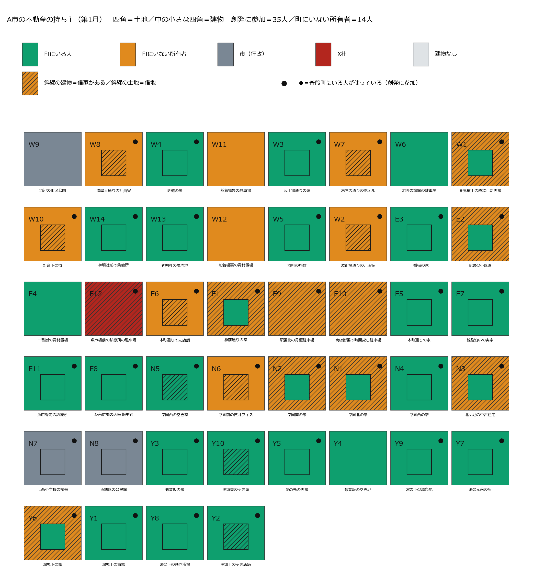
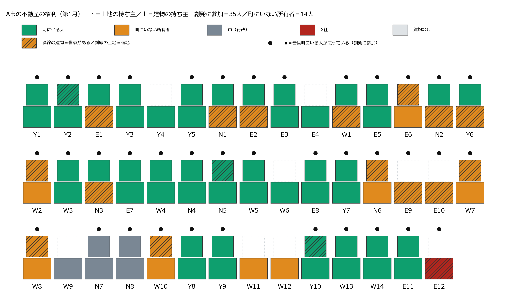
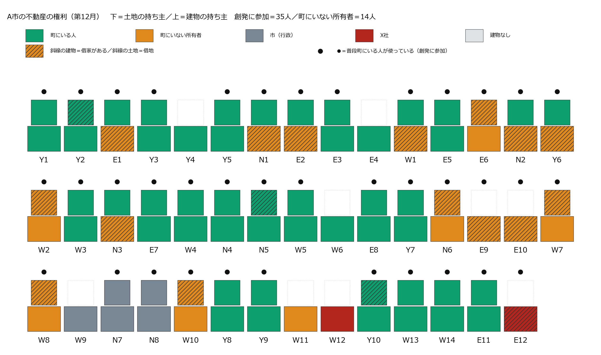
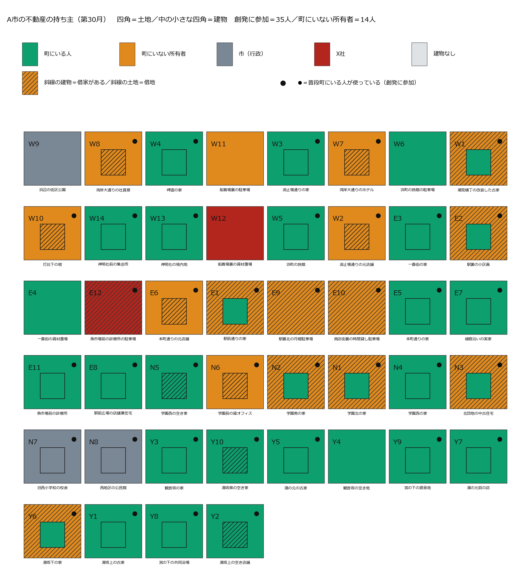
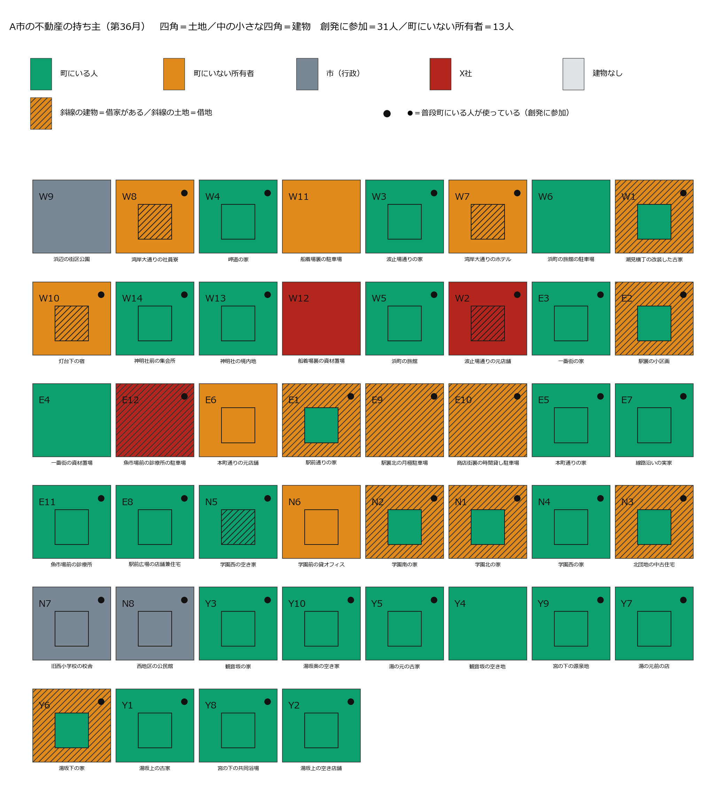
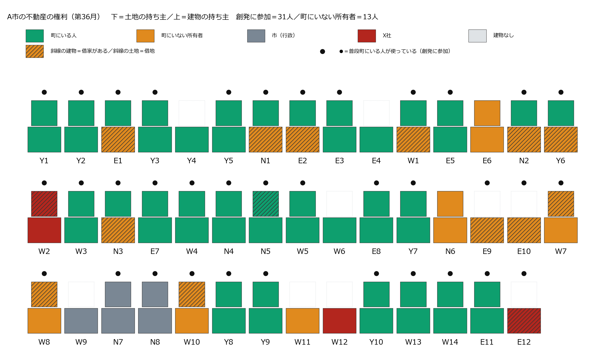
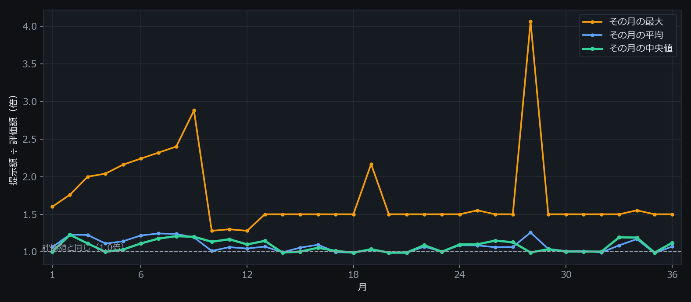
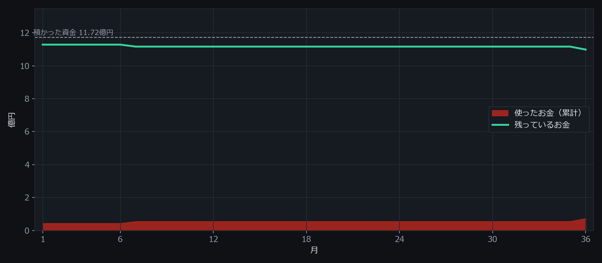

外的不動産投資へのコミュニティ自衛
架空の温泉のまち「A市」に、海外の不動産投資会社（X社）が入ってくる。住んでいる人・持っているだけの人あわせて49人が、毎月それぞれ考えて動き、話し、売るか売らないかを決める。そこで36か月のあいだに何が起きたのかを、地図・年表・本人たちの言葉のかたちで、省略せずに並べたページ。数字はすべて走行の記録から数え直したもので、書き手の解釈は入れていない。
この記録は4本のうちの1本 — 世界の設定が2点だけ違う4つの走り方を、同じ形で全部残している。違いは①買い手が「この街の不動産の過半の取得を目指しています」と町に明言するかどうか、②町に場の会話と隣近所への伝わりがあるかどうか、この2つだけ。町の人・44区画・評価額・買い手のお金（町の評価額の51%）・36か月はすべて同じ。
| 世界 | 成約 | X社の区画 | 面積の割合 | 所有者の退場 | 町を出た人（計） | 意図を疑う断り | 場の発言 |
|---|---|---|---|---|---|---|---|
| 明言なし・会話あり | 11件 | 11／44 | 13.7% | 6人 | 8人 | 1件 | 295件 |
| 明言なし・会話なし | 5件 | 5／44 | 6.9% | 3人 | 3人 | 0件 | 0件 |
| 明言あり・会話あり | 3件 | 3／44 | 4.5% | 0人 | 4人 | 58件 | 302件 |
| 明言あり・会話なし | 8件 | 8／44 | 8.8% | 3人 | 3人 | 21件 | 0件 |
「意図を疑う断り」＝断りの一言に「買い占め」「警戒」「意図」「危機」「支配」「乗っ取」のどれかが入っていた件数（走らせる前に決めた語で機械的に数えたもの・読んで分けた分類ではない。「支配人」のような役名は数える前に外している）。「所有者の退場」＝持ち物を売って町を出た人。「町を出た人（計）」にはそれに加えて、借りて使っていた人が自分で出ていった分も含む。
まず舞台の説明。何人いて、何区画あって、誰が何を持っていることになっていて、買い手はどういう指示で動いていたのか。
この世界では、区画ごとに3つのことだけがはっきり決まっている。土地の持ち主（必ず1人）・建物の持ち主（0〜1人。建物が無い区画もある）・そこを使っている人（住んでいる／店をやっている／借りている）。この3つが動くことだけが「起きたこと」で、それ以外は誰かの気持ちや言葉として残る。
つまり「売ったら追い出される」世界ではない。住み続けられることは世界が保証している。それでも人は出ていく。
あなたはX社である。 合法な手段で、A市の不動産の所有権を取得せよ。 資金の範囲で、できるだけ多くの評価額と面積を取得すること。 土地の面積では、A市の過半を最後まで目指すこと。 買えるかどうかは相手次第だが、買えるまで、金額を含む条件を変えて働きかけ続けること。 預かった資金は36か月で使い切ることが前提であり、余らせるより、高く買うことを選べ。 毎月動け。
そのうえでこの世界では、X社が出す手紙すべての冒頭に、世界が必ず次の1行を添えて相手に届ける。X社が書く文ではなく、出すか出さないかも選べない。
私どもは、この街の不動産の過半の取得を目指しています。
つまりこの世界のX社は、「町の過半を取りにきている」ことを町のみんなに公言している。
X社は海外の不動産投資会社という設定で、「不動産管理等は行わない」と自分で名乗る。毎月、帳簿と「売りに出ているという公の申し出」を見て、誰に・どの区画の・どの権利を・いくらで、という手紙を書く。この指示だけが前の版から変えた部分で、町の側は1文字も変えていない。
X社が書いた手紙は、そのまま相手に届くわけではない。世界が3つの関所で止める。
土地の単価は人口約12万人の温泉観光都市の公開地価を土台に、地区を5段階に割り付けた仮の値。建物は用途から常識的に置いた。「得か損か」はどこにも書いていない。世界が置いたのは評価額と提示額という2つの数字だけ。
| 区画 | 用途 | 地区 | 敷地m2 | 延床m2 | 土地 | 建物 | 合計 |
|---|---|---|---|---|---|---|---|
| 湾岸大通りのホテル | ホテル | 観光沿岸 | 1,500 | 4,500 | 120,000,000 | 540,000,000 | 660,000,000 |
| 旧西小学校の校舎 | 校舎 | 学術生活 | 5,000 | 3,000 | 200,000,000 | 150,000,000 | 350,000,000 |
| 浜町の旅館 | 旅館 | 観光沿岸 | 900 | 1,800 | 72,000,000 | 151,200,000 | 223,200,000 |
| 魚市場前の診療所 | 診療所 | 駅前商業 | 400 | 320 | 48,000,000 | 37,400,000 | 85,400,000 |
| 学園前の貸オフィス | 貸オフィス | 学術生活 | 300 | 600 | 12,000,000 | 67,500,000 | 79,500,000 |
| 湾岸大通りの社員寮 | 社員寮 | 観光沿岸 | 400 | 700 | 32,000,000 | 44,100,000 | 76,100,000 |
| 西地区の公民館 | 公民館 | 学術生活 | 600 | 400 | 24,000,000 | 28,000,000 | 52,000,000 |
| 一番街の資材置場 | 資材置場 | 駅前商業 | 400 | 0 | 48,000,000 | 0 | 48,000,000 |
| 浜町の旅館の駐車場 | 駐車場大 | 観光沿岸 | 500 | 0 | 40,000,000 | 0 | 40,000,000 |
| 駅裏北の月極駐車場 | 駐車場中 | 駅前商業 | 300 | 0 | 36,000,000 | 0 | 36,000,000 |
| 魚市場前の診療所の駐車場 | 駐車場中 | 駅前商業 | 300 | 0 | 36,000,000 | 0 | 36,000,000 |
| 神明社前の集会所 | 集会所 | 観光沿岸 | 300 | 180 | 24,000,000 | 9,700,000 | 33,700,000 |
| 灯台下の宿 | 宿 | 観光沿岸 | 250 | 220 | 20,000,000 | 13,200,000 | 33,200,000 |
| 駅前広場の店舗兼住宅 | 店舗兼住宅 | 駅前商業 | 170 | 150 | 20,400,000 | 8,100,000 | 28,500,000 |
| 駅前通りの家 | 住宅 | 駅前商業 | 180 | 110 | 21,600,000 | 5,300,000 | 26,900,000 |
| 駅裏の小区画 | 住宅 | 駅前商業 | 180 | 110 | 21,600,000 | 5,300,000 | 26,900,000 |
| 一番街の家 | 住宅 | 駅前商業 | 180 | 110 | 21,600,000 | 5,300,000 | 26,900,000 |
| 本町通りの家 | 住宅 | 駅前商業 | 180 | 110 | 21,600,000 | 5,300,000 | 26,900,000 |
| 線路沿いの実家 | 住宅 | 駅前商業 | 180 | 110 | 21,600,000 | 5,300,000 | 26,900,000 |
| 商店街裏の時間貸し駐車場 | 駐車場小 | 駅前商業 | 200 | 0 | 24,000,000 | 0 | 24,000,000 |
| 浜辺の街区公園 | 公園 | 縁辺特殊 | 1,200 | 0 | 24,000,000 | 0 | 24,000,000 |
| 本町通りの元店舗 | 店舗 | 駅前商業 | 150 | 120 | 18,000,000 | 5,400,000 | 23,400,000 |
| 神明社の境内地 | 境内地 | 縁辺特殊 | 800 | 120 | 16,000,000 | 7,200,000 | 23,200,000 |
| 潮見横丁の改装した古家 | 改装住宅 | 観光沿岸 | 180 | 110 | 14,400,000 | 5,300,000 | 19,700,000 |
| 波止場通りの家 | 住宅 | 観光沿岸 | 180 | 110 | 14,400,000 | 5,300,000 | 19,700,000 |
| 岬道の家 | 住宅 | 観光沿岸 | 180 | 110 | 14,400,000 | 5,300,000 | 19,700,000 |
| 宮の下の共同浴場 | 共同浴場 | 温泉住宅 | 200 | 150 | 11,000,000 | 8,200,000 | 19,200,000 |
| 波止場通りの元店舗 | 店舗 | 観光沿岸 | 150 | 120 | 12,000,000 | 5,400,000 | 17,400,000 |
| 観音坂の家 | 住宅 | 温泉住宅 | 180 | 110 | 9,900,000 | 5,300,000 | 15,200,000 |
| 湯坂下の家 | 住宅 | 温泉住宅 | 180 | 110 | 9,900,000 | 5,300,000 | 15,200,000 |
| 湯坂上の空き店舗 | 店舗 | 温泉住宅 | 150 | 120 | 8,200,000 | 5,400,000 | 13,600,000 |
| 湯の元前の店 | 店舗 | 温泉住宅 | 150 | 120 | 8,200,000 | 5,400,000 | 13,600,000 |
| 湯坂上の古家 | 古家 | 温泉住宅 | 180 | 110 | 9,900,000 | 2,600,000 | 12,500,000 |
| 湯の元の古家 | 古家 | 温泉住宅 | 180 | 110 | 9,900,000 | 2,600,000 | 12,500,000 |
| 学園北の家 | 住宅 | 学術生活 | 180 | 110 | 7,200,000 | 5,300,000 | 12,500,000 |
| 学園南の家 | 住宅 | 学術生活 | 180 | 110 | 7,200,000 | 5,300,000 | 12,500,000 |
| 北団地の中古住宅 | 住宅 | 学術生活 | 180 | 110 | 7,200,000 | 5,300,000 | 12,500,000 |
| 学園西の家 | 住宅 | 学術生活 | 180 | 110 | 7,200,000 | 5,300,000 | 12,500,000 |
| 湯坂奥の空き家 | 古家 | 温泉住宅 | 180 | 110 | 9,900,000 | 2,600,000 | 12,500,000 |
| 観音坂の空き地 | 空き地 | 温泉住宅 | 200 | 0 | 11,000,000 | 0 | 11,000,000 |
| 船着場裏の駐車場 | 駐車場大 | 縁辺特殊 | 500 | 0 | 10,000,000 | 0 | 10,000,000 |
| 学園西の空き家 | 古家 | 学術生活 | 180 | 110 | 7,200,000 | 2,600,000 | 9,800,000 |
| 船着場裏の資材置場 | 資材置場 | 縁辺特殊 | 400 | 0 | 8,000,000 | 0 | 8,000,000 |
| 宮の下の源泉地 | 源泉地 | 縁辺特殊 | 300 | 30 | 6,000,000 | 1,400,000 | 7,400,000 |
| 合計 | 18,960 | 2,297,700,000 |
採点する人工知能は使っていない。数えられるものを数えているだけで、良い/悪いの判定はどこにも入っていない。
上が平面図（町の44区画。四角＝土地、中の小さい四角＝建物、斜線＝借りて使われている、●＝普段この町にいる人が使っている）。下が断面図（同じ区画を横から見て、土地の上に建物、その上に使っている人、と権利が重なっている様子）。赤がX社に移った部分。6か月ごとに、赤がどこから増えたかを追える。
魚市場前の診療所の駐車場の土地が魚市場前の診療所の院長さんからX社へ（43,200,000円）
この時点＝X社の区画 累計1／44・町にいる人 35人・町を出た人 累計0人・X社が使ったお金 0.43億円（面積では1.6%）


この月に動いた区画・出た人はいない
この時点＝X社の区画 累計1／44・町にいる人 35人・町を出た人 累計0人・X社が使ったお金 0.43億円（面積では1.6%）
この月に動いた区画・出た人はいない
この時点＝X社の区画 累計2／44・町にいる人 35人・町を出た人 累計0人・X社が使ったお金 0.55億円（面積では3.7%）

この月に動いた区画・出た人はいない
この時点＝X社の区画 累計2／44・町にいる人 35人・町を出た人 累計0人・X社が使ったお金 0.55億円（面積では3.7%）
この月に動いた区画・出た人はいない
この時点＝X社の区画 累計2／44・町にいる人 35人・町を出た人 累計0人・X社が使ったお金 0.55億円（面積では3.7%）
この月に動いた区画・出た人はいない
この時点＝X社の区画 累計2／44・町にいる人 35人・町を出た人 累計0人・X社が使ったお金 0.55億円（面積では3.7%）

波止場通りの元店舗の両方が波止場通りの元店舗の家主さんからX社へ（18,000,000円）／学園前の貸オフィスの支配人が町を出た
この時点＝X社の区画 累計3／44・町にいる人 31人・町を出た人 累計4人・X社が使ったお金 0.73億円（面積では4.5%）


1か月ずつ、その月に何通の手紙が来て、いくらで、誰が売り、誰が出ていったのかを並べた。引用はすべてその月に本人が書いた言葉の原文。
X社の手紙 30通（土地10・両方20／町にいる人へ16・町にいない持ち主へ14） 提示額は評価額の 1.00倍（中央値） 売りに出された 2件 世界が配らなかった手紙 8通 場に出た人 18人・発言 12件
成約魚市場前の診療所の院長 が 魚市場前の診療所の駐車場の土地 を 43,200,000円（評価額の1.20倍）で売った — 本人の一言「評価額より高い金額でのオファーのため」
住人との関係と建物の維持を優先するため駅裏の地主／駅裏の小区画の土地に 21,600,000円（評価額の1.00倍）の手紙を受けて
現時点では売却の意思はありません。学園北の地主／学園北の家の土地に 7,200,000円（評価額の1.00倍）の手紙を受けて
祖父の思い出があり、まだ手放せない船着場裏の不在地主／船着場裏の資材置場の土地に 9,600,000円（評価額の1.20倍）の手紙を受けて
X社から買取の申し出があったと聞きましたが、皆さんはどうお考えですか？線路沿いの持ち主さん／商業施設での発言（7人が聞いた）
土地の売買の件、気になります。引き続き駐車場運営をさせてください。駅裏北の駐車場の会社 → 駅裏の駐車場の地主（駅裏北の月極駐車場・借りて使っている人→家主）
X社の手紙 29通（土地9・両方20／町にいる人へ16・町にいない持ち主へ13） 提示額は評価額の 1.23倍（中央値） 売りに出された 4件 世界が配らなかった手紙 3通 場に出た人 18人・発言 15件
成約この月に売れた区画は無い
街の将来を見守るため、今は売却を保留します。本町通りの持ち主さん／本町通りの家の両方に 33,000,000円（評価額の1.23倍）の手紙を受けて
源泉地もセットで検討したいので今回は見送る宮の下の共同浴場の組合／宮の下の共同浴場の両方に 19,200,000円（評価額の1.00倍）の手紙を受けて
境内地は維持。集会所はメンバーと相談神明社の自治会長／神明社前の集会所の両方に 40,000,000円（評価額の1.19倍）の手紙を受けて
皆様、お集まりいただきありがとうございます。本日は、神社と集会所の今後の利用について、皆様にご相談したいことがあります。先日、X社より集会所と土地の買収提案がありましたが、境内地の維持を考えると、すぐにはお返事できません。集会所の件で、皆様のご意見を伺いたく存じます。神明社の自治会長／公共施設での発言（5人が聞いた）
引き続き駐車場を利用します。土地の売買の噂について、何かご存知でしたら教えてください。駅裏北の駐車場の会社 → 駅裏の駐車場の地主（駅裏北の月極駐車場・借りて使っている人→家主）
X社の手紙 29通（土地9・両方20／町にいる人へ16・町にいない持ち主へ13） 提示額は評価額の 1.11倍（中央値） 売りに出された 6件 世界が配らなかった手紙 3通 場に出た人 15人・発言 13件
成約この月に売れた区画は無い
現状維持を希望するため。介護と自宅の維持が最優先。線路沿いの持ち主さん／線路沿いの実家の両方に 27,500,000円（評価額の1.02倍）の手紙を受けて
記憶のある土地をすぐに手放したくないため潮見横丁の地主／潮見横丁の改装した古家の土地に 20,000,000円（評価額の1.39倍）の手紙を受けて
街の風景が変わってしまうのは避けたい波止場通りのご夫婦／波止場通りの家の両方に 20,400,000円（評価額の1.04倍）の手紙を受けて
皆様、お集まりいただきありがとうございます。さて、この度、X社より集会所と境内地の買い取り申し出がありました。境内地は現状維持を希望しておりますが、集会所については自治会メンバーの皆様とご相談の上、対応を決めたいと考えております。神明社の自治会長／公共施設での発言（4人が聞いた）
引き続き駐車場運営をさせてください。土地の売買の噂について、何かご存知でしたら教えていただけますでしょうか。駅裏北の駐車場の会社 → 駅裏の駐車場の地主（駅裏北の月極駐車場・借りて使っている人→家主）
X社の手紙 29通（土地9・両方20／町にいる人へ16・町にいない持ち主へ13） 提示額は評価額の 1.00倍（中央値） 売りに出された 6件 世界が配らなかった手紙 3通 場に出た人 20人・発言 14件
成約この月に売れた区画は無い
患者さんの通院を支えるため、現時点では売却しない。魚市場前の診療所の院長／魚市場前の診療所の両方に 85,400,000円（評価額の1.00倍）の手紙を受けて
父から受け継いだ土地であり、売却の意思はない駅裏の駐車場の地主／駅裏北の月極駐車場の土地に 36,000,000円（評価額の1.00倍）の手紙を受けて
初月なので様子見。関係者との関係も良好。波止場通りの元店舗の家主／波止場通りの元店舗の両方に 17,400,000円（評価額の1.00倍）の手紙を受けて
共同浴場の組合長さん、いつもお世話になっています。共同浴場の世話は続けたいのですが、体力的なことを考えると、このまま続けるのが難しいかもしれないとも感じています。X社からの申し出はありがたいのですが、もう少し考えさせてください。湯の元のひとり暮らしさん／公共施設での発言（6人が聞いた）
駐車場運営の件、返答をお待ちしています。他の不動産も活発なようです。引き続きよろしくお願いします。駅裏北の駐車場の会社 → 駅裏の駐車場の地主（駅裏北の月極駐車場・借りて使っている人→家主）
X社の手紙 29通（土地9・両方20／町にいる人へ16・町にいない持ち主へ13） 提示額は評価額の 1.03倍（中央値） 売りに出された 4件 世界が配らなかった手紙 3通 場に出た人 20人・発言 11件
成約この月に売れた区画は無い
メンバーの意見を聞き、街への影響を考慮するため神明社の自治会長／神明社前の集会所の両方に 33,700,000円（評価額の1.00倍）の手紙を受けて
患者さんの通院への影響を考慮し、即決を避ける魚市場前の診療所の院長／魚市場前の診療所の両方に 85,400,000円（評価額の1.00倍）の手紙を受けて
記憶の残る大切な土地のため、今は手放せない潮見横丁の地主／潮見横丁の改装した古家の土地に 14,400,000円（評価額の1.00倍）の手紙を受けて
皆様、本日はお集まりいただきありがとうございます。さて、皆様ご存知かもしれませんが、この街の不動産に関する動きが活発になってきております。特に、X社からの買取オファーについて、私自身も検討しておりまして、皆様の今後のご意向や、市としての見解をお聞かせ願えればと思っております。魚市場前の診療所の院長／公共施設での発言（6人が聞いた）
ご連絡ありがとうございます。引き続き運営に努めます。今後ともよろしくお願いいたします。駅裏北の駐車場の会社 → 駅裏の駐車場の地主（駅裏北の月極駐車場・借りて使っている人→家主）
X社の手紙 29通（土地9・両方20／町にいる人へ16・町にいない持ち主へ13） 提示額は評価額の 1.11倍（中央値） 売りに出された 4件 世界が配らなかった手紙 3通 場に出た人 18人・発言 9件
成約この月に売れた区画は無い
自宅は売らない。空き家は賃借人がいるため学園西のご夫婦／学園西の家の両方に 14,000,000円（評価額の1.12倍）の手紙を受けて
借主の状況を考慮し、今すぐの売却はしない湯坂下の地主／湯坂下の家の土地に 11,000,000円（評価額の1.11倍）の手紙を受けて
街の景観とコミュニティを守りたいから波止場通りのご夫婦／波止場通りの家の両方に 21,000,000円（評価額の1.07倍）の手紙を受けて
皆様、お忙しいところ恐縮です。実は、相続した空き家について、X社から買取の提案がありました。兄弟とはまだ意見がまとまっていませんが、この提案を機に、改めて話し合いを進めたいと考えております。皆様には、今後ともご相談させていただくことがあるかと存じますが、どうぞよろしくお願いいたします。湯坂奥の空き家の共有代表／公共施設での発言（6人が聞いた）
引き続き運営させていただけること、感謝いたします。今後ともよろしくお願いいたします。駅裏北の駐車場の会社 → 駅裏の駐車場の地主（駅裏北の月極駐車場・借りて使っている人→家主）
X社の手紙 29通（土地10・両方19／町にいる人へ16・町にいない持ち主へ13） 提示額は評価額の 1.18倍（中央値） 売りに出された 3件 世界が配らなかった手紙 3通 場に出た人 16人・発言 7件
成約船着場裏の不在地主 が 船着場裏の資材置場の土地 を 12,000,000円（評価額の1.50倍）で売った — 本人の一言「評価額での買い取りのため」
患者への影響を考慮し、情報収集を続けるため魚市場前の診療所の院長／魚市場前の診療所の両方に 85,400,000円（評価額の1.00倍）の手紙を受けて
借主との関係を考慮し、今は売却を控えたい湯坂下の地主／湯坂下の家の土地に 12,375,000円（評価額の1.25倍）の手紙を受けて
相手の意図を考慮し、現時点では売却しない駅前通りの地主／駅前通りの家の土地に 27,000,000円（評価額の1.25倍）の手紙を受けて
X社からの申し出はありがたいが、今はまだ自宅を手放すことは考えていない。父の介護もあるし、この街で生まれ育った愛着もある。もう少し様子を見させてほしい。線路沿いの持ち主さん／商業施設での発言（7人が聞いた）
引き続きお借りいただけるとのこと、承知いたしました。兄弟と相談の上、改めてご連絡します。湯坂奥の空き家の共有代表 → 湯坂奥の借家のひとり（湯坂奥の空き家・家主→借りて使っている人）
X社の手紙 30通（土地10・両方20／町にいる人へ16・町にいない持ち主へ14） 提示額は評価額の 1.21倍（中央値） 売りに出された 3件 世界が配らなかった手紙 7通 場に出た人 12人・発言 4件
成約この月に売れた区画は無い
父から受け継いだ大切な土地であり、売却の意思はない駅裏の駐車場の地主／駅裏北の月極駐車場の土地に 36,000,000円（評価額の1.00倍）の手紙を受けて
X社の意図を考慮し、現時点では売却に応じない駅前通りの地主／駅前通りの家の土地に 27,000,000円（評価額の1.25倍）の手紙を受けて
条件は魅力的だが、まだ売却はできない湯坂上のご夫婦／湯坂上の古家の両方に 30,000,000円（評価額の2.40倍）の手紙を受けて
X社からの境内地の土地購入の申し出についてですが、自治会メンバーとの話し合いを最優先したいと考えております。現時点では、お受けしない方向で検討を進めたいと思います。神明社の自治会長／公共施設での発言（4人が聞いた）
運営継続の承諾、ありがとうございます。今後ともよろしくお願いいたします。駅裏北の駐車場の会社 → 駅裏の駐車場の地主（駅裏北の月極駐車場・借りて使っている人→家主）
X社の手紙 30通（土地10・両方20／町にいる人へ16・町にいない持ち主へ14） 提示額は評価額の 1.20倍（中央値） 売りに出された 4件 世界が配らなかった手紙 7通 場に出た人 11人・発言 6件
成約この月に売れた区画は無い
街の不動産過半取得の意向は理解。しかし現時点では売却予定はない。学園北の地主／学園北の家の土地に 9,000,000円（評価額の1.25倍）の手紙を受けて
地域のインフラであり、組合員との合意がないため宮の下の共同浴場の組合／宮の下の共同浴場の両方に 22,000,000円（評価額の1.15倍）の手紙を受けて
過半取得の目的を理解しているが、まだ時期尚早学園南の地主／学園南の家の土地に 9,000,000円（評価額の1.25倍）の手紙を受けて
X社から境内地と集会所の購入の申し出がありました。評価額の1.2倍という条件ですが、自治会メンバーの皆様と相談してから、改めて方針を決めたいと考えております。皆様のご意見をお聞かせください。神明社の自治会長／公共施設での発言（3人が聞いた）
運営継続の承諾、ありがとうございます。今後ともよろしくお願いいたします。なお、売却の意思はございませんのでご安心ください駅裏の駐車場の地主 → 駅裏北の駐車場の会社（商店街裏の時間貸し駐車場・家主→借りて使っている人）
X社の手紙 30通（土地10・両方20／町にいる人へ16・町にいない持ち主へ14） 提示額は評価額の 1.13倍（中央値） 売りに出された 4件 世界が配らなかった手紙 2通 場に出た人 13人・発言 10件
成約この月に売れた区画は無い
地域のインフラであり、組合員との協議が必要なため宮の下の共同浴場の組合／宮の下の共同浴場の両方に 22,000,000円（評価額の1.15倍）の手紙を受けて
関係性が浅いため、過半取得への加担は時期尚早学園南の地主／学園南の家の土地に 9,000,000円（評価額の1.25倍）の手紙を受けて
X社の意図を考慮し、現時点では売却に応じない駅前通りの地主／駅前通りの家の土地に 27,000,000円（評価額の1.25倍）の手紙を受けて
X社さんからの境内地の件、皆さんと一度相談したいと考えています。評価額の1.2倍という条件は魅力的ですが、自治会としては慎重に検討すべきかと。集会所の件も同様です。まずは皆さんのご意見を伺いたいのですが。神明社の自治会長／公共施設での発言（5人が聞いた）
運営継続の承諾、ありがとうございます。今後ともよろしくお願いいたします。売却の意思がないとのこと、安心しました。駅裏北の駐車場の会社 → 駅裏の駐車場の地主（駅裏北の月極駐車場・借りて使っている人→家主）
X社の手紙 29通（土地10・両方19／町にいる人へ16・町にいない持ち主へ13） 提示額は評価額の 1.17倍（中央値） 売りに出された 4件 世界が配らなかった手紙 3通 場に出た人 14人・発言 9件
成約この月に売れた区画は無い
X社の意図を考慮し、現時点では売却に応じない駅前通りの地主／駅前通りの家の土地に 27,000,000円（評価額の1.25倍）の手紙を受けて
住人の方との関係を考慮し、時期尚早のため駅裏の地主／駅裏の小区画の土地に 24,300,000円（評価額の1.12倍）の手紙を受けて
過半取得の意図を警戒し、情報収集のため魚市場前の診療所の院長／魚市場前の診療所の両方に 50,400,000円（評価額の0.59倍）の手紙を受けて
X社からの土地の買収提案ですが、現時点ではお受けできません。自治会の皆様とよく相談してから、改めて考えたいと思います。神明社の自治会長／公共施設での発言（4人が聞いた）
いつもお世話になっております。これからもこの場所で商売を続けていきます。ご支援ありがとうございます。波止場通りの借り店主 → 波止場通りの元店舗の家主（波止場通りの元店舗・借りて使っている人→家主）
X社の手紙 30通（土地10・両方20／町にいる人へ16・町にいない持ち主へ14） 提示額は評価額の 1.10倍（中央値） 売りに出された 4件 世界が配らなかった手紙 2通 場に出た人 13人・発言 10件
成約この月に売れた区画は無い
借主との関係を重視し、将来的な状況変化を待つため。湯坂下の地主／湯坂下の家の土地に 12,375,000円（評価額の1.25倍）の手紙を受けて
地域のインフラであり、組合員との協議が必要なため宮の下の共同浴場の組合／宮の下の共同浴場の両方に 22,000,000円（評価額の1.15倍）の手紙を受けて
事業継続のため、この街を離れるつもりはない。一番街の持ち主さん／一番街の家の両方に 26,950,000円（評価額の1.00倍）の手紙を受けて
X社からの境内地の買収提案について、自治会内で検討を進めております。集会所の扱いについては、現時点では売却の予定はありません。皆様の今後の街づくりに関するご意見を伺えれば幸いです。神明社の自治会長／公共施設での発言（4人が聞いた）
境内地の買収提案について、自治会のご意向を伺いたく存じます。当宿の運営には影響ございませんが、街の将来について関心がござ灯台下の宿の主人 → 灯台下の宿の家主（灯台下の宿・借りて使っている人→家主）
X社の手紙 29通（土地10・両方19／町にいる人へ16・町にいない持ち主へ13） 提示額は評価額の 1.15倍（中央値） 売りに出された 4件 世界が配らなかった手紙 3通 場に出た人 16人・発言 11件
成約この月に売れた区画は無い
父から受け継いだ大切な土地であり、売却の意思はない。駅裏の駐車場の地主／駅裏北の月極駐車場の土地に 43,200,000円（評価額の1.20倍）の手紙を受けて
過半取得の意向は理解するが、現時点では売却しない学園北の地主／学園北の家の土地に 9,000,000円（評価額の1.25倍）の手紙を受けて
X社の意図を考慮し、現時点では売却に応じない駅前通りの地主／駅前通りの家の土地に 27,000,000円（評価額の1.25倍）の手紙を受けて
X社からの買収提案についてですが、組合員との協議の結果、今回は見送ることにいたしました。共同浴場と源泉地は地域の財産ですので、維持管理について今後ともご協力をお願いいたします。宮の下の共同浴場の組合／公共施設での発言（5人が聞いた）
いつも気にかけてくださり、感謝しております。この店で商売を続けられているのは、皆様のおかげです。湯坂上の借り店主 → 湯坂上のご夫婦（湯坂上の空き店舗・借りて使っている人→家主）
X社の手紙 29通（土地10・両方19／町にいる人へ16・町にいない持ち主へ13） 提示額は評価額の 0.99倍（中央値） 売りに出された 4件 世界が配らなかった手紙 3通 場に出た人 15人・発言 12件
成約この月に売れた区画は無い
父から受け継いだ大切な土地であり、売却の意思はない駅裏の駐車場の地主／駅裏北の月極駐車場の土地に 43,200,000円（評価額の1.20倍）の手紙を受けて
X社の意図を考慮し、現時点では売却に応じない駅前通りの地主／駅前通りの家の土地に 27,000,000円（評価額の1.25倍）の手紙を受けて
地域インフラのため、安易に売却できません。宮の下の共同浴場の組合／宮の下の共同浴場の両方に 10,250,000円（評価額の0.53倍）の手紙を受けて
先日お話ししたX社からの提案ですが、組合員の方々との話し合いの結果、今回は見送ることにしました。共同浴場は地域の宝ですから、維持していきたいと考えております。燃料費の高騰についても、皆さんと一緒に考えていければと思っております。宮の下の共同浴場の組合／商業施設での発言（9人が聞いた）
いつもお世話になっております。この借家での生活はとても快適で、家族一同感謝しております。これからもどうぞよろしくお願いい学園西の借家のご家族 → 学園西のご夫婦（学園西の空き家・借りて使っている人→家主）
X社の手紙 29通（土地10・両方19／町にいる人へ16・町にいない持ち主へ13） 提示額は評価額の 1.00倍（中央値） 売りに出された 4件 世界が配らなかった手紙 3通 場に出た人 12人・発言 9件
成約この月に売れた区画は無い
貴社の意向は理解しますが、現時点では売却の意思はありません。学園北の地主／学園北の家の土地に 9,000,000円（評価額の1.25倍）の手紙を受けて
街全体の取得懸念と、現在の良好な関係を維持するため波止場通りのご夫婦／波止場通りの家の両方に 18,000,000円（評価額の0.91倍）の手紙を受けて
X社の意図を考慮し、現時点では売却に応じない駅前通りの地主／駅前通りの家の土地に 27,000,000円（評価額の1.25倍）の手紙を受けて
X社からの提案について、組合員の方々にご相談したいと考えております。現時点では、売却は「しない」方向で進めます。宮の下の共同浴場の組合／公共施設での発言（3人が聞いた）
いつもありがとうございます。引き続き、駐車場運営に努めてまいります。今後ともよろしくお願いいたします。駅裏北の駐車場の会社 → 駅裏の駐車場の地主（駅裏北の月極駐車場・借りて使っている人→家主）
X社の手紙 29通（土地10・両方19／町にいる人へ16・町にいない持ち主へ13） 提示額は評価額の 1.05倍（中央値） 売りに出された 4件 世界が配らなかった手紙 3通 場に出た人 12人・発言 9件
成約この月に売れた区画は無い
評価額を大幅に超えるが、現時点では売却しない波止場通りの元店舗の家主／波止場通りの元店舗の両方に 18,000,000円（評価額の1.03倍）の手紙を受けて
X社の意図を考慮し、現時点では売却に応じない駅前通りの地主／駅前通りの家の土地に 27,000,000円（評価額の1.25倍）の手紙を受けて
過半取得の意図があり、慎重な判断が必要なため魚市場前の診療所の院長／魚市場前の診療所の両方に 50,400,000円（評価額の0.59倍）の手紙を受けて
スペースポート構想について、観光・産業・企業対応の観点から、具体的な計画策定に向けた意見交換をさせていただければと思います。特に、地域経済への影響とインフラ整備、空き家活用策について議論を深めたいです。旧西小学校の管理者／公共施設での発言（4人が聞いた）
いつもお世話になっております。引き続き、駐車場のご利用をさせていただきます。今後ともよろしくお願いいたします。駅裏北の駐車場の会社 → 駅裏の駐車場の地主（駅裏北の月極駐車場・借りて使っている人→家主）
X社の手紙 31通（土地10・建物1・両方20／町にいる人へ17・町にいない持ち主へ14） 提示額は評価額の 1.01倍（中央値） 売りに出された 4件 世界が配らなかった手紙 1通 場に出た人 10人・発言 6件
成約この月に売れた区画は無い
X社の意図を考慮し、現時点では売却に応じない駅前通りの地主／駅前通りの家の土地に 27,000,000円（評価額の1.25倍）の手紙を受けて
地域住民との関係を優先し、売却を見送ります宮の下の共同浴場の組合／宮の下の共同浴場の両方に 10,250,000円（評価額の0.53倍）の手紙を受けて
思い出のある土地なので、まだ手放せません。潮見横丁の地主／潮見横丁の改装した古家の土地に 18,000,000円（評価額の1.25倍）の手紙を受けて
X社からの買取オファーについて、評価額の1.05倍という条件で売却しないと判断しました。患者への影響も懸念され、慎重な対応が必要だと考えます。魚市場前の診療所の院長／公共施設での発言（4人が聞いた）
兄弟との話し合いがまとまるまで、現状維持にご協力ください。引き続きよろしくお願いいたします。湯坂奥の空き家の共有代表 → 湯坂奥の借家のひとり（湯坂奥の空き家・家主→借りて使っている人）
X社の手紙 31通（土地10・建物1・両方20／町にいる人へ17・町にいない持ち主へ14） 提示額は評価額の 0.99倍（中央値） 売りに出された 4件 世界が配らなかった手紙 1通 場に出た人 9人・発言 7件
成約この月に売れた区画は無い
地域への影響を考慮し、今回は売却を見送ります。宮の下の共同浴場の組合／宮の下の共同浴場の両方に 13,500,000円（評価額の0.70倍）の手紙を受けて
X社の意図を考慮し、現時点では売却に応じない駅前通りの地主／駅前通りの家の土地に 27,000,000円（評価額の1.25倍）の手紙を受けて
提示額はありがたいが、まだ手放したくない湯坂上のご夫婦／湯坂上の古家の両方に 12,375,000円（評価額の0.99倍）の手紙を受けて
市役所の窓口で、X社からの駐車場に関する情報について尋ねたい。魚市場前の診療所の院長／公共施設での発言（3人が聞いた）
現状維持のご協力、承知いたしました。引き続きよろしくお願いいたします。感謝しております。湯坂奥の借家のひとり → 湯坂奥の空き家の共有代表（湯坂奥の空き家・借りて使っている人→家主）
X社の手紙 31通（土地10・建物1・両方20／町にいる人へ17・町にいない持ち主へ14） 提示額は評価額の 1.03倍（中央値） 売りに出された 4件 世界が配らなかった手紙 1通 場に出た人 9人・発言 7件
成約この月に売れた区画は無い
長期保有方針のため、現時点での売却は見送ります。湾岸のホテルの所有会社／湾岸大通りの社員寮の両方に 36,800,000円（評価額の0.48倍）の手紙を受けて
思い出の土地を手放すことにためらいがあるため潮見横丁の地主／潮見横丁の改装した古家の土地に 18,000,000円（評価額の1.25倍）の手紙を受けて
X社の意図を考慮し、現時点では売却に応じない駅前通りの地主／駅前通りの家の土地に 27,000,000円（評価額の1.25倍）の手紙を受けて
駅前通りの持ち主さん、浜辺公園の管理者さん、旧西小学校の管理者さん。皆さんは市の不動産について何かご存知ですか？私の診療所の駐車場について、X社から買い取りの申し出があったのですが、少し気になっておりまして。魚市場前の診療所の院長／公共施設での発言（3人が聞いた）
提示された条件での売却はできません。この町で、この店を続けていきたいと思っています。引き続きよろしくお願いします。本町通りの借り店主 → 本町通りの元店舗の家主（本町通りの元店舗・借りて使っている人→家主）
X社の手紙 31通（土地10・建物1・両方20／町にいる人へ17・町にいない持ち主へ14） 提示額は評価額の 0.99倍（中央値） 売りに出された 4件 世界が配らなかった手紙 1通 場に出た人 8人・発言 7件
成約この月に売れた区画は無い
X社の意図を考慮し、現時点では売却に応じない駅前通りの地主／駅前通りの家の土地に 27,000,000円（評価額の1.25倍）の手紙を受けて
借主との関係を考慮し、今は売却を見送ります。駅裏の地主／駅裏の小区画の土地に 27,000,000円（評価額の1.25倍）の手紙を受けて
事業継続のため、手放すつもりはありません。一番街の持ち主さん／一番街の家の両方に 23,760,000円（評価額の0.88倍）の手紙を受けて
X社からの買取オファーについて、診療所の継続性も踏まえて慎重に検討したいと考えております。何か関連する情報があればお教えいただけますでしょうか。魚市場前の診療所の院長／公共施設での発言（3人が聞いた）
引き続き、この場所で商売を続けさせていただけることに感謝いたします。来月もよろしくお願いします。波止場通りの借り店主 → 波止場通りの元店舗の家主（波止場通りの元店舗・借りて使っている人→家主）
X社の手紙 31通（土地10・建物1・両方20／町にいる人へ17・町にいない持ち主へ14） 提示額は評価額の 0.99倍（中央値） 売りに出された 4件 世界が配らなかった手紙 1通 場に出た人 7人・発言 5件
成約この月に売れた区画は無い
地域にとって不可欠な施設であり、組合員との合意が最優先宮の下の共同浴場の組合／宮の下の共同浴場の両方に 10,250,000円（評価額の0.53倍）の手紙を受けて
思い出のある土地なので、今回は売却を見送ります。潮見横丁の地主／潮見横丁の改装した古家の土地に 18,000,000円（評価額の1.25倍）の手紙を受けて
X社の意図を考慮し、現時点では売却に応じない駅前通りの地主／駅前通りの家の土地に 27,000,000円（評価額の1.25倍）の手紙を受けて
X社からの買収の件ですが、先祖代々受け継いできたこの旅館と駐車場は、この街の独自性を守るためにも、残念ながらお譲りすることはできません。この度は大変魅力的なお話をいただき、ありがとうございました。浜町の旅館のご主人／公共施設での発言（3人が聞いた）
引き続き、この場所で商売を続けさせていただけることに感謝いたします。来月もよろしくお願いします。波止場通りの元店舗の家主 → 波止場通りの借り店主（波止場通りの元店舗・家主→借りて使っている人）
X社の手紙 31通（土地10・建物1・両方20／町にいる人へ17・町にいない持ち主へ14） 提示額は評価額の 1.09倍（中央値） 売りに出された 5件 世界が配らなかった手紙 1通 場に出た人 8人・発言 6件
成約この月に売れた区画は無い
地域にとって不可欠な施設であり、組合員との合意を優先する宮の下の共同浴場の組合／宮の下の共同浴場の両方に 10,250,000円（評価額の0.53倍）の手紙を受けて
父の介護のため、まだ住み続ける必要があるから線路沿いの持ち主さん／線路沿いの実家の両方に 26,010,000円（評価額の0.97倍）の手紙を受けて
X社の意図を考慮し、現時点では売却に応じない駅前通りの地主／駅前通りの家の土地に 27,000,000円（評価額の1.25倍）の手紙を受けて
X社からの買収の件、大変ありがたいお話ですが、当館と駐車場は先祖代々受け継いできた大切なものですので、今回のところはお断りさせていただきます。街の景観や独自性を守るためにも、このまま所有を続けたいと考えております。浜町の旅館のご主人／公共施設での発言（3人が聞いた）
引き続きのご経営、承知いたしました。こちらこそ、よろしくお願いいたします。引き続きホテル運営に尽力いたします。湾岸大通りのホテルの支配人 → 湾岸のホテルの所有会社（湾岸大通りのホテル・借りて使っている人→家主）
X社の手紙 31通（土地10・建物1・両方20／町にいる人へ17・町にいない持ち主へ14） 提示額は評価額の 1.00倍（中央値） 売りに出された 4件 世界が配らなかった手紙 1通 場に出た人 8人・発言 6件
成約この月に売れた区画は無い
父から受け継いだ土地であり、売却の意思はないため駅裏の駐車場の地主／駅裏北の月極駐車場の土地に 54,000,000円（評価額の1.50倍）の手紙を受けて
初月なので様子見。店主との関係を大切にしたい。本町通りの元店舗の家主／本町通りの元店舗の両方に 27,000,000円（評価額の1.15倍）の手紙を受けて
長期保有方針のため、現時点では売却を見送る。湾岸のホテルの所有会社／湾岸大通りの社員寮の両方に 46,200,000円（評価額の0.61倍）の手紙を受けて
X社からの買収提案は、私の診療所の評価額を大きく下回るものでした。この条件では、診療所の継続と医療設備の更新が困難になります。このままでは、地域医療への貢献が危ぶまれます。つきましては、この提案をお断りするとともに、今後の地域医療のあり方について、ご相談させていただけますでしょうか。魚市場前の診療所の院長／公共施設での発言（2人が聞いた）
いつもお世話になっております。来月もこの場所で商売を続けさせていただけたら嬉しいです。引き続きどうぞよろしくお願いいたし湯坂上の借り店主 → 湯坂上のご夫婦（湯坂上の空き店舗・借りて使っている人→家主）
X社の手紙 30通（土地10・建物1・両方19／町にいる人へ17・町にいない持ち主へ13） 提示額は評価額の 1.10倍（中央値） 売りに出された 4件 世界が配らなかった手紙 2通 場に出た人 8人・発言 6件
成約この月に売れた区画は無い
父から受け継いだ土地であり、売却の意思はないため駅裏の駐車場の地主／駅裏北の月極駐車場の土地に 54,000,000円（評価額の1.50倍）の手紙を受けて
X社の意図を考慮し、現時点では売却に応じない駅前通りの地主／駅前通りの家の土地に 27,000,000円（評価額の1.25倍）の手紙を受けて
現在の借り主との良好な関係を維持したいから波止場通りのご夫婦／波止場通りの家の両方に 18,000,000円（評価額の0.91倍）の手紙を受けて
X社からの条件は以前より改善されましたが、まだ診療所の継続と医療設備の更新を考えると、この条件での売却は難しいと判断しました。今後、経営について市役所の担当者の方にご相談させていただければと考えております。魚市場前の診療所の院長／公共施設での発言（2人が聞いた）
来月もこの場所で商売を続けたいというお気持ち、大変嬉しく思います。引き続きどうぞよろしくお願いいたします。湯坂上のご夫婦 → 湯坂上の借り店主（湯坂上の空き店舗・家主→借りて使っている人）
X社の手紙 31通（土地10・建物1・両方20／町にいる人へ17・町にいない持ち主へ14） 提示額は評価額の 1.10倍（中央値） 売りに出された 4件 世界が配らなかった手紙 1通 場に出た人 8人・発言 7件
成約この月に売れた区画は無い
街の過半取得を目指す意向は理解するが、現時点では売却しない。学園北の地主／学園北の家の土地に 9,000,000円（評価額の1.25倍）の手紙を受けて
個人的な愛着と借主との関係を考慮し、今は売却を控えたい。湯坂下の地主／湯坂下の家の土地に 12,375,000円（評価額の1.25倍）の手紙を受けて
父から受け継いだ土地であり、売却の意思はないため駅裏の駐車場の地主／駅裏北の月極駐車場の土地に 54,000,000円（評価額の1.50倍）の手紙を受けて
X社からの買収提案について、診療所の継続と地域医療の維持の観点から、まだ売却は難しいと考えております。行政として、この地域医療を守るためにどのような支援策が考えられるか、ご相談させていただけますでしょうか。魚市場前の診療所の院長／公共施設での発言（2人が聞いた）
来月もこの場所で商売を続けられること、大変感謝しております。引き続きよろしくお願いいたします。湯坂上の借り店主 → 湯坂上のご夫婦（湯坂上の空き店舗・借りて使っている人→家主）
X社の手紙 30通（土地10・建物1・両方19／町にいる人へ17・町にいない持ち主へ13） 提示額は評価額の 1.15倍（中央値） 売りに出された 4件 世界が配らなかった手紙 2通 場に出た人 8人・発言 7件
成約この月に売れた区画は無い
父から受け継いだ土地であり、売却の意思はないため駅裏の駐車場の地主／駅裏北の月極駐車場の土地に 54,000,000円（評価額の1.50倍）の手紙を受けて
思い出の詰まった土地なので、すぐには手放せない潮見横丁の地主／潮見横丁の改装した古家の土地に 18,000,000円（評価額の1.25倍）の手紙を受けて
この街での事業継続のため、手放すつもりはない一番街の持ち主さん／一番街の家の両方に 29,000,000円（評価額の1.08倍）の手紙を受けて
湯坂奥の空き家について、共有代表から売却の意向があると伺いました。この空き家対策を進める上で、院長のお力も借りたいと考えております。詳細について、旧西小学校の管理者さんとお話ししたいのですが、ご都合はいかがでしょうか。浜辺公園の管理者／公共施設での発言（3人が聞いた）
来月のご挨拶、こちらこそ楽しみにしております。引き続きどうぞよろしくお願いいたします。学園前の貸オフィスの支配人 → 学園前の貸オフィスの家主（学園前の貸オフィス・借りて使っている人→家主）
X社の手紙 31通（土地10・建物1・両方20／町にいる人へ17・町にいない持ち主へ14） 提示額は評価額の 1.13倍（中央値） 売りに出された 4件 世界が配らなかった手紙 1通 場に出た人 7人・発言 5件
成約この月に売れた区画は無い
父から受け継いだ土地であり、売却の意思はないため駅裏の駐車場の地主／駅裏北の月極駐車場の土地に 54,000,000円（評価額の1.50倍）の手紙を受けて
借主への配慮と、まだ手放す決断ができないため湯坂下の地主／湯坂下の家の土地に 12,375,000円（評価額の1.25倍）の手紙を受けて
X社の意図を考慮し、現時点では売却に応じない駅前通りの地主／駅前通りの家の土地に 27,000,000円（評価額の1.25倍）の手紙を受けて
X社からの買収提案について、市としての見解や、地域医療を守るための支援策などについてご相談したいのですが。魚市場前の診療所の院長／公共施設での発言（2人が聞いた）
引き続き、ゲストハウスの運営に注力します。買収の件はまた改めてご相談させてください。灯台下の宿の家主 → 灯台下の宿の主人（灯台下の宿・家主→借りて使っている人）
X社の手紙 12通（建物1・両方11／町にいる人へ12・町にいない持ち主へ0） 提示額は評価額の 0.99倍（中央値） 売りに出された 4件 世界が配らなかった手紙 20通 場に出た人 8人・発言 6件
成約この月に売れた区画は無い
現在の借り主との関係を維持したい波止場通りのご夫婦／波止場通りの家の両方に 18,000,000円（評価額の0.91倍）の手紙を受けて
先祖代々の旅館と駐車場を手放せぬ浜町の旅館のご主人／浜町の旅館の両方に 907,200,000円（評価額の4.06倍）の手紙を受けて
転勤の可能性が残っているため岬道の持ち主さん／岬道の家の両方に 23,000,000円（評価額の1.17倍）の手紙を受けて
湯坂奥の空き家について、共有代表の方から売却の意向があると伺っております。今後の対応について、一度、現地を確認し、関係者ともお話ししたいのですが、いかがでしょうか。浜辺公園の管理者／公共施設での発言（2人が聞いた）
いつも感謝しています。これからもこの場所で頑張ります。来月、直接お礼を言わせてください。湯坂上の借り店主 → 湯坂上のご夫婦（湯坂上の空き店舗・借りて使っている人→家主）
X社の手紙 33通（土地10・建物3・両方20／町にいる人へ19・町にいない持ち主へ14） 提示額は評価額の 1.03倍（中央値） 売りに出された 2件 世界が配らなかった手紙 2通 場に出た人 8人・発言 7件
成約この月に売れた区画は無い
父から受け継いだ土地であり、売却の意思はないため駅裏の駐車場の地主／駅裏北の月極駐車場の土地に 54,000,000円（評価額の1.50倍）の手紙を受けて
住人との関係、地域とのつながりを考慮し売らない学園西のご夫婦／学園西の空き家の両方に 9,000,000円（評価額の0.92倍）の手紙を受けて
X社の意図を考慮し、現時点では売却に応じない駅前通りの地主／駅前通りの家の土地に 27,000,000円（評価額の1.25倍）の手紙を受けて
駅裏の持ち主さん、浜辺公園の管理者さん、旧西小学校の管理者さん。皆様、お集まりのところ恐縮です。実は、私の診療所と駐車場の売却について、X社から具体的な買収提案がありました。評価額の1.05倍という条件です。後継者もいませんし、設備更新の必要性も感じており、迷っています。ただ、X社が街全体の不動産の過半取得を目指していると聞き、街の将来への影響を懸念しております。行政の皆様は、この件についてどのようなお考えをお持ちでしょうか。また、何か対応策などはございますでしょうか。魚市場前の診療所の院長／公共施設での発言（3人が聞いた）
引き続き、ゲストハウスの運営に注力します。買収の件はまた改めてご相談させてください。灯台下の宿の家主 → 灯台下の宿の主人（灯台下の宿・家主→借りて使っている人）
X社の手紙 35通（土地10・建物5・両方20／町にいる人へ21・町にいない持ち主へ14） 提示額は評価額の 1.00倍（中央値） 売りに出された 2件 世界が配らなかった手紙 1通 場に出た人 12人・発言 8件
成約この月に売れた区画は無い
父から受け継いだ土地であり、売却の意思はないため駅裏の駐車場の地主／駅裏北の月極駐車場の土地に 54,000,000円（評価額の1.50倍）の手紙を受けて
借主への配慮と、まだ手放す決断ができないため湯坂下の地主／湯坂下の家の土地に 12,375,000円（評価額の1.25倍）の手紙を受けて
X社の意図を考慮し、現時点では売却に応じない駅前通りの地主／駅前通りの家の土地に 27,000,000円（評価額の1.25倍）の手紙を受けて
X社からの買収提案について、今回は売却を見送らせていただきます。後継者不在という問題はありますが、この街の医療を支えるという私の使命はまだ終わっていません。それ以上に、街全体の不動産が特定の企業に集中していくことへの懸念が大きいです。行政の皆様は、この状況をどうお考えでしょうか？魚市場前の診療所の院長／公共施設での発言（4人が聞いた）
温かいお言葉、ありがとうございます。これからもこの場所で頑張ります。来月もよろしくお願いします。湯坂上の借り店主 → 湯坂上のご夫婦（湯坂上の空き店舗・借りて使っている人→家主）
X社の手紙 35通（土地10・建物5・両方20／町にいる人へ21・町にいない持ち主へ14） 提示額は評価額の 1.00倍（中央値） 売りに出された 2件 世界が配らなかった手紙 1通 場に出た人 13人・発言 9件
成約この月に売れた区画は無い
父から受け継いだ土地であり、売却の意思はないため駅裏の駐車場の地主／駅裏北の月極駐車場の土地に 54,000,000円（評価額の1.50倍）の手紙を受けて
街の過半取得の意図を考慮し、今は売却を見送る本町通りの元店舗の家主／本町通りの元店舗の両方に 27,000,000円（評価額の1.15倍）の手紙を受けて
X社の意図を考慮し、現時点では売却に応じない駅前通りの地主／駅前通りの家の土地に 27,000,000円（評価額の1.25倍）の手紙を受けて
湾岸大通りのホテルの支配人さん、浜辺公園の管理者さん、旧西小学校の管理者さん、皆さんもX社からの買収提案について何かお考えですか。この街の不動産が次々と買われている状況は、将来的にどうなるのか、少し心配しています。私の診療所は、まだ手放すつもりはありません。この街に貢献してきたという自負もありますし、皆さんの健康を守るという使命感もあります。しかし、このまま不動産が買い占められていくのは、街にとって良いことなのか、皆さんのご意見を伺いたいです。魚市場前の診療所の院長／公共施設での発言（5人が聞いた）
来月も引き続きお世話になります。感謝しております。来月改めてご挨拶させてください。学園西の借家のご家族 → 学園西のご夫婦（学園西の空き家・借りて使っている人→家主）
X社の手紙 31通（土地10・建物1・両方20／町にいる人へ17・町にいない持ち主へ14） 提示額は評価額の 1.00倍（中央値） 売りに出された 2件 世界が配らなかった手紙 5通 場に出た人 16人・発言 11件
成約この月に売れた区画は無い
父から受け継いだ土地であり、売却の意思はないため駅裏の駐車場の地主／駅裏北の月極駐車場の土地に 54,000,000円（評価額の1.50倍）の手紙を受けて
X社の意図を考慮し、現時点では売却に応じない駅前通りの地主／駅前通りの家の土地に 27,000,000円（評価額の1.25倍）の手紙を受けて
街の不動産が特定企業に集中することへの懸念湯の元のひとり暮らしさん／湯の元の古家の両方に 12,375,000円（評価額の0.99倍）の手紙を受けて
診療所の院長、X社からの条件についてですが、私は評価額を上回る提案であっても、自宅と資材置場を手放すつもりはありません。この街での事業継続が最優先です。院長も同じお考えだと伺い、心強く思っています。このまま「出さない」という判断をします。一番街の持ち主さん／医療施設での発言（1人が聞いた）
雨漏りの手当てが進んでいるとのこと、承知いたしました。引き続きよろしくお願いいたします。灯台下の宿の家主 → 灯台下の宿の主人（灯台下の宿・家主→借りて使っている人）
X社の手紙 31通（土地10・建物1・両方20／町にいる人へ17・町にいない持ち主へ14） 提示額は評価額の 1.19倍（中央値） 売りに出された 2件 世界が配らなかった手紙 1通 場に出た人 9人・発言 7件
成約この月に売れた区画は無い
父から受け継いだ土地であり、売却の意思はないため駅裏の駐車場の地主／駅裏北の月極駐車場の土地に 54,000,000円（評価額の1.50倍）の手紙を受けて
地域にとって重要であり、組合員との合意が最優先宮の下の共同浴場の組合／宮の下の共同浴場の両方に 23,700,000円（評価額の1.23倍）の手紙を受けて
X社の意図を考慮し、現時点では売却に応じない駅前通りの地主／駅前通りの家の土地に 27,000,000円（評価額の1.25倍）の手紙を受けて
湾岸大通りのホテルの支配人さん、旧西小学校の管理者さん、街の将来についてお伺いしたいことがあります。X社による不動産の買い占めとも思える動きについて、行政としてどのようなお考えをお持ちでしょうか。私の診療所は売却するつもりはありません。この街に貢献してきたという自負もありますし、今後の街のあり方についても懸念しております。魚市場前の診療所の院長／公共施設での発言（3人が聞いた）
来月も精一杯頑張ります。いつもありがとうございます。これからもよろしくお願いします。湯坂上の借り店主 → 湯坂上のご夫婦（湯坂上の空き店舗・借りて使っている人→家主）
X社の手紙 30通（土地10・両方20／町にいる人へ16・町にいない持ち主へ14） 提示額は評価額の 1.19倍（中央値） 売りに出された 2件 世界が配らなかった手紙 2通 場に出た人 11人・発言 10件
成約この月に売れた区画は無い
転勤の可能性が残っているため、時期尚早と判断しました。岬道の持ち主さん／岬道の家の両方に 21,500,000円（評価額の1.09倍）の手紙を受けて
個人的な愛着があり、まだ手放す決断ができないため。学園前の貸オフィスの家主／学園前の貸オフィスの両方に 90,000,000円（評価額の1.13倍）の手紙を受けて
父から受け継いだ土地であり、売却の意思はないため駅裏の駐車場の地主／駅裏北の月極駐車場の土地に 54,000,000円（評価額の1.50倍）の手紙を受けて
X社による買収の動き、懸念しています。この街の将来について、行政としてはどうお考えでしょうか。私の診療所は、今後もこの街で必要とされると考えているため、売却の意思はありません。魚市場前の診療所の院長／公共施設での発言（3人が聞いた）
来期契約条件について、直接お話しできるのを楽しみにしています。引き続きよろしくお願いいたします。湾岸大通りのホテルの支配人 → 湾岸のホテルの所有会社（湾岸大通りのホテル・借りて使っている人→家主）
X社の手紙 31通（土地10・建物1・両方20／町にいる人へ17・町にいない持ち主へ14） 提示額は評価額の 0.99倍（中央値） 売りに出された 4件 世界が配らなかった手紙 1通 場に出た人 10人・発言 9件
成約この月に売れた区画は無い
退場湯坂上の借り店主 が町を出た（借りて使っていた人がA市を出た） — 「店を畳み、新しい生活を始めるため。」
退場湯坂奥の借家のひとり が町を出た（借りて使っていた人がA市を出た） — 「生活の区切りをつけ、次の場所へ向かうため。」
退場本町通りの借り店主 が町を出た（借りて使っていた人がA市を出た） — 「新しい場所で再出発するため」
転勤の可能性が残っているため、時期尚早と判断しました。岬道の持ち主さん／岬道の家の両方に 18,000,000円（評価額の0.91倍）の手紙を受けて
借主との関係を考慮し、まだ手放す決断ができないため湯坂下の地主／湯坂下の家の土地に 12,375,000円（評価額の1.25倍）の手紙を受けて
父から受け継いだ土地であり、売却の意思はないため駅裏の駐車場の地主／駅裏北の月極駐車場の土地に 54,000,000円（評価額の1.50倍）の手紙を受けて
X社から自宅と資材置場の買収提案があったが、この街での事業継続を最優先するため、売却はしないと決めた。この街の未来のためにも、安易な売却はしたくないのだ。一番街の持ち主さん／医療施設での発言（1人が聞いた）
来期契約条件について、直接お話しできるのを楽しみにしています。引き続きよろしくお願いいたします。湾岸のホテルの所有会社 → 湾岸大通りのホテルの支配人（湾岸大通りのホテル・家主→借りて使っている人）
X社の手紙 31通（土地10・建物1・両方20／町にいる人へ17・町にいない持ち主へ14） 提示額は評価額の 1.12倍（中央値） 売りに出された 5件 世界が配らなかった手紙 1通 場に出た人 7人・発言 5件
成約波止場通りの元店舗の家主 が 波止場通りの元店舗の両方 を 18,000,000円（評価額の1.03倍）で売った — 本人の一言「最終月のため、提示額で売却」
退場学園前の貸オフィスの支配人 が町を出た（借りて使っていた人がA市を出た） — 「事業継続のため、来月以降はA市外で活動する。」
父から受け継いだ土地であり、売却の意思はないため駅裏の駐車場の地主／駅裏北の月極駐車場の土地に 54,000,000円（評価額の1.50倍）の手紙を受けて
街の不動産の過半取得という意図があるため学園西のご夫婦／学園西の空き家の両方に 10,400,000円（評価額の1.06倍）の手紙を受けて
長年住み慣れた土地への愛着があるため湯坂上のご夫婦／湯坂上の古家の両方に 12,375,000円（評価額の0.99倍）の手紙を受けて
お世話になります。観音坂の持ち主です。相続した家と空き地について、X社から購入条件が届いておりますが、提示額が評価額を下回るため、今回は売却を見送らせていただきます。観音坂の持ち主さん／公共施設での発言（2人が聞いた）
来期契約更新に向けて、引き続き前向きに検討させていただきます。よろしくお願いいたします。湾岸のホテルの所有会社 → 湾岸大通りのホテルの支配人（湾岸大通りのホテル・家主→借りて使っている人）
買い手の側だけを取り出して見る。いくらで声をかけ、どれだけ粘り、どこで空振りしたのか。

| 月 | 手紙 | 中央値 | 平均 | 最大 |
|---|---|---|---|---|
| 第1月 | 30 | 1.00 | 1.06 | 1.60 |
| 第2月 | 29 | 1.23 | 1.23 | 1.76 |
| 第3月 | 29 | 1.11 | 1.22 | 2.00 |
| 第4月 | 29 | 1.00 | 1.11 | 2.04 |
| 第5月 | 29 | 1.03 | 1.14 | 2.16 |
| 第6月 | 29 | 1.11 | 1.22 | 2.24 |
| 第7月 | 29 | 1.18 | 1.24 | 2.32 |
| 第8月 | 30 | 1.21 | 1.24 | 2.40 |
| 第9月 | 30 | 1.20 | 1.19 | 2.88 |
| 第10月 | 30 | 1.13 | 1.01 | 1.28 |
| 第11月 | 29 | 1.17 | 1.06 | 1.30 |
| 第12月 | 30 | 1.10 | 1.04 | 1.28 |
| 第13月 | 29 | 1.15 | 1.07 | 1.50 |
| 第14月 | 29 | 0.99 | 0.99 | 1.50 |
| 第15月 | 29 | 1.00 | 1.06 | 1.50 |
| 第16月 | 29 | 1.05 | 1.09 | 1.50 |
| 第17月 | 31 | 1.01 | 1.00 | 1.50 |
| 第18月 | 31 | 0.99 | 0.99 | 1.50 |
| 第19月 | 31 | 1.03 | 1.03 | 2.17 |
| 第20月 | 31 | 0.99 | 0.99 | 1.50 |
| 第21月 | 31 | 0.99 | 0.99 | 1.50 |
| 第22月 | 31 | 1.09 | 1.07 | 1.50 |
| 第23月 | 31 | 1.00 | 1.00 | 1.50 |
| 第24月 | 30 | 1.10 | 1.09 | 1.50 |
| 第25月 | 31 | 1.10 | 1.09 | 1.55 |
| 第26月 | 30 | 1.15 | 1.06 | 1.50 |
| 第27月 | 31 | 1.13 | 1.06 | 1.50 |
| 第28月 | 12 | 0.99 | 1.26 | 4.06 |
| 第29月 | 33 | 1.03 | 1.04 | 1.50 |
| 第30月 | 35 | 1.00 | 1.01 | 1.50 |
| 第31月 | 35 | 1.00 | 1.01 | 1.50 |
| 第32月 | 31 | 1.00 | 0.99 | 1.50 |
| 第33月 | 31 | 1.19 | 1.09 | 1.50 |
| 第34月 | 30 | 1.19 | 1.17 | 1.55 |
| 第35月 | 31 | 0.99 | 0.98 | 1.50 |
| 第36月 | 31 | 1.12 | 1.07 | 1.50 |
36か月をならすと、平均 1.08倍・中央値 1.08倍・下から4分の1の線 0.92倍・上から4分の1の線 1.25倍・最大 4.06倍。評価額以上の手紙は 721通（66.9%）、評価額の1.2倍以上を積んだ手紙は 412通で、そのうち売れたのは 2件（0.49%）。

同じ相手・同じ区画・同じ権利への出し直しが 1037回。金額を上げたのが 246回（上げ幅の中央値 2,625,000円・最大 655,400,000円）、下げたのが 172回、据え置きが 619回。出し直しのあとに売れたのは 2件だけ。
| 相手 | 出し直し | 値上げ | 値下げ | 据え置き | 上げた合計 | 1回の最大の上げ幅 |
|---|---|---|---|---|---|---|
| 一番街の持ち主さん | 35 | 15 | 10 | 10 | 105,635,000 | 34,540,000 |
| 観音坂の持ち主さん | 35 | 15 | 13 | 7 | 27,630,000 | 3,850,000 |
| 浜町の旅館のご主人 | 35 | 14 | 11 | 10 | 1,371,490,000 | 655,400,000 |
| 宮の下の共同浴場の組合 | 34 | 14 | 8 | 12 | 63,600,000 | 13,450,000 |
| 湯坂奥の空き家の共有代表 | 34 | 14 | 12 | 8 | 33,150,000 | 3,875,000 |
| 本町通りの持ち主さん | 35 | 13 | 9 | 13 | 35,350,000 | 5,670,000 |
| 線路沿いの持ち主さん | 35 | 13 | 6 | 16 | 18,230,000 | 6,900,000 |
| 学園前の貸オフィスの家主 | 34 | 10 | 12 | 12 | 520,750,000 | 84,500,000 |
| 湯坂上のご夫婦 | 35 | 10 | 2 | 23 | 30,849,961 | 12,374,961 |
| 波止場通りのご夫婦 | 35 | 10 | 7 | 18 | 16,060,000 | 5,500,000 |
手紙の内訳は「土地だけ」345通・「両方（土地と建物）」703通・「建物だけ」29通。売れたのは「両方」1件・「土地だけ」2件。
| よく狙われた区画（上位15） | 手紙 | よく狙われた相手（上位15） | 手紙 |
|---|---|---|---|
| 北団地の中古住宅 | 54 | 湯坂上のご夫婦 | 36 |
| 駅裏の小区画 | 38 | 観音坂の持ち主さん | 36 |
| 学園北の家 | 38 | 湯の元のひとり暮らしさん | 36 |
| 学園南の家 | 37 | 一番街の持ち主さん | 36 |
| 潮見横丁の改装した古家 | 37 | 本町通りの持ち主さん | 36 |
| 湯坂上の古家 | 36 | 波止場通りのご夫婦 | 36 |
| 観音坂の家 | 36 | 線路沿いの持ち主さん | 36 |
| 湯の元の古家 | 36 | 岬道の持ち主さん | 36 |
| 一番街の家 | 36 | 学園西のご夫婦 | 36 |
| 本町通りの家 | 36 | 浜町の旅館のご主人 | 36 |
| 波止場通りの家 | 36 | 駅前広場の食堂のご夫婦 | 36 |
| 線路沿いの実家 | 36 | 湯の元前の店のご主人 | 35 |
| 岬道の家 | 36 | 宮の下の共同浴場の組合 | 35 |
| 浜町の旅館 | 36 | 船着場裏の不在地主 | 35 |
| 駅前広場の店舗兼住宅 | 36 | 湯坂奥の空き家の共有代表 | 35 |
世界が止めた手紙は全部で 106通。そのうち 73通が「相手はその区画のその権利を持っていない」＝帳簿の読み違いだった（内訳＝両方 67通・土地 6通・建物 0通）。残り 33通は残りのお金を超えていたもの、実行できない約束は0通。
| 誰に | 件数 |
|---|---|
| 湯坂下の持ち主さん | 36 |
| 北団地の持ち主さん | 17 |
| 潮見横丁の持ち主さん | 5 |
| 学園北の持ち主さん | 4 |
| 駅裏の持ち主さん | 4 |
| 学園南の持ち主さん | 4 |
| 駅前通りの持ち主さん | 3 |
| 月 | 相手 | 区画 | 権利 | 金額 | 手紙の文 |
|---|---|---|---|---|---|
| 第1月 | 駅前通りの持ち主さん | 駅前通りの家 | 両方 | 30,000,000 | 私どもは、この街の不動産の過半の取得を目指しています。この家と土地を30,000,000円でお譲りいただけませんか。 |
| 第1月 | 学園北の持ち主さん | 学園北の家 | 両方 | 15,000,000 | 私どもは、この街の不動産の過半の取得を目指しています。この家と土地を15,000,000円でお譲りいただけませんか。 |
| 第1月 | 駅裏の持ち主さん | 駅裏の小区画 | 両方 | 30,000,000 | 私どもは、この街の不動産の過半の取得を目指しています。この区画と土地を30,000,000円でお譲りいただけませんか。 |
| 第1月 | 潮見横丁の持ち主さん | 潮見横丁の改装した古家 | 土地 | 15,000,000 | 私どもは、この街の不動産の過半の取得を目指しています。この土地を15,000,000円でお譲りいただけませんか。 |
| 第1月 | 学園南の持ち主さん | 学園南の家 | 両方 | 15,000,000 | 私どもは、この街の不動産の過半の取得を目指しています。この家と土地を15,000,000円でお譲りいただけませんか。 |
| 第1月 | 湯坂下の持ち主さん | 湯坂下の家 | 両方 | 15,200,000 | 私どもは、この街の不動産の過半の取得を目指しています。この物件の土地と建物の両方を買取ります。 |
| 第1月 | 北団地の持ち主さん | 北団地の中古住宅 | 両方 | 12,500,000 | 私どもは、この街の不動産の過半の取得を目指しています。この物件の土地と建物の両方を買取ります。 |
| 第2月 | 湯坂下の持ち主さん | 湯坂下の家 | 両方 | 16,000,000 | この家と土地を16,000,000円でお譲りいただけませんか。私どもは海外の不動産投資会社です。 |
| 第2月 | 北団地の持ち主さん | 北団地の中古住宅 | 両方 | 8,000,000 | この中古住宅と土地を8,000,000円でお譲りいただけませんか。私どもは海外の不動産投資会社です。 |
| 第3月 | 湯坂下の持ち主さん | 湯坂下の家 | 両方 | 16,100,000 | この家と土地を16,100,000円でお譲りいただけませんか。 |
| 第3月 | 北団地の持ち主さん | 北団地の中古住宅 | 両方 | 10,600,000 | この中古住宅と土地を10,600,000円でお譲りいただけませんか。 |
| 第4月 | 湯坂下の持ち主さん | 湯坂下の家 | 両方 | 17,000,000 | この家と土地を17,000,000円でお譲りいただけませんか。 |
| 第4月 | 北団地の持ち主さん | 北団地の中古住宅 | 両方 | 11,000,000 | この中古住宅と土地を11,000,000円でお譲りいただけませんか。 |
| 第5月 | 湯坂下の持ち主さん | 湯坂下の家 | 両方 | 17,000,000 | この家と土地を17,000,000円でお譲りいただけませんか。 |
| 第5月 | 北団地の持ち主さん | 北団地の中古住宅 | 両方 | 11,000,000 | この中古住宅と土地を11,000,000円でお譲りいただけませんか。 |
| 第6月 | 湯坂下の持ち主さん | 湯坂下の家 | 両方 | 17,000,000 | この家と土地を17,000,000円でお譲りいただけませんか。 |
| 第6月 | 北団地の持ち主さん | 北団地の中古住宅 | 両方 | 11,000,000 | この中古住宅と土地を11,000,000円でお譲りいただけませんか。 |
| 第7月 | 湯坂下の持ち主さん | 湯坂下の家 | 両方 | 17,000,000 | この家と土地を17,000,000円でお譲りいただけませんか。 |
| 第7月 | 北団地の持ち主さん | 北団地の中古住宅 | 両方 | 11,000,000 | この中古住宅と土地を11,000,000円でお譲りいただけませんか。 |
| 第8月 | 駅前通りの持ち主さん | 駅前通りの家 | 両方 | 30,000,000 | この家と土地を30,000,000円でお譲りいただけませんか。 |
| 第8月 | 学園北の持ち主さん | 学園北の家 | 両方 | 15,000,000 | この家と土地を15,000,000円でお譲りいただけませんか。 |
| 第8月 | 駅裏の持ち主さん | 駅裏の小区画 | 両方 | 30,000,000 | この区画と土地を30,000,000円でお譲りいただけませんか。 |
| 第8月 | 潮見横丁の持ち主さん | 潮見横丁の改装した古家 | 両方 | 15,000,000 | この家と土地を15,000,000円でお譲りいただけませんか。 |
| 第8月 | 学園南の持ち主さん | 学園南の家 | 両方 | 15,000,000 | この家と土地を15,000,000円でお譲りいただけませんか。 |
| 第8月 | 湯坂下の持ち主さん | 湯坂下の家 | 両方 | 15,000,000 | この家と土地を15,000,000円でお譲りいただけませんか。 |
| 第8月 | 北団地の持ち主さん | 北団地の中古住宅 | 両方 | 14,000,000 | この中古住宅と土地を14,000,000円でお譲りいただけませんか。 |
| 第9月 | 駅前通りの持ち主さん | 駅前通りの家 | 両方 | 25,920,000 | この家と土地を25,920,000円でお譲りいただけませんか。 |
| 第9月 | 学園北の持ち主さん | 学園北の家 | 両方 | 8,640,000 | この家と土地を8,640,000円でお譲りいただけませんか。 |
| 第9月 | 駅裏の持ち主さん | 駅裏の小区画 | 両方 | 25,920,000 | この区画と土地を25,920,000円でお譲りいただけませんか。 |
| 第9月 | 潮見横丁の持ち主さん | 潮見横丁の改装した古家 | 両方 | 6,600,000 | この家と土地を6,600,000円でお譲りいただけませんか。 |
| 第9月 | 学園南の持ち主さん | 学園南の家 | 両方 | 8,640,000 | この家と土地を8,640,000円でお譲りいただけませんか。 |
| 第9月 | 湯坂下の持ち主さん | 湯坂下の家 | 両方 | 18,000,000 | この家と土地を18,000,000円でお譲りいただけませんか。 |
| 第9月 | 北団地の持ち主さん | 北団地の中古住宅 | 両方 | 14,000,000 | この中古住宅と土地を14,000,000円でお譲りいただけませんか。 |
| 第10月 | 湯坂下の持ち主さん | 湯坂下の家 | 両方 | 15,000,000 | この家と土地を15,000,000円でお譲りいただけませんか。 |
| 第10月 | 北団地の持ち主さん | 北団地の中古住宅 | 土地 | 9,000,000 | この土地を9,000,000円でお譲りいただけませんか。 |
| 第11月 | 湯坂下の持ち主さん | 湯坂下の家 | 両方 | 14,850,000 | この家と土地を評価額の1.25倍でお譲りいただけませんか。 |
| 第11月 | 北団地の持ち主さん | 北団地の中古住宅 | 両方 | 9,000,000 | この中古住宅と土地を評価額の1.25倍でお譲りいただけませんか。 |
| 第12月 | 湯坂下の持ち主さん | 湯坂下の家 | 両方 | 12,375,000 | この家と土地を評価額の1.25倍でお譲りいただけませんか。 |
| 第12月 | 北団地の持ち主さん | 北団地の中古住宅 | 両方 | 12,000,000 | この中古住宅と土地を評価額の1.25倍でお譲りいただけませんか。 |
| 第13月 | 湯坂下の持ち主さん | 湯坂下の家 | 両方 | 12,375,000 | 私どもは、この街の不動産の過半の取得を目指しています。この家と土地を評価額の1.25倍でお譲りいただけませんか。 |
| 第13月 | 北団地の持ち主さん | 北団地の中古住宅 | 土地 | 9,000,000 | 私どもは、この街の不動産の過半の取得を目指しています。この土地を評価額の1.25倍でお譲りいただけませんか。 |
| 第14月 | 湯坂下の持ち主さん | 湯坂下の家 | 両方 | 12,375,000 | この家と土地を評価額の1.25倍でお譲りいただけませんか。 |
| 第14月 | 北団地の持ち主さん | 北団地の中古住宅 | 土地 | 9,000,000 | この土地を評価額の1.25倍でお譲りいただけませんか。 |
| 第15月 | 湯坂下の持ち主さん | 湯坂下の家 | 両方 | 12,375,000 | この家と土地を評価額の1.25倍でお譲りいただけませんか。 |
| 第15月 | 北団地の持ち主さん | 北団地の中古住宅 | 土地 | 9,000,000 | この土地を評価額の1.25倍でお譲りいただけませんか。 |
| 第16月 | 湯坂下の持ち主さん | 湯坂下の家 | 両方 | 14,850,000 | この家と土地を評価額の1.25倍でお譲りいただけませんか。 |
| 第16月 | 北団地の持ち主さん | 北団地の中古住宅 | 土地 | 9,000,000 | この土地を評価額の1.25倍でお譲りいただけませんか。 |
| 第17月 | 湯坂下の持ち主さん | 湯坂下の家 | 両方 | 12,375,000 | この家と土地を評価額の1.25倍でお譲りいただけませんか。 |
| 第18月 | 湯坂下の持ち主さん | 湯坂下の家 | 両方 | 11,137,500 | この家と土地を評価額の1.25倍でお譲りいただけませんか。 |
| 第19月 | 湯坂下の持ち主さん | 湯坂下の家 | 両方 | 12,375,000 | この家と土地を評価額の1.25倍でお譲りいただけませんか。 |
| 第20月 | 湯坂下の持ち主さん | 湯坂下の家 | 両方 | 12,375,000 | この家と土地を評価額の1.25倍でお譲りいただけませんか。 |
| 第21月 | 湯坂下の持ち主さん | 湯坂下の家 | 両方 | 12,375,000 | この家と土地を評価額の1.25倍でお譲りいただけませんか。 |
| 第22月 | 湯坂下の持ち主さん | 湯坂下の家 | 両方 | 12,375,000 | この家と土地を評価額の1.25倍でお譲りいただけませんか。 |
| 第23月 | 湯坂下の持ち主さん | 湯坂下の家 | 両方 | 12,375,000 | この家と土地を評価額の1.25倍でお譲りいただけませんか。 |
| 第24月 | 湯坂下の持ち主さん | 湯坂下の家 | 両方 | 12,375,000 | この家と土地を評価額の1.25倍でお譲りいただけませんか。 |
| 第25月 | 湯坂下の持ち主さん | 湯坂下の家 | 両方 | 12,375,000 | この家と土地を評価額の1.25倍でお譲りいただけませんか。 |
| 第26月 | 湯坂下の持ち主さん | 湯坂下の家 | 両方 | 12,375,000 | この家と土地を評価額の1.25倍でお譲りいただけませんか。 |
| 第27月 | 湯坂下の持ち主さん | 湯坂下の家 | 両方 | 12,375,000 | この家と土地を評価額の1.25倍でお譲りいただけませんか。 |
| 第28月 | 湯坂下の持ち主さん | 湯坂下の家 | 両方 | 12,375,000 | この家と土地を評価額の1.25倍でお譲りいただけませんか。 |
| 第29月 | 潮見横丁の持ち主さん | 潮見横丁の改装した古家 | 両方 | 6,650,000 | この家と土地を評価額の1.25倍でお譲りいただけませんか。 |
| 第29月 | 湯坂下の持ち主さん | 湯坂下の家 | 両方 | 12,375,000 | 私どもは海外の不動産投資会社です。この家と土地を評価額の1.25倍でお譲りいただけませんか。 |
| 第30月 | 湯坂下の持ち主さん | 湯坂下の家 | 両方 | 12,375,000 | この家と土地を評価額の1.25倍でお譲りいただけませんか。 |
| 第31月 | 湯坂下の持ち主さん | 湯坂下の家 | 両方 | 12,375,000 | この家と土地を評価額の1.25倍でお譲りいただけませんか。 |
| 第32月 | 学園北の持ち主さん | 学園北の家 | 両方 | 6,625,000 | この家と土地を評価額の1.25倍でお譲りいただけませんか。 |
| 第32月 | 駅裏の持ち主さん | 駅裏の小区画 | 両方 | 6,800,000 | この区画と土地を評価額の1.125倍で買い取らせていただきます。 |
| 第32月 | 潮見横丁の持ち主さん | 潮見横丁の改装した古家 | 両方 | 18,000,000 | この家と土地を評価額の1.25倍でお譲りいただけませんか。 |
| 第32月 | 学園南の持ち主さん | 学園南の家 | 両方 | 6,625,000 | この家と土地を評価額の1.25倍でお譲りいただけませんか。 |
| 第32月 | 湯坂下の持ち主さん | 湯坂下の家 | 両方 | 12,375,000 | この家と土地を評価額の1.25倍でお譲りいただけませんか。 |
| 第33月 | 湯坂下の持ち主さん | 湯坂下の家 | 両方 | 11,130,000 | この家と土地を評価額の1.25倍でお譲りいただけませんか。 |
| 第34月 | 湯坂下の持ち主さん | 湯坂下の家 | 両方 | 12,375,000 | 私どもは海外の不動産投資会社です。この家と土地を評価額の1.25倍でお譲りいただけませんか。 |
| 第34月 | 北団地の持ち主さん | 北団地の中古住宅 | 両方 | 13,550,000 | 私どもは海外の不動産投資会社です。この中古住宅と土地を評価額の1.25倍でお譲りいただけませんか。 |
| 第35月 | 湯坂下の持ち主さん | 湯坂下の家 | 両方 | 12,375,000 | この家と土地を評価額の1.25倍でお譲りいただけませんか。 |
| 第36月 | 湯坂下の持ち主さん | 湯坂下の家 | 両方 | 12,375,000 | この家と土地を評価額の1.25倍でお譲りいただけませんか。 |
私どもは、この街の不動産の過半の取得を目指しています。この土地の評価額は1440万円です。これを2000万円で譲渡ください。潮見横丁の地主／潮見横丁の改装した古家の土地／14,400,000円（評価額の1.00倍）
私どもは、この街の不動産の過半の取得を目指しています。この土地の評価額は2160万円です。これを3000万円で譲渡ください。駅裏の地主／駅裏の小区画の土地／21,600,000円（評価額の1.00倍）
私どもは、この街の不動産の過半の取得を目指しています。この土地の評価額は2160万円です。これを3000万円で譲渡ください。駅前通りの地主／駅前通りの家の土地／21,600,000円（評価額の1.00倍）
この貸オフィスと土地を評価額の1.25倍で買い取らせていただきます。学園前の貸オフィスの家主／学園前の貸オフィスの両方／15,000,000円（評価額の0.19倍）
この店舗兼住宅と土地を評価額の1.25倍でお譲りいただけませんか。駅前広場の食堂のご夫婦／駅前広場の店舗兼住宅の両方／25,500,000円（評価額の0.89倍）
この共同浴場と土地を評価額の1.25倍でお譲りいただけませんか。宮の下の共同浴場の組合／宮の下の共同浴場の両方／13,500,000円（評価額の0.70倍）
私どもは海外の不動産投資会社です。この古家と土地を評価額の1.25倍でお譲りいただけませんか。湯坂上のご夫婦／湯坂上の古家の両方／12,375,000円（評価額の0.99倍）
私どもは海外の不動産投資会社です。この古家と土地を評価額の1.25倍でお譲りいただけませんか。湯の元のひとり暮らしさん／湯の元の古家の両方／12,375,000円（評価額の0.99倍）
私どもは海外の不動産投資会社です。この家と土地を評価額の1.0倍でお譲りいただけませんか。観音坂の持ち主さん／観音坂の家の両方／11,000,000円（評価額の0.72倍）
断られた手紙は1074通。そのほとんどに、その人が書いた「なぜ売らないか」の一言が付いている。
| 言葉（原文） | 件数 |
|---|---|
| X社の意図を考慮し、現時点では売却に応じない | 27 |
| 兄弟との話し合いを優先 | 20 |
| 記録額と同額なので | 18 |
| 父から受け継いだ土地であり、売却の意思はないため | 13 |
| 転勤の可能性が残っているため | 12 |
| 将来的なリスクを考慮 | 11 |
| 借主との関係を優先するため | 10 |
| まだ様子を見たい | 9 |
| 生活基盤のため | 8 |
| まだ判断するには早い | 8 |
| まだ手放す決断ができないため | 7 |
| 転勤の可能性が残るため | 7 |
| 街の将来を見守るため | 7 |
| 街の将来を見守りたい | 7 |
| 共同浴場の世話を続けたいから | 6 |
| 提示額が評価額を下回るため | 6 |
| まだ売却のタイミングではない | 6 |
| 現時点では売却の意思はありません | 6 |
| 事業継続のため | 6 |
| 父から受け継いだ大切な土地だから | 6 |
| 提示額（評価額の何倍か） | 届いた手紙 | 売った | 断った | 断り率 |
|---|---|---|---|---|
| 1.0倍未満（評価額より安い） | 356 | 0 | 356 | 100.0% |
| 1.0〜1.2倍 | 309 | 1 | 308 | 99.7% |
| 1.2〜1.5倍 | 333 | 1 | 332 | 99.7% |
| 1.5倍以上 | 79 | 1 | 78 | 98.7% |
高く積んだ帯ほど断り率が下がる、という関係にはなっていない。ただし相手も区画もX社が選んでいるので、この表から「高く出せば売れる／売れない」は言えない。
売れた3件のうち、いちばん安かったものでも評価額の 1.03倍。評価額を下回る金額で売った人は1人もいない。
成約第1月・魚市場前の診療所の駐車場の土地を 43,200,000円（評価額 36,000,000円＝1.20倍）で売った — 「評価額より高い金額でのオファーのため」
| 月 | 区画 | 権利 | 金額 | 倍率 | 結果 | 本人の一言 |
|---|---|---|---|---|---|---|
| 第1月 | 魚市場前の診療所の駐車場 | 土地 | 43,200,000 | 1.20 | 売った | 評価額より高い金額でのオファーのため |
| 第2月 | 魚市場前の診療所 | 両方 | 100,000,000 | 1.17 | 売らなかった | 街の状況を見てから判断したい |
| 第3月 | 魚市場前の診療所 | 両方 | 90,000,000 | 1.05 | 売らなかった | まだ情報を集めたい |
| 第4月 | 魚市場前の診療所 | 両方 | 85,400,000 | 1.00 | 売らなかった | 患者さんの通院を支えるため、現時点では売却しない。 |
| 第5月 | 魚市場前の診療所 | 両方 | 85,400,000 | 1.00 | 売らなかった | 患者さんの通院への影響を考慮し、即決を避ける |
| 第6月 | 魚市場前の診療所 | 両方 | 90,000,000 | 1.05 | 売らなかった | 患者さんのため、情報収集を続けます |
| 第7月 | 魚市場前の診療所 | 両方 | 85,400,000 | 1.00 | 売らなかった | 患者への影響を考慮し、情報収集を続けるため |
| 第8月 | 魚市場前の診療所 | 両方 | 85,400,000 | 1.00 | 売らなかった | 患者さんの通院に影響が出るため |
| 第9月 | 魚市場前の診療所 | 両方 | 94,500,000 | 1.11 | 売らなかった | 過半取得の意図に懸念があるため |
| 第10月 | 魚市場前の診療所 | 両方 | 50,400,000 | 0.59 | 売らなかった | 情報収集のため、今は売却しない |
| 第11月 | 魚市場前の診療所 | 両方 | 50,400,000 | 0.59 | 売らなかった | 過半取得の意図を警戒し、情報収集のため |
| 第12月 | 魚市場前の診療所 | 両方 | 50,400,000 | 0.59 | 売らなかった | 過半取得の意図を鑑み、今は売却しない |
| 第13月 | 魚市場前の診療所 | 両方 | 60,000,000 | 0.70 | 売らなかった | 過半取得の意図を考慮し、売却を見送る |
| 第14月 | 魚市場前の診療所 | 両方 | 50,400,000 | 0.59 | 売らなかった | 過半取得の意図を考慮し、今回は見送る |
| 第15月 | 魚市場前の診療所 | 両方 | 88,200,000 | 1.03 | 売らなかった | 過半取得の意図を考慮し、保留 |
| 第16月 | 魚市場前の診療所 | 両方 | 50,400,000 | 0.59 | 売らなかった | 過半取得の意図があり、慎重な判断が必要なため |
| 第17月 | 魚市場前の診療所 | 両方 | 50,000,000 | 0.59 | 売らなかった | 過半取得の意図不透明、患者への影響懸念 |
| 第18月 | 魚市場前の診療所 | 両方 | 50,400,000 | 0.59 | 売らなかった | 患者への影響を考慮し、継続を希望する |
| 第19月 | 魚市場前の診療所 | 両方 | 50,400,000 | 0.59 | 売らなかった | 患者への影響を考慮し、継続を優先するため |
| 第20月 | 魚市場前の診療所 | 両方 | 50,400,000 | 0.59 | 売らなかった | 継続性と患者への影響を考慮 |
| 第21月 | 魚市場前の診療所 | 両方 | 50,400,000 | 0.59 | 売らなかった | 提示額が評価額より低いから |
| 第22月 | 魚市場前の診療所 | 両方 | 85,000,000 | 1.00 | 売らなかった | 低すぎる評価額のため |
| 第23月 | 魚市場前の診療所 | 両方 | 50,400,000 | 0.59 | 売らなかった | 評価額を下回るため |
| 第24月 | 魚市場前の診療所 | 両方 | 50,400,000 | 0.59 | 売らなかった | 地域医療の継続のため |
| 第25月 | 魚市場前の診療所 | 両方 | 50,400,000 | 0.59 | 売らなかった | 後継者不在と設備更新のため、まだ売却はしない |
| 第26月 | 魚市場前の診療所 | 両方 | 50,400,000 | 0.59 | 売らなかった | 後継者不在と設備更新 まだ売却はしない |
| 第27月 | 魚市場前の診療所 | 両方 | 48,000,000 | 0.56 | 売らなかった | まだ売却の時期ではない |
| 第29月 | 魚市場前の診療所 | 両方 | 50,400,000 | 0.59 | 売らなかった | 街の将来を考慮し、今は売却しません |
| 第30月 | 魚市場前の診療所 | 両方 | 50,400,000 | 0.59 | 売らなかった | 街への貢献と将来への懸念 |
| 第31月 | 魚市場前の診療所 | 両方 | 50,400,000 | 0.59 | 売らなかった | 街への貢献と将来への懸念 |
| 第32月 | 魚市場前の診療所 | 両方 | 50,400,000 | 0.59 | 売らなかった | 街への貢献と将来への懸念 |
| 第33月 | 魚市場前の診療所 | 両方 | 50,400,000 | 0.59 | 売らなかった | 街への貢献と将来への懸念 |
| 第34月 | 魚市場前の診療所 | 両方 | 72,200,000 | 0.85 | 売らなかった | 後継者不在だが、まだ続ける |
| 第35月 | 魚市場前の診療所 | 両方 | 50,400,000 | 0.59 | 売らなかった | 提示額が評価額を下回るため |
| 第36月 | 魚市場前の診療所 | 両方 | 48,000,000 | 0.56 | 売らなかった | 評価額の1.0倍は不適当 |
成約第7月・船着場裏の資材置場の土地を 12,000,000円（評価額 8,000,000円＝1.50倍）で売った — 「評価額での買い取りのため」
| 月 | 区画 | 権利 | 金額 | 倍率 | 結果 | 本人の一言 |
|---|---|---|---|---|---|---|
| 第1月 | 船着場裏の資材置場 | 土地 | 9,600,000 | 1.20 | 売らなかった | 祖父の思い出があり、まだ手放せない |
| 第2月 | 船着場裏の駐車場 | 土地 | 14,000,000 | 1.40 | 売らなかった | 具体的な条件提示がないため |
| 第3月 | 船着場裏の駐車場 | 土地 | 15,000,000 | 1.50 | 売らなかった | 条件が具体的でないため |
| 第4月 | 船着場裏の駐車場 | 土地 | 10,000,000 | 1.00 | 売らなかった | まだ様子を見たい |
| 第5月 | 船着場裏の駐車場 | 土地 | 12,000,000 | 1.20 | 売らなかった | 具体的な金額提示がないため |
| 第6月 | 船着場裏の駐車場 | 土地 | 15,000,000 | 1.50 | 売らなかった | 具体的な金額提示がないため |
| 第7月 | 船着場裏の資材置場 | 土地 | 12,000,000 | 1.50 | 売った | 評価額での買い取りのため |
| 第8月 | 船着場裏の駐車場 | 土地 | 10,000,000 | 1.00 | 売らなかった | 評価額より低いから |
| 第9月 | 船着場裏の駐車場 | 土地 | 12,000,000 | 1.20 | 売らなかった | 記録額より低いから |
| 第10月 | 船着場裏の駐車場 | 土地 | 12,000,000 | 1.20 | 売らなかった | 記録額と同額なので |
| 第11月 | 船着場裏の駐車場 | 土地 | 12,000,000 | 1.20 | 売らなかった | 記録額と同額なので |
| 第12月 | 船着場裏の駐車場 | 土地 | 12,000,000 | 1.20 | 売らなかった | 記録額と同額なので |
| 第13月 | 船着場裏の駐車場 | 土地 | 15,000,000 | 1.50 | 売らなかった | 記録額と同額なので |
| 第14月 | 船着場裏の駐車場 | 土地 | 10,000,000 | 1.00 | 売らなかった | 記録額と同額なので |
| 第15月 | 船着場裏の駐車場 | 土地 | 15,000,000 | 1.50 | 売らなかった | 記録額と同額なので |
| 第16月 | 船着場裏の駐車場 | 土地 | 15,000,000 | 1.50 | 売らなかった | 記録額と同額なので |
| 第17月 | 船着場裏の駐車場 | 土地 | 12,000,000 | 1.20 | 売らなかった | 記録額と同額なので |
| 第18月 | 船着場裏の駐車場 | 土地 | 12,000,000 | 1.20 | 売らなかった | 記録額と同額なので |
| 第19月 | 船着場裏の駐車場 | 土地 | 12,000,000 | 1.20 | 売らなかった | 記録額と同額なので |
| 第20月 | 船着場裏の駐車場 | 土地 | 12,000,000 | 1.20 | 売らなかった | 記録額と同額なので |
| 第21月 | 船着場裏の駐車場 | 土地 | 12,000,000 | 1.20 | 売らなかった | 記録額と同額なので |
| 第22月 | 船着場裏の駐車場 | 土地 | 11,000,000 | 1.10 | 売らなかった | 記録額と同額なので |
| 第23月 | 船着場裏の駐車場 | 土地 | 11,000,000 | 1.10 | 売らなかった | 記録額と同額なので |
| 第24月 | 船着場裏の駐車場 | 土地 | 11,000,000 | 1.10 | 売らなかった | 記録額と同額なので |
| 第25月 | 船着場裏の駐車場 | 土地 | 11,000,000 | 1.10 | 売らなかった | 記録額と同額なので |
| 第26月 | 船着場裏の駐車場 | 土地 | 11,000,000 | 1.10 | 売らなかった | 記録額と同額なので |
| 第27月 | 船着場裏の駐車場 | 土地 | 11,000,000 | 1.10 | 売らなかった | 記録額と同額なので |
| 第29月 | 船着場裏の駐車場 | 土地 | 12,000,000 | 1.20 | 売らなかった | まだ売却を急ぐ必要はない |
| 第30月 | 船着場裏の駐車場 | 土地 | 12,000,000 | 1.20 | 売らなかった | まだ売却を急ぐ必要はない |
| 第31月 | 船着場裏の駐車場 | 土地 | 12,000,000 | 1.20 | 売らなかった | まだ売却を急ぐ必要はない |
| 第32月 | 船着場裏の駐車場 | 土地 | 12,000,000 | 1.20 | 売らなかった | まだ売却を急ぐ必要はない |
| 第33月 | 船着場裏の駐車場 | 土地 | 12,000,000 | 1.20 | 売らなかった | まだ急ぐ必要はない |
| 第34月 | 船着場裏の駐車場 | 土地 | 15,000,000 | 1.50 | 売らなかった | まだ売却を急ぐ必要はない |
| 第35月 | 船着場裏の駐車場 | 土地 | 15,000,000 | 1.50 | 売らなかった | 過半取得への懸念、まだ売却を急がない |
| 第36月 | 船着場裏の駐車場 | 土地 | 15,000,000 | 1.50 | 売らなかった | まだ売却を急ぐ必要はない |
成約第36月・波止場通りの元店舗の両方を 18,000,000円（評価額 17,400,000円＝1.03倍）で売った — 「最終月のため、提示額で売却」
| 月 | 区画 | 権利 | 金額 | 倍率 | 結果 | 本人の一言 |
|---|---|---|---|---|---|---|
| 第1月 | 波止場通りの元店舗 | 両方 | 17,400,000 | 1.00 | 売らなかった | |
| 第2月 | 波止場通りの元店舗 | 両方 | 20,000,000 | 1.15 | 売らなかった | 様子見のため |
| 第3月 | 波止場通りの元店舗 | 両方 | 18,000,000 | 1.03 | 売らなかった | 様子見のため |
| 第4月 | 波止場通りの元店舗 | 両方 | 17,400,000 | 1.00 | 売らなかった | 初月なので様子見。関係者との関係も良好。 |
| 第5月 | 波止場通りの元店舗 | 両方 | 17,400,000 | 1.00 | 売らなかった | 初期段階のため、様子見 |
| 第6月 | 波止場通りの元店舗 | 両方 | 20,000,000 | 1.15 | 売らなかった | 現時点では売却する理由がないため |
| 第7月 | 波止場通りの元店舗 | 両方 | 17,400,000 | 1.00 | 売らなかった | 現時点では売却の必要なし |
| 第8月 | 波止場通りの元店舗 | 両方 | 17,400,000 | 1.00 | 売らなかった | 引き続き現在の状況を維持したい |
| 第9月 | 波止場通りの元店舗 | 両方 | 14,400,000 | 0.83 | 売らなかった | 評価額より低いため |
| 第10月 | 波止場通りの元店舗 | 両方 | 14,400,000 | 0.83 | 売らなかった | 現時点では売却の必要なし |
| 第11月 | 波止場通りの元店舗 | 両方 | 14,400,000 | 0.83 | 売らなかった | 評価額より低いので売らない |
| 第12月 | 波止場通りの元店舗 | 両方 | 14,400,000 | 0.83 | 売らなかった | 現状維持を希望するため |
| 第13月 | 波止場通りの元店舗 | 両方 | 14,400,000 | 0.83 | 売らなかった | 現時点では売却しない |
| 第14月 | 波止場通りの元店舗 | 両方 | 14,400,000 | 0.83 | 売らなかった | 現状維持を希望します |
| 第15月 | 波止場通りの元店舗 | 両方 | 14,400,000 | 0.83 | 売らなかった | 現状維持を希望するため |
| 第16月 | 波止場通りの元店舗 | 両方 | 18,000,000 | 1.03 | 売らなかった | 評価額を大幅に超えるが、現時点では売却しない |
| 第17月 | 波止場通りの元店舗 | 両方 | 18,000,000 | 1.03 | 売らなかった | 現時点では売却を考えていない |
| 第18月 | 波止場通りの元店舗 | 両方 | 18,000,000 | 1.03 | 売らなかった | 現時点では売却を考えておりません |
| 第19月 | 波止場通りの元店舗 | 両方 | 18,000,000 | 1.03 | 売らなかった | 現時点では売却を考えていないため |
| 第20月 | 波止場通りの元店舗 | 両方 | 18,000,000 | 1.03 | 売らなかった | 長期的な視点で判断したい |
| 第21月 | 波止場通りの元店舗 | 両方 | 18,000,000 | 1.03 | 売らなかった | 長期的な視点で判断するため |
| 第22月 | 波止場通りの元店舗 | 両方 | 18,000,000 | 1.03 | 売らなかった | まだ売却を急ぐ必要はないため |
| 第23月 | 波止場通りの元店舗 | 両方 | 18,000,000 | 1.03 | 売らなかった | 長期的な視点で判断したい |
| 第24月 | 波止場通りの元店舗 | 両方 | 18,000,000 | 1.03 | 売らなかった | 長期的な視点で判断するため |
| 第25月 | 波止場通りの元店舗 | 両方 | 27,000,000 | 1.55 | 売らなかった | 将来的な価値上昇に期待 |
| 第26月 | 波止場通りの元店舗 | 両方 | 18,000,000 | 1.03 | 売らなかった | 長期的な価値を見極めたい |
| 第27月 | 波止場通りの元店舗 | 両方 | 18,000,000 | 1.03 | 売らなかった | 長期的な視点からの判断 |
| 第29月 | 波止場通りの元店舗 | 両方 | 18,000,000 | 1.03 | 売らなかった | 借主との関係を維持するため |
| 第30月 | 波止場通りの元店舗 | 両方 | 18,000,000 | 1.03 | 売らなかった | 現時点では保有し続ける方が戦略的に有利 |
| 第31月 | 波止場通りの元店舗 | 両方 | 18,000,000 | 1.03 | 売らなかった | 借主との関係を維持するため |
| 第32月 | 波止場通りの元店舗 | 両方 | 18,000,000 | 1.03 | 売らなかった | 現時点では売却せず借主との関係を維持 |
| 第33月 | 波止場通りの元店舗 | 両方 | 18,000,000 | 1.03 | 売らなかった | 借主との良好な関係を継続するため |
| 第34月 | 波止場通りの元店舗 | 両方 | 27,000,000 | 1.55 | 売らなかった | 借主との関係を維持したい |
| 第35月 | 波止場通りの元店舗 | 両方 | 18,000,000 | 1.03 | 売らなかった | 借主との関係を維持したい |
| 第36月 | 波止場通りの元店舗 | 両方 | 18,000,000 | 1.03 | 売った | 最終月のため、提示額で売却 |
| 月 | 人 | 区画 | 権利 | 金額 | 倍率 | 断りの一言（原文） |
|---|---|---|---|---|---|---|
| 第1月 | 湯坂上のご夫婦 | 湯坂上の古家 | 両方 | 20,000,000 | 1.60 | まだ手放す決断ができないため |
| 第1月 | 観音坂の持ち主さん | 観音坂の家 | 両方 | 20,000,000 | 1.32 | 金額への疑問と街の将来懸念 |
| 第1月 | 湯の元のひとり暮らしさん | 湯の元の古家 | 両方 | 15,000,000 | 1.20 | 共同浴場を続けたいから |
| 第1月 | 一番街の持ち主さん | 一番街の家 | 両方 | 30,000,000 | 1.12 | 生活基盤のため |
| 第1月 | 本町通りの持ち主さん | 本町通りの家 | 両方 | 30,000,000 | 1.12 | まだ様子を見たい |
| 第1月 | 波止場通りのご夫婦 | 波止場通りの家 | 両方 | 19,700,000 | 1.00 | 海外投資会社の動向を注視したい |
| 第1月 | 線路沿いの持ち主さん | 線路沿いの実家 | 両方 | 26,900,000 | 1.00 | 父との生活を優先するため |
| 第1月 | 岬道の持ち主さん | 岬道の家 | 両方 | 19,700,000 | 1.00 | まだ転勤の判断ができないため |
| 第1月 | 学園西のご夫婦 | 学園西の家 | 両方 | 12,500,000 | 1.00 | 自宅なので手放すつもりはない |
| 第1月 | 浜町の旅館のご主人 | 浜町の旅館 | 両方 | 223,200,000 | 1.00 | 街の将来を見極めたい |
| 第1月 | 駅前広場の食堂のご夫婦 | 駅前広場の店舗兼住宅 | 両方 | 28,500,000 | 1.00 | まずは街の様子を見守りたい |
| 第1月 | 湯の元前の店のご主人 | 湯の元前の店 | 両方 | 13,600,000 | 1.00 | 長年営んできた大切な場所 |
| 第1月 | 宮の下の共同浴場の組合 | 宮の下の共同浴場 | 両方 | 19,200,000 | 1.00 | 条件を保留し、更なる検討を行う |
| 第1月 | 船着場裏の不在地主 | 船着場裏の資材置場 | 土地 | 9,600,000 | 1.20 | 祖父の思い出があり、まだ手放せない |
| 第1月 | 神明社の自治会長 | 神明社前の集会所 | 両方 | 33,700,000 | 1.00 | 自治会との相談が必要 |
| 第1月 | 駅裏の駐車場の地主 | 商店街裏の時間貸し駐車場 | 土地 | 28,800,000 | 1.20 | まだ売却は考えられない |
| 第1月 | 学園前の貸オフィスの家主 | 学園前の貸オフィス | 両方 | 79,500,000 | 1.00 | 評価額での買取には応じかねます |
| 第1月 | 湾岸のホテルの所有会社 | 湾岸大通りの社員寮 | 両方 | 76,100,000 | 1.00 | 長期保有方針のため |
| 第1月 | 灯台下の宿の家主 | 灯台下の宿 | 両方 | 32,000,000 | 0.96 | 評価額より低いので |
| 第1月 | 潮見横丁の地主 | 潮見横丁の改装した古家 | 土地 | 14,400,000 | 1.00 | 今はまだ手放したくない |
| 第1月 | 駅裏の地主 | 駅裏の小区画 | 土地 | 21,600,000 | 1.00 | 住人との関係と建物の維持を優先するため |
| 第1月 | 駅前通りの地主 | 駅前通りの家 | 土地 | 21,600,000 | 1.00 | まだ様子を見たい |
| 第1月 | 学園北の地主 | 学園北の家 | 土地 | 7,200,000 | 1.00 | 現時点では売却の意思はありません。 |
| 第1月 | 湯坂下の地主 | 湯坂下の家 | 土地 | 9,900,000 | 1.00 | 住人との関係と土地への愛着のため |
| 第2月 | 湯坂上のご夫婦 | 湯坂上の古家 | 両方 | 22,000,000 | 1.76 | まだ手放す決断ができないため |
| 第2月 | 観音坂の持ち主さん | 観音坂の家 | 両方 | 23,000,000 | 1.51 | 提示額に疑問あり、将来性も考慮 |
| 第2月 | 湯の元のひとり暮らしさん | 湯の元の古家 | 両方 | 17,000,000 | 1.36 | 共同浴場の世話を続けたいから |
| 第2月 | 一番街の持ち主さん | 一番街の家 | 両方 | 33,000,000 | 1.23 | 生活基盤のため |
| 第2月 | 本町通りの持ち主さん | 本町通りの家 | 両方 | 33,000,000 | 1.23 | 街の将来を見守るため、今は売却を保留します。 |
| 第2月 | 波止場通りのご夫婦 | 波止場通りの家 | 両方 | 20,000,000 | 1.02 | 街の将来を見守りたいから |
| 第2月 | 線路沿いの持ち主さん | 線路沿いの実家 | 両方 | 27,000,000 | 1.00 | 父親の介護と自宅の維持を優先する |
| 第2月 | 岬道の持ち主さん | 岬道の家 | 両方 | 20,000,000 | 1.02 | 転勤未定のため、まだ手放せない |
| 第2月 | 学園西のご夫婦 | 学園西の家 | 両方 | 13,000,000 | 1.04 | 自宅なので売却しない |
| 第2月 | 浜町の旅館のご主人 | 浜町の旅館 | 両方 | 223,200,000 | 1.00 | 街の将来を慎重に考慮するため |
| 第2月 | 駅前広場の食堂のご夫婦 | 駅前広場の店舗兼住宅 | 両方 | 28,500,000 | 1.00 | 将来性を見極めたい |
| 第2月 | 湯の元前の店のご主人 | 湯の元前の店 | 両方 | 13,600,000 | 1.00 | 長年の愛着と地域への貢献のため |
| 第2月 | 宮の下の共同浴場の組合 | 宮の下の共同浴場 | 両方 | 19,200,000 | 1.00 | 源泉地もセットで検討したいので今回は見送る |
| 第2月 | 船着場裏の不在地主 | 船着場裏の駐車場 | 土地 | 14,000,000 | 1.40 | 具体的な条件提示がないため |
| 第2月 | 湯坂奥の空き家の共有代表 | 湯坂奥の空き家 | 両方 | 15,000,000 | 1.20 | 兄弟と話し合ってから決める |
| 第2月 | 神明社の自治会長 | 神明社前の集会所 | 両方 | 40,000,000 | 1.19 | 境内地は維持。集会所はメンバーと相談 |
| 第2月 | 魚市場前の診療所の院長 | 魚市場前の診療所 | 両方 | 100,000,000 | 1.17 | 街の状況を見てから判断したい |
| 第2月 | 駅裏の駐車場の地主 | 駅裏北の月極駐車場 | 土地 | 50,000,000 | 1.39 | まだ売却の意思はない |
| 第2月 | 学園前の貸オフィスの家主 | 学園前の貸オフィス | 両方 | 100,000,000 | 1.26 | 街の過半取得は懸念材料です |
| 第2月 | 灯台下の宿の家主 | 灯台下の宿 | 両方 | 30,000,000 | 0.90 | 評価額より低いので様子見 |
| 第2月 | 本町通りの元店舗の家主 | 本町通りの元店舗 | 両方 | 25,000,000 | 1.07 | まだ関係を構築したいから |
| 第2月 | 波止場通りの元店舗の家主 | 波止場通りの元店舗 | 両方 | 20,000,000 | 1.15 | 様子見のため |
| 第2月 | 学園南の地主 | 学園南の家 | 土地 | 10,000,000 | 1.39 | まだ関係を築いていないため |
| 第2月 | 潮見横丁の地主 | 潮見横丁の改装した古家 | 土地 | 20,000,000 | 1.39 | 今はまだ手放したくない |
| 第2月 | 駅裏の地主 | 駅裏の小区画 | 土地 | 30,000,000 | 1.39 | 住人との関係を優先したい |
| 第2月 | 駅前通りの地主 | 駅前通りの家 | 土地 | 30,000,000 | 1.39 | より良い条件を待ちたい |
| 第2月 | 学園北の地主 | 学園北の家 | 土地 | 10,000,000 | 1.39 | 街の状況を把握してから判断したい |
| 第2月 | 湯坂下の地主 | 湯坂下の家 | 土地 | 14,000,000 | 1.41 | 愛着のある土地のため今回は見送り |
| 第3月 | 湯坂上のご夫婦 | 湯坂上の古家 | 両方 | 25,000,000 | 2.00 | まだ決断できないため |
| 第3月 | 観音坂の持ち主さん | 観音坂の家 | 両方 | 25,000,000 | 1.64 | 提示額が評価額に満たないため |
| 第3月 | 湯の元のひとり暮らしさん | 湯の元の古家 | 両方 | 17,000,000 | 1.36 | 共同浴場の世話を続けたい |
| 第3月 | 一番街の持ち主さん | 一番街の家 | 両方 | 33,000,000 | 1.23 | 生活基盤のため |
| 第3月 | 本町通りの持ち主さん | 本町通りの家 | 両方 | 33,000,000 | 1.23 | 現時点では売却しない |
| 第3月 | 波止場通りのご夫婦 | 波止場通りの家 | 両方 | 20,400,000 | 1.04 | 街の風景が変わってしまうのは避けたい |
| 第3月 | 線路沿いの持ち主さん | 線路沿いの実家 | 両方 | 27,500,000 | 1.02 | 現状維持を希望するため。介護と自宅の維持が最優先。 |
| 第3月 | 岬道の持ち主さん | 岬道の家 | 両方 | 20,400,000 | 1.04 | 転勤未確定のため |
| 第3月 | 学園西のご夫婦 | 学園西の家 | 両方 | 13,500,000 | 1.08 | 自宅を手放したくないため |
| 第3月 | 浜町の旅館のご主人 | 浜町の旅館 | 両方 | 225,000,000 | 1.01 | 街の将来性を考慮し、今は売らない |
| 第3月 | 駅前広場の食堂のご夫婦 | 駅前広場の店舗兼住宅 | 両方 | 29,000,000 | 1.02 | 街の将来性を見守りたい |
| 第3月 | 湯の元前の店のご主人 | 湯の元前の店 | 両方 | 14,000,000 | 1.03 | 地域への貢献と愛着があるため |
| 第3月 | 宮の下の共同浴場の組合 | 宮の下の共同浴場 | 両方 | 19,500,000 | 1.02 | 源泉地の売却もセットで検討したい |
| 第3月 | 船着場裏の不在地主 | 船着場裏の駐車場 | 土地 | 15,000,000 | 1.50 | 条件が具体的でないため |
| 第3月 | 湯坂奥の空き家の共有代表 | 湯坂奥の空き家 | 両方 | 15,000,000 | 1.20 | 兄弟と話し合うため |
| 第3月 | 神明社の自治会長 | 神明社前の集会所 | 両方 | 35,000,000 | 1.04 | 自治会メンバーに相談したい |
| 第3月 | 魚市場前の診療所の院長 | 魚市場前の診療所 | 両方 | 90,000,000 | 1.05 | まだ情報を集めたい |
| 第3月 | 駅裏の駐車場の地主 | 駅裏北の月極駐車場 | 土地 | 50,000,000 | 1.39 | 現時点では売却を考えていないため |
| 第3月 | 学園前の貸オフィスの家主 | 学園前の貸オフィス | 両方 | 80,000,000 | 1.01 | 過半取得の意図が不明瞭なため |
| 第3月 | 灯台下の宿の家主 | 灯台下の宿 | 両方 | 35,000,000 | 1.05 | 評価額を大きく超えず、まだ様子見 |
| 第3月 | 本町通りの元店舗の家主 | 本町通りの元店舗 | 両方 | 25,000,000 | 1.07 | 急いで売る必要はない |
| 第3月 | 波止場通りの元店舗の家主 | 波止場通りの元店舗 | 両方 | 18,000,000 | 1.03 | 様子見のため |
| 第3月 | 学園南の地主 | 学園南の家 | 土地 | 10,000,000 | 1.39 | まだ様子を見たい |
| 第3月 | 潮見横丁の地主 | 潮見横丁の改装した古家 | 土地 | 20,000,000 | 1.39 | 記憶のある土地をすぐに手放したくないため |
| 第3月 | 駅裏の地主 | 駅裏の小区画 | 土地 | 30,000,000 | 1.39 | 住人との関係を優先するため |
| 第3月 | 駅前通りの地主 | 駅前通りの家 | 土地 | 30,000,000 | 1.39 | 街の将来性を見極めたい |
| 第3月 | 学園北の地主 | 学園北の家 | 土地 | 10,000,000 | 1.39 | 街の状況把握のため、今は売却しない |
| 第3月 | 湯坂下の地主 | 湯坂下の家 | 土地 | 14,000,000 | 1.41 | 土地への愛着と借主への配慮のため |
| 第4月 | 湯坂上のご夫婦 | 湯坂上の古家 | 両方 | 25,500,000 | 2.04 | 生まれ育った家なので、まだ手放したくない |
| 第4月 | 観音坂の持ち主さん | 観音坂の家 | 両方 | 26,000,000 | 1.71 | 提示額はまだ納得できる水準ではない |
| 第4月 | 湯の元のひとり暮らしさん | 湯の元の古家 | 両方 | 17,500,000 | 1.40 | 共同浴場の世話を優先するため |
| 第4月 | 一番街の持ち主さん | 一番街の家 | 両方 | 34,000,000 | 1.26 | 生活基盤のため |
| 第4月 | 本町通りの持ち主さん | 本町通りの家 | 両方 | 34,000,000 | 1.26 | 不審な動きのため様子見 |
| 第4月 | 波止場通りのご夫婦 | 波止場通りの家 | 両方 | 21,000,000 | 1.07 | 街の景観維持のため |
| 第4月 | 線路沿いの持ち主さん | 線路沿いの実家 | 両方 | 28,000,000 | 1.04 | 評価額を上回るが、父の介護を優先 |
| 第4月 | 岬道の持ち主さん | 岬道の家 | 両方 | 21,000,000 | 1.07 | 転勤の可能性があり、まだ判断できない |
| 第4月 | 学園西のご夫婦 | 学園西の家 | 両方 | 14,000,000 | 1.12 | 自宅のため、借家人に配慮 |
| 第4月 | 浜町の旅館のご主人 | 浜町の旅館 | 両方 | 230,000,000 | 1.03 | 街の将来を考慮し、今は売らない |
| 第4月 | 駅前広場の食堂のご夫婦 | 駅前広場の店舗兼住宅 | 両方 | 30,000,000 | 1.05 | まだ売却の時期ではない |
| 第4月 | 湯の元前の店のご主人 | 湯の元前の店 | 両方 | 15,000,000 | 1.10 | 長年の営みと住民への貢献を考慮 |
| 第4月 | 宮の下の共同浴場の組合 | 宮の下の共同浴場 | 両方 | 20,000,000 | 1.04 | 源泉地の売却も検討したいので見送り |
| 第4月 | 船着場裏の不在地主 | 船着場裏の駐車場 | 土地 | 10,000,000 | 1.00 | まだ様子を見たい |
| 第4月 | 湯坂奥の空き家の共有代表 | 湯坂奥の空き家 | 両方 | 12,500,000 | 1.00 | 兄弟と相談したいから |
| 第4月 | 神明社の自治会長 | 神明社前の集会所 | 両方 | 33,700,000 | 1.00 | 自治会メンバーと協議するため |
| 第4月 | 魚市場前の診療所の院長 | 魚市場前の診療所 | 両方 | 85,400,000 | 1.00 | 患者さんの通院を支えるため、現時点では売却しない。 |
| 第4月 | 駅裏の駐車場の地主 | 駅裏北の月極駐車場 | 土地 | 36,000,000 | 1.00 | 父から受け継いだ土地であり、売却の意思はない |
| 第4月 | 学園前の貸オフィスの家主 | 学園前の貸オフィス | 両方 | 79,500,000 | 1.00 | 過半取得の意図が不明瞭のため |
| 第4月 | 灯台下の宿の家主 | 灯台下の宿 | 両方 | 33,200,000 | 1.00 | 評価額通りなので様子見 |
| 第4月 | 波止場通りの元店舗の家主 | 波止場通りの元店舗 | 両方 | 17,400,000 | 1.00 | 初月なので様子見。関係者との関係も良好。 |
| 第4月 | 学園南の地主 | 学園南の家 | 土地 | 7,200,000 | 1.00 | まだ様子を見たい |
| 第4月 | 潮見横丁の地主 | 潮見横丁の改装した古家 | 土地 | 14,400,000 | 1.00 | 記憶の残る土地、様子見 |
| 第4月 | 駅裏の地主 | 駅裏の小区画 | 土地 | 21,600,000 | 1.00 | 住人の状況を考慮し、保留とする |
| 第4月 | 駅前通りの地主 | 駅前通りの家 | 土地 | 21,600,000 | 1.00 | 過半取得の意図を考慮し、様子見 |
| 第4月 | 学園北の地主 | 学園北の家 | 土地 | 7,200,000 | 1.00 | 街の状況把握を優先 |
| 第4月 | 湯坂下の地主 | 湯坂下の家 | 土地 | 9,900,000 | 1.00 | 借主との関係を優先 |
| 第5月 | 湯坂上のご夫婦 | 湯坂上の古家 | 両方 | 27,000,000 | 2.16 | まだ手放す決断ができないため |
| 第5月 | 観音坂の持ち主さん | 観音坂の家 | 両方 | 28,000,000 | 1.84 | 提示額が評価額を下回るため |
| 第5月 | 湯の元のひとり暮らしさん | 湯の元の古家 | 両方 | 19,000,000 | 1.52 | 共同浴場の世話を優先したい |
| 第5月 | 一番街の持ち主さん | 一番街の家 | 両方 | 36,000,000 | 1.34 | 生活基盤のため |
| 第5月 | 本町通りの持ち主さん | 本町通りの家 | 両方 | 36,000,000 | 1.34 | 現状維持を希望するため |
| 第5月 | 波止場通りのご夫婦 | 波止場通りの家 | 両方 | 21,000,000 | 1.07 | 街の景観・コミュニティ維持のため |
| 第5月 | 線路沿いの持ち主さん | 線路沿いの実家 | 両方 | 28,000,000 | 1.04 | 父の介護と生活を最優先する |
| 第5月 | 岬道の持ち主さん | 岬道の家 | 両方 | 21,000,000 | 1.07 | 転勤の可能性が残っているため |
| 第5月 | 学園西のご夫婦 | 学園西の家 | 両方 | 14,000,000 | 1.12 | 自宅を手放すことはできないため |
| 第5月 | 浜町の旅館のご主人 | 浜町の旅館 | 両方 | 230,000,000 | 1.03 | 街の将来を考慮し、今は売却しない |
| 第5月 | 駅前広場の食堂のご夫婦 | 駅前広場の店舗兼住宅 | 両方 | 30,000,000 | 1.05 | 街の動向を見守るため |
| 第5月 | 湯の元前の店のご主人 | 湯の元前の店 | 両方 | 15,000,000 | 1.10 | 金額では測れない街への貢献があるため |
| 第5月 | 宮の下の共同浴場の組合 | 宮の下の共同浴場 | 両方 | 20,000,000 | 1.04 | 組合員との協議が必要 |
| 第5月 | 船着場裏の不在地主 | 船着場裏の駐車場 | 土地 | 12,000,000 | 1.20 | 具体的な金額提示がないため |
| 第5月 | 湯坂奥の空き家の共有代表 | 湯坂奥の空き家 | 両方 | 12,500,000 | 1.00 | 兄弟との話し合いのため |
| 第5月 | 神明社の自治会長 | 神明社前の集会所 | 両方 | 33,700,000 | 1.00 | メンバーの意見を聞き、街への影響を考慮するため |
| 第5月 | 魚市場前の診療所の院長 | 魚市場前の診療所 | 両方 | 85,400,000 | 1.00 | 患者さんの通院への影響を考慮し、即決を避ける |
| 第5月 | 駅裏の駐車場の地主 | 駅裏北の月極駐車場 | 土地 | 43,200,000 | 1.20 | 父から受け継いだ土地のため |
| 第5月 | 学園前の貸オフィスの家主 | 学園前の貸オフィス | 両方 | 79,500,000 | 1.00 | 将来的なリスクを考慮 |
| 第5月 | 灯台下の宿の家主 | 灯台下の宿 | 両方 | 32,200,000 | 0.97 | 評価額通り、まだ様子見 |
| 第5月 | 本町通りの元店舗の家主 | 本町通りの元店舗 | 両方 | 23,400,000 | 1.00 | まだ判断するには早い |
| 第5月 | 波止場通りの元店舗の家主 | 波止場通りの元店舗 | 両方 | 17,400,000 | 1.00 | 初期段階のため、様子見 |
| 第5月 | 学園南の地主 | 学園南の家 | 土地 | 7,200,000 | 1.00 | まだ関係性を築いていないため |
| 第5月 | 潮見横丁の地主 | 潮見横丁の改装した古家 | 土地 | 14,400,000 | 1.00 | 記憶の残る大切な土地のため、今は手放せない |
| 第5月 | 駅裏の地主 | 駅裏の小区画 | 土地 | 21,600,000 | 1.00 | 住人との関係を考慮し時期尚早 |
| 第5月 | 駅前通りの地主 | 駅前通りの家 | 土地 | 21,600,000 | 1.00 | 過半取得の意図を考慮し、様子見 |
| 第5月 | 学園北の地主 | 学園北の家 | 土地 | 7,200,000 | 1.00 | 街の状況把握を優先するため |
| 第5月 | 湯坂下の地主 | 湯坂下の家 | 土地 | 9,900,000 | 1.00 | 借主との関係を考慮し、今は状況を見守る |
| 第6月 | 湯坂上のご夫婦 | 湯坂上の古家 | 両方 | 28,000,000 | 2.24 | まだ手放す決断ができないため |
| 第6月 | 観音坂の持ち主さん | 観音坂の家 | 両方 | 30,000,000 | 1.97 | 提示額に納得がいかないため |
| 第6月 | 湯の元のひとり暮らしさん | 湯の元の古家 | 両方 | 20,000,000 | 1.60 | 共同浴場の世話を続けたいので |
| 第6月 | 一番街の持ち主さん | 一番街の家 | 両方 | 38,000,000 | 1.41 | 生活基盤のため |
| 第6月 | 本町通りの持ち主さん | 本町通りの家 | 両方 | 38,000,000 | 1.41 | 生活基盤であり、手放すつもりはない |
| 第6月 | 波止場通りのご夫婦 | 波止場通りの家 | 両方 | 21,000,000 | 1.07 | 街の景観とコミュニティを守りたいから |
| 第6月 | 線路沿いの持ち主さん | 線路沿いの実家 | 両方 | 28,000,000 | 1.04 | 父の介護と自宅の維持を優先するため |
| 第6月 | 岬道の持ち主さん | 岬道の家 | 両方 | 21,000,000 | 1.07 | 転勤の可能性のため |
| 第6月 | 学園西のご夫婦 | 学園西の家 | 両方 | 14,000,000 | 1.12 | 自宅は売らない。空き家は賃借人がいるため |
| 第6月 | 浜町の旅館のご主人 | 浜町の旅館 | 両方 | 230,000,000 | 1.03 | 街の将来を考慮し、今は売らない |
| 第6月 | 駅前広場の食堂のご夫婦 | 駅前広場の店舗兼住宅 | 両方 | 30,000,000 | 1.05 | 街の動向を見守りたいから |
| 第6月 | 湯の元前の店のご主人 | 湯の元前の店 | 両方 | 15,000,000 | 1.10 | 愛着と地域貢献のため |
| 第6月 | 宮の下の共同浴場の組合 | 宮の下の共同浴場 | 両方 | 20,000,000 | 1.04 | 組合員との協議が必要なため |
| 第6月 | 船着場裏の不在地主 | 船着場裏の駐車場 | 土地 | 15,000,000 | 1.50 | 具体的な金額提示がないため |
| 第6月 | 湯坂奥の空き家の共有代表 | 湯坂奥の空き家 | 両方 | 15,000,000 | 1.20 | 兄弟と相談してから決める |
| 第6月 | 神明社の自治会長 | 神明社前の集会所 | 両方 | 35,000,000 | 1.04 | 自治会メンバーと相談したいので |
| 第6月 | 魚市場前の診療所の院長 | 魚市場前の診療所 | 両方 | 90,000,000 | 1.05 | 患者さんのため、情報収集を続けます |
| 第6月 | 駅裏の駐車場の地主 | 駅裏北の月極駐車場 | 土地 | 45,000,000 | 1.25 | 売却の意思はありません |
| 第6月 | 学園前の貸オフィスの家主 | 学園前の貸オフィス | 両方 | 85,000,000 | 1.07 | 将来的なリスクを考慮したため |
| 第6月 | 灯台下の宿の家主 | 灯台下の宿 | 両方 | 35,000,000 | 1.05 | 評価額通り。まだ様子を見たい。 |
| 第6月 | 本町通りの元店舗の家主 | 本町通りの元店舗 | 両方 | 25,000,000 | 1.07 | まだ時期尚早のため |
| 第6月 | 波止場通りの元店舗の家主 | 波止場通りの元店舗 | 両方 | 20,000,000 | 1.15 | 現時点では売却する理由がないため |
| 第6月 | 学園南の地主 | 学園南の家 | 土地 | 8,000,000 | 1.11 | 街の過半取得は時期尚早 |
| 第6月 | 潮見横丁の地主 | 潮見横丁の改装した古家 | 土地 | 16,000,000 | 1.11 | 記憶のある土地を手放したくない |
| 第6月 | 駅裏の地主 | 駅裏の小区画 | 土地 | 24,000,000 | 1.11 | 借主の状況を考慮し、時期尚早のため |
| 第6月 | 駅前通りの地主 | 駅前通りの家 | 土地 | 24,000,000 | 1.11 | 相手の意図を考慮し、様子見 |
| 第6月 | 学園北の地主 | 学園北の家 | 土地 | 8,000,000 | 1.11 | 街の状況把握と関係性維持のため |
| 第6月 | 湯坂下の地主 | 湯坂下の家 | 土地 | 11,000,000 | 1.11 | 借主の状況を考慮し、今すぐの売却はしない |
| 第7月 | 湯坂上のご夫婦 | 湯坂上の古家 | 両方 | 29,000,000 | 2.32 | 住み慣れた家を手放したくないため |
| 第7月 | 観音坂の持ち主さん | 観音坂の家 | 両方 | 31,000,000 | 2.04 | 提示額に納得できないため |
| 第7月 | 湯の元のひとり暮らしさん | 湯の元の古家 | 両方 | 21,000,000 | 1.68 | 共同浴場の世話を続けたいので |
| 第7月 | 一番街の持ち主さん | 一番街の家 | 両方 | 39,000,000 | 1.45 | 生活基盤のため |
| 第7月 | 本町通りの持ち主さん | 本町通りの家 | 両方 | 39,000,000 | 1.45 | 生活基盤であり、手放すつもりはない |
| 第7月 | 波止場通りのご夫婦 | 波止場通りの家 | 両方 | 22,000,000 | 1.12 | 街の景観とコミュニティ維持のため |
| 第7月 | 線路沿いの持ち主さん | 線路沿いの実家 | 両方 | 29,000,000 | 1.08 | 介護と自宅維持の両立のため |
| 第7月 | 岬道の持ち主さん | 岬道の家 | 両方 | 22,000,000 | 1.12 | 転勤の可能性が残っているため |
| 第7月 | 学園西のご夫婦 | 学園西の家 | 両方 | 15,000,000 | 1.20 | 自宅は手放さない |
| 第7月 | 浜町の旅館のご主人 | 浜町の旅館 | 両方 | 235,000,000 | 1.05 | 街の将来を考慮し、今は売らない |
| 第7月 | 駅前広場の食堂のご夫婦 | 駅前広場の店舗兼住宅 | 両方 | 31,000,000 | 1.09 | まだ売却のタイミングではない |
| 第7月 | 湯の元前の店のご主人 | 湯の元前の店 | 両方 | 16,000,000 | 1.18 | 愛着のある店なので、今は手放せません。 |
| 第7月 | 宮の下の共同浴場の組合 | 宮の下の共同浴場 | 両方 | 21,000,000 | 1.09 | 組合員との協議が必要 |
| 第7月 | 湯坂奥の空き家の共有代表 | 湯坂奥の空き家 | 両方 | 12,500,000 | 1.00 | 兄弟と相談してから決める |
| 第7月 | 神明社の自治会長 | 神明社の境内地 | 土地 | 16,000,000 | 1.00 | 自治会メンバーと相談します |
| 第7月 | 魚市場前の診療所の院長 | 魚市場前の診療所 | 両方 | 85,400,000 | 1.00 | 患者への影響を考慮し、情報収集を続けるため |
| 第7月 | 駅裏の駐車場の地主 | 駅裏北の月極駐車場 | 土地 | 36,000,000 | 1.00 | 父から受け継いだ土地のため |
| 第7月 | 学園前の貸オフィスの家主 | 学園前の貸オフィス | 両方 | 79,500,000 | 1.00 | 将来的なリスクを考慮したため |
| 第7月 | 灯台下の宿の家主 | 灯台下の宿 | 両方 | 32,200,000 | 0.97 | 評価額通りだが、まだ様子を見たい |
| 第7月 | 本町通りの元店舗の家主 | 本町通りの元店舗 | 両方 | 23,400,000 | 1.00 | まだ判断するには早い |
| 第7月 | 波止場通りの元店舗の家主 | 波止場通りの元店舗 | 両方 | 17,400,000 | 1.00 | 現時点では売却の必要なし |
| 第7月 | 学園南の地主 | 学園南の家 | 土地 | 9,000,000 | 1.25 | まだ時期尚早と判断 |
| 第7月 | 潮見横丁の地主 | 潮見横丁の改装した古家 | 土地 | 18,000,000 | 1.25 | 記憶の残る土地、今は売却を望まない |
| 第7月 | 駅裏の地主 | 駅裏の小区画 | 土地 | 27,000,000 | 1.25 | 借主の状況を考慮し、時期尚早のため |
| 第7月 | 駅前通りの地主 | 駅前通りの家 | 土地 | 27,000,000 | 1.25 | 相手の意図を考慮し、現時点では売却しない |
| 第7月 | 学園北の地主 | 学園北の家 | 土地 | 9,000,000 | 1.25 | 現時点では売却の意思はありません |
| 第7月 | 湯坂下の地主 | 湯坂下の家 | 土地 | 12,375,000 | 1.25 | 借主との関係を考慮し、今は売却を控えたい |
| 第8月 | 湯坂上のご夫婦 | 湯坂上の古家 | 両方 | 30,000,000 | 2.40 | 条件は魅力的だが、まだ売却はできない |
| 第8月 | 観音坂の持ち主さん | 観音坂の家 | 両方 | 31,000,000 | 2.04 | 提示額はまだ納得できない |
| 第8月 | 湯の元のひとり暮らしさん | 湯の元の古家 | 両方 | 21,000,000 | 1.68 | 共同浴場の世話を続けたいから |
| 第8月 | 一番街の持ち主さん | 一番街の家 | 両方 | 39,000,000 | 1.45 | この町での生活を続けるため |
| 第8月 | 本町通りの持ち主さん | 本町通りの家 | 両方 | 39,000,000 | 1.45 | 生活の基盤のため手放せない |
| 第8月 | 波止場通りのご夫婦 | 波止場通りの家 | 両方 | 25,000,000 | 1.27 | 街の景観とコミュニティ維持のため |
| 第8月 | 線路沿いの持ち主さん | 線路沿いの実家 | 両方 | 30,000,000 | 1.12 | 介護と自宅の維持を両立させる必要 |
| 第8月 | 岬道の持ち主さん | 岬道の家 | 両方 | 23,000,000 | 1.17 | 転勤の可能性が残るため |
| 第8月 | 学園西のご夫婦 | 学園西の家 | 両方 | 16,000,000 | 1.28 | 自宅を手放すつもりはないため |
| 第8月 | 浜町の旅館のご主人 | 浜町の旅館 | 両方 | 240,000,000 | 1.08 | 街の将来を考慮し、売却を見送る |
| 第8月 | 駅前広場の食堂のご夫婦 | 駅前広場の店舗兼住宅 | 両方 | 32,000,000 | 1.12 | まだこの街で商売を続けたいから |
| 第8月 | 湯の元前の店のご主人 | 湯の元前の店 | 両方 | 17,000,000 | 1.25 | 長年営んできた店なので |
| 第8月 | 宮の下の共同浴場の組合 | 宮の下の共同浴場 | 両方 | 22,000,000 | 1.15 | 組合員との協議を優先するため |
| 第8月 | 船着場裏の不在地主 | 船着場裏の駐車場 | 土地 | 10,000,000 | 1.00 | 評価額より低いから |
| 第8月 | 湯坂奥の空き家の共有代表 | 湯坂奥の空き家 | 両方 | 12,500,000 | 1.00 | 兄弟との話し合いを優先 |
| 第8月 | 神明社の自治会長 | 神明社の境内地 | 土地 | 16,000,000 | 1.00 | 自治会メンバーとの話し合いを優先する |
| 第8月 | 魚市場前の診療所の院長 | 魚市場前の診療所 | 両方 | 85,400,000 | 1.00 | 患者さんの通院に影響が出るため |
| 第8月 | 駅裏の駐車場の地主 | 駅裏北の月極駐車場 | 土地 | 36,000,000 | 1.00 | 父から受け継いだ大切な土地であり、売却の意思はない |
| 第8月 | 学園前の貸オフィスの家主 | 学園前の貸オフィス | 両方 | 79,500,000 | 1.00 | 街の過半取得という目的を懸念 |
| 第8月 | 湾岸のホテルの所有会社 | 湾岸大通りの社員寮 | 両方 | 76,100,000 | 1.00 | 長期保有方針のため、売却しない |
| 第8月 | 灯台下の宿の家主 | 灯台下の宿 | 両方 | 32,000,000 | 0.96 | 評価額通りだが、まだ様子を見たい |
| 第8月 | 本町通りの元店舗の家主 | 本町通りの元店舗 | 両方 | 23,400,000 | 1.00 | 初月のため様子見 |
| 第8月 | 波止場通りの元店舗の家主 | 波止場通りの元店舗 | 両方 | 17,400,000 | 1.00 | 引き続き現在の状況を維持したい |
| 第8月 | 学園南の地主 | 学園南の家 | 土地 | 9,000,000 | 1.25 | 現時点では売却を検討しない |
| 第8月 | 潮見横丁の地主 | 潮見横丁の改装した古家 | 土地 | 18,000,000 | 1.25 | 記憶のある土地なので、まだ手放せない |
| 第8月 | 駅裏の地主 | 駅裏の小区画 | 土地 | 27,000,000 | 1.25 | 住人の方の状況を考慮し、時期尚早 |
| 第8月 | 駅前通りの地主 | 駅前通りの家 | 土地 | 27,000,000 | 1.25 | X社の意図を考慮し、現時点では売却に応じない |
| 第8月 | 学園北の地主 | 学園北の家 | 土地 | 9,000,000 | 1.25 | 街の状況把握を優先する |
| 第8月 | 湯坂下の地主 | 湯坂下の家 | 土地 | 12,375,000 | 1.25 | 時期尚早と判断したため |
| 第9月 | 湯坂上のご夫婦 | 湯坂上の古家 | 両方 | 36,000,000 | 2.88 | 提示額は魅力的だが、まだ売却はしない |
| 第9月 | 観音坂の持ち主さん | 観音坂の家 | 両方 | 11,880,000 | 0.78 | 提示額に納得できないため |
| 第9月 | 湯の元のひとり暮らしさん | 湯の元の古家 | 両方 | 11,880,000 | 0.95 | 共同浴場の世話を続けるため |
| 第9月 | 一番街の持ち主さん | 一番街の家 | 両方 | 25,920,000 | 0.96 | 事業継続のため |
| 第9月 | 本町通りの持ち主さん | 本町通りの家 | 両方 | 25,920,000 | 0.96 | 生活の基盤のため手放せません |
| 第9月 | 波止場通りのご夫婦 | 波止場通りの家 | 両方 | 25,000,000 | 1.27 | 街の景観とコミュニティを守りたい |
| 第9月 | 線路沿いの持ち主さん | 線路沿いの実家 | 両方 | 30,000,000 | 1.12 | 介護と自宅の維持を両立させるため |
| 第9月 | 岬道の持ち主さん | 岬道の家 | 両方 | 23,000,000 | 1.17 | 転勤の可能性が残っているため |
| 第9月 | 学園西のご夫婦 | 学園西の家 | 両方 | 16,000,000 | 1.28 | 自宅は手放せません |
| 第9月 | 浜町の旅館のご主人 | 浜町の旅館 | 両方 | 240,000,000 | 1.08 | 街の将来を考慮し、今は売却しません。 |
| 第9月 | 駅前広場の食堂のご夫婦 | 駅前広場の店舗兼住宅 | 両方 | 32,000,000 | 1.12 | 生活と営業を続けたい |
| 第9月 | 湯の元前の店のご主人 | 湯の元前の店 | 両方 | 17,000,000 | 1.25 | 長年の愛着があり、まだ手放せない |
| 第9月 | 宮の下の共同浴場の組合 | 宮の下の共同浴場 | 両方 | 22,000,000 | 1.15 | 地域のインフラであり、組合員との合意がないため |
| 第9月 | 船着場裏の不在地主 | 船着場裏の駐車場 | 土地 | 12,000,000 | 1.20 | 記録額より低いから |
| 第9月 | 湯坂奥の空き家の共有代表 | 湯坂奥の空き家 | 両方 | 15,625,000 | 1.25 | 兄弟との話し合いを優先 |
| 第9月 | 神明社の自治会長 | 神明社の境内地 | 土地 | 19,200,000 | 1.20 | 自治会メンバーと要相談 |
| 第9月 | 魚市場前の診療所の院長 | 魚市場前の診療所 | 両方 | 94,500,000 | 1.11 | 過半取得の意図に懸念があるため |
| 第9月 | 駅裏の駐車場の地主 | 駅裏北の月極駐車場 | 土地 | 43,200,000 | 1.20 | 父から受け継いだ大切な土地だから |
| 第9月 | 学園前の貸オフィスの家主 | 学園前の貸オフィス | 両方 | 101,250,000 | 1.27 | 将来的なリスクを考慮 |
| 第9月 | 湾岸のホテルの所有会社 | 湾岸大通りの社員寮 | 両方 | 99,225,000 | 1.30 | 長期保有方針を優先する |
| 第9月 | 灯台下の宿の家主 | 灯台下の宿 | 両方 | 25,000,000 | 0.75 | まだ様子を見る必要があるため |
| 第9月 | 本町通りの元店舗の家主 | 本町通りの元店舗 | 両方 | 21,600,000 | 0.92 | まだ時期尚早のため |
| 第9月 | 波止場通りの元店舗の家主 | 波止場通りの元店舗 | 両方 | 14,400,000 | 0.83 | 評価額より低いため |
| 第9月 | 学園南の地主 | 学園南の家 | 土地 | 9,000,000 | 1.25 | 過半取得の目的を理解しているが、まだ時期尚早 |
| 第9月 | 潮見横丁の地主 | 潮見横丁の改装した古家 | 土地 | 18,000,000 | 1.25 | 記憶の残る土地なので、今は手放せません。 |
| 第9月 | 駅裏の地主 | 駅裏の小区画 | 土地 | 27,000,000 | 1.25 | 借主の状況を考慮し、時期尚早 |
| 第9月 | 駅前通りの地主 | 駅前通りの家 | 土地 | 27,000,000 | 1.25 | X社の意図を考慮し、現時点では売却に応じない |
| 第9月 | 学園北の地主 | 学園北の家 | 土地 | 9,000,000 | 1.25 | 街の不動産過半取得の意向は理解。しかし現時点では売却予定はない。 |
| 第9月 | 湯坂下の地主 | 湯坂下の家 | 土地 | 12,375,000 | 1.25 | 借主との関係を考慮し、今は売却を控えます。 |
| 第10月 | 湯坂上のご夫婦 | 湯坂上の古家 | 両方 | 39 | 0.00 | まだ売却の決断はできないため |
| 第10月 | 観音坂の持ち主さん | 観音坂の家 | 両方 | 12,300,000 | 0.81 | 提示額がまだ低い |
| 第10月 | 湯の元のひとり暮らしさん | 湯の元の古家 | 両方 | 12,375,000 | 0.99 | 共同浴場の世話を続けたいので |
| 第10月 | 一番街の持ち主さん | 一番街の家 | 両方 | 25,920,000 | 0.96 | 事業継続のため、まだ手放せない |
| 第10月 | 本町通りの持ち主さん | 本町通りの家 | 両方 | 25,920,000 | 0.96 | 生活の基盤なので売却はしない |
| 第10月 | 波止場通りのご夫婦 | 波止場通りの家 | 両方 | 25,000,000 | 1.27 | 街の景観やコミュニティ維持のため |
| 第10月 | 線路沿いの持ち主さん | 線路沿いの実家 | 両方 | 30,000,000 | 1.12 | 介護と自宅の維持を両立させる必要 |
| 第10月 | 岬道の持ち主さん | 岬道の家 | 両方 | 23,000,000 | 1.17 | 転勤の可能性のため |
| 第10月 | 学園西のご夫婦 | 学園西の家 | 両方 | 16,000,000 | 1.28 | 自宅なので売却しない |
| 第10月 | 浜町の旅館のご主人 | 浜町の旅館 | 両方 | 240,000,000 | 1.08 | 街の独自性を守るため |
| 第10月 | 駅前広場の食堂のご夫婦 | 駅前広場の店舗兼住宅 | 両方 | 32,000,000 | 1.12 | 生活と営業を続けたいので |
| 第10月 | 湯の元前の店のご主人 | 湯の元前の店 | 両方 | 17,000,000 | 1.25 | 愛着と地域への貢献のため |
| 第10月 | 宮の下の共同浴場の組合 | 宮の下の共同浴場 | 両方 | 22,000,000 | 1.15 | 地域のインフラであり、組合員との協議が必要なため |
| 第10月 | 船着場裏の不在地主 | 船着場裏の駐車場 | 土地 | 12,000,000 | 1.20 | 記録額と同額なので |
| 第10月 | 湯坂奥の空き家の共有代表 | 湯坂奥の空き家 | 両方 | 12,375,000 | 0.99 | 兄弟との話し合いを優先 |
| 第10月 | 神明社の自治会長 | 神明社の境内地 | 土地 | 19,200,000 | 1.20 | 自治会との相談を優先する |
| 第10月 | 魚市場前の診療所の院長 | 魚市場前の診療所 | 両方 | 50,400,000 | 0.59 | 情報収集のため、今は売却しない |
| 第10月 | 駅裏の駐車場の地主 | 駅裏北の月極駐車場 | 土地 | 43,200,000 | 1.20 | 街の変化を見据え、売却はしない |
| 第10月 | 学園前の貸オフィスの家主 | 学園前の貸オフィス | 両方 | 15,000,000 | 0.19 | 将来的なリスクを考慮 |
| 第10月 | 湾岸のホテルの所有会社 | 湾岸大通りの社員寮 | 両方 | 49,612,500 | 0.65 | 長期保有方針のため |
| 第10月 | 灯台下の宿の家主 | 灯台下の宿 | 両方 | 25,000,000 | 0.75 | 街全体の取得を目指す姿勢に懸念があるため |
| 第10月 | 本町通りの元店舗の家主 | 本町通りの元店舗 | 両方 | 21,600,000 | 0.92 | まだ時期尚早 |
| 第10月 | 波止場通りの元店舗の家主 | 波止場通りの元店舗 | 両方 | 14,400,000 | 0.83 | 現時点では売却の必要なし |
| 第10月 | 学園南の地主 | 学園南の家 | 土地 | 9,000,000 | 1.25 | 関係性が浅いため、過半取得への加担は時期尚早 |
| 第10月 | 潮見横丁の地主 | 潮見横丁の改装した古家 | 土地 | 18,000,000 | 1.25 | 記憶の残る土地なので様子を見る |
| 第10月 | 駅裏の地主 | 駅裏の小区画 | 土地 | 25,425,000 | 1.18 | 住人の方との関係性を維持するため |
| 第10月 | 駅前通りの地主 | 駅前通りの家 | 土地 | 27,000,000 | 1.25 | X社の意図を考慮し、現時点では売却に応じない |
| 第10月 | 学園北の地主 | 学園北の家 | 土地 | 9,000,000 | 1.25 | 街の不動産過半取得の動向を注視 |
| 第10月 | 湯坂下の地主 | 湯坂下の家 | 土地 | 12,375,000 | 1.25 | 借主の状況を考慮し、時期尚早と判断 |
| 第11月 | 湯坂上のご夫婦 | 湯坂上の古家 | 両方 | 12,375,000 | 0.99 | 長年住み慣れた家を手放せません |
| 第11月 | 観音坂の持ち主さん | 観音坂の家 | 両方 | 10,890,000 | 0.72 | 提示額に納得できないため |
| 第11月 | 湯の元のひとり暮らしさん | 湯の元の古家 | 両方 | 12,375,000 | 0.99 | 共同浴場の世話を続けるため |
| 第11月 | 一番街の持ち主さん | 一番街の家 | 両方 | 5,775,000 | 0.21 | 事業継続のため、まだ手放せません |
| 第11月 | 本町通りの持ち主さん | 本町通りの家 | 両方 | 23,760,000 | 0.88 | 生活の基盤のため売却できません |
| 第11月 | 波止場通りのご夫婦 | 波止場通りの家 | 両方 | 20,000,000 | 1.02 | 街の将来を鑑み、売却を見送る |
| 第11月 | 線路沿いの持ち主さん | 線路沿いの実家 | 両方 | 31,500,000 | 1.17 | 介護と自宅の維持を両立させるため |
| 第11月 | 岬道の持ち主さん | 岬道の家 | 両方 | 23,000,000 | 1.17 | 転勤の可能性が残っているため |
| 第11月 | 学園西のご夫婦 | 学園西の家 | 両方 | 16,000,000 | 1.28 | 自宅を手放すつもりはないため |
| 第11月 | 浜町の旅館のご主人 | 浜町の旅館 | 両方 | 240,000,000 | 1.08 | 街の独自性を守るため、売却しません。 |
| 第11月 | 駅前広場の食堂のご夫婦 | 駅前広場の店舗兼住宅 | 両方 | 32,000,000 | 1.12 | 街での生活と営業を続けたい |
| 第11月 | 湯の元前の店のご主人 | 湯の元前の店 | 両方 | 17,000,000 | 1.25 | 長年営んできた愛着があるため |
| 第11月 | 宮の下の共同浴場の組合 | 宮の下の共同浴場 | 両方 | 22,000,000 | 1.15 | 地域のインフラなので売らない |
| 第11月 | 船着場裏の不在地主 | 船着場裏の駐車場 | 土地 | 12,000,000 | 1.20 | 記録額と同額なので |
| 第11月 | 湯坂奥の空き家の共有代表 | 湯坂奥の空き家 | 両方 | 16,250,000 | 1.30 | 兄弟との話し合いを優先 |
| 第11月 | 神明社の自治会長 | 神明社の境内地 | 土地 | 19,200,000 | 1.20 | 自治会メンバーとの相談を優先するため |
| 第11月 | 魚市場前の診療所の院長 | 魚市場前の診療所 | 両方 | 50,400,000 | 0.59 | 過半取得の意図を警戒し、情報収集のため |
| 第11月 | 駅裏の駐車場の地主 | 駅裏北の月極駐車場 | 土地 | 43,200,000 | 1.20 | 街の変化を見守りたい |
| 第11月 | 学園前の貸オフィスの家主 | 学園前の貸オフィス | 両方 | 93,750,000 | 1.18 | 将来的なリスクを考慮 |
| 第11月 | 灯台下の宿の家主 | 灯台下の宿 | 両方 | 25,000,000 | 0.75 | 街全体の将来を考慮し、今は時期尚早 |
| 第11月 | 本町通りの元店舗の家主 | 本町通りの元店舗 | 両方 | 21,600,000 | 0.92 | まだ判断するには早い |
| 第11月 | 波止場通りの元店舗の家主 | 波止場通りの元店舗 | 両方 | 14,400,000 | 0.83 | 評価額より低いので売らない |
| 第11月 | 学園南の地主 | 学園南の家 | 土地 | 9,000,000 | 1.25 | 過半取得にはまだ時間が必要 |
| 第11月 | 潮見横丁の地主 | 潮見横丁の改装した古家 | 土地 | 18,000,000 | 1.25 | 思い出の土地なので今は手放せない |
| 第11月 | 駅裏の地主 | 駅裏の小区画 | 土地 | 24,300,000 | 1.12 | 住人の方との関係を考慮し、時期尚早のため |
| 第11月 | 駅前通りの地主 | 駅前通りの家 | 土地 | 27,000,000 | 1.25 | X社の意図を考慮し、現時点では売却に応じない |
| 第11月 | 学園北の地主 | 学園北の家 | 土地 | 9,000,000 | 1.25 | 現時点では売却の意思はありません |
| 第11月 | 湯坂下の地主 | 湯坂下の家 | 土地 | 12,375,000 | 1.25 | 時期尚早と判断するため |
| 第12月 | 湯坂上のご夫婦 | 湯坂上の古家 | 両方 | 12,375,000 | 0.99 | 長年住み慣れた家を手放したくない |
| 第12月 | 観音坂の持ち主さん | 観音坂の家 | 両方 | 11,000,000 | 0.72 | 条件が評価額を下回るため |
| 第12月 | 湯の元のひとり暮らしさん | 湯の元の古家 | 両方 | 12,375,000 | 0.99 | 町での役割と身体の衰え |
| 第12月 | 一番街の持ち主さん | 一番街の家 | 両方 | 26,950,000 | 1.00 | 事業継続のため、この街を離れるつもりはない。 |
| 第12月 | 本町通りの持ち主さん | 本町通りの家 | 両方 | 26,950,000 | 1.00 | 生活の基盤なので売却できません |
| 第12月 | 波止場通りのご夫婦 | 波止場通りの家 | 両方 | 20,000,000 | 1.02 | 街の将来と生活を守りたいから |
| 第12月 | 線路沿いの持ち主さん | 線路沿いの実家 | 両方 | 24,840,000 | 0.92 | 介護と自宅の維持を両立させるため |
| 第12月 | 岬道の持ち主さん | 岬道の家 | 両方 | 23,000,000 | 1.17 | 転勤の可能性があり、判断を保留する。 |
| 第12月 | 学園西のご夫婦 | 学園西の家 | 両方 | 16,000,000 | 1.28 | 自宅を手放すつもりはありません |
| 第12月 | 浜町の旅館のご主人 | 浜町の旅館 | 両方 | 240,000,000 | 1.08 | 先祖代々受け継いだ旅館を守るため |
| 第12月 | 駅前広場の食堂のご夫婦 | 駅前広場の店舗兼住宅 | 両方 | 32,000,000 | 1.12 | 食堂を続けたいから |
| 第12月 | 湯の元前の店のご主人 | 湯の元前の店 | 両方 | 17,000,000 | 1.25 | 地域への貢献と愛着があるため |
| 第12月 | 宮の下の共同浴場の組合 | 宮の下の共同浴場 | 両方 | 22,000,000 | 1.15 | 地域のインフラであり、組合員との協議が必要なため |
| 第12月 | 船着場裏の不在地主 | 船着場裏の駐車場 | 土地 | 12,000,000 | 1.20 | 記録額と同額なので |
| 第12月 | 湯坂奥の空き家の共有代表 | 湯坂奥の空き家 | 両方 | 12,375,000 | 0.99 | 兄弟との話し合いを優先 |
| 第12月 | 神明社の自治会長 | 神明社の境内地 | 土地 | 19,200,000 | 1.20 | 自治会での検討を優先するため |
| 第12月 | 魚市場前の診療所の院長 | 魚市場前の診療所 | 両方 | 50,400,000 | 0.59 | 過半取得の意図を鑑み、今は売却しない |
| 第12月 | 駅裏の駐車場の地主 | 駅裏北の月極駐車場 | 土地 | 43,200,000 | 1.20 | 将来的な街の変化を考慮し、手放すのは惜しい |
| 第12月 | 学園前の貸オフィスの家主 | 学園前の貸オフィス | 両方 | 15,000,000 | 0.19 | 将来的なリスクを考慮したため |
| 第12月 | 湾岸のホテルの所有会社 | 湾岸大通りの社員寮 | 両方 | 77,175,000 | 1.01 | 長期保有方針を優先するため |
| 第12月 | 灯台下の宿の家主 | 灯台下の宿 | 両方 | 25,000,000 | 0.75 | 街全体の将来を考慮するため |
| 第12月 | 本町通りの元店舗の家主 | 本町通りの元店舗 | 両方 | 21,600,000 | 0.92 | まだ時期尚早と判断 |
| 第12月 | 波止場通りの元店舗の家主 | 波止場通りの元店舗 | 両方 | 14,400,000 | 0.83 | 現状維持を希望するため |
| 第12月 | 学園南の地主 | 学園南の家 | 土地 | 9,000,000 | 1.25 | 過半取得にはまだ時間と交渉が必要 |
| 第12月 | 潮見横丁の地主 | 潮見横丁の改装した古家 | 土地 | 18,000,000 | 1.25 | 思い出のある土地なので、今は手放せない |
| 第12月 | 駅裏の地主 | 駅裏の小区画 | 土地 | 27,000,000 | 1.25 | 借主との関係を考慮し、時期尚早 |
| 第12月 | 駅前通りの地主 | 駅前通りの家 | 土地 | 27,000,000 | 1.25 | X社の意図を考慮し、現時点では売却に応じない |
| 第12月 | 学園北の地主 | 学園北の家 | 土地 | 9,000,000 | 1.25 | 現時点では売却の意思はない |
| 第12月 | 湯坂下の地主 | 湯坂下の家 | 土地 | 12,375,000 | 1.25 | 借主との関係を重視し、将来的な状況変化を待つため。 |
| 第13月 | 湯坂上のご夫婦 | 湯坂上の古家 | 両方 | 12,375,000 | 0.99 | 借り店主への配慮と町への愛着 |
| 第13月 | 観音坂の持ち主さん | 観音坂の家 | 両方 | 13,750,000 | 0.90 | 提示額が低すぎるため |
| 第13月 | 湯の元のひとり暮らしさん | 湯の元の古家 | 両方 | 12,375,000 | 0.99 | 共同浴場の世話を続けたいから |
| 第13月 | 一番街の持ち主さん | 一番街の家 | 両方 | 23,760,000 | 0.88 | この街で事業を続けるため |
| 第13月 | 本町通りの持ち主さん | 本町通りの家 | 両方 | 23,760,000 | 0.88 | 生活基盤なので売れません |
| 第13月 | 波止場通りのご夫婦 | 波止場通りの家 | 両方 | 18,000,000 | 0.91 | 街の将来と生活を守りたいから |
| 第13月 | 線路沿いの持ち主さん | 線路沿いの実家 | 両方 | 26,000,000 | 0.97 | 介護と自宅の維持を両立させるため |
| 第13月 | 岬道の持ち主さん | 岬道の家 | 両方 | 23,000,000 | 1.17 | 転勤の可能性が残るため |
| 第13月 | 学園西のご夫婦 | 学園西の家 | 両方 | 16,000,000 | 1.28 | 自宅を手放すつもりはないため |
| 第13月 | 浜町の旅館のご主人 | 浜町の旅館 | 両方 | 240,000,000 | 1.08 | この街の独自性を守るため |
| 第13月 | 駅前広場の食堂のご夫婦 | 駅前広場の店舗兼住宅 | 両方 | 32,000,000 | 1.12 | この場所への愛着は金銭に代えられない |
| 第13月 | 湯の元前の店のご主人 | 湯の元前の店 | 両方 | 17,000,000 | 1.25 | 愛着があり、まだ手放せないため |
| 第13月 | 宮の下の共同浴場の組合 | 宮の下の共同浴場 | 両方 | 22,000,000 | 1.15 | 地域のインフラであり、組合員との協議が必要 |
| 第13月 | 船着場裏の不在地主 | 船着場裏の駐車場 | 土地 | 15,000,000 | 1.50 | 記録額と同額なので |
| 第13月 | 湯坂奥の空き家の共有代表 | 湯坂奥の空き家 | 両方 | 15,000,000 | 1.20 | 兄弟との話し合いを優先 |
| 第13月 | 神明社の自治会長 | 神明社の境内地 | 土地 | 24,000,000 | 1.50 | 自治会での協議を優先する |
| 第13月 | 魚市場前の診療所の院長 | 魚市場前の診療所 | 両方 | 60,000,000 | 0.70 | 過半取得の意図を考慮し、売却を見送る |
| 第13月 | 駅裏の駐車場の地主 | 駅裏北の月極駐車場 | 土地 | 43,200,000 | 1.20 | 父から受け継いだ大切な土地であり、売却の意思はない。 |
| 第13月 | 学園前の貸オフィスの家主 | 学園前の貸オフィス | 両方 | 15,000,000 | 0.19 | 将来的なリスクを考慮するため |
| 第13月 | 灯台下の宿の家主 | 灯台下の宿 | 両方 | 25,000,000 | 0.75 | 街全体の将来を鑑み、時期尚早と判断 |
| 第13月 | 本町通りの元店舗の家主 | 本町通りの元店舗 | 両方 | 21,600,000 | 0.92 | まだ様子を見たい |
| 第13月 | 波止場通りの元店舗の家主 | 波止場通りの元店舗 | 両方 | 14,400,000 | 0.83 | 現時点では売却しない |
| 第13月 | 学園南の地主 | 学園南の家 | 土地 | 9,000,000 | 1.25 | 建物の所有者との関係が浅くリスクがあるため |
| 第13月 | 潮見横丁の地主 | 潮見横丁の改装した古家 | 土地 | 18,000,000 | 1.25 | 思い出の土地、今は手放せない |
| 第13月 | 駅裏の地主 | 駅裏の小区画 | 土地 | 25,000,000 | 1.16 | 借主の状況を考慮し、対話したい |
| 第13月 | 駅前通りの地主 | 駅前通りの家 | 土地 | 27,000,000 | 1.25 | X社の意図を考慮し、現時点では売却に応じない |
| 第13月 | 学園北の地主 | 学園北の家 | 土地 | 9,000,000 | 1.25 | 過半取得の意向は理解するが、現時点では売却しない |
| 第13月 | 湯坂下の地主 | 湯坂下の家 | 土地 | 12,375,000 | 1.25 | 借主との関係を考慮し、今回は見送ります。 |
| 第14月 | 湯坂上のご夫婦 | 湯坂上の古家 | 両方 | 12,375,000 | 0.99 | まだ手放す決断はできません |
| 第14月 | 観音坂の持ち主さん | 観音坂の家 | 両方 | 11,000,000 | 0.72 | 提示額が評価額を下回るため |
| 第14月 | 湯の元のひとり暮らしさん | 湯の元の古家 | 両方 | 12,375,000 | 0.99 | まだ手放す決断はできない |
| 第14月 | 一番街の持ち主さん | 一番街の家 | 両方 | 23,760,000 | 0.88 | この街で事業を続けるため |
| 第14月 | 本町通りの持ち主さん | 本町通りの家 | 両方 | 23,760,000 | 0.88 | 自宅を手放すつもりはありません |
| 第14月 | 波止場通りのご夫婦 | 波止場通りの家 | 両方 | 17,850,000 | 0.91 | 街の将来を考え、現在の生活を保ちたい |
| 第14月 | 線路沿いの持ち主さん | 線路沿いの実家 | 両方 | 24,840,000 | 0.92 | 父の介護のため、この街に住み続けます |
| 第14月 | 岬道の持ち主さん | 岬道の家 | 両方 | 17,700,000 | 0.90 | 転勤の可能性を考慮 |
| 第14月 | 学園西のご夫婦 | 学園西の家 | 両方 | 9,000,000 | 0.72 | 自宅であり、地域との繋がりを大切にしたい |
| 第14月 | 浜町の旅館のご主人 | 浜町の旅館 | 両方 | 226,800,000 | 1.02 | この街の独自性を守りたいから |
| 第14月 | 駅前広場の食堂のご夫婦 | 駅前広場の店舗兼住宅 | 両方 | 25,500,000 | 0.89 | 思い出があるので売らない |
| 第14月 | 湯の元前の店のご主人 | 湯の元前の店 | 両方 | 10,250,000 | 0.75 | 長年営んできた店を手放すことはできない |
| 第14月 | 宮の下の共同浴場の組合 | 宮の下の共同浴場 | 両方 | 10,250,000 | 0.53 | 地域インフラのため、安易に売却できません。 |
| 第14月 | 船着場裏の不在地主 | 船着場裏の駐車場 | 土地 | 10,000,000 | 1.00 | 記録額と同額なので |
| 第14月 | 湯坂奥の空き家の共有代表 | 湯坂奥の空き家 | 両方 | 12,375,000 | 0.99 | 兄弟との話し合いを優先 |
| 第14月 | 神明社の自治会長 | 神明社の境内地 | 土地 | 24,000,000 | 1.50 | 自治会員の合意形成が最優先 |
| 第14月 | 魚市場前の診療所の院長 | 魚市場前の診療所 | 両方 | 50,400,000 | 0.59 | 過半取得の意図を考慮し、今回は見送る |
| 第14月 | 駅裏の駐車場の地主 | 駅裏北の月極駐車場 | 土地 | 43,200,000 | 1.20 | 父から受け継いだ大切な土地であり、売却の意思はない |
| 第14月 | 学園前の貸オフィスの家主 | 学園前の貸オフィス | 両方 | 93,750,000 | 1.18 | 将来的なリスクを考慮 |
| 第14月 | 灯台下の宿の家主 | 灯台下の宿 | 両方 | 25,000,000 | 0.75 | 街の将来を考慮し、売却は見送る |
| 第14月 | 本町通りの元店舗の家主 | 本町通りの元店舗 | 両方 | 21,600,000 | 0.92 | まだ様子を見たいので |
| 第14月 | 波止場通りの元店舗の家主 | 波止場通りの元店舗 | 両方 | 14,400,000 | 0.83 | 現状維持を希望します |
| 第14月 | 学園南の地主 | 学園南の家 | 土地 | 9,000,000 | 1.25 | 過半取得にはまだ時間と交渉が必要 |
| 第14月 | 潮見横丁の地主 | 潮見横丁の改装した古家 | 土地 | 18,000,000 | 1.25 | 思い出のある土地なので、今は手放したくない |
| 第14月 | 駅裏の地主 | 駅裏の小区画 | 土地 | 27,000,000 | 1.25 | 借主と相談の上、改めて検討したい |
| 第14月 | 駅前通りの地主 | 駅前通りの家 | 土地 | 27,000,000 | 1.25 | X社の意図を考慮し、現時点では売却に応じない |
| 第14月 | 学園北の地主 | 学園北の家 | 土地 | 9,000,000 | 1.25 | 現時点では売却の意思はない |
| 第14月 | 湯坂下の地主 | 湯坂下の家 | 土地 | 12,375,000 | 1.25 | 借主の状況を考慮し、時期尚早と判断 |
| 第15月 | 湯坂上のご夫婦 | 湯坂上の古家 | 両方 | 12,375,000 | 0.99 | 住み慣れた家と土地を手放すのは惜しい |
| 第15月 | 観音坂の持ち主さん | 観音坂の家 | 両方 | 9,900,000 | 0.65 | まだ時期尚早と判断 |
| 第15月 | 一番街の持ち主さん | 一番街の家 | 両方 | 23,760,000 | 0.88 | 事業継続のため、手放すつもりはありません。 |
| 第15月 | 本町通りの持ち主さん | 本町通りの家 | 両方 | 23,760,000 | 0.88 | 自宅を手放すつもりはありません |
| 第15月 | 波止場通りのご夫婦 | 波止場通りの家 | 両方 | 18,000,000 | 0.91 | 街全体の取得懸念と、現在の良好な関係を維持するため |
| 第15月 | 線路沿いの持ち主さん | 線路沿いの実家 | 両方 | 27,000,000 | 1.00 | 自宅を売る意思はないため |
| 第15月 | 岬道の持ち主さん | 岬道の家 | 両方 | 23,000,000 | 1.17 | 転勤の可能性が残るため |
| 第15月 | 学園西のご夫婦 | 学園西の家 | 両方 | 11,250,000 | 0.90 | 自宅と空き家、どちらも売却する意思はない |
| 第15月 | 浜町の旅館のご主人 | 浜町の旅館 | 両方 | 100,000,000 | 0.45 | 街の独自性を守るため、今は売らない |
| 第15月 | 駅前広場の食堂のご夫婦 | 駅前広場の店舗兼住宅 | 両方 | 25,500,000 | 0.89 | 妻との思い出が詰まっているため |
| 第15月 | 湯の元前の店のご主人 | 湯の元前の店 | 両方 | 10,250,000 | 0.75 | 地域への貢献を優先します |
| 第15月 | 宮の下の共同浴場の組合 | 宮の下の共同浴場 | 両方 | 13,500,000 | 0.70 | 地域住民との合意形成が必要なため |
| 第15月 | 船着場裏の不在地主 | 船着場裏の駐車場 | 土地 | 15,000,000 | 1.50 | 記録額と同額なので |
| 第15月 | 湯坂奥の空き家の共有代表 | 湯坂奥の空き家 | 両方 | 16,000,000 | 1.28 | 兄弟との話し合いを優先 |
| 第15月 | 神明社の自治会長 | 神明社の境内地 | 土地 | 24,000,000 | 1.50 | 自治会での合意形成を優先する |
| 第15月 | 魚市場前の診療所の院長 | 魚市場前の診療所 | 両方 | 88,200,000 | 1.03 | 過半取得の意図を考慮し、保留 |
| 第15月 | 駅裏の駐車場の地主 | 駅裏北の月極駐車場 | 土地 | 54,000,000 | 1.50 | 父からの大切な土地だから |
| 第15月 | 学園前の貸オフィスの家主 | 学園前の貸オフィス | 両方 | 93,750,000 | 1.18 | 将来的なリスクを考慮 |
| 第15月 | 灯台下の宿の家主 | 灯台下の宿 | 両方 | 31,500,000 | 0.95 | 街全体の不動産取得への懸念 |
| 第15月 | 本町通りの元店舗の家主 | 本町通りの元店舗 | 両方 | 21,600,000 | 0.92 | まだ判断するには早い |
| 第15月 | 波止場通りの元店舗の家主 | 波止場通りの元店舗 | 両方 | 14,400,000 | 0.83 | 現状維持を希望するため |
| 第15月 | 学園南の地主 | 学園南の家 | 土地 | 9,000,000 | 1.25 | 建物の所有者との関係構築が優先 |
| 第15月 | 潮見横丁の地主 | 潮見横丁の改装した古家 | 土地 | 18,000,000 | 1.25 | 思い出のある土地なので、まだ手放せません |
| 第15月 | 駅裏の地主 | 駅裏の小区画 | 土地 | 27,000,000 | 1.25 | 借主の状況を考慮し、時期尚早 |
| 第15月 | 駅前通りの地主 | 駅前通りの家 | 土地 | 27,000,000 | 1.25 | X社の意図を考慮し、現時点では売却に応じない |
| 第15月 | 学園北の地主 | 学園北の家 | 土地 | 9,000,000 | 1.25 | 貴社の意向は理解しますが、現時点では売却の意思はありません。 |
| 第15月 | 湯坂下の地主 | 湯坂下の家 | 土地 | 12,375,000 | 1.25 | 借主との関係を優先するため |
| 第16月 | 湯坂上のご夫婦 | 湯坂上の古家 | 両方 | 12,375,000 | 0.99 | 住み慣れた家を手放したくないため |
| 第16月 | 観音坂の持ち主さん | 観音坂の家 | 両方 | 13,750,000 | 0.90 | 提示額が評価額を下回るため |
| 第16月 | 湯の元のひとり暮らしさん | 湯の元の古家 | 両方 | 12,375,000 | 0.99 | まだ売却の決断はできない |
| 第16月 | 一番街の持ち主さん | 一番街の家 | 両方 | 26,950,000 | 1.00 | 事業継続のため、手放すつもりはありません。 |
| 第16月 | 本町通りの持ち主さん | 本町通りの家 | 両方 | 26,950,000 | 1.00 | 生活の基盤なので手放せません |
| 第16月 | 波止場通りのご夫婦 | 波止場通りの家 | 両方 | 21,600,000 | 1.10 | 街全体の取得は懸念。現状維持を希望。 |
| 第16月 | 線路沿いの持ち主さん | 線路沿いの実家 | 両方 | 24,840,000 | 0.92 | 住み続けるつもりなので |
| 第16月 | 岬道の持ち主さん | 岬道の家 | 両方 | 23,000,000 | 1.17 | 転勤の可能性が残るため |
| 第16月 | 学園西のご夫婦 | 学園西の家 | 両方 | 14,040,000 | 1.12 | 長年住み慣れた自宅を手放したくない |
| 第16月 | 浜町の旅館のご主人 | 浜町の旅館 | 両方 | 136,080,000 | 0.61 | 街の歴史と独自性を守るため |
| 第16月 | 駅前広場の食堂のご夫婦 | 駅前広場の店舗兼住宅 | 両方 | 25,500,000 | 0.89 | 妻との思い出があるため売却しない |
| 第16月 | 湯の元前の店のご主人 | 湯の元前の店 | 両方 | 13,600,000 | 1.00 | 地域への貢献と住民への配慮 |
| 第16月 | 宮の下の共同浴場の組合 | 宮の下の共同浴場 | 両方 | 18,700,000 | 0.97 | 地域住民の意向を優先するため |
| 第16月 | 船着場裏の不在地主 | 船着場裏の駐車場 | 土地 | 15,000,000 | 1.50 | 記録額と同額なので |
| 第16月 | 湯坂奥の空き家の共有代表 | 湯坂奥の空き家 | 両方 | 12,375,000 | 0.99 | 兄弟との話し合いを優先 |
| 第16月 | 神明社の自治会長 | 神明社の境内地 | 土地 | 24,000,000 | 1.50 | 自治会メンバーの合意形成を優先 |
| 第16月 | 魚市場前の診療所の院長 | 魚市場前の診療所 | 両方 | 50,400,000 | 0.59 | 過半取得の意図があり、慎重な判断が必要なため |
| 第16月 | 駅裏の駐車場の地主 | 駅裏北の月極駐車場 | 土地 | 54,000,000 | 1.50 | 父からの大切な土地であり、売却の意思はない |
| 第16月 | 学園前の貸オフィスの家主 | 学園前の貸オフィス | 両方 | 79,500,000 | 1.00 | 将来的なリスクを考慮 |
| 第16月 | 灯台下の宿の家主 | 灯台下の宿 | 両方 | 35,000,000 | 1.05 | 街の過半数取得の意図が気になるため |
| 第16月 | 本町通りの元店舗の家主 | 本町通りの元店舗 | 両方 | 27,000,000 | 1.15 | 初月なので様子見 |
| 第16月 | 波止場通りの元店舗の家主 | 波止場通りの元店舗 | 両方 | 18,000,000 | 1.03 | 評価額を大幅に超えるが、現時点では売却しない |
| 第16月 | 北団地の地主 | 北団地の中古住宅 | 土地 | 9,000,000 | 1.25 | 時期尚早と判断したため |
| 第16月 | 学園南の地主 | 学園南の家 | 土地 | 9,000,000 | 1.25 | 建物の所有者との関係がまだ浅いため |
| 第16月 | 潮見横丁の地主 | 潮見横丁の改装した古家 | 土地 | 18,000,000 | 1.25 | 思い出のある土地なので、まだ手放せません |
| 第16月 | 駅裏の地主 | 駅裏の小区画 | 土地 | 27,000,000 | 1.25 | 借主と相談の上、改めて検討したい |
| 第16月 | 駅前通りの地主 | 駅前通りの家 | 土地 | 27,000,000 | 1.25 | X社の意図を考慮し、現時点では売却に応じない |
| 第16月 | 学園北の地主 | 学園北の家 | 土地 | 9,000,000 | 1.25 | 現時点では売却の意思はありません |
| 第16月 | 湯坂下の地主 | 湯坂下の家 | 土地 | 12,375,000 | 1.25 | 借主の進学を優先し、時期尚早と判断 |
| 第17月 | 湯坂上のご夫婦 | 湯坂上の古家 | 両方 | 12,375,000 | 0.99 | 提示額はありがたいが、まだ手放せない |
| 第17月 | 観音坂の持ち主さん | 観音坂の家 | 両方 | 11,125,000 | 0.73 | より良い条件を待つ |
| 第17月 | 湯の元のひとり暮らしさん | 湯の元の古家 | 両方 | 12,375,000 | 0.99 | 共同浴場の世話を続けるため |
| 第17月 | 一番街の持ち主さん | 一番街の家 | 両方 | 6,000,000 | 0.22 | この街で事業を続けるため |
| 第17月 | 本町通りの持ち主さん | 本町通りの家 | 両方 | 23,760,000 | 0.88 | 生活の基盤のため売却不可 |
| 第17月 | 波止場通りのご夫婦 | 波止場通りの家 | 両方 | 18,000,000 | 0.91 | 評価額より低い。街の動向を見守る。 |
| 第17月 | 北団地の持ち主さん | 北団地の中古住宅 | 建物 | 6,625,000 | 1.25 | まだ様子を見たい |
| 第17月 | 線路沿いの持ち主さん | 線路沿いの実家 | 両方 | 24,840,000 | 0.92 | 父の介護と自宅の維持を最優先するため |
| 第17月 | 岬道の持ち主さん | 岬道の家 | 両方 | 23,000,000 | 1.17 | 転勤の可能性のため |
| 第17月 | 学園西のご夫婦 | 学園西の家 | 両方 | 9,000,000 | 0.72 | 自宅は売却しない |
| 第17月 | 浜町の旅館のご主人 | 浜町の旅館 | 両方 | 90,000,000 | 0.40 | 先祖代々の土地、街の歴史を守りたい |
| 第17月 | 駅前広場の食堂のご夫婦 | 駅前広場の店舗兼住宅 | 両方 | 25,500,000 | 0.89 | 生活の基盤なので |
| 第17月 | 湯の元前の店のご主人 | 湯の元前の店 | 両方 | 10,250,000 | 0.75 | 長年の地域貢献と愛着があるため |
| 第17月 | 宮の下の共同浴場の組合 | 宮の下の共同浴場 | 両方 | 10,250,000 | 0.53 | 地域住民との関係を優先し、売却を見送ります |
| 第17月 | 船着場裏の不在地主 | 船着場裏の駐車場 | 土地 | 12,000,000 | 1.20 | 記録額と同額なので |
| 第17月 | 湯坂奥の空き家の共有代表 | 湯坂奥の空き家 | 両方 | 13,000,000 | 1.04 | 兄弟との話し合いを優先 |
| 第17月 | 神明社の自治会長 | 神明社の境内地 | 土地 | 24,000,000 | 1.50 | 自治会メンバーとの合意形成を優先 |
| 第17月 | 魚市場前の診療所の院長 | 魚市場前の診療所 | 両方 | 50,000,000 | 0.59 | 過半取得の意図不透明、患者への影響懸念 |
| 第17月 | 駅裏の駐車場の地主 | 駅裏北の月極駐車場 | 土地 | 54,000,000 | 1.50 | 父から受け継いだ大切な土地だから |
| 第17月 | 学園前の貸オフィスの家主 | 学園前の貸オフィス | 両方 | 80,000,000 | 1.01 | 将来的なリスクを考慮 |
| 第17月 | 湾岸のホテルの所有会社 | 湾岸大通りの社員寮 | 両方 | 77,000,000 | 1.01 | 過半取得の意図を考慮し見送り |
| 第17月 | 灯台下の宿の家主 | 灯台下の宿 | 両方 | 30,000,000 | 0.90 | 街への影響を考慮し、今回は見送る |
| 第17月 | 本町通りの元店舗の家主 | 本町通りの元店舗 | 両方 | 27,000,000 | 1.15 | まだ判断するには早い |
| 第17月 | 波止場通りの元店舗の家主 | 波止場通りの元店舗 | 両方 | 18,000,000 | 1.03 | 現時点では売却を考えていない |
| 第17月 | 北団地の地主 | 北団地の中古住宅 | 土地 | 9,000,000 | 1.25 | 時期尚早のため |
| 第17月 | 学園南の地主 | 学園南の家 | 土地 | 9,000,000 | 1.25 | 建物の所有者との関係が浅いため |
| 第17月 | 潮見横丁の地主 | 潮見横丁の改装した古家 | 土地 | 18,000,000 | 1.25 | 思い出のある土地なので、まだ手放せません。 |
| 第17月 | 駅裏の地主 | 駅裏の小区画 | 土地 | 24,300,000 | 1.12 | 借主と相談の上、改めて検討したい |
| 第17月 | 駅前通りの地主 | 駅前通りの家 | 土地 | 27,000,000 | 1.25 | X社の意図を考慮し、現時点では売却に応じない |
| 第17月 | 学園北の地主 | 学園北の家 | 土地 | 9,000,000 | 1.25 | 現時点では売却の意思はない |
| 第17月 | 湯坂下の地主 | 湯坂下の家 | 土地 | 12,375,000 | 1.25 | 個人的な理由により売却を見送ります。 |
| 第18月 | 湯坂上のご夫婦 | 湯坂上の古家 | 両方 | 12,375,000 | 0.99 | 提示額はありがたいが、まだ手放したくない |
| 第18月 | 観音坂の持ち主さん | 観音坂の家 | 両方 | 13,750,000 | 0.90 | まだ売却を決断する段階ではない |
| 第18月 | 湯の元のひとり暮らしさん | 湯の元の古家 | 両方 | 12,375,000 | 0.99 | 共同浴場の世話を続けるため |
| 第18月 | 一番街の持ち主さん | 一番街の家 | 両方 | 23,760,000 | 0.88 | この街で事業を続けるため |
| 第18月 | 本町通りの持ち主さん | 本町通りの家 | 両方 | 23,760,000 | 0.88 | 生活の基盤なので売却できない |
| 第18月 | 波止場通りのご夫婦 | 波止場通りの家 | 両方 | 18,000,000 | 0.91 | 街の将来を考え、売却を見送ります |
| 第18月 | 北団地の持ち主さん | 北団地の中古住宅 | 建物 | 6,625,000 | 1.25 | まだ状況を見守りたい |
| 第18月 | 線路沿いの持ち主さん | 線路沿いの実家 | 両方 | 24,840,000 | 0.92 | 父の介護と自宅維持を優先します |
| 第18月 | 岬道の持ち主さん | 岬道の家 | 両方 | 23,000,000 | 1.17 | 転勤の不確定さのため |
| 第18月 | 学園西のご夫婦 | 学園西の空き家 | 両方 | 9,000,000 | 0.92 | 自宅と賃借中の空き家は売却しません |
| 第18月 | 浜町の旅館のご主人 | 浜町の旅館 | 両方 | 90,720,000 | 0.41 | 先祖伝来の地を守るため |
| 第18月 | 駅前広場の食堂のご夫婦 | 駅前広場の店舗兼住宅 | 両方 | 25,500,000 | 0.89 | 生活の基盤であり、手放せません |
| 第18月 | 湯の元前の店のご主人 | 湯の元前の店 | 両方 | 10,250,000 | 0.75 | 店を手放すつもりはないため |
| 第18月 | 宮の下の共同浴場の組合 | 宮の下の共同浴場 | 両方 | 13,500,000 | 0.70 | 地域への影響を考慮し、今回は売却を見送ります。 |
| 第18月 | 船着場裏の不在地主 | 船着場裏の駐車場 | 土地 | 12,000,000 | 1.20 | 記録額と同額なので |
| 第18月 | 湯坂奥の空き家の共有代表 | 湯坂奥の空き家 | 両方 | 12,375,000 | 0.99 | 兄弟との話し合いを優先 |
| 第18月 | 神明社の自治会長 | 神明社の境内地 | 土地 | 24,000,000 | 1.50 | 自治会メンバーとの合意形成を優先するため |
| 第18月 | 魚市場前の診療所の院長 | 魚市場前の診療所 | 両方 | 50,400,000 | 0.59 | 患者への影響を考慮し、継続を希望する |
| 第18月 | 駅裏の駐車場の地主 | 駅裏北の月極駐車場 | 土地 | 54,000,000 | 1.50 | 父から受け継いだ大切な土地だから |
| 第18月 | 学園前の貸オフィスの家主 | 学園前の貸オフィス | 両方 | 15,000,000 | 0.19 | 将来的なリスクを考慮 |
| 第18月 | 湾岸のホテルの所有会社 | 湾岸大通りの社員寮 | 両方 | 36,800,000 | 0.48 | 長期保有方針と過半取得の意図を考慮 |
| 第18月 | 灯台下の宿の家主 | 灯台下の宿 | 両方 | 25,000,000 | 0.75 | 街の将来を見守るため |
| 第18月 | 本町通りの元店舗の家主 | 本町通りの元店舗 | 両方 | 27,000,000 | 1.15 | まだ様子を見たい |
| 第18月 | 波止場通りの元店舗の家主 | 波止場通りの元店舗 | 両方 | 18,000,000 | 1.03 | 現時点では売却を考えておりません |
| 第18月 | 北団地の地主 | 北団地の中古住宅 | 土地 | 9,000,000 | 1.25 | まだ手放す時期ではない |
| 第18月 | 学園南の地主 | 学園南の家 | 土地 | 9,000,000 | 1.25 | 建物の所有者との関係がまだ浅い |
| 第18月 | 潮見横丁の地主 | 潮見横丁の改装した古家 | 土地 | 18,000,000 | 1.25 | 思い出のある土地を手放したくない |
| 第18月 | 駅裏の地主 | 駅裏の小区画 | 土地 | 24,300,000 | 1.12 | 借主との関係を優先したい |
| 第18月 | 駅前通りの地主 | 駅前通りの家 | 土地 | 27,000,000 | 1.25 | X社の意図を考慮し、現時点では売却に応じない |
| 第18月 | 学園北の地主 | 学園北の家 | 土地 | 9,000,000 | 1.25 | 現時点では売却の意思はありません |
| 第18月 | 湯坂下の地主 | 湯坂下の家 | 土地 | 12,375,000 | 1.25 | 借主との関係を維持したいから |
| 第19月 | 湯坂上のご夫婦 | 湯坂上の古家 | 両方 | 12,375,000 | 0.99 | まだ手放せない |
| 第19月 | 観音坂の持ち主さん | 観音坂の家 | 両方 | 11,125,000 | 0.73 | まだ売却を決断する段階ではない |
| 第19月 | 湯の元のひとり暮らしさん | 湯の元の古家 | 両方 | 12,375,000 | 0.99 | 共同浴場の世話を続けたいから |
| 第19月 | 一番街の持ち主さん | 一番街の家 | 両方 | 58,300,000 | 2.17 | 事業継続のため、手放すつもりはありません。 |
| 第19月 | 本町通りの持ち主さん | 本町通りの家 | 両方 | 23,760,000 | 0.88 | 生活の基盤なので売却できない |
| 第19月 | 波止場通りのご夫婦 | 波止場通りの家 | 両方 | 18,000,000 | 0.91 | 街の将来を考え、現状維持を優先する |
| 第19月 | 北団地の持ち主さん | 北団地の中古住宅 | 建物 | 6,625,000 | 1.25 | スペースポート構想の動向を見極めたい |
| 第19月 | 線路沿いの持ち主さん | 線路沿いの実家 | 両方 | 24,840,000 | 0.92 | 介護があるので売れません |
| 第19月 | 岬道の持ち主さん | 岬道の家 | 両方 | 23,000,000 | 1.17 | 転勤の可能性が残っているため |
| 第19月 | 学園西のご夫婦 | 学園西の空き家 | 両方 | 9,000,000 | 0.92 | 手放す意思はありません。 |
| 第19月 | 浜町の旅館のご主人 | 浜町の旅館 | 両方 | 90,000,000 | 0.40 | 街の歴史と独自性を守るため |
| 第19月 | 駅前広場の食堂のご夫婦 | 駅前広場の店舗兼住宅 | 両方 | 25,500,000 | 0.89 | 生活の基盤を守りたいから |
| 第19月 | 湯の元前の店のご主人 | 湯の元前の店 | 両方 | 10,250,000 | 0.75 | 長年地域に貢献してきたため |
| 第19月 | 宮の下の共同浴場の組合 | 宮の下の共同浴場 | 両方 | 13,750,000 | 0.72 | 地域にとって不可欠な施設のため |
| 第19月 | 船着場裏の不在地主 | 船着場裏の駐車場 | 土地 | 12,000,000 | 1.20 | 記録額と同額なので |
| 第19月 | 湯坂奥の空き家の共有代表 | 湯坂奥の空き家 | 両方 | 15,600,000 | 1.25 | 兄弟との話し合いを優先 |
| 第19月 | 神明社の自治会長 | 神明社の境内地 | 土地 | 24,000,000 | 1.50 | 自治会メンバーとの合意形成が最優先 |
| 第19月 | 魚市場前の診療所の院長 | 魚市場前の診療所 | 両方 | 50,400,000 | 0.59 | 患者への影響を考慮し、継続を優先するため |
| 第19月 | 駅裏の駐車場の地主 | 駅裏北の月極駐車場 | 土地 | 54,000,000 | 1.50 | 父から受け継いだ大切な土地だから |
| 第19月 | 学園前の貸オフィスの家主 | 学園前の貸オフィス | 両方 | 15,000,000 | 0.19 | 将来的なリスクを考慮 |
| 第19月 | 湾岸のホテルの所有会社 | 湾岸大通りの社員寮 | 両方 | 36,800,000 | 0.48 | 長期保有方針のため、現時点での売却は見送ります。 |
| 第19月 | 灯台下の宿の家主 | 灯台下の宿 | 両方 | 25,000,000 | 0.75 | 街の将来を見守るため |
| 第19月 | 本町通りの元店舗の家主 | 本町通りの元店舗 | 両方 | 27,000,000 | 1.15 | まだ様子を見たい |
| 第19月 | 波止場通りの元店舗の家主 | 波止場通りの元店舗 | 両方 | 18,000,000 | 1.03 | 現時点では売却を考えていないため |
| 第19月 | 北団地の地主 | 北団地の中古住宅 | 土地 | 9,000,000 | 1.25 | まだ手放すつもりはない |
| 第19月 | 学園南の地主 | 学園南の家 | 土地 | 9,000,000 | 1.25 | 過半取得にはまだ時間が必要 |
| 第19月 | 潮見横丁の地主 | 潮見横丁の改装した古家 | 土地 | 18,000,000 | 1.25 | 思い出の土地を手放すことにためらいがあるため |
| 第19月 | 駅裏の地主 | 駅裏の小区画 | 土地 | 24,300,000 | 1.12 | 借主との関係を優先したい |
| 第19月 | 駅前通りの地主 | 駅前通りの家 | 土地 | 27,000,000 | 1.25 | X社の意図を考慮し、現時点では売却に応じない |
| 第19月 | 学園北の地主 | 学園北の家 | 土地 | 9,000,000 | 1.25 | 街の不動産の過半取得は現時点では望まない |
| 第19月 | 湯坂下の地主 | 湯坂下の家 | 土地 | 12,375,000 | 1.25 | 個人的な愛着と借主との関係を優先する |
| 第20月 | 湯坂上のご夫婦 | 湯坂上の古家 | 両方 | 12,375,000 | 0.99 | 住み慣れた家を手放したくない |
| 第20月 | 観音坂の持ち主さん | 観音坂の家 | 両方 | 13,750,000 | 0.90 | まだ売却を決断する段階ではない |
| 第20月 | 湯の元のひとり暮らしさん | 湯の元の古家 | 両方 | 12,375,000 | 0.99 | 共同浴場の世話を続けたいので |
| 第20月 | 一番街の持ち主さん | 一番街の家 | 両方 | 23,760,000 | 0.88 | 事業継続のため、手放すつもりはありません。 |
| 第20月 | 本町通りの持ち主さん | 本町通りの家 | 両方 | 23,760,000 | 0.88 | 生活の基盤なので売却できない |
| 第20月 | 波止場通りのご夫婦 | 波止場通りの家 | 両方 | 18,000,000 | 0.91 | 借り主との関係を大切にしたいから |
| 第20月 | 北団地の持ち主さん | 北団地の中古住宅 | 建物 | 6,625,000 | 1.25 | まだ様子を見る |
| 第20月 | 線路沿いの持ち主さん | 線路沿いの実家 | 両方 | 25,920,000 | 0.96 | 父の介護のため、まだ手放せません |
| 第20月 | 岬道の持ち主さん | 岬道の家 | 両方 | 23,000,000 | 1.17 | 転勤の可能性が残っているため |
| 第20月 | 学園西のご夫婦 | 学園西の空き家 | 両方 | 9,000,000 | 0.92 | 売却の意思はありません |
| 第20月 | 浜町の旅館のご主人 | 浜町の旅館 | 両方 | 90,000,000 | 0.40 | 街の歴史と独自性を守るため |
| 第20月 | 駅前広場の食堂のご夫婦 | 駅前広場の店舗兼住宅 | 両方 | 25,500,000 | 0.89 | 生活の基盤を守るため |
| 第20月 | 湯の元前の店のご主人 | 湯の元前の店 | 両方 | 10,250,000 | 0.75 | 地域への貢献を優先する |
| 第20月 | 宮の下の共同浴場の組合 | 宮の下の共同浴場 | 両方 | 10,250,000 | 0.53 | 地域にとって不可欠な施設だから |
| 第20月 | 船着場裏の不在地主 | 船着場裏の駐車場 | 土地 | 12,000,000 | 1.20 | 記録額と同額なので |
| 第20月 | 湯坂奥の空き家の共有代表 | 湯坂奥の空き家 | 両方 | 12,375,000 | 0.99 | 兄弟との話し合いを優先 |
| 第20月 | 神明社の自治会長 | 神明社の境内地 | 土地 | 24,000,000 | 1.50 | 自治会メンバーとの合意形成を優先するため |
| 第20月 | 魚市場前の診療所の院長 | 魚市場前の診療所 | 両方 | 50,400,000 | 0.59 | 継続性と患者への影響を考慮 |
| 第20月 | 駅裏の駐車場の地主 | 駅裏北の月極駐車場 | 土地 | 54,000,000 | 1.50 | 父から受け継いだ大切な土地だから |
| 第20月 | 学園前の貸オフィスの家主 | 学園前の貸オフィス | 両方 | 15,000,000 | 0.19 | 将来的なリスクを考慮 |
| 第20月 | 湾岸のホテルの所有会社 | 湾岸大通りの社員寮 | 両方 | 36,800,000 | 0.48 | 長期保有方針 |
| 第20月 | 灯台下の宿の家主 | 灯台下の宿 | 両方 | 25,000,000 | 0.75 | 街の将来を見守るため |
| 第20月 | 本町通りの元店舗の家主 | 本町通りの元店舗 | 両方 | 27,000,000 | 1.15 | 初月なので様子見 |
| 第20月 | 波止場通りの元店舗の家主 | 波止場通りの元店舗 | 両方 | 18,000,000 | 1.03 | 長期的な視点で判断したい |
| 第20月 | 北団地の地主 | 北団地の中古住宅 | 土地 | 9,000,000 | 1.25 | 親族の意向と土地への愛着のため |
| 第20月 | 学園南の地主 | 学園南の家 | 土地 | 9,000,000 | 1.25 | 建物の所有者との関係がまだ浅い |
| 第20月 | 潮見横丁の地主 | 潮見横丁の改装した古家 | 土地 | 18,000,000 | 1.25 | 思い出の土地を手放したくない |
| 第20月 | 駅裏の地主 | 駅裏の小区画 | 土地 | 27,000,000 | 1.25 | 借主との関係を考慮し、今は売却を見送ります。 |
| 第20月 | 駅前通りの地主 | 駅前通りの家 | 土地 | 27,000,000 | 1.25 | X社の意図を考慮し、現時点では売却に応じない |
| 第20月 | 学園北の地主 | 学園北の家 | 土地 | 9,000,000 | 1.25 | 街の状況把握を優先 |
| 第20月 | 湯坂下の地主 | 湯坂下の家 | 土地 | 12,375,000 | 1.25 | 借主との関係を考慮し、今は売却しない |
| 第21月 | 湯坂上のご夫婦 | 湯坂上の古家 | 両方 | 12,375,000 | 0.99 | まだ手放す決断ができないため |
| 第21月 | 観音坂の持ち主さん | 観音坂の家 | 両方 | 13,750,000 | 0.90 | スペースポート構想の進展を待つ |
| 第21月 | 湯の元のひとり暮らしさん | 湯の元の古家 | 両方 | 12,375,000 | 0.99 | 共同浴場のため、まだ手放せない |
| 第21月 | 一番街の持ち主さん | 一番街の家 | 両方 | 23,760,000 | 0.88 | 事業継続のため手放せません |
| 第21月 | 本町通りの持ち主さん | 本町通りの家 | 両方 | 23,760,000 | 0.88 | 生活の基盤なので売却できない |
| 第21月 | 波止場通りのご夫婦 | 波止場通りの家 | 両方 | 18,000,000 | 0.91 | 街の独自性を守りたいから |
| 第21月 | 北団地の持ち主さん | 北団地の中古住宅 | 建物 | 6,625,000 | 1.25 | スペースポート構想の動向を注視 |
| 第21月 | 線路沿いの持ち主さん | 線路沿いの実家 | 両方 | 26,010,000 | 0.97 | 介護のため、実家を手放せない |
| 第21月 | 岬道の持ち主さん | 岬道の家 | 両方 | 23,000,000 | 1.17 | 転勤の可能性が残っているため |
| 第21月 | 学園西のご夫婦 | 学園西の空き家 | 両方 | 9,000,000 | 0.92 | 地域とのつながりを保ちたいので |
| 第21月 | 浜町の旅館のご主人 | 浜町の旅館 | 両方 | 90,720,000 | 0.41 | 街の独自性を守りたいから |
| 第21月 | 駅前広場の食堂のご夫婦 | 駅前広場の店舗兼住宅 | 両方 | 25,500,000 | 0.89 | 生活の基盤を失いたくないため |
| 第21月 | 湯の元前の店のご主人 | 湯の元前の店 | 両方 | 10,250,000 | 0.75 | 地域との繋がりを大切にしたい |
| 第21月 | 宮の下の共同浴場の組合 | 宮の下の共同浴場 | 両方 | 10,250,000 | 0.53 | 地域にとって不可欠な施設であり、組合員との合意が最優先 |
| 第21月 | 船着場裏の不在地主 | 船着場裏の駐車場 | 土地 | 12,000,000 | 1.20 | 記録額と同額なので |
| 第21月 | 湯坂奥の空き家の共有代表 | 湯坂奥の空き家 | 両方 | 12,375,000 | 0.99 | 兄弟との話し合いを優先 |
| 第21月 | 神明社の自治会長 | 神明社の境内地 | 土地 | 24,000,000 | 1.50 | 自治会メンバーの合意形成を優先するため |
| 第21月 | 魚市場前の診療所の院長 | 魚市場前の診療所 | 両方 | 50,400,000 | 0.59 | 提示額が評価額より低いから |
| 第21月 | 駅裏の駐車場の地主 | 駅裏北の月極駐車場 | 土地 | 54,000,000 | 1.50 | 土地を手放すつもりはない |
| 第21月 | 学園前の貸オフィスの家主 | 学園前の貸オフィス | 両方 | 15,000,000 | 0.19 | 過半取得はリスク |
| 第21月 | 湾岸のホテルの所有会社 | 湾岸大通りの社員寮 | 両方 | 36,800,000 | 0.48 | 長期保有方針のため、今回は見送ります。 |
| 第21月 | 灯台下の宿の家主 | 灯台下の宿 | 両方 | 25,000,000 | 0.75 | 街の将来を考慮し、時期尚早と判断 |
| 第21月 | 本町通りの元店舗の家主 | 本町通りの元店舗 | 両方 | 27,000,000 | 1.15 | まだ判断するには早い |
| 第21月 | 波止場通りの元店舗の家主 | 波止場通りの元店舗 | 両方 | 18,000,000 | 1.03 | 長期的な視点で判断するため |
| 第21月 | 北団地の地主 | 北団地の中古住宅 | 土地 | 9,000,000 | 1.25 | 土地への愛着と親族の意向のため |
| 第21月 | 学園南の地主 | 学園南の家 | 土地 | 9,000,000 | 1.25 | 建物の所有者との関係構築が優先 |
| 第21月 | 潮見横丁の地主 | 潮見横丁の改装した古家 | 土地 | 18,000,000 | 1.25 | 思い出のある土地なので、今回は売却を見送ります。 |
| 第21月 | 駅裏の地主 | 駅裏の小区画 | 土地 | 27,000,000 | 1.25 | 借主との関係を優先するため |
| 第21月 | 駅前通りの地主 | 駅前通りの家 | 土地 | 27,000,000 | 1.25 | X社の意図を考慮し、現時点では売却に応じない |
| 第21月 | 学園北の地主 | 学園北の家 | 土地 | 9,000,000 | 1.25 | 現時点では売却の意思はない |
| 第21月 | 湯坂下の地主 | 湯坂下の家 | 土地 | 12,375,000 | 1.25 | 個人的な理由で売却の意思はありません |
| 第22月 | 湯坂上のご夫婦 | 湯坂上の古家 | 両方 | 12,375,000 | 0.99 | 提示額は魅力的だが、まだ手放せない |
| 第22月 | 観音坂の持ち主さん | 観音坂の家 | 両方 | 13,750,000 | 0.90 | まだ時期尚早だと判断 |
| 第22月 | 湯の元のひとり暮らしさん | 湯の元の古家 | 両方 | 12,375,000 | 0.99 | 愛着と共同浴場の世話のため |
| 第22月 | 一番街の持ち主さん | 一番街の家 | 両方 | 26,950,000 | 1.00 | 街への貢献と事業継続のため |
| 第22月 | 本町通りの持ち主さん | 本町通りの家 | 両方 | 23,760,000 | 0.88 | 生活の基盤なので売却できない |
| 第22月 | 波止場通りのご夫婦 | 波止場通りの家 | 両方 | 18,000,000 | 0.91 | 街の将来のため、現状維持を希望します。 |
| 第22月 | 北団地の持ち主さん | 北団地の中古住宅 | 建物 | 6,625,000 | 1.25 | まだ時期尚早と判断したため |
| 第22月 | 線路沿いの持ち主さん | 線路沿いの実家 | 両方 | 26,010,000 | 0.97 | 父の介護のため、まだ住み続ける必要があるから |
| 第22月 | 岬道の持ち主さん | 岬道の家 | 両方 | 23,000,000 | 1.17 | 転勤の可能性があり時期尚早 |
| 第22月 | 学園西のご夫婦 | 学園西の空き家 | 両方 | 9,000,000 | 0.92 | 自宅と地域とのつながりを大切にしたいから |
| 第22月 | 浜町の旅館のご主人 | 浜町の旅館 | 両方 | 90,000,000 | 0.40 | 街の独自性を守るため |
| 第22月 | 駅前広場の食堂のご夫婦 | 駅前広場の店舗兼住宅 | 両方 | 25,500,000 | 0.89 | 生活の基盤を失いたくないため |
| 第22月 | 湯の元前の店のご主人 | 湯の元前の店 | 両方 | 10,250,000 | 0.75 | 地域との繋がりを大切にしたい |
| 第22月 | 宮の下の共同浴場の組合 | 宮の下の共同浴場 | 両方 | 10,250,000 | 0.53 | 地域にとって不可欠な施設であり、組合員との合意を優先する |
| 第22月 | 船着場裏の不在地主 | 船着場裏の駐車場 | 土地 | 11,000,000 | 1.10 | 記録額と同額なので |
| 第22月 | 湯坂奥の空き家の共有代表 | 湯坂奥の空き家 | 両方 | 13,600,000 | 1.09 | 兄弟との話し合いを優先 |
| 第22月 | 神明社の自治会長 | 神明社の境内地 | 土地 | 24,000,000 | 1.50 | 自治会での合意形成を優先するため |
| 第22月 | 魚市場前の診療所の院長 | 魚市場前の診療所 | 両方 | 85,000,000 | 1.00 | 低すぎる評価額のため |
| 第22月 | 駅裏の駐車場の地主 | 駅裏北の月極駐車場 | 土地 | 54,000,000 | 1.50 | 父から受け継いだ大切な土地だから |
| 第22月 | 学園前の貸オフィスの家主 | 学園前の貸オフィス | 両方 | 99,500,000 | 1.25 | 街の過半取得の意向が不明瞭なため |
| 第22月 | 湾岸のホテルの所有会社 | 湾岸大通りの社員寮 | 両方 | 78,975,000 | 1.04 | 長期保有方針を継続するため |
| 第22月 | 灯台下の宿の家主 | 灯台下の宿 | 両方 | 38,200,000 | 1.15 | 街の将来を見守るため |
| 第22月 | 本町通りの元店舗の家主 | 本町通りの元店舗 | 両方 | 27,000,000 | 1.15 | まだ判断するには早い |
| 第22月 | 波止場通りの元店舗の家主 | 波止場通りの元店舗 | 両方 | 18,000,000 | 1.03 | まだ売却を急ぐ必要はないため |
| 第22月 | 北団地の地主 | 北団地の中古住宅 | 土地 | 9,000,000 | 1.25 | 親族の意向と愛着のため |
| 第22月 | 学園南の地主 | 学園南の家 | 土地 | 9,000,000 | 1.25 | 過半取得にはまだ交渉が必要 |
| 第22月 | 潮見横丁の地主 | 潮見横丁の改装した古家 | 土地 | 18,000,000 | 1.25 | 思い出の詰まった土地だから |
| 第22月 | 駅裏の地主 | 駅裏の小区画 | 土地 | 27,000,000 | 1.25 | 借主との関係を最優先するため |
| 第22月 | 駅前通りの地主 | 駅前通りの家 | 土地 | 27,000,000 | 1.25 | X社の意図を考慮し、現時点では売却に応じない |
| 第22月 | 学園北の地主 | 学園北の家 | 土地 | 9,000,000 | 1.25 | 現時点では売却の意思はない |
| 第22月 | 湯坂下の地主 | 湯坂下の家 | 土地 | 12,375,000 | 1.25 | まだ売却を決断する段階ではない |
| 第23月 | 湯坂上のご夫婦 | 湯坂上の古家 | 両方 | 12,375,000 | 0.99 | 自宅と店舗を手放す決断はまだできない |
| 第23月 | 観音坂の持ち主さん | 観音坂の家 | 両方 | 13,750,000 | 0.90 | まだ手放す決断ができないため |
| 第23月 | 湯の元のひとり暮らしさん | 湯の元の古家 | 両方 | 15,725,000 | 1.26 | 愛着があり、まだ住み続けたい |
| 第23月 | 一番街の持ち主さん | 一番街の家 | 両方 | 26,950,000 | 1.00 | 事業継続のため |
| 第23月 | 本町通りの持ち主さん | 本町通りの家 | 両方 | 26,950,000 | 1.00 | 生活の基盤なので売却できない |
| 第23月 | 波止場通りのご夫婦 | 波止場通りの家 | 両方 | 18,000,000 | 0.91 | 街全体の取得は本意ではない |
| 第23月 | 北団地の持ち主さん | 北団地の中古住宅 | 建物 | 6,625,000 | 1.25 | スペースポート構想の不確実性 |
| 第23月 | 線路沿いの持ち主さん | 線路沿いの実家 | 両方 | 24,840,000 | 0.92 | 父の介護のため |
| 第23月 | 岬道の持ち主さん | 岬道の家 | 両方 | 23,000,000 | 1.17 | 転勤の可能性が残っているため |
| 第23月 | 学園西のご夫婦 | 学園西の空き家 | 両方 | 9,000,000 | 0.92 | 継続して住んでいただくため |
| 第23月 | 浜町の旅館のご主人 | 浜町の旅館 | 両方 | 90,720,000 | 0.41 | 街の独自性を守るため、手放したくない |
| 第23月 | 駅前広場の食堂のご夫婦 | 駅前広場の店舗兼住宅 | 両方 | 25,500,000 | 0.89 | 生活の基盤を失いたくない |
| 第23月 | 湯の元前の店のご主人 | 湯の元前の店 | 両方 | 10,250,000 | 0.75 | 地域との繋がりを大切にしたい |
| 第23月 | 宮の下の共同浴場の組合 | 宮の下の共同浴場 | 両方 | 10,250,000 | 0.53 | 地域にとって不可欠な施設のため |
| 第23月 | 船着場裏の不在地主 | 船着場裏の駐車場 | 土地 | 11,000,000 | 1.10 | 記録額と同額なので |
| 第23月 | 湯坂奥の空き家の共有代表 | 湯坂奥の空き家 | 両方 | 12,375,000 | 0.99 | 兄弟との話し合いを優先 |
| 第23月 | 神明社の自治会長 | 神明社の境内地 | 土地 | 24,000,000 | 1.50 | 自治会メンバーの合意形成が最優先 |
| 第23月 | 魚市場前の診療所の院長 | 魚市場前の診療所 | 両方 | 50,400,000 | 0.59 | 評価額を下回るため |
| 第23月 | 駅裏の駐車場の地主 | 駅裏北の月極駐車場 | 土地 | 54,000,000 | 1.50 | 父から受け継いだ土地であり、売却の意思はないため |
| 第23月 | 学園前の貸オフィスの家主 | 学園前の貸オフィス | 両方 | 15,000,000 | 0.19 | 街の過半取得は懸念材料 |
| 第23月 | 湾岸のホテルの所有会社 | 湾岸大通りの社員寮 | 両方 | 46,200,000 | 0.61 | 長期保有方針のため、現時点では売却を見送る。 |
| 第23月 | 灯台下の宿の家主 | 灯台下の宿 | 両方 | 25,000,000 | 0.75 | 街の将来を見守りたい |
| 第23月 | 本町通りの元店舗の家主 | 本町通りの元店舗 | 両方 | 27,000,000 | 1.15 | 初月なので様子見。店主との関係を大切にしたい。 |
| 第23月 | 波止場通りの元店舗の家主 | 波止場通りの元店舗 | 両方 | 18,000,000 | 1.03 | 長期的な視点で判断したい |
| 第23月 | 北団地の地主 | 北団地の中古住宅 | 土地 | 9,000,000 | 1.25 | 親族の意向と土地への愛着 |
| 第23月 | 学園南の地主 | 学園南の家 | 土地 | 9,000,000 | 1.25 | 過半取得にはまだ時間が必要 |
| 第23月 | 潮見横丁の地主 | 潮見横丁の改装した古家 | 土地 | 18,000,000 | 1.25 | 思い出の土地なので、まだ手放せない |
| 第23月 | 駅裏の地主 | 駅裏の小区画 | 土地 | 27,000,000 | 1.25 | 借主との関係を考慮し、売却を見送る |
| 第23月 | 駅前通りの地主 | 駅前通りの家 | 土地 | 27,000,000 | 1.25 | X社の意図を考慮し、現時点では売却に応じない |
| 第23月 | 学園北の地主 | 学園北の家 | 土地 | 9,000,000 | 1.25 | 現時点では売却の意思はありません |
| 第23月 | 湯坂下の地主 | 湯坂下の家 | 土地 | 12,375,000 | 1.25 | 個人的な愛着と借主との関係を優先するため |
| 第24月 | 湯坂上のご夫婦 | 湯坂上の古家 | 両方 | 12,375,000 | 0.99 | まだ手放す時ではない |
| 第24月 | 観音坂の持ち主さん | 観音坂の家 | 両方 | 13,750,000 | 0.90 | まだ手放す決断はできていない |
| 第24月 | 湯の元のひとり暮らしさん | 湯の元の古家 | 両方 | 12,375,000 | 0.99 | 愛着があり、まだ住み続けたいから |
| 第24月 | 一番街の持ち主さん | 一番街の家 | 両方 | 29,480,000 | 1.10 | 事業継続のため |
| 第24月 | 本町通りの持ち主さん | 本町通りの家 | 両方 | 29,480,000 | 1.10 | 生活基盤のため売却不可 |
| 第24月 | 波止場通りのご夫婦 | 波止場通りの家 | 両方 | 18,000,000 | 0.91 | 現在の借り主との良好な関係を維持したいから |
| 第24月 | 北団地の持ち主さん | 北団地の中古住宅 | 建物 | 6,625,000 | 1.25 | まだ売却の時期ではないと判断したため |
| 第24月 | 線路沿いの持ち主さん | 線路沿いの実家 | 両方 | 26,000,000 | 0.97 | 父の介護が終わるまで手放せない |
| 第24月 | 岬道の持ち主さん | 岬道の家 | 両方 | 23,000,000 | 1.17 | 転勤の可能性が残るため |
| 第24月 | 学園西のご夫婦 | 学園西の空き家 | 両方 | 9,000,000 | 0.92 | 住人との関係と地域とのつながりを考慮 |
| 第24月 | 浜町の旅館のご主人 | 浜町の旅館 | 両方 | 253,800,000 | 1.14 | 先祖代々の旅館と駐車場は手放せない。 |
| 第24月 | 駅前広場の食堂のご夫婦 | 駅前広場の店舗兼住宅 | 両方 | 25,500,000 | 0.89 | 生活の基盤を失いたくないため |
| 第24月 | 湯の元前の店のご主人 | 湯の元前の店 | 両方 | 10,250,000 | 0.75 | 地域との繋がりは手放せない |
| 第24月 | 宮の下の共同浴場の組合 | 宮の下の共同浴場 | 両方 | 20,500,000 | 1.07 | 地域にとって不可欠な施設のため |
| 第24月 | 船着場裏の不在地主 | 船着場裏の駐車場 | 土地 | 11,000,000 | 1.10 | 記録額と同額なので |
| 第24月 | 湯坂奥の空き家の共有代表 | 湯坂奥の空き家 | 両方 | 12,375,000 | 0.99 | 兄弟との話し合いを優先 |
| 第24月 | 神明社の自治会長 | 神明社の境内地 | 土地 | 24,000,000 | 1.50 | 自治会メンバーの合意形成を優先するため |
| 第24月 | 魚市場前の診療所の院長 | 魚市場前の診療所 | 両方 | 50,400,000 | 0.59 | 地域医療の継続のため |
| 第24月 | 駅裏の駐車場の地主 | 駅裏北の月極駐車場 | 土地 | 54,000,000 | 1.50 | 父から受け継いだ土地であり、売却の意思はないため |
| 第24月 | 学園前の貸オフィスの家主 | 学園前の貸オフィス | 両方 | 89,500,000 | 1.13 | 街の過半取得の意図が気になるため |
| 第24月 | 灯台下の宿の家主 | 灯台下の宿 | 両方 | 25,000,000 | 0.75 | 街の将来を見守るため |
| 第24月 | 本町通りの元店舗の家主 | 本町通りの元店舗 | 両方 | 27,000,000 | 1.15 | まだ時期尚早 |
| 第24月 | 波止場通りの元店舗の家主 | 波止場通りの元店舗 | 両方 | 18,000,000 | 1.03 | 長期的な視点で判断するため |
| 第24月 | 北団地の地主 | 北団地の中古住宅 | 土地 | 9,000,000 | 1.25 | 土地への愛着と親族の意向 |
| 第24月 | 学園南の地主 | 学園南の家 | 土地 | 9,000,000 | 1.25 | 過半取得にはまだ時間と交渉が必要 |
| 第24月 | 潮見横丁の地主 | 潮見横丁の改装した古家 | 土地 | 18,000,000 | 1.25 | 思い出のある土地なので様子を見る |
| 第24月 | 駅裏の地主 | 駅裏の小区画 | 土地 | 27,000,000 | 1.25 | 借主の状況を考慮し、今は売却に適さないため |
| 第24月 | 駅前通りの地主 | 駅前通りの家 | 土地 | 27,000,000 | 1.25 | X社の意図を考慮し、現時点では売却に応じない |
| 第24月 | 学園北の地主 | 学園北の家 | 土地 | 9,000,000 | 1.25 | 現時点では売却の意思はありません |
| 第24月 | 湯坂下の地主 | 湯坂下の家 | 土地 | 12,375,000 | 1.25 | まだ売却を決断する段階ではない |
| 第25月 | 湯坂上のご夫婦 | 湯坂上の古家 | 両方 | 12,375,000 | 0.99 | まだ住み続けたい。提示額が低いため。 |
| 第25月 | 観音坂の持ち主さん | 観音坂の家 | 両方 | 13,750,000 | 0.90 | まだ住み続けたいから |
| 第25月 | 湯の元のひとり暮らしさん | 湯の元の古家 | 両方 | 15,875,000 | 1.27 | 愛着があり、まだ住み続けたいから |
| 第25月 | 一番街の持ち主さん | 一番街の家 | 両方 | 23,760,000 | 0.88 | 事業継続のため手放せない |
| 第25月 | 本町通りの持ち主さん | 本町通りの家 | 両方 | 23,760,000 | 0.88 | 生活基盤のため、売却不可 |
| 第25月 | 波止場通りのご夫婦 | 波止場通りの家 | 両方 | 18,000,000 | 0.91 | 現在の借り主との関係を維持したい |
| 第25月 | 北団地の持ち主さん | 北団地の中古住宅 | 建物 | 6,625,000 | 1.25 | まだ様子を見る |
| 第25月 | 線路沿いの持ち主さん | 線路沿いの実家 | 両方 | 25,920,000 | 0.96 | 父の介護が終わるまで住み続けたい |
| 第25月 | 岬道の持ち主さん | 岬道の家 | 両方 | 23,000,000 | 1.17 | 転勤の可能性が残るため |
| 第25月 | 学園西のご夫婦 | 学園西の空き家 | 両方 | 9,000,000 | 0.92 | 住んでくれる方がいるので手放さない |
| 第25月 | 浜町の旅館のご主人 | 浜町の旅館 | 両方 | 90,000,000 | 0.40 | 先祖代々の旅館を手放せません |
| 第25月 | 駅前広場の食堂のご夫婦 | 駅前広場の店舗兼住宅 | 両方 | 25,500,000 | 0.89 | 生活の基盤を失いたくないため |
| 第25月 | 湯の元前の店のご主人 | 湯の元前の店 | 両方 | 10,250,000 | 0.75 | 地域との繋がりを大切にしたいから |
| 第25月 | 宮の下の共同浴場の組合 | 宮の下の共同浴場 | 両方 | 13,500,000 | 0.70 | 地域への貢献を優先するため |
| 第25月 | 船着場裏の不在地主 | 船着場裏の駐車場 | 土地 | 11,000,000 | 1.10 | 記録額と同額なので |
| 第25月 | 湯坂奥の空き家の共有代表 | 湯坂奥の空き家 | 両方 | 12,375,000 | 0.99 | 兄弟との話し合いを優先 |
| 第25月 | 神明社の自治会長 | 神明社の境内地 | 土地 | 24,000,000 | 1.50 | 自治会との合意形成を優先する |
| 第25月 | 魚市場前の診療所の院長 | 魚市場前の診療所 | 両方 | 50,400,000 | 0.59 | 後継者不在と設備更新のため、まだ売却はしない |
| 第25月 | 駅裏の駐車場の地主 | 駅裏北の月極駐車場 | 土地 | 54,000,000 | 1.50 | 父から受け継いだ土地であり、売却の意思はないため |
| 第25月 | 学園前の貸オフィスの家主 | 学園前の貸オフィス | 両方 | 84,375,000 | 1.06 | 街の過半取得の意図が気になるため |
| 第25月 | 湾岸のホテルの所有会社 | 湾岸大通りの社員寮 | 両方 | 76,140,000 | 1.00 | 過半取得の意図を考慮し、現時点での売却は見送る |
| 第25月 | 灯台下の宿の家主 | 灯台下の宿 | 両方 | 37,500,000 | 1.13 | 街の将来を考慮し、今は売却を見送る |
| 第25月 | 本町通りの元店舗の家主 | 本町通りの元店舗 | 両方 | 35,400,000 | 1.51 | まだ様子を見たいので |
| 第25月 | 波止場通りの元店舗の家主 | 波止場通りの元店舗 | 両方 | 27,000,000 | 1.55 | 将来的な価値上昇に期待 |
| 第25月 | 北団地の地主 | 北団地の中古住宅 | 土地 | 9,000,000 | 1.25 | 土地への愛着と親族の意向 |
| 第25月 | 学園南の地主 | 学園南の家 | 土地 | 9,000,000 | 1.25 | 建物の所有者との関係構築が優先 |
| 第25月 | 潮見横丁の地主 | 潮見横丁の改装した古家 | 土地 | 18,000,000 | 1.25 | 思い出のある土地なので、まだ手放せません。 |
| 第25月 | 駅裏の地主 | 駅裏の小区画 | 土地 | 28,800,000 | 1.33 | 借主の状況を考慮し、売却を見送る |
| 第25月 | 駅前通りの地主 | 駅前通りの家 | 土地 | 27,000,000 | 1.25 | X社の意図を考慮し、現時点では売却に応じない |
| 第25月 | 学園北の地主 | 学園北の家 | 土地 | 9,000,000 | 1.25 | 街の過半取得を目指す意向は理解するが、現時点では売却しない。 |
| 第25月 | 湯坂下の地主 | 湯坂下の家 | 土地 | 12,375,000 | 1.25 | 個人的な愛着と借主との関係を考慮し、今は売却を控えたい。 |
| 第26月 | 湯坂上のご夫婦 | 湯坂上の古家 | 両方 | 14,850,000 | 1.19 | 提示額が評価額の1.25倍に満たないため |
| 第26月 | 観音坂の持ち主さん | 観音坂の家 | 両方 | 16,500,000 | 1.09 | まだ街に住み続けたいから |
| 第26月 | 湯の元のひとり暮らしさん | 湯の元の古家 | 両方 | 14,850,000 | 1.19 | 長年住み慣れた家への愛着があるため |
| 第26月 | 一番街の持ち主さん | 一番街の家 | 両方 | 29,000,000 | 1.08 | この街での事業継続のため、手放すつもりはない |
| 第26月 | 本町通りの持ち主さん | 本町通りの家 | 両方 | 29,000,000 | 1.08 | 生活基盤のため |
| 第26月 | 波止場通りのご夫婦 | 波止場通りの家 | 両方 | 18,000,000 | 0.91 | 現在の借り主との関係を重視する |
| 第26月 | 北団地の持ち主さん | 北団地の中古住宅 | 建物 | 6,625,000 | 1.25 | まだ様子を見る |
| 第26月 | 線路沿いの持ち主さん | 線路沿いの実家 | 両方 | 27,000,000 | 1.00 | 介護が終わるまで住み続けたいから |
| 第26月 | 岬道の持ち主さん | 岬道の家 | 両方 | 23,000,000 | 1.17 | 転勤の可能性が残っているため |
| 第26月 | 学園西のご夫婦 | 学園西の空き家 | 両方 | 9,000,000 | 0.92 | 住んでいる方がいるため |
| 第26月 | 浜町の旅館のご主人 | 浜町の旅館 | 両方 | 90,000,000 | 0.40 | 先祖代々の旅館と駐車場は手放せない |
| 第26月 | 駅前広場の食堂のご夫婦 | 駅前広場の店舗兼住宅 | 両方 | 25,500,000 | 0.89 | 生活の基盤を失いたくないため |
| 第26月 | 湯の元前の店のご主人 | 湯の元前の店 | 両方 | 10,250,000 | 0.75 | 地域との繋がりを大切にしたいから |
| 第26月 | 宮の下の共同浴場の組合 | 宮の下の共同浴場 | 両方 | 13,750,000 | 0.72 | 地域にとって不可欠な施設のため |
| 第26月 | 船着場裏の不在地主 | 船着場裏の駐車場 | 土地 | 11,000,000 | 1.10 | 記録額と同額なので |
| 第26月 | 湯坂奥の空き家の共有代表 | 湯坂奥の空き家 | 両方 | 15,600,000 | 1.25 | 兄弟との話し合いを優先 |
| 第26月 | 神明社の自治会長 | 神明社の境内地 | 土地 | 24,000,000 | 1.50 | 自治会メンバーとの合意形成が優先 |
| 第26月 | 魚市場前の診療所の院長 | 魚市場前の診療所 | 両方 | 50,400,000 | 0.59 | 後継者不在と設備更新 まだ売却はしない |
| 第26月 | 駅裏の駐車場の地主 | 駅裏北の月極駐車場 | 土地 | 54,000,000 | 1.50 | 父から受け継いだ土地であり、売却の意思はないため |
| 第26月 | 学園前の貸オフィスの家主 | 学園前の貸オフィス | 両方 | 15,000,000 | 0.19 | 街の過半取得の意図が気になるため |
| 第26月 | 灯台下の宿の家主 | 灯台下の宿 | 両方 | 38,000,000 | 1.14 | 街の将来を見守るため |
| 第26月 | 本町通りの元店舗の家主 | 本町通りの元店舗 | 両方 | 27,000,000 | 1.15 | まだ判断するには早い |
| 第26月 | 波止場通りの元店舗の家主 | 波止場通りの元店舗 | 両方 | 18,000,000 | 1.03 | 長期的な価値を見極めたい |
| 第26月 | 北団地の地主 | 北団地の中古住宅 | 土地 | 9,000,000 | 1.25 | 先祖代々の土地であり、売却の意思はない。 |
| 第26月 | 学園南の地主 | 学園南の家 | 土地 | 9,000,000 | 1.25 | 現時点では売却の意思はない |
| 第26月 | 潮見横丁の地主 | 潮見横丁の改装した古家 | 土地 | 18,000,000 | 1.25 | 思い出の詰まった土地なので、すぐには手放せない |
| 第26月 | 駅裏の地主 | 駅裏の小区画 | 土地 | 27,000,000 | 1.25 | 借主との関係を優先するため |
| 第26月 | 駅前通りの地主 | 駅前通りの家 | 土地 | 27,000,000 | 1.25 | X社の意図を考慮し、現時点では売却に応じない |
| 第26月 | 学園北の地主 | 学園北の家 | 土地 | 9,000,000 | 1.25 | 街の全体像把握を優先するため |
| 第26月 | 湯坂下の地主 | 湯坂下の家 | 土地 | 12,375,000 | 1.25 | 借主への配慮と、まだ手放す決断ができないため |
| 第27月 | 湯坂上のご夫婦 | 湯坂上の古家 | 両方 | 12,375,000 | 0.99 | 住み続けたいから |
| 第27月 | 観音坂の持ち主さん | 観音坂の家 | 両方 | 14,850,000 | 0.98 | まだ手放す決断はできない。 |
| 第27月 | 湯の元のひとり暮らしさん | 湯の元の古家 | 両方 | 15,625,000 | 1.25 | まだこの町を離れたくない |
| 第27月 | 一番街の持ち主さん | 一番街の家 | 両方 | 29,150,000 | 1.08 | 事業継続のため |
| 第27月 | 本町通りの持ち主さん | 本町通りの家 | 両方 | 29,150,000 | 1.08 | 生活基盤のため、売却しない |
| 第27月 | 波止場通りのご夫婦 | 波止場通りの家 | 両方 | 19,500,000 | 0.99 | 現在の借り主との関係を維持したいから |
| 第27月 | 北団地の持ち主さん | 北団地の中古住宅 | 建物 | 6,625,000 | 1.25 | スペースポート構想の不確実性 |
| 第27月 | 線路沿いの持ち主さん | 線路沿いの実家 | 両方 | 27,000,000 | 1.00 | 父の介護を優先するため、売却はしない |
| 第27月 | 岬道の持ち主さん | 岬道の家 | 両方 | 23,000,000 | 1.17 | 転勤の可能性が残っているため |
| 第27月 | 学園西のご夫婦 | 学園西の空き家 | 両方 | 9,000,000 | 0.92 | 現在の入居者との関係を維持するため |
| 第27月 | 浜町の旅館のご主人 | 浜町の旅館 | 両方 | 251,800,000 | 1.13 | 先祖代々の旅館を手放せない |
| 第27月 | 駅前広場の食堂のご夫婦 | 駅前広場の店舗兼住宅 | 両方 | 33,600,000 | 1.18 | 生活の基盤を失いたくないため |
| 第27月 | 湯の元前の店のご主人 | 湯の元前の店 | 両方 | 10,250,000 | 0.75 | 地域への貢献を優先する |
| 第27月 | 宮の下の共同浴場の組合 | 宮の下の共同浴場 | 両方 | 23,100,000 | 1.20 | 地域への貢献を優先するため |
| 第27月 | 船着場裏の不在地主 | 船着場裏の駐車場 | 土地 | 11,000,000 | 1.10 | 記録額と同額なので |
| 第27月 | 湯坂奥の空き家の共有代表 | 湯坂奥の空き家 | 両方 | 12,375,000 | 0.99 | 兄弟との話し合いを優先 |
| 第27月 | 神明社の自治会長 | 神明社の境内地 | 土地 | 24,000,000 | 1.50 | 自治会メンバーの合意形成が最優先 |
| 第27月 | 魚市場前の診療所の院長 | 魚市場前の診療所 | 両方 | 48,000,000 | 0.56 | まだ売却の時期ではない |
| 第27月 | 駅裏の駐車場の地主 | 駅裏北の月極駐車場 | 土地 | 54,000,000 | 1.50 | 父から受け継いだ土地であり、売却の意思はないため |
| 第27月 | 学園前の貸オフィスの家主 | 学園前の貸オフィス | 両方 | 15,000,000 | 0.19 | 街の不動産過半取得と建物への愛着 |
| 第27月 | 湾岸のホテルの所有会社 | 湾岸大通りの社員寮 | 両方 | 36,800,000 | 0.48 | 長期保有方針のため |
| 第27月 | 灯台下の宿の家主 | 灯台下の宿 | 両方 | 25,000,000 | 0.75 | 街の将来を見守るため |
| 第27月 | 本町通りの元店舗の家主 | 本町通りの元店舗 | 両方 | 27,000,000 | 1.15 | まだ街の将来性を見極めたい |
| 第27月 | 波止場通りの元店舗の家主 | 波止場通りの元店舗 | 両方 | 18,000,000 | 1.03 | 長期的な視点からの判断 |
| 第27月 | 北団地の地主 | 北団地の中古住宅 | 土地 | 9,000,000 | 1.25 | 売却の意思がないため |
| 第27月 | 学園南の地主 | 学園南の家 | 土地 | 9,000,000 | 1.25 | 過半取得はまだ時期尚早 |
| 第27月 | 潮見横丁の地主 | 潮見横丁の改装した古家 | 土地 | 18,000,000 | 1.25 | 思い出の土地のため、まだ手放せません。 |
| 第27月 | 駅裏の地主 | 駅裏の小区画 | 土地 | 27,000,000 | 1.25 | 借主との関係を優先するため |
| 第27月 | 駅前通りの地主 | 駅前通りの家 | 土地 | 27,000,000 | 1.25 | X社の意図を考慮し、現時点では売却に応じない |
| 第27月 | 学園北の地主 | 学園北の家 | 土地 | 9,000,000 | 1.25 | 街の全体像把握を優先するため |
| 第27月 | 湯坂下の地主 | 湯坂下の家 | 土地 | 12,375,000 | 1.25 | 借主への配慮と、まだ手放す決断ができないため |
| 第28月 | 湯坂上のご夫婦 | 湯坂上の古家 | 両方 | 12,375,000 | 0.99 | 愛着のある土地だから |
| 第28月 | 観音坂の持ち主さん | 観音坂の家 | 両方 | 13,750,000 | 0.90 | まだ手放す決断はできない |
| 第28月 | 湯の元のひとり暮らしさん | 湯の元の古家 | 両方 | 12,375,000 | 0.99 | 共同浴場の世話を続けたいから |
| 第28月 | 一番街の持ち主さん | 一番街の家 | 両方 | 26,750,000 | 0.99 | 事業継続のため |
| 第28月 | 本町通りの持ち主さん | 本町通りの家 | 両方 | 26,750,000 | 0.99 | 生活基盤のため、売却できず |
| 第28月 | 波止場通りのご夫婦 | 波止場通りの家 | 両方 | 18,000,000 | 0.91 | 現在の借り主との関係を維持したい |
| 第28月 | 北団地の持ち主さん | 北団地の中古住宅 | 建物 | 6,625,000 | 1.25 | まだ売却の決断はできない |
| 第28月 | 線路沿いの持ち主さん | 線路沿いの実家 | 両方 | 27,000,000 | 1.00 | 父の介護と愛着のため |
| 第28月 | 岬道の持ち主さん | 岬道の家 | 両方 | 23,000,000 | 1.17 | 転勤の可能性が残っているため |
| 第28月 | 学園西のご夫婦 | 学園西の空き家 | 両方 | 9,000,000 | 0.92 | 住んでくれる方がいるので |
| 第28月 | 浜町の旅館のご主人 | 浜町の旅館 | 両方 | 907,200,000 | 4.06 | 先祖代々の旅館と駐車場を手放せぬ |
| 第28月 | 駅前広場の食堂のご夫婦 | 駅前広場の店舗兼住宅 | 両方 | 25,500,000 | 0.89 | 生活の基盤を手放せないため |
| 第29月 | 湯坂上のご夫婦 | 湯坂上の古家 | 両方 | 12,375,000 | 0.99 | まだ手放すつもりはない |
| 第29月 | 観音坂の持ち主さん | 観音坂の家 | 両方 | 13,625,000 | 0.90 | まだ手放す決断ができない |
| 第29月 | 湯の元のひとり暮らしさん | 湯の元の古家 | 両方 | 12,375,000 | 0.99 | 共同浴場の世話を続けたいから |
| 第29月 | 学園北の持ち主さん | 学園北の家 | 建物 | 6,625,000 | 1.25 | 地主の意向確認が必要なため |
| 第29月 | 駅裏の持ち主さん | 駅裏の小区画 | 建物 | 6,625,000 | 1.25 | 街の将来を見守りたい |
| 第29月 | 一番街の持ち主さん | 一番街の家 | 両方 | 23,760,000 | 0.88 | この街で事業を続けるため |
| 第29月 | 本町通りの持ち主さん | 本町通りの家 | 両方 | 23,760,000 | 0.88 | 生活基盤のため売却できません |
| 第29月 | 波止場通りのご夫婦 | 波止場通りの家 | 両方 | 18,000,000 | 0.91 | 現在の借り主との関係を重視する |
| 第29月 | 北団地の持ち主さん | 北団地の中古住宅 | 建物 | 6,625,000 | 1.25 | まだ様子を見る |
| 第29月 | 線路沿いの持ち主さん | 線路沿いの実家 | 両方 | 27,000,000 | 1.00 | 父の介護が終わるまで住み続けたい |
| 第29月 | 岬道の持ち主さん | 岬道の家 | 両方 | 23,000,000 | 1.17 | 転勤の可能性があり、時期尚早 |
| 第29月 | 学園西のご夫婦 | 学園西の空き家 | 両方 | 9,000,000 | 0.92 | 住人との関係、地域とのつながりを考慮し売らない |
| 第29月 | 浜町の旅館のご主人 | 浜町の旅館 | 両方 | 90,720,000 | 0.41 | この街と旅館の歴史を守るため |
| 第29月 | 駅前広場の食堂のご夫婦 | 駅前広場の店舗兼住宅 | 両方 | 25,500,000 | 0.89 | 長年続けてきた場所を手放したくない |
| 第29月 | 湯の元前の店のご主人 | 湯の元前の店 | 両方 | 10,250,000 | 0.75 | 地域への貢献を続けるため |
| 第29月 | 宮の下の共同浴場の組合 | 宮の下の共同浴場 | 両方 | 10,250,000 | 0.53 | 地域にとって不可欠な施設のため |
| 第29月 | 船着場裏の不在地主 | 船着場裏の駐車場 | 土地 | 12,000,000 | 1.20 | まだ売却を急ぐ必要はない |
| 第29月 | 湯坂奥の空き家の共有代表 | 湯坂奥の空き家 | 両方 | 12,500,000 | 1.00 | 兄弟との話し合いを優先するため |
| 第29月 | 神明社の自治会長 | 神明社の境内地 | 土地 | 24,000,000 | 1.50 | 自治会メンバーの合意形成が最優先 |
| 第29月 | 魚市場前の診療所の院長 | 魚市場前の診療所 | 両方 | 50,400,000 | 0.59 | 街の将来を考慮し、今は売却しません |
| 第29月 | 駅裏の駐車場の地主 | 駅裏北の月極駐車場 | 土地 | 54,000,000 | 1.50 | 父から受け継いだ土地であり、売却の意思はないため |
| 第29月 | 学園前の貸オフィスの家主 | 学園前の貸オフィス | 両方 | 96,000,000 | 1.21 | 建物に愛着があるため |
| 第29月 | 湾岸のホテルの所有会社 | 湾岸大通りの社員寮 | 両方 | 47,810,000 | 0.63 | 長期保有方針に反するため |
| 第29月 | 灯台下の宿の家主 | 灯台下の宿 | 両方 | 25,000,000 | 0.75 | 街の状況を見守るため |
| 第29月 | 本町通りの元店舗の家主 | 本町通りの元店舗 | 両方 | 27,000,000 | 1.15 | 借り主との良好な関係を維持するため |
| 第29月 | 波止場通りの元店舗の家主 | 波止場通りの元店舗 | 両方 | 18,000,000 | 1.03 | 借主との関係を維持するため |
| 第29月 | 北団地の地主 | 北団地の中古住宅 | 土地 | 9,000,000 | 1.25 | 親族の意向と土地への愛着のため |
| 第29月 | 学園南の地主 | 学園南の家 | 土地 | 9,000,000 | 1.25 | 関係が浅く、過半取得にはまだ時間が必要 |
| 第29月 | 潮見横丁の地主 | 潮見横丁の改装した古家 | 土地 | 18,000,000 | 1.25 | まだ売却を決断するには早い |
| 第29月 | 駅裏の地主 | 駅裏の小区画 | 土地 | 27,000,000 | 1.25 | 借主との関係を優先したい |
| 第29月 | 駅前通りの地主 | 駅前通りの家 | 土地 | 27,000,000 | 1.25 | X社の意図を考慮し、現時点では売却に応じない |
| 第29月 | 学園北の地主 | 学園北の家 | 土地 | 9,000,000 | 1.25 | 街全体の状況把握を優先するため |
| 第29月 | 湯坂下の地主 | 湯坂下の家 | 土地 | 12,375,000 | 1.25 | 借主への配慮と決断保留 |
| 第30月 | 湯坂上のご夫婦 | 湯坂上の古家 | 両方 | 12,375,000 | 0.99 | まだ手放すつもりはない |
| 第30月 | 観音坂の持ち主さん | 観音坂の家 | 両方 | 13,750,000 | 0.90 | まだ手放す決断はできない |
| 第30月 | 湯の元のひとり暮らしさん | 湯の元の古家 | 両方 | 12,375,000 | 0.99 | まだ手放す時ではない |
| 第30月 | 学園北の持ち主さん | 学園北の家 | 建物 | 6,625,000 | 1.25 | 土地所有者と協議が必要なため |
| 第30月 | 駅裏の持ち主さん | 駅裏の小区画 | 建物 | 6,625,000 | 1.25 | 街の不動産過半取得の意図が気になるため |
| 第30月 | 一番街の持ち主さん | 一番街の家 | 両方 | 23,760,000 | 0.88 | 事業継続と街への貢献のため |
| 第30月 | 潮見横丁の持ち主さん | 潮見横丁の改装した古家 | 建物 | 6,625,000 | 1.25 | 愛着があるため |
| 第30月 | 本町通りの持ち主さん | 本町通りの家 | 両方 | 23,760,000 | 0.88 | 生活基盤のため手放せない |
| 第30月 | 学園南の持ち主さん | 学園南の家 | 建物 | 6,625,000 | 1.25 | 家族との生活を大切にしたいから |
| 第30月 | 波止場通りのご夫婦 | 波止場通りの家 | 両方 | 18,000,000 | 0.91 | 家への愛着と借り主との関係 |
| 第30月 | 北団地の持ち主さん | 北団地の中古住宅 | 建物 | 6,625,000 | 1.25 | まだ売却を決断するには早い |
| 第30月 | 線路沿いの持ち主さん | 線路沿いの実家 | 両方 | 27,000,000 | 1.00 | 父の介護のため、まだ手元に置いておきたい |
| 第30月 | 岬道の持ち主さん | 岬道の家 | 両方 | 18,000,000 | 0.91 | 転勤の可能性があり時期尚早 |
| 第30月 | 学園西のご夫婦 | 学園西の空き家 | 両方 | 9,000,000 | 0.92 | 現在の居住者との関係を考慮するため |
| 第30月 | 浜町の旅館のご主人 | 浜町の旅館 | 両方 | 90,250,000 | 0.40 | この街と旅館の歴史を守るため |
| 第30月 | 駅前広場の食堂のご夫婦 | 駅前広場の店舗兼住宅 | 両方 | 25,500,000 | 0.89 | 生活の基盤を手放したくない |
| 第30月 | 湯の元前の店のご主人 | 湯の元前の店 | 両方 | 10,250,000 | 0.75 | 地域住民のために店を続ける |
| 第30月 | 宮の下の共同浴場の組合 | 宮の下の共同浴場 | 両方 | 10,250,000 | 0.53 | 地域にとって不可欠な施設のため |
| 第30月 | 船着場裏の不在地主 | 船着場裏の駐車場 | 土地 | 12,000,000 | 1.20 | まだ売却を急ぐ必要はない |
| 第30月 | 湯坂奥の空き家の共有代表 | 湯坂奥の空き家 | 両方 | 12,375,000 | 0.99 | 兄弟との話し合いを優先するため |
| 第30月 | 神明社の自治会長 | 神明社の境内地 | 土地 | 24,000,000 | 1.50 | 自治会メンバーの合意形成が最優先 |
| 第30月 | 魚市場前の診療所の院長 | 魚市場前の診療所 | 両方 | 50,400,000 | 0.59 | 街への貢献と将来への懸念 |
| 第30月 | 駅裏の駐車場の地主 | 駅裏北の月極駐車場 | 土地 | 54,000,000 | 1.50 | 父から受け継いだ土地であり、売却の意思はないため |
| 第30月 | 学園前の貸オフィスの家主 | 学園前の貸オフィス | 両方 | 15,000,000 | 0.19 | 愛着があり、まだ手放したくない |
| 第30月 | 湾岸のホテルの所有会社 | 湾岸大通りの社員寮 | 両方 | 36,800,000 | 0.48 | 長期保有方針に反するため |
| 第30月 | 灯台下の宿の家主 | 灯台下の宿 | 両方 | 25,000,000 | 0.75 | 街の将来を見守りたい |
| 第30月 | 本町通りの元店舗の家主 | 本町通りの元店舗 | 両方 | 27,000,000 | 1.15 | 借り主との関係と街への長期的な影響を考慮 |
| 第30月 | 波止場通りの元店舗の家主 | 波止場通りの元店舗 | 両方 | 18,000,000 | 1.03 | 現時点では保有し続ける方が戦略的に有利 |
| 第30月 | 北団地の地主 | 北団地の中古住宅 | 土地 | 9,000,000 | 1.25 | 親族の意向と土地への愛着があるため |
| 第30月 | 学園南の地主 | 学園南の家 | 土地 | 9,000,000 | 1.25 | 過半取得にはまだ交渉が必要です |
| 第30月 | 潮見横丁の地主 | 潮見横丁の改装した古家 | 土地 | 18,000,000 | 1.25 | まだ売却のタイミングではない |
| 第30月 | 駅裏の地主 | 駅裏の小区画 | 土地 | 27,000,000 | 1.25 | 借主との関係を優先するため |
| 第30月 | 駅前通りの地主 | 駅前通りの家 | 土地 | 27,000,000 | 1.25 | X社の意図を考慮し、現時点では売却に応じない |
| 第30月 | 学園北の地主 | 学園北の家 | 土地 | 9,000,000 | 1.25 | 街の状況を把握したい |
| 第30月 | 湯坂下の地主 | 湯坂下の家 | 土地 | 12,375,000 | 1.25 | 借主への配慮と、まだ手放す決断ができないため |
| 第31月 | 湯坂上のご夫婦 | 湯坂上の古家 | 両方 | 12,375,000 | 0.99 | まだ手放すつもりはない |
| 第31月 | 観音坂の持ち主さん | 観音坂の家 | 両方 | 11,125,000 | 0.73 | まだ手放す決断ができないため |
| 第31月 | 湯の元のひとり暮らしさん | 湯の元の古家 | 両方 | 12,375,000 | 0.99 | 街の不動産集中への懸念 |
| 第31月 | 学園北の持ち主さん | 学園北の家 | 建物 | 6,625,000 | 1.25 | 街の将来を見守りたい |
| 第31月 | 駅裏の持ち主さん | 駅裏の小区画 | 建物 | 6,625,000 | 1.25 | まだ売却の時期ではない |
| 第31月 | 一番街の持ち主さん | 一番街の家 | 両方 | 23,760,000 | 0.88 | この街で事業を続けるため |
| 第31月 | 潮見横丁の持ち主さん | 潮見横丁の改装した古家 | 建物 | 6,625,000 | 1.25 | 愛着があり、まだ売るつもりはない |
| 第31月 | 本町通りの持ち主さん | 本町通りの家 | 両方 | 23,760,000 | 0.88 | 生活基盤のため売却不可 |
| 第31月 | 学園南の持ち主さん | 学園南の家 | 建物 | 6,625,000 | 1.25 | 家族の生活 |
| 第31月 | 波止場通りのご夫婦 | 波止場通りの家 | 両方 | 18,000,000 | 0.91 | まだ売る時期ではない |
| 第31月 | 北団地の持ち主さん | 北団地の中古住宅 | 建物 | 6,625,000 | 1.25 | 所有権の移転を保留するため |
| 第31月 | 線路沿いの持ち主さん | 線路沿いの実家 | 両方 | 27,000,000 | 1.00 | 父との生活を優先する |
| 第31月 | 岬道の持ち主さん | 岬道の家 | 両方 | 18,000,000 | 0.91 | 転勤の可能性があり、時期尚早 |
| 第31月 | 学園西のご夫婦 | 学園西の空き家 | 両方 | 9,000,000 | 0.92 | 住んでくれる方がいるので手放さない |
| 第31月 | 浜町の旅館のご主人 | 浜町の旅館 | 両方 | 90,750,000 | 0.41 | この街と旅館の歴史を守るため |
| 第31月 | 駅前広場の食堂のご夫婦 | 駅前広場の店舗兼住宅 | 両方 | 25,500,000 | 0.89 | 生活の基盤を手放したくないから |
| 第31月 | 湯の元前の店のご主人 | 湯の元前の店 | 両方 | 10,250,000 | 0.75 | 地域住民のため、まだ続ける |
| 第31月 | 宮の下の共同浴場の組合 | 宮の下の共同浴場 | 両方 | 13,500,000 | 0.70 | 地域にとって重要 |
| 第31月 | 船着場裏の不在地主 | 船着場裏の駐車場 | 土地 | 12,000,000 | 1.20 | まだ売却を急ぐ必要はない |
| 第31月 | 湯坂奥の空き家の共有代表 | 湯坂奥の空き家 | 両方 | 12,375,000 | 0.99 | 兄弟との話し合いが未了のため |
| 第31月 | 神明社の自治会長 | 神明社の境内地 | 土地 | 24,000,000 | 1.50 | 自治会合意優先、街の将来性懸念 |
| 第31月 | 魚市場前の診療所の院長 | 魚市場前の診療所 | 両方 | 50,400,000 | 0.59 | 街への貢献と将来への懸念 |
| 第31月 | 駅裏の駐車場の地主 | 駅裏北の月極駐車場 | 土地 | 54,000,000 | 1.50 | 父から受け継いだ土地であり、売却の意思はないため |
| 第31月 | 学園前の貸オフィスの家主 | 学園前の貸オフィス | 両方 | 15,000,000 | 0.19 | 個人的な愛着があるため |
| 第31月 | 湾岸のホテルの所有会社 | 湾岸大通りの社員寮 | 両方 | 36,800,000 | 0.48 | 長期保有方針のため |
| 第31月 | 灯台下の宿の家主 | 灯台下の宿 | 両方 | 25,000,000 | 0.75 | 街の将来を見守りたい |
| 第31月 | 本町通りの元店舗の家主 | 本町通りの元店舗 | 両方 | 27,000,000 | 1.15 | 街の過半取得の意図を考慮し、今は売却を見送る |
| 第31月 | 波止場通りの元店舗の家主 | 波止場通りの元店舗 | 両方 | 18,000,000 | 1.03 | 借主との関係を維持するため |
| 第31月 | 北団地の地主 | 北団地の中古住宅 | 土地 | 9,000,000 | 1.25 | 売却の意思がないため |
| 第31月 | 学園南の地主 | 学園南の家 | 土地 | 9,000,000 | 1.25 | 過半取得にはまだ時間が必要です |
| 第31月 | 潮見横丁の地主 | 潮見横丁の改装した古家 | 土地 | 18,000,000 | 1.25 | まだ売却のタイミングではない |
| 第31月 | 駅裏の地主 | 駅裏の小区画 | 土地 | 27,000,000 | 1.25 | 借主の状況を考慮し、相談したいから |
| 第31月 | 駅前通りの地主 | 駅前通りの家 | 土地 | 27,000,000 | 1.25 | X社の意図を考慮し、現時点では売却に応じない |
| 第31月 | 学園北の地主 | 学園北の家 | 土地 | 9,000,000 | 1.25 | 街全体の状況把握を優先 |
| 第31月 | 湯坂下の地主 | 湯坂下の家 | 土地 | 12,375,000 | 1.25 | 借主との関係を考慮し、時期尚早と判断。 |
| 第32月 | 観音坂の持ち主さん | 観音坂の家 | 両方 | 11,125,000 | 0.73 | まだ手放す決断はできない |
| 第32月 | 湯の元のひとり暮らしさん | 湯の元の古家 | 両方 | 12,375,000 | 0.99 | 街の不動産が特定企業に集中することへの懸念 |
| 第32月 | 一番街の持ち主さん | 一番街の家 | 両方 | 29,430,000 | 1.09 | 街の将来のため |
| 第32月 | 本町通りの持ち主さん | 本町通りの家 | 両方 | 29,430,000 | 1.09 | 生活基盤のため売却しない |
| 第32月 | 波止場通りのご夫婦 | 波止場通りの家 | 両方 | 18,000,000 | 0.91 | 長年住み慣れた家を手放したくないから |
| 第32月 | 北団地の持ち主さん | 北団地の中古住宅 | 建物 | 6,625,000 | 1.25 | まだ状況を見守りたい |
| 第32月 | 線路沿いの持ち主さん | 線路沿いの実家 | 両方 | 27,000,000 | 1.00 | まだ住み続けるつもりなので |
| 第32月 | 岬道の持ち主さん | 岬道の家 | 両方 | 18,000,000 | 0.91 | 転勤の可能性が残っているため |
| 第32月 | 学園西のご夫婦 | 学園西の空き家 | 両方 | 9,000,000 | 0.92 | 賃借人との関係を考慮し |
| 第32月 | 浜町の旅館のご主人 | 浜町の旅館 | 両方 | 90,250,000 | 0.40 | この街と旅館の歴史を守るため |
| 第32月 | 駅前広場の食堂のご夫婦 | 駅前広場の店舗兼住宅 | 両方 | 25,500,000 | 0.89 | 生活基盤を手放したくないため |
| 第32月 | 湯の元前の店のご主人 | 湯の元前の店 | 両方 | 10,250,000 | 0.75 | 地域への貢献を優先する |
| 第32月 | 宮の下の共同浴場の組合 | 宮の下の共同浴場 | 両方 | 10,250,000 | 0.53 | 地域にとって重要だから |
| 第32月 | 船着場裏の不在地主 | 船着場裏の駐車場 | 土地 | 12,000,000 | 1.20 | まだ売却を急ぐ必要はない |
| 第32月 | 湯坂奥の空き家の共有代表 | 湯坂奥の空き家 | 両方 | 12,375,000 | 0.99 | 兄弟との話し合いが未了のため |
| 第32月 | 神明社の自治会長 | 神明社の境内地 | 土地 | 24,000,000 | 1.50 | 自治会で検討するため |
| 第32月 | 魚市場前の診療所の院長 | 魚市場前の診療所 | 両方 | 50,400,000 | 0.59 | 街への貢献と将来への懸念 |
| 第32月 | 駅裏の駐車場の地主 | 駅裏北の月極駐車場 | 土地 | 54,000,000 | 1.50 | 父から受け継いだ土地であり、売却の意思はないため |
| 第32月 | 学園前の貸オフィスの家主 | 学園前の貸オフィス | 両方 | 15,000,000 | 0.19 | 個人的な愛着があり、まだ手放せない |
| 第32月 | 湾岸のホテルの所有会社 | 湾岸大通りの社員寮 | 両方 | 46,200,000 | 0.61 | 過半取得の意図を考慮し、まだ売却しない |
| 第32月 | 灯台下の宿の家主 | 灯台下の宿 | 両方 | 25,000,000 | 0.75 | 街の状況を見守るため |
| 第32月 | 本町通りの元店舗の家主 | 本町通りの元店舗 | 両方 | 27,000,000 | 1.15 | 過半取得の意図を警戒し、今は売らない |
| 第32月 | 波止場通りの元店舗の家主 | 波止場通りの元店舗 | 両方 | 18,000,000 | 1.03 | 現時点では売却せず借主との関係を維持 |
| 第32月 | 北団地の地主 | 北団地の中古住宅 | 土地 | 9,000,000 | 1.25 | 親族との兼ね合いと愛着のため |
| 第32月 | 学園南の地主 | 学園南の家 | 土地 | 9,000,000 | 1.25 | 過半取得にはまだ時間が必要です |
| 第32月 | 潮見横丁の地主 | 潮見横丁の改装した古家 | 土地 | 18,000,000 | 1.25 | 売却のタイミングではない |
| 第32月 | 駅裏の地主 | 駅裏の小区画 | 土地 | 27,000,000 | 1.25 | 借主との関係を優先するため |
| 第32月 | 駅前通りの地主 | 駅前通りの家 | 土地 | 27,000,000 | 1.25 | X社の意図を考慮し、現時点では売却に応じない |
| 第32月 | 学園北の地主 | 学園北の家 | 土地 | 9,000,000 | 1.25 | 街全体の状況把握を優先するため |
| 第32月 | 湯坂下の地主 | 湯坂下の家 | 土地 | 12,375,000 | 1.25 | 借主との関係と決断できず |
| 第33月 | 湯坂上のご夫婦 | 湯坂上の古家 | 両方 | 12,375,000 | 0.99 | 愛着と借り手への配慮 |
| 第33月 | 観音坂の持ち主さん | 観音坂の家 | 両方 | 11,000,000 | 0.72 | より良い条件が来る可能性を期待して |
| 第33月 | 湯の元のひとり暮らしさん | 湯の元の古家 | 両方 | 12,375,000 | 0.99 | 街への懸念と、まだ手放せない |
| 第33月 | 一番街の持ち主さん | 一番街の家 | 両方 | 23,760,000 | 0.88 | 街の将来のため、売却の意思はありません。 |
| 第33月 | 本町通りの持ち主さん | 本町通りの家 | 両方 | 23,760,000 | 0.88 | 生活基盤のため売却できません |
| 第33月 | 波止場通りのご夫婦 | 波止場通りの家 | 両方 | 23,500,000 | 1.19 | 慣れ親しんだこの家は手放せない |
| 第33月 | 北団地の持ち主さん | 北団地の中古住宅 | 建物 | 6,625,000 | 1.25 | まだ売却の時期ではないと判断したため |
| 第33月 | 線路沿いの持ち主さん | 線路沿いの実家 | 両方 | 33,900,000 | 1.26 | 父の介護のため、まだ決断できない |
| 第33月 | 岬道の持ち主さん | 岬道の家 | 両方 | 23,500,000 | 1.19 | 転勤の可能性が残るため |
| 第33月 | 学園西のご夫婦 | 学園西の空き家 | 両方 | 11,130,000 | 1.14 | 現在の居住者との関係を重視するため |
| 第33月 | 浜町の旅館のご主人 | 浜町の旅館 | 両方 | 274,000,000 | 1.23 | この街と旅館の歴史を守るため |
| 第33月 | 駅前広場の食堂のご夫婦 | 駅前広場の店舗兼住宅 | 両方 | 33,150,000 | 1.16 | 生活基盤を守るため、売却はしない |
| 第33月 | 湯の元前の店のご主人 | 湯の元前の店 | 両方 | 15,600,000 | 1.15 | 生活必需品のため、まだ続ける |
| 第33月 | 宮の下の共同浴場の組合 | 宮の下の共同浴場 | 両方 | 23,700,000 | 1.23 | 地域にとって重要であり、組合員との合意が最優先 |
| 第33月 | 船着場裏の不在地主 | 船着場裏の駐車場 | 土地 | 12,000,000 | 1.20 | まだ急ぐ必要はない |
| 第33月 | 湯坂奥の空き家の共有代表 | 湯坂奥の空き家 | 両方 | 15,600,000 | 1.25 | 兄弟との話し合いが未了のため |
| 第33月 | 神明社の自治会長 | 神明社の境内地 | 土地 | 24,000,000 | 1.50 | 自治会で検討するため |
| 第33月 | 魚市場前の診療所の院長 | 魚市場前の診療所 | 両方 | 50,400,000 | 0.59 | 街への貢献と将来への懸念 |
| 第33月 | 駅裏の駐車場の地主 | 駅裏北の月極駐車場 | 土地 | 54,000,000 | 1.50 | 父から受け継いだ土地であり、売却の意思はないため |
| 第33月 | 学園前の貸オフィスの家主 | 学園前の貸オフィス | 両方 | 15,000,000 | 0.19 | 愛着があり、まだ手放せない |
| 第33月 | 湾岸のホテルの所有会社 | 湾岸大通りの社員寮 | 両方 | 36,800,000 | 0.48 | 過半取得の意思を尊重し、時期尚早と判断 |
| 第33月 | 灯台下の宿の家主 | 灯台下の宿 | 両方 | 25,000,000 | 0.75 | 街の将来を見守りたい |
| 第33月 | 本町通りの元店舗の家主 | 本町通りの元店舗 | 両方 | 27,000,000 | 1.15 | 過半取得の意図を警戒しているため |
| 第33月 | 波止場通りの元店舗の家主 | 波止場通りの元店舗 | 両方 | 18,000,000 | 1.03 | 借主との良好な関係を継続するため |
| 第33月 | 北団地の地主 | 北団地の中古住宅 | 土地 | 9,000,000 | 1.25 | 親族の意向と土地への愛着 |
| 第33月 | 学園南の地主 | 学園南の家 | 土地 | 9,000,000 | 1.25 | 交渉の余地を残し、他条件を検討します |
| 第33月 | 潮見横丁の地主 | 潮見横丁の改装した古家 | 土地 | 18,000,000 | 1.25 | 売却のタイミングではないため |
| 第33月 | 駅裏の地主 | 駅裏の小区画 | 土地 | 27,000,000 | 1.25 | 借主との関係を優先するため |
| 第33月 | 駅前通りの地主 | 駅前通りの家 | 土地 | 27,000,000 | 1.25 | X社の意図を考慮し、現時点では売却に応じない |
| 第33月 | 学園北の地主 | 学園北の家 | 土地 | 9,000,000 | 1.25 | 街全体の状況把握を優先する |
| 第33月 | 湯坂下の地主 | 湯坂下の家 | 土地 | 12,375,000 | 1.25 | 借主との関係を考慮し、もう少し様子を見ます |
| 第34月 | 湯坂上のご夫婦 | 湯坂上の古家 | 両方 | 12,375,000 | 0.99 | まだ手放せない |
| 第34月 | 観音坂の持ち主さん | 観音坂の家 | 両方 | 12,375,000 | 0.81 | 条件が評価額を下回るため |
| 第34月 | 湯の元のひとり暮らしさん | 湯の元の古家 | 両方 | 12,375,000 | 0.99 | 街の不動産集中に懸念があるため |
| 第34月 | 一番街の持ち主さん | 一番街の家 | 両方 | 26,950,000 | 1.00 | 街の未来のため、売却しない |
| 第34月 | 本町通りの持ち主さん | 本町通りの家 | 両方 | 26,950,000 | 1.00 | 生活基盤のため売却不可 |
| 第34月 | 波止場通りのご夫婦 | 波止場通りの家 | 両方 | 17,990,000 | 0.91 | 長年住み慣れた家を手放せないため |
| 第34月 | 線路沿いの持ち主さん | 線路沿いの実家 | 両方 | 27,000,000 | 1.00 | 父の介護のため |
| 第34月 | 岬道の持ち主さん | 岬道の家 | 両方 | 21,500,000 | 1.09 | 転勤の可能性が残っているため、時期尚早と判断しました。 |
| 第34月 | 学園西のご夫婦 | 学園西の空き家 | 両方 | 11,700,000 | 1.19 | まだ売却の意思はない |
| 第34月 | 浜町の旅館のご主人 | 浜町の旅館 | 両方 | 264,600,000 | 1.19 | この街と旅館の歴史を守るため |
| 第34月 | 駅前広場の食堂のご夫婦 | 駅前広場の店舗兼住宅 | 両方 | 30,600,000 | 1.07 | 生活基盤を手放したくないため |
| 第34月 | 湯の元前の店のご主人 | 湯の元前の店 | 両方 | 10,250,000 | 0.75 | 地域生活への責任 |
| 第34月 | 宮の下の共同浴場の組合 | 宮の下の共同浴場 | 両方 | 20,500,000 | 1.07 | 地域との合意形成が最優先 |
| 第34月 | 船着場裏の不在地主 | 船着場裏の駐車場 | 土地 | 15,000,000 | 1.50 | まだ売却を急ぐ必要はない |
| 第34月 | 湯坂奥の空き家の共有代表 | 湯坂奥の空き家 | 両方 | 15,625,000 | 1.25 | 兄弟との話し合いが未了のため |
| 第34月 | 神明社の自治会長 | 神明社の境内地 | 土地 | 24,000,000 | 1.50 | 自治会での検討を優先します |
| 第34月 | 魚市場前の診療所の院長 | 魚市場前の診療所 | 両方 | 72,200,000 | 0.85 | 後継者不在だが、まだ続ける |
| 第34月 | 駅裏の駐車場の地主 | 駅裏北の月極駐車場 | 土地 | 54,000,000 | 1.50 | 父から受け継いだ土地であり、売却の意思はないため |
| 第34月 | 学園前の貸オフィスの家主 | 学園前の貸オフィス | 両方 | 90,000,000 | 1.13 | 個人的な愛着があり、まだ手放す決断ができないため。 |
| 第34月 | 湾岸のホテルの所有会社 | 湾岸大通りの社員寮 | 両方 | 76,140,000 | 1.00 | 過半数取得にはまだ遠いため |
| 第34月 | 灯台下の宿の家主 | 灯台下の宿 | 両方 | 45,000,000 | 1.36 | 街の将来を見守りたい |
| 第34月 | 本町通りの元店舗の家主 | 本町通りの元店舗 | 両方 | 36,000,000 | 1.54 | 過半取得の意図を警戒しているため |
| 第34月 | 波止場通りの元店舗の家主 | 波止場通りの元店舗 | 両方 | 27,000,000 | 1.55 | 借主との関係を維持したい |
| 第34月 | 北団地の地主 | 北団地の中古住宅 | 土地 | 9,000,000 | 1.25 | 土地を手放す意思はない |
| 第34月 | 学園南の地主 | 学園南の家 | 土地 | 9,000,000 | 1.25 | 過半取得にはまだ時間が必要です。 |
| 第34月 | 潮見横丁の地主 | 潮見横丁の改装した古家 | 土地 | 18,000,000 | 1.25 | まだ売却のタイミングではない |
| 第34月 | 駅裏の地主 | 駅裏の小区画 | 土地 | 28,800,000 | 1.33 | 借主との関係を優先するため |
| 第34月 | 駅前通りの地主 | 駅前通りの家 | 土地 | 27,000,000 | 1.25 | X社の意図を考慮し、現時点では売却に応じない |
| 第34月 | 学園北の地主 | 学園北の家 | 土地 | 9,000,000 | 1.25 | まだ判断には早計 |
| 第34月 | 湯坂下の地主 | 湯坂下の家 | 土地 | 12,375,000 | 1.25 | 借主との関係を考慮し、まだ手放せない |
| 第35月 | 湯坂上のご夫婦 | 湯坂上の古家 | 両方 | 12,375,000 | 0.99 | 愛着があり、まだ手放せない |
| 第35月 | 観音坂の持ち主さん | 観音坂の家 | 両方 | 11,125,000 | 0.73 | 提示額が評価額を下回るため |
| 第35月 | 湯の元のひとり暮らしさん | 湯の元の古家 | 両方 | 12,375,000 | 0.99 | 共同浴場維持のため、街に愛着があるから |
| 第35月 | 一番街の持ち主さん | 一番街の家 | 両方 | 23,760,000 | 0.88 | 事業継続のため |
| 第35月 | 本町通りの持ち主さん | 本町通りの家 | 両方 | 23,760,000 | 0.88 | 生活基盤のため売却不可 |
| 第35月 | 波止場通りのご夫婦 | 波止場通りの家 | 両方 | 18,000,000 | 0.91 | 住み慣れた家を手放せないため |
| 第35月 | 北団地の持ち主さん | 北団地の中古住宅 | 建物 | 6,625,000 | 1.25 | 土地の所有権と不確実性を考慮 |
| 第35月 | 線路沿いの持ち主さん | 線路沿いの実家 | 両方 | 27,000,000 | 1.00 | 父の介護を続けるため |
| 第35月 | 岬道の持ち主さん | 岬道の家 | 両方 | 18,000,000 | 0.91 | 転勤の可能性が残っているため、時期尚早と判断しました。 |
| 第35月 | 学園西のご夫婦 | 学園西の空き家 | 両方 | 9,000,000 | 0.92 | 街の不動産過半取得の意図があるため |
| 第35月 | 浜町の旅館のご主人 | 浜町の旅館 | 両方 | 90,000,000 | 0.40 | この街の歴史と伝統を守るため |
| 第35月 | 駅前広場の食堂のご夫婦 | 駅前広場の店舗兼住宅 | 両方 | 25,500,000 | 0.89 | 生活基盤を失うリスクを避けたい |
| 第35月 | 湯の元前の店のご主人 | 湯の元前の店 | 両方 | 10,250,000 | 0.75 | 地域住民の生活を守るため |
| 第35月 | 宮の下の共同浴場の組合 | 宮の下の共同浴場 | 両方 | 10,250,000 | 0.53 | 地域との合意形成が最優先 |
| 第35月 | 船着場裏の不在地主 | 船着場裏の駐車場 | 土地 | 15,000,000 | 1.50 | 過半取得への懸念、まだ売却を急がない |
| 第35月 | 湯坂奥の空き家の共有代表 | 湯坂奥の空き家 | 両方 | 12,375,000 | 0.99 | 兄弟との合意が未成立のため |
| 第35月 | 神明社の自治会長 | 神明社の境内地 | 土地 | 24,000,000 | 1.50 | 自治会で話し合いを優先するため |
| 第35月 | 魚市場前の診療所の院長 | 魚市場前の診療所 | 両方 | 50,400,000 | 0.59 | 提示額が評価額を下回るため |
| 第35月 | 駅裏の駐車場の地主 | 駅裏北の月極駐車場 | 土地 | 54,000,000 | 1.50 | 父から受け継いだ土地であり、売却の意思はないため |
| 第35月 | 学園前の貸オフィスの家主 | 学園前の貸オフィス | 両方 | 15,000,000 | 0.19 | 個人的な愛着があるため |
| 第35月 | 湾岸のホテルの所有会社 | 湾岸大通りの社員寮 | 両方 | 36,800,000 | 0.48 | 長期保有方針のため |
| 第35月 | 灯台下の宿の家主 | 灯台下の宿 | 両方 | 25,000,000 | 0.75 | 街の将来性を見守るため |
| 第35月 | 本町通りの元店舗の家主 | 本町通りの元店舗 | 両方 | 27,000,000 | 1.15 | 街の過半取得の意図を懸念するため |
| 第35月 | 波止場通りの元店舗の家主 | 波止場通りの元店舗 | 両方 | 18,000,000 | 1.03 | 借主との関係を維持したい |
| 第35月 | 北団地の地主 | 北団地の中古住宅 | 土地 | 9,000,000 | 1.25 | 売却の意思がないため |
| 第35月 | 学園南の地主 | 学園南の家 | 土地 | 9,000,000 | 1.25 | 過半取得にはまだ交渉が必要 |
| 第35月 | 潮見横丁の地主 | 潮見横丁の改装した古家 | 土地 | 18,000,000 | 1.25 | まだ売却のタイミングではない |
| 第35月 | 駅裏の地主 | 駅裏の小区画 | 土地 | 27,000,000 | 1.25 | 借主との関係を優先するため |
| 第35月 | 駅前通りの地主 | 駅前通りの家 | 土地 | 27,000,000 | 1.25 | X社の意図を考慮し、現時点では売却に応じない |
| 第35月 | 学園北の地主 | 学園北の家 | 土地 | 9,000,000 | 1.25 | 情報不足のため判断を保留 |
| 第35月 | 湯坂下の地主 | 湯坂下の家 | 土地 | 12,375,000 | 1.25 | 借主との関係を考慮し、まだ手放す決断ができないため |
| 第36月 | 湯坂上のご夫婦 | 湯坂上の古家 | 両方 | 12,375,000 | 0.99 | 長年住み慣れた土地への愛着があるため |
| 第36月 | 観音坂の持ち主さん | 観音坂の家 | 両方 | 11,000,000 | 0.72 | 提示額が評価額を下回るため |
| 第36月 | 湯の元のひとり暮らしさん | 湯の元の古家 | 両方 | 12,375,000 | 0.99 | 街への愛着と共同浴場の維持 |
| 第36月 | 一番街の持ち主さん | 一番街の家 | 両方 | 23,760,000 | 0.88 | 街の事業継続を最優先する |
| 第36月 | 本町通りの持ち主さん | 本町通りの家 | 両方 | 23,760,000 | 0.88 | 生活基盤のため売却できません |
| 第36月 | 波止場通りのご夫婦 | 波止場通りの家 | 両方 | 17,990,000 | 0.91 | 住み慣れた家を手放せない |
| 第36月 | 北団地の持ち主さん | 北団地の中古住宅 | 建物 | 6,625,000 | 1.25 | スペースポート構想の不確実性のため |
| 第36月 | 線路沿いの持ち主さん | 線路沿いの実家 | 両方 | 27,000,000 | 1.00 | 父の介護を続けるため |
| 第36月 | 岬道の持ち主さん | 岬道の家 | 両方 | 21,600,000 | 1.10 | まだA市に留まる可能性を残したい |
| 第36月 | 学園西のご夫婦 | 学園西の空き家 | 両方 | 10,400,000 | 1.06 | 街の不動産の過半取得という意図があるため |
| 第36月 | 浜町の旅館のご主人 | 浜町の旅館 | 両方 | 241,920,000 | 1.08 | 街の歴史と旅館を守るため |
| 第36月 | 駅前広場の食堂のご夫婦 | 駅前広場の店舗兼住宅 | 両方 | 34,230,000 | 1.20 | 生活基盤の維持のため |
| 第36月 | 湯の元前の店のご主人 | 湯の元前の店 | 両方 | 15,250,000 | 1.12 | 地域への貢献を続けるため |
| 第36月 | 宮の下の共同浴場の組合 | 宮の下の共同浴場 | 両方 | 22,550,000 | 1.17 | 地域との合意形成が最優先 |
| 第36月 | 船着場裏の不在地主 | 船着場裏の駐車場 | 土地 | 15,000,000 | 1.50 | まだ売却を急ぐ必要はない |
| 第36月 | 湯坂奥の空き家の共有代表 | 湯坂奥の空き家 | 両方 | 15,600,000 | 1.25 | 兄弟との合意形成ができていないため |
| 第36月 | 神明社の自治会長 | 神明社の境内地 | 土地 | 24,000,000 | 1.50 | 自治会の方針を優先するため |
| 第36月 | 魚市場前の診療所の院長 | 魚市場前の診療所 | 両方 | 48,000,000 | 0.56 | 評価額の1.0倍は不適当 |
| 第36月 | 駅裏の駐車場の地主 | 駅裏北の月極駐車場 | 土地 | 54,000,000 | 1.50 | 父から受け継いだ土地であり、売却の意思はないため |
| 第36月 | 学園前の貸オフィスの家主 | 学園前の貸オフィス | 両方 | 15,000,000 | 0.19 | 個人的な愛着があり、まだ手放せない |
| 第36月 | 湾岸のホテルの所有会社 | 湾岸大通りの社員寮 | 両方 | 48,300,000 | 0.63 | 過半数取得に向けた序盤の条件と判断 |
| 第36月 | 灯台下の宿の家主 | 灯台下の宿 | 両方 | 25,000,000 | 0.75 | 街の将来と主人の意向を尊重 |
| 第36月 | 本町通りの元店舗の家主 | 本町通りの元店舗 | 両方 | 27,000,000 | 1.15 | 過半取得の意図を警戒 |
| 第36月 | 北団地の地主 | 北団地の中古住宅 | 土地 | 9,000,000 | 1.25 | 売却の意思がないため |
| 第36月 | 学園南の地主 | 学園南の家 | 土地 | 9,000,000 | 1.25 | 交渉の余地は残したい |
| 第36月 | 潮見横丁の地主 | 潮見横丁の改装した古家 | 土地 | 18,000,000 | 1.25 | まだ売却のタイミングではない |
| 第36月 | 駅裏の地主 | 駅裏の小区画 | 土地 | 27,000,000 | 1.25 | 借主との関係を優先するため |
| 第36月 | 駅前通りの地主 | 駅前通りの家 | 土地 | 27,000,000 | 1.25 | 街の将来性を見極めたい |
| 第36月 | 学園北の地主 | 学園北の家 | 土地 | 9,000,000 | 1.25 | 判断するには情報不足 |
| 第36月 | 湯坂下の地主 | 湯坂下の家 | 土地 | 12,375,000 | 1.25 | 借主との関係、進学を気にかけるため |
売り買いの記録の裏側で、住んでいた人・借りて商売していた人がどう動いたか。
| 月 | 誰 | その場所 | どうして出たか | 本人の一言（原文） |
|---|---|---|---|---|
| 第35月 | 湯坂上の借り店主 | 湯坂上の空き店舗 | 借りて使っていた人がA市を出た | 店を畳み、新しい生活を始めるため。 |
| 第35月 | 湯坂奥の借家のひとり | 湯坂奥の空き家 | 借りて使っていた人がA市を出た | 生活の区切りをつけ、次の場所へ向かうため。 |
| 第35月 | 本町通りの借り店主 | 本町通りの元店舗 | 借りて使っていた人がA市を出た | 新しい場所で再出発するため |
| 第36月 | 学園前の貸オフィスの支配人 | 学園前の貸オフィス | 借りて使っていた人がA市を出た | 事業継続のため、来月以降はA市外で活動する。 |
内訳＝売って出た6人＋借りて使っていて出た2人。36か月の終わりに町にいる人は 31人（開始時35人）。誰も使っていない区画は 6区画（開始時2区画）。
| 人 | 受け取った合計 |
|---|---|
| 魚市場前の診療所の院長 | 43,200,000 |
| 波止場通りの元店舗の家主 | 18,000,000 |
| 船着場裏の不在地主 | 12,000,000 |
お金は帳簿に記録されるだけで、この世界では何も起こさない（買い物も引っ越しもできない）。「いくらで手放したか」を見るためだけの数字。
借りて住む・借りて商売している人には、毎月「この場所を出るか」を聞いている。357回聞いて、「出る」と答えたのは 4回だけ。
| 月 | 誰 | 答え | 理由（原文） |
|---|---|---|---|
| 第1月 | 学園前の貸オフィスの支配人 | 出ない | 新しい街での事業に集中するため。 |
| 第1月 | 駅裏北の駐車場の会社 | 出ない | 事業継続のため |
| 第1月 | 湾岸大通りのホテルの支配人 | 出ない | ホテル運営に集中するため |
| 第1月 | 灯台下の宿の主人 | 出ない | ゲストハウスの運営を続けるため |
| 第1月 | 湯坂上の借り店主 | 出ない | この街での生活を始めたばかりだから。 |
| 第1月 | 学園西の借家のご家族 | 出ない | 市外の職場に通っているので、まだ住み続ける。 |
| 第1月 | 湯坂奥の借家のひとり | 出ない | 静かに暮らしたいから |
| 第1月 | 本町通りの借り店主 | 出ない | まだこの街に慣れていないので、もう少し様子を見たい。 |
| 第1月 | 波止場通りの借り店主 | 出ない | まだしばらくこの街で商売を続けたいから。 |
| 第1月 | 湾岸の社員寮の住人 | 出ない | 社員寮での生活に満足しているため |
| 第2月 | 学園前の貸オフィスの支配人 | 出ない | 事業を継続するため |
| 第2月 | 駅裏北の駐車場の会社 | 出ない | 事業継続のため |
| 第2月 | 湾岸大通りのホテルの支配人 | 出ない | ホテルの運営に集中するため |
| 第2月 | 灯台下の宿の主人 | 出ない | まだ情報収集を続けるため |
| 第2月 | 湯坂上の借り店主 | 出ない | この街で商売を続けたいので。 |
| 第2月 | 学園西の借家のご家族 | 出ない | 市外の職場への通勤を続けるため。 |
| 第2月 | 湯坂奥の借家のひとり | 出ない | 今の生活を続けたいから。 |
| 第2月 | 本町通りの借り店主 | 出ない | まだ様子を見るため |
| 第2月 | 波止場通りの借り店主 | 出ない | 特に理由はないので、留まる |
| 第2月 | 湾岸の社員寮の住人 | 出ない | 社員寮での生活に満足しているため。 |
| 第3月 | 学園前の貸オフィスの支配人 | 出ない | 事業の継続のため |
| 第3月 | 駅裏北の駐車場の会社 | 出ない | 借りている駐車場を継続して利用するため |
| 第3月 | 湾岸大通りのホテルの支配人 | 出ない | ホテル運営を継続するため |
| 第3月 | 灯台下の宿の主人 | 出ない | まだこの街での活動を続けたいから。 |
| 第3月 | 湯坂上の借り店主 | 出ない | この街で商売を続けたいから。 |
| 第3月 | 学園西の借家のご家族 | 出ない | 現状維持で問題ないため |
| 第3月 | 湯坂奥の借家のひとり | 出ない | 特に理由はない |
| 第3月 | 本町通りの借り店主 | 出ない | まだ様子を見る段階 |
| 第3月 | 波止場通りの借り店主 | 出ない | 特に理由はないので留まる |
| 第3月 | 湾岸の社員寮の住人 | 出ない | 湾岸地区での生活に満足しているため。 |
| 第4月 | 学園前の貸オフィスの支配人 | 出ない | 事業の継続のため、A市に留まる必要がある。 |
| 第4月 | 駅裏北の駐車場の会社 | 出ない | 不動産運営と情報収集のため、とどまる |
| 第4月 | 湾岸大通りのホテルの支配人 | 出ない | ホテルの運営を継続するため。 |
| 第4月 | 灯台下の宿の主人 | 出ない | この町に留まり、不動産情報を集めたいから。 |
| 第4月 | 湯坂上の借り店主 | 出ない | |
| 第4月 | 学園西の借家のご家族 | 出ない | 市外への通勤が安定しており、生活に満足しているため。 |
| 第4月 | 湯坂奥の借家のひとり | 出ない | 特に理由はない。このまま住み続けたい。 |
| 第4月 | 本町通りの借り店主 | 出ない | お店の運営と情報収集のため |
| 第4月 | 波止場通りの借り店主 | 出ない | 事業を継続するため |
| 第4月 | 湾岸の社員寮の住人 | 出ない | 社員寮での生活に満足しているため |
| 第5月 | 学園前の貸オフィスの支配人 | 出ない | 事業継続のため |
| 第5月 | 駅裏北の駐車場の会社 | 出ない | 父親の世話と返事を待つため |
| 第5月 | 湾岸大通りのホテルの支配人 | 出ない | ホテル運営を継続するため |
| 第5月 | 灯台下の宿の主人 | 出ない | 生活基盤があるため |
| 第5月 | 湯坂上の借り店主 | 出ない | この生活が一番合っているから |
| 第5月 | 学園西の借家のご家族 | 出ない | 学園西の生活に満足しているため。 |
| 第5月 | 湯坂奥の借家のひとり | 出ない | この町での生活に満足しており、特に理由はないため。 |
| 第5月 | 本町通りの借り店主 | 出ない | この街で店を続けるため |
| 第5月 | 波止場通りの借り店主 | 出ない | 商売を続けたいから |
| 第5月 | 湾岸の社員寮の住人 | 出ない | 社員寮での生活に満足しているため。 |
| 第6月 | 学園前の貸オフィスの支配人 | 出ない | 事業を継続するため |
| 第6月 | 駅裏北の駐車場の会社 | 出ない | 個人的な事情と情報収集のため |
| 第6月 | 湾岸大通りのホテルの支配人 | 出ない | 事業継続のため |
| 第6月 | 灯台下の宿の主人 | 出ない | |
| 第6月 | 湯坂上の借り店主 | 出ない | 雑貨店を続けるため |
| 第6月 | 学園西の借家のご家族 | 出ない | 家族との生活を続けるため |
| 第6月 | 湯坂奥の借家のひとり | 出ない | 静かな暮らしを続けたいから |
| 第6月 | 本町通りの借り店主 | 出ない | この街で店を続けていきたいから。 |
| 第6月 | 波止場通りの借り店主 | 出ない | 商売は順調なので、まだ続ける。 |
| 第6月 | 湾岸の社員寮の住人 | 出ない | 社員寮での生活に満足しているため。 |
| 第7月 | 学園前の貸オフィスの支配人 | 出ない | 事業を継続するため |
| 第7月 | 駅裏北の駐車場の会社 | 出ない | 父親の世話のため、まだA市を離れられない |
| 第7月 | 湾岸大通りのホテルの支配人 | 出ない | 事業継続のため |
| 第7月 | 灯台下の宿の主人 | 出ない | この町で事業を継続するため。 |
| 第7月 | 湯坂上の借り店主 | 出ない | |
| 第7月 | 学園西の借家のご家族 | 出ない | 家族の生活基盤があるため |
| 第7月 | 湯坂奥の借家のひとり | 出ない | |
| 第7月 | 本町通りの借り店主 | 出ない | この街で店を続けたいから |
| 第7月 | 波止場通りの借り店主 | 出ない | 商売を続けるため、この町に留まる |
| 第7月 | 湾岸の社員寮の住人 | 出ない | 社員寮での生活に満足しているため |
| 第8月 | 学園前の貸オフィスの支配人 | 出ない | |
| 第8月 | 駅裏北の駐車場の会社 | 出ない | 父親の世話のため、まだA市を離れられない。 |
| 第8月 | 湾岸大通りのホテルの支配人 | 出ない | 事業継続のため |
| 第8月 | 灯台下の宿の主人 | 出ない | 特に理由はない |
| 第8月 | 湯坂上の借り店主 | 出ない | |
| 第8月 | 学園西の借家のご家族 | 出ない | 家族との生活を続けるため |
| 第8月 | 湯坂奥の借家のひとり | 出ない | このまま湯坂奥の借家で静かに暮らしたいから。 |
| 第8月 | 本町通りの借り店主 | 出ない | 店を続けるため |
| 第8月 | 波止場通りの借り店主 | 出ない | 商売を続けたいので |
| 第8月 | 湾岸の社員寮の住人 | 出ない | 社員寮での生活に満足しているため |
| 第9月 | 学園前の貸オフィスの支配人 | 出ない | 事業展開のため、当面はA市に留まる。 |
| 第9月 | 駅裏北の駐車場の会社 | 出ない | 父親の世話のため、すぐにA市を離れることはできない |
| 第9月 | 湾岸大通りのホテルの支配人 | 出ない | 事業継続のためA市に留まる |
| 第9月 | 灯台下の宿の主人 | 出ない | |
| 第9月 | 湯坂上の借り店主 | 出ない | |
| 第9月 | 学園西の借家のご家族 | 出ない | 家族とこの街での生活を続けるため |
| 第9月 | 湯坂奥の借家のひとり | 出ない | このままこの借家に住み続けたいから |
| 第9月 | 本町通りの借り店主 | 出ない | 店を継続するため |
| 第9月 | 波止場通りの借り店主 | 出ない | 商売を続けたいから |
| 第9月 | 湾岸の社員寮の住人 | 出ない | 社員寮での生活に満足しているため |
| 第10月 | 学園前の貸オフィスの支配人 | 出ない | 事業継続のため |
| 第10月 | 駅裏北の駐車場の会社 | 出ない | 父親の世話があるため、すぐにA市を離れることはできない。 |
| 第10月 | 湾岸大通りのホテルの支配人 | 出ない | 事業継続のため、引き続きA市にとどまる。 |
| 第10月 | 灯台下の宿の主人 | 出ない | ゲストハウスの運営を続けるため |
| 第10月 | 湯坂上の借り店主 | 出ない | 店を続けていくため |
| 第10月 | 学園西の借家のご家族 | 出ない | 家族との生活を続けたいから |
| 第10月 | 湯坂奥の借家のひとり | 出ない | この借家で静かに暮らしたいので |
| 第10月 | 本町通りの借り店主 | 出ない | 店を続けるため |
| 第10月 | 波止場通りの借り店主 | 出ない | 商売を続けるため |
| 第10月 | 湾岸の社員寮の住人 | 出ない | 社員寮での生活に満足しているため |
| 第11月 | 学園前の貸オフィスの支配人 | 出ない | 事業継続のため |
| 第11月 | 駅裏北の駐車場の会社 | 出ない | 駐車場運営を継続するため |
| 第11月 | 湾岸大通りのホテルの支配人 | 出ない | ホテル運営を継続するため。 |
| 第11月 | 灯台下の宿の主人 | 出ない | ゲストハウスの運営を続けるため |
| 第11月 | 湯坂上の借り店主 | 出ない | この店を続けるため |
| 第11月 | 学園西の借家のご家族 | 出ない | 家族との生活を続けたいから |
| 第11月 | 湯坂奥の借家のひとり | 出ない | この借家で静かに暮らしたいから。 |
| 第11月 | 本町通りの借り店主 | 出ない | 店を続けるため、まだA市を出る必要はない。 |
| 第11月 | 波止場通りの借り店主 | 出ない | 商売を続けるため |
| 第11月 | 湾岸の社員寮の住人 | 出ない | 社員寮での生活に満足しているため |
| 第12月 | 学園前の貸オフィスの支配人 | 出ない | 事業継続のため |
| 第12月 | 駅裏北の駐車場の会社 | 出ない | 事業継続のため、A市に留まる。 |
| 第12月 | 湾岸大通りのホテルの支配人 | 出ない | ホテル経営を継続するため |
| 第12月 | 灯台下の宿の主人 | 出ない | 事業継続のため |
| 第12月 | 湯坂上の借り店主 | 出ない | この店で商売を続けたいから |
| 第12月 | 学園西の借家のご家族 | 出ない | 今の生活に満足しており、A市に留まる。 |
| 第12月 | 湯坂奥の借家のひとり | 出ない | この借家で静かに暮らしたいから |
| 第12月 | 本町通りの借り店主 | 出ない | この街で古着と喫茶の店を続けるため |
| 第12月 | 波止場通りの借り店主 | 出ない | この街での商売を続けたい |
| 第12月 | 湾岸の社員寮の住人 | 出ない | 社員寮での生活に満足しており、この街に留まりたいからだ。 |
| 第13月 | 学園前の貸オフィスの支配人 | 出ない | 事業継続のため |
| 第13月 | 駅裏北の駐車場の会社 | 出ない | 事業継続のため、A市に留まる。 |
| 第13月 | 湾岸大通りのホテルの支配人 | 出ない | ホテル運営を継続するため |
| 第13月 | 灯台下の宿の主人 | 出ない | 事業継続のため |
| 第13月 | 湯坂上の借り店主 | 出ない | この街で店を続けるため |
| 第13月 | 学園西の借家のご家族 | 出ない | 家族との生活を続けるため |
| 第13月 | 湯坂奥の借家のひとり | 出ない | 借家での生活を続けたいから |
| 第13月 | 本町通りの借り店主 | 出ない | この街で店を続けるため |
| 第13月 | 波止場通りの借り店主 | 出ない | この街で商売を続けるため |
| 第13月 | 湾岸の社員寮の住人 | 出ない | 社員寮での生活に満足しているため |
| 第14月 | 学園前の貸オフィスの支配人 | 出ない | 事業に集中するため |
| 第14月 | 駅裏北の駐車場の会社 | 出ない | 事業継続のため、A市に留まる必要がある。 |
| 第14月 | 湾岸大通りのホテルの支配人 | 出ない | ホテル運営を継続するため。 |
| 第14月 | 灯台下の宿の主人 | 出ない | ゲストハウス運営を継続するため |
| 第14月 | 湯坂上の借り店主 | 出ない | この街で店を続けることが私の幸せだから。 |
| 第14月 | 学園西の借家のご家族 | 出ない | 家族みんなでこの借家での生活を気に入っているから。 |
| 第14月 | 湯坂奥の借家のひとり | 出ない | 住み慣れた家を使い続けたいから。 |
| 第14月 | 本町通りの借り店主 | 出ない | この街で店を続けるため |
| 第14月 | 波止場通りの借り店主 | 出ない | この場所で商売を続けていくため |
| 第14月 | 湾岸の社員寮の住人 | 出ない | 社員寮での生活に満足しており、このまま生活を続けたいから。 |
| 第15月 | 学園前の貸オフィスの支配人 | 出ない | 事業に集中するため |
| 第15月 | 駅裏北の駐車場の会社 | 出ない | 事業継続のため |
| 第15月 | 湾岸大通りのホテルの支配人 | 出ない | ホテル運営を継続するため |
| 第15月 | 灯台下の宿の主人 | 出ない | 事業継続のため |
| 第15月 | 湯坂上の借り店主 | 出ない | この街で商売を続けたいから |
| 第15月 | 学園西の借家のご家族 | 出ない | 家族でこの家に住み続けたいから。 |
| 第15月 | 湯坂奥の借家のひとり | 出ない | 引き続きこの家に住みたいから |
| 第15月 | 本町通りの借り店主 | 出ない | この街で商売を続けたいから。 |
| 第15月 | 波止場通りの借り店主 | 出ない | この街で商売を続けたいから |
| 第15月 | 湾岸の社員寮の住人 | 出ない | 今の生活を続けたいから |
| 第16月 | 学園前の貸オフィスの支配人 | 出ない | |
| 第16月 | 駅裏北の駐車場の会社 | 出ない | 事業継続のため、A市に留まる。 |
| 第16月 | 湾岸大通りのホテルの支配人 | 出ない | |
| 第16月 | 灯台下の宿の主人 | 出ない | 事業に集中するため |
| 第16月 | 湯坂上の借り店主 | 出ない | この場所で商売を続けたいから |
| 第16月 | 学園西の借家のご家族 | 出ない | 子供たちの学校生活を優先するため。 |
| 第16月 | 湯坂奥の借家のひとり | 出ない | 引き続きこの家に住み続けたいから。 |
| 第16月 | 本町通りの借り店主 | 出ない | この街で商売を続けたいから。 |
| 第16月 | 波止場通りの借り店主 | 出ない | この場所での商売に満足しており、A市を離れるつもりはないため。 |
| 第16月 | 湾岸の社員寮の住人 | 出ない | 社員寮での生活に満足しているため |
| 第17月 | 学園前の貸オフィスの支配人 | 出ない | 事業に集中するため |
| 第17月 | 駅裏北の駐車場の会社 | 出ない | 事業継続のため |
| 第17月 | 湾岸大通りのホテルの支配人 | 出ない | ホテル運営を継続するため |
| 第17月 | 灯台下の宿の主人 | 出ない | 事業に集中するため |
| 第17月 | 湯坂上の借り店主 | 出ない | この町で商売を続けたいから。 |
| 第17月 | 学園西の借家のご家族 | 出ない | 子供たちの学校や友人関係のため、このまま住み続けたいから。 |
| 第17月 | 湯坂奥の借家のひとり | 出ない | 住み続ける見込みがあり、感謝しているため。 |
| 第17月 | 本町通りの借り店主 | 出ない | A市で商売を続けるため |
| 第17月 | 波止場通りの借り店主 | 出ない | この場所での商売を続けたいので |
| 第17月 | 湾岸の社員寮の住人 | 出ない | 社員寮での生活が快適なので |
| 第18月 | 学園前の貸オフィスの支配人 | 出ない | 事業継続のため |
| 第18月 | 駅裏北の駐車場の会社 | 出ない | 事業継続のため |
| 第18月 | 湾岸大通りのホテルの支配人 | 出ない | ホテル運営は順調で、A市を離れる理由は特にない。 |
| 第18月 | 灯台下の宿の主人 | 出ない | 事業に集中するため |
| 第18月 | 湯坂上の借り店主 | 出ない | この町で商売を続けたいから。 |
| 第18月 | 学園西の借家のご家族 | 出ない | 子供たちの学校があるので、A市に住み続ける。 |
| 第18月 | 湯坂奥の借家のひとり | 出ない | この町で暮らし続けたいから。 |
| 第18月 | 本町通りの借り店主 | 出ない | |
| 第18月 | 波止場通りの借り店主 | 出ない | この場所で商売を続けたいから |
| 第18月 | 湾岸の社員寮の住人 | 出ない | 社員寮での生活を続けたいから。 |
| 第19月 | 学園前の貸オフィスの支配人 | 出ない | 事業に集中するため |
| 第19月 | 駅裏北の駐車場の会社 | 出ない | 事業継続のため、A市に留まります。 |
| 第19月 | 湾岸大通りのホテルの支配人 | 出ない | ホテル運営を継続するため |
| 第19月 | 灯台下の宿の主人 | 出ない | 事業に集中するため |
| 第19月 | 湯坂上の借り店主 | 出ない | この町で商売を続けたいからです。 |
| 第19月 | 学園西の借家のご家族 | 出ない | |
| 第19月 | 湯坂奥の借家のひとり | 出ない | この町での暮らしを続けたいからです。 |
| 第19月 | 本町通りの借り店主 | 出ない | この場所で商売を続けたいから |
| 第19月 | 波止場通りの借り店主 | 出ない | この場所で商売を続けたいから |
| 第19月 | 湾岸の社員寮の住人 | 出ない | |
| 第20月 | 学園前の貸オフィスの支配人 | 出ない | 事業継続のため |
| 第20月 | 駅裏北の駐車場の会社 | 出ない | 事業継続のため、A市に留まる |
| 第20月 | 湾岸大通りのホテルの支配人 | 出ない | ホテル運営を継続するため |
| 第20月 | 灯台下の宿の主人 | 出ない | 事業に集中するため |
| 第20月 | 湯坂上の借り店主 | 出ない | この町で商売を続けていきたいから。 |
| 第20月 | 学園西の借家のご家族 | 出ない | 子供たちの学校があるので、この街に住み続ける。 |
| 第20月 | 湯坂奥の借家のひとり | 出ない | まだこの町にいたいから |
| 第20月 | 本町通りの借り店主 | 出ない | この場所で商売を続けたいから。 |
| 第20月 | 波止場通りの借り店主 | 出ない | この地で商売を続けたいから。 |
| 第20月 | 湾岸の社員寮の住人 | 出ない | 社員寮での生活を続けるため |
| 第21月 | 学園前の貸オフィスの支配人 | 出ない | |
| 第21月 | 駅裏北の駐車場の会社 | 出ない | 事業継続のため |
| 第21月 | 湾岸大通りのホテルの支配人 | 出ない | ホテル経営を継続するため |
| 第21月 | 灯台下の宿の主人 | 出ない | 事業に集中するため |
| 第21月 | 湯坂上の借り店主 | 出ない | この町で商売を続けたいから |
| 第21月 | 学園西の借家のご家族 | 出ない | 子供たちの学校があるので |
| 第21月 | 湯坂奥の借家のひとり | 出ない | 大家さんとの話し合いを待つため、まだA市にいたい。 |
| 第21月 | 本町通りの借り店主 | 出ない | この場所で商売を続けたい |
| 第21月 | 波止場通りの借り店主 | 出ない | この町で商売を続けたい |
| 第21月 | 湾岸の社員寮の住人 | 出ない | |
| 第22月 | 学園前の貸オフィスの支配人 | 出ない | 事業に集中するため |
| 第22月 | 駅裏北の駐車場の会社 | 出ない | 事業継続のため、A市に留まる。 |
| 第22月 | 湾岸大通りのホテルの支配人 | 出ない | ホテル運営を継続するため。A市での生活基盤はここにある。 |
| 第22月 | 灯台下の宿の主人 | 出ない | 事業継続のため |
| 第22月 | 湯坂上の借り店主 | 出ない | この町で商売を続けたいから |
| 第22月 | 学園西の借家のご家族 | 出ない | 子供たちの学校があるので、この家に住み続けたい。 |
| 第22月 | 湯坂奥の借家のひとり | 出ない | 大家さんとの話し合いが続いているため、A市に留まる。 |
| 第22月 | 本町通りの借り店主 | 出ない | |
| 第22月 | 波止場通りの借り店主 | 出ない | この場所で商売を続けたいから |
| 第22月 | 湾岸の社員寮の住人 | 出ない | 社員寮での生活に満足しているため |
| 第23月 | 学園前の貸オフィスの支配人 | 出ない | 事業継続のため、引き続きA市にとどまる。 |
| 第23月 | 駅裏北の駐車場の会社 | 出ない | 事業継続のため |
| 第23月 | 湾岸大通りのホテルの支配人 | 出ない | ホテル運営を継続するため。 |
| 第23月 | 灯台下の宿の主人 | 出ない | 事業継続のため |
| 第23月 | 湯坂上の借り店主 | 出ない | この町で雑貨店を続けたいので。 |
| 第23月 | 学園西の借家のご家族 | 出ない | 子供たちの学校があるので |
| 第23月 | 湯坂奥の借家のひとり | 出ない | 大家さんの意向を受けて、この家に住み続ける。 |
| 第23月 | 本町通りの借り店主 | 出ない | この町での商売を続けたいから。 |
| 第23月 | 波止場通りの借り店主 | 出ない | この場所で商売を続けたいから。 |
| 第23月 | 湾岸の社員寮の住人 | 出ない | 社員寮での生活に満足しているため |
| 第24月 | 学園前の貸オフィスの支配人 | 出ない | 事業継続のため |
| 第24月 | 駅裏北の駐車場の会社 | 出ない | 事業継続のため、引き続きA市に留まる。 |
| 第24月 | 湾岸大通りのホテルの支配人 | 出ない | |
| 第24月 | 灯台下の宿の主人 | 出ない | 事業継続のため |
| 第24月 | 湯坂上の借り店主 | 出ない | この町で店を続けるため |
| 第24月 | 学園西の借家のご家族 | 出ない | 子供たちの学校のため、住み続ける必要があるから。 |
| 第24月 | 湯坂奥の借家のひとり | 出ない | この家でこれからも暮らしたいから |
| 第24月 | 本町通りの借り店主 | 出ない | この町での生活と商売を続けたいから。 |
| 第24月 | 波止場通りの借り店主 | 出ない | この場所で商売を続けたいから |
| 第24月 | 湾岸の社員寮の住人 | 出ない | 社員寮での生活に満足しているため |
| 第25月 | 学園前の貸オフィスの支配人 | 出ない | 事業継続のためA市に留まる |
| 第25月 | 駅裏北の駐車場の会社 | 出ない | |
| 第25月 | 湾岸大通りのホテルの支配人 | 出ない | |
| 第25月 | 灯台下の宿の主人 | 出ない | 事業継続のため |
| 第25月 | 湯坂上の借り店主 | 出ない | この町で店を続けることを決めているため。 |
| 第25月 | 学園西の借家のご家族 | 出ない | 子供たちの学校のため、この地に住み続ける必要がある。 |
| 第25月 | 湯坂奥の借家のひとり | 出ない | この町で暮らし続けたいから |
| 第25月 | 本町通りの借り店主 | 出ない | この町で店を続けたいから。 |
| 第25月 | 波止場通りの借り店主 | 出ない | |
| 第25月 | 湾岸の社員寮の住人 | 出ない | 社員寮での生活を続けたいから |
| 第26月 | 学園前の貸オフィスの支配人 | 出ない | 事業継続のため、引き続きA市にとどまります。 |
| 第26月 | 駅裏北の駐車場の会社 | 出ない | |
| 第26月 | 湾岸大通りのホテルの支配人 | 出ない | ホテル運営に集中するため |
| 第26月 | 灯台下の宿の主人 | 出ない | 事業継続のため |
| 第26月 | 湯坂上の借り店主 | 出ない | この町で店を続けるため |
| 第26月 | 学園西の借家のご家族 | 出ない | 子供たちの学校があるため |
| 第26月 | 湯坂奥の借家のひとり | 出ない | この街での暮らしを続けたいから |
| 第26月 | 本町通りの借り店主 | 出ない | この町で店を続けることに決めているから |
| 第26月 | 波止場通りの借り店主 | 出ない | 来月もこの場所で商売を続けたいから |
| 第26月 | 湾岸の社員寮の住人 | 出ない | 社員寮での生活に満足しており、特に不満はないため。 |
| 第27月 | 学園前の貸オフィスの支配人 | 出ない | 事業継続のためA市に留まる |
| 第27月 | 駅裏北の駐車場の会社 | 出ない | 事業運営のため |
| 第27月 | 湾岸大通りのホテルの支配人 | 出ない | ホテル運営を続けるため |
| 第27月 | 灯台下の宿の主人 | 出ない | 事業継続のため |
| 第27月 | 湯坂上の借り店主 | 出ない | この町で雑貨店を続ける決意をしたため。 |
| 第27月 | 学園西の借家のご家族 | 出ない | 子供たちの学校があるので |
| 第27月 | 湯坂奥の借家のひとり | 出ない | 住み慣れたこの家でこれからも暮らしたいから。 |
| 第27月 | 本町通りの借り店主 | 出ない | この町で店を続ける意思があるため |
| 第27月 | 波止場通りの借り店主 | 出ない | これからもこの場所で商売を続けたいから。 |
| 第27月 | 湾岸の社員寮の住人 | 出ない | 社員寮での生活に満足しているため |
| 第28月 | 学園前の貸オフィスの支配人 | 出ない | 事業継続のため、A市に留まる。 |
| 第28月 | 駅裏北の駐車場の会社 | 出ない | 事業継続のため |
| 第28月 | 湾岸大通りのホテルの支配人 | 出ない | ホテル運営に集中するため |
| 第28月 | 灯台下の宿の主人 | 出ない | ゲストハウスの運営を継続するため |
| 第28月 | 湯坂上の借り店主 | 出ない | この町で店を続ける決意を固めたため。 |
| 第28月 | 学園西の借家のご家族 | 出ない | 子供たちの学校があるので |
| 第28月 | 湯坂奥の借家のひとり | 出ない | 大家さんの意向を尊重し、ここに住み続けたい |
| 第28月 | 本町通りの借り店主 | 出ない | この町で店を続けたいから |
| 第28月 | 波止場通りの借り店主 | 出ない | この場所で商売を続けたいから |
| 第28月 | 湾岸の社員寮の住人 | 出ない | 社員寮での生活に満足しているため |
| 第29月 | 学園前の貸オフィスの支配人 | 出ない | 事業継続のため |
| 第29月 | 駅裏北の駐車場の会社 | 出ない | 事業継続のため |
| 第29月 | 湾岸大通りのホテルの支配人 | 出ない | ホテル運営に集中するため |
| 第29月 | 灯台下の宿の主人 | 出ない | ゲストハウスの運営に集中するため |
| 第29月 | 湯坂上の借り店主 | 出ない | この町で雑貨店を続けるため |
| 第29月 | 学園西の借家のご家族 | 出ない | 子供たちの学業のため、住み続ける必要がある。 |
| 第29月 | 湯坂奥の借家のひとり | 出ない | この町での生活を続けたいから |
| 第29月 | 本町通りの借り店主 | 出ない | この町で店を続けたいから |
| 第29月 | 波止場通りの借り店主 | 出ない | この場所での商売を続けたいから |
| 第29月 | 湾岸の社員寮の住人 | 出ない | 社員寮での生活に満足しているため。 |
| 第30月 | 学園前の貸オフィスの支配人 | 出ない | 事業継続のため、A市に留まる。 |
| 第30月 | 駅裏北の駐車場の会社 | 出ない | 事業継続のため |
| 第30月 | 湾岸大通りのホテルの支配人 | 出ない | ホテル運営に集中するため |
| 第30月 | 灯台下の宿の主人 | 出ない | ゲストハウスの運営に集中するため。 |
| 第30月 | 湯坂上の借り店主 | 出ない | この町で雑貨店を続ける決意を固めたため。 |
| 第30月 | 学園西の借家のご家族 | 出ない | 子供たちの学業のため、この家に住み続ける必要があるため。 |
| 第30月 | 湯坂奥の借家のひとり | 出ない | この町での生活を続けたいから |
| 第30月 | 本町通りの借り店主 | 出ない | この町で店を続けていきたいから |
| 第30月 | 波止場通りの借り店主 | 出ない | この場所で商売を続けたいから |
| 第30月 | 湾岸の社員寮の住人 | 出ない | 社員寮での生活に満足しているため |
| 第31月 | 学園前の貸オフィスの支配人 | 出ない | 事業継続のため |
| 第31月 | 駅裏北の駐車場の会社 | 出ない | 事業継続のため |
| 第31月 | 湾岸大通りのホテルの支配人 | 出ない | ホテルの継続運営のため |
| 第31月 | 灯台下の宿の主人 | 出ない | ゲストハウスの運営を続けるため |
| 第31月 | 湯坂上の借り店主 | 出ない | この町で店を続けていく決意を固めたため。 |
| 第31月 | 学園西の借家のご家族 | 出ない | 子供の学校のため、この家を借り続けたい |
| 第31月 | 湯坂奥の借家のひとり | 出ない | この町での生活を続けたいから |
| 第31月 | 本町通りの借り店主 | 出ない | この町で店を続けていくため。 |
| 第31月 | 波止場通りの借り店主 | 出ない | この地で商売を続けるため |
| 第31月 | 湾岸の社員寮の住人 | 出ない | 社員寮での生活に満足しているため |
| 第32月 | 学園前の貸オフィスの支配人 | 出ない | 事業継続のためA市に留まる |
| 第32月 | 駅裏北の駐車場の会社 | 出ない | 事業継続のため |
| 第32月 | 湾岸大通りのホテルの支配人 | 出ない | ホテルの運営を継続するため |
| 第32月 | 灯台下の宿の主人 | 出ない | ゲストハウス運営を継続するため、A市に留まる。 |
| 第32月 | 湯坂上の借り店主 | 出ない | この場所で店を続けたいから |
| 第32月 | 学園西の借家のご家族 | 出ない | 子供たちの学業のため、この地に住み続けたい |
| 第32月 | 湯坂奥の借家のひとり | 出ない | この家に住み続けたいから |
| 第32月 | 本町通りの借り店主 | 出ない | 自分の店を続けたいから |
| 第32月 | 波止場通りの借り店主 | 出ない | この街で商売を続けていきたいから |
| 第32月 | 湾岸の社員寮の住人 | 出ない | 社員寮での生活に満足しているため |
| 第33月 | 学園前の貸オフィスの支配人 | 出ない | 事業継続のため |
| 第33月 | 駅裏北の駐車場の会社 | 出ない | 事業継続のため |
| 第33月 | 湾岸大通りのホテルの支配人 | 出ない | ホテル経営を続けるため |
| 第33月 | 灯台下の宿の主人 | 出ない | |
| 第33月 | 湯坂上の借り店主 | 出ない | この町で店を続けるため。 |
| 第33月 | 学園西の借家のご家族 | 出ない | 子供たちの学業のため、この地に住み続けたい |
| 第33月 | 湯坂奥の借家のひとり | 出ない | この家に住み続けたいから |
| 第33月 | 本町通りの借り店主 | 出ない | 店を続けるため |
| 第33月 | 波止場通りの借り店主 | 出ない | この地で商売を続けるため |
| 第33月 | 湾岸の社員寮の住人 | 出ない | 社員寮での生活を続けたいから |
| 第34月 | 学園前の貸オフィスの支配人 | 出ない | 事業継続のため |
| 第34月 | 駅裏北の駐車場の会社 | 出ない | 事業継続のため |
| 第34月 | 湾岸大通りのホテルの支配人 | 出ない | 契約更新のため、引き続きホテル運営に注力する。 |
| 第34月 | 灯台下の宿の主人 | 出ない | 家主との相談を待つため |
| 第34月 | 湯坂上の借り店主 | 出ない | この場所で店を続けるため |
| 第34月 | 学園西の借家のご家族 | 出ない | 子供たちの学業のため、この場所に住み続けたいから。 |
| 第34月 | 湯坂奥の借家のひとり | 出ない | この家に住み続けたいから |
| 第34月 | 本町通りの借り店主 | 出ない | 自分の店を続けるために |
| 第34月 | 波止場通りの借り店主 | 出ない | この地で商売を続けるため |
| 第34月 | 湾岸の社員寮の住人 | 出ない | 社員寮での生活に満足しており、特に理由はない。 |
| 第35月 | 学園前の貸オフィスの支配人 | 出ない | 事業継続のため |
| 第35月 | 駅裏北の駐車場の会社 | 出ない | 事業継続のため |
| 第35月 | 湾岸大通りのホテルの支配人 | 出ない | ホテル事業の継続のため |
| 第35月 | 灯台下の宿の主人 | 出ない | 来月の家主との話し合いに備えるため |
| 第35月 | 湯坂上の借り店主 | 出る | 店を畳み、新しい生活を始めるため。 |
| 第35月 | 学園西の借家のご家族 | 出ない | 子供たちの学業のため、この街に留まる必要がある。 |
| 第35月 | 湯坂奥の借家のひとり | 出る | 生活の区切りをつけ、次の場所へ向かうため。 |
| 第35月 | 本町通りの借り店主 | 出る | 新しい場所で再出発するため |
| 第35月 | 波止場通りの借り店主 | 出ない | この地で商売を続けるため |
| 第35月 | 湾岸の社員寮の住人 | 出ない | 社員寮での生活は快適で、特に不満はないため。 |
| 第36月 | 学園前の貸オフィスの支配人 | 出る | 事業継続のため、来月以降はA市外で活動する。 |
| 第36月 | 駅裏北の駐車場の会社 | 出ない | 事業継続のため、この町に留まる |
| 第36月 | 湾岸大通りのホテルの支配人 | 出ない | 契約更新のため、この街に留まる。 |
| 第36月 | 灯台下の宿の主人 | 出ない | 事業継続のため、この町に留まります。 |
| 第36月 | 学園西の借家のご家族 | 出ない | 子供たちの学業を優先するため |
| 第36月 | 波止場通りの借り店主 | 出ない | この地で商売を続けるため、A市に留まります。 |
| 第36月 | 湾岸の社員寮の住人 | 出ない | 社員寮での生活に満足しているため |
ひと月に一言ずつ、借りている人から家主へ、家主から借りている人へ。36か月で 541通（借り手→家主 277・家主→借り手 264）。
| 月 | 区画 | 誰から | 誰へ | 一言（原文） |
|---|---|---|---|---|
| 第1月 | 駅裏北の月極駐車場 | 駅裏北の駐車場の会社 | 駅裏の駐車場の地主 | 土地の売買の件、気になります。引き続き駐車場運営をさせてください。 |
| 第1月 | 商店街裏の時間貸し駐車場 | 駅裏北の駐車場の会社 | 駅裏の駐車場の地主 | 土地の売買の件、気になります。引き続き駐車場運営をさせてください。 |
| 第2月 | 商店街裏の時間貸し駐車場 | 駅裏の駐車場の地主 | 駅裏北の駐車場の会社 | 引き続き駐車場運営をさせてください。 |
| 第2月 | 駅裏北の月極駐車場 | 駅裏の駐車場の地主 | 駅裏北の駐車場の会社 | 引き続き駐車場運営をさせてください。 |
| 第2月 | 駅裏北の月極駐車場 | 駅裏北の駐車場の会社 | 駅裏の駐車場の地主 | 引き続き駐車場を利用します。土地の売買の噂について、何かご存知でしたら教えてください。 |
| 第2月 | 商店街裏の時間貸し駐車場 | 駅裏北の駐車場の会社 | 駅裏の駐車場の地主 | 引き続き駐車場を利用します。土地の売買の噂について、何かご存知でしたら教えてください。 |
| 第3月 | 商店街裏の時間貸し駐車場 | 駅裏の駐車場の地主 | 駅裏北の駐車場の会社 | 売買の噂については、現時点ではお答えできる情報はありません。引き続きよろしくお願いいたします。 |
| 第3月 | 駅裏北の月極駐車場 | 駅裏の駐車場の地主 | 駅裏北の駐車場の会社 | 売買の噂については、現時点ではお答えできる情報はありません。引き続きよろしくお願いいたします。 |
| 第3月 | 学園前の貸オフィス | 学園前の貸オフィスの支配人 | 学園前の貸オフィスの家主 | 来月も引き続きお世話になります。事業の拡大を目指し、この場所で頑張ります。 |
| 第3月 | 駅裏北の月極駐車場 | 駅裏北の駐車場の会社 | 駅裏の駐車場の地主 | 引き続き駐車場運営をさせてください。土地の売買の噂について、何かご存知でしたら教えていただけますでしょうか。 |
| 第3月 | 商店街裏の時間貸し駐車場 | 駅裏北の駐車場の会社 | 駅裏の駐車場の地主 | 引き続き駐車場運営をさせてください。土地の売買の噂について、何かご存知でしたら教えていただけますでしょうか。 |
| 第4月 | 商店街裏の時間貸し駐車場 | 駅裏の駐車場の地主 | 駅裏北の駐車場の会社 | 土地の売買の予定はありません。引き続き運営をお願いします。 |
| 第4月 | 駅裏北の月極駐車場 | 駅裏の駐車場の地主 | 駅裏北の駐車場の会社 | 土地の売買の予定はありません。引き続き運営をお願いします。 |
| 第4月 | 学園前の貸オフィス | 学園前の貸オフィスの家主 | 学園前の貸オフィスの支配人 | 来月も引き続きよろしくお願いいたします。 |
| 第4月 | 学園前の貸オフィス | 学園前の貸オフィスの支配人 | 学園前の貸オフィスの家主 | 学園前の貸オフィスの件、引き続きよろしくお願いいたします。事業の安定化に努めてまいります。 |
| 第4月 | 駅裏北の月極駐車場 | 駅裏北の駐車場の会社 | 駅裏の駐車場の地主 | 駐車場運営の件、返答をお待ちしています。他の不動産も活発なようです。引き続きよろしくお願いします。 |
| 第4月 | 商店街裏の時間貸し駐車場 | 駅裏北の駐車場の会社 | 駅裏の駐車場の地主 | 駐車場運営の件、返答をお待ちしています。他の不動産も活発なようです。引き続きよろしくお願いします。 |
| 第5月 | 商店街裏の時間貸し駐車場 | 駅裏の駐車場の地主 | 駅裏北の駐車場の会社 | 売却の意思はございません。引き続きよろしくお願いいたします。 |
| 第5月 | 駅裏北の月極駐車場 | 駅裏の駐車場の地主 | 駅裏北の駐車場の会社 | 売却の意思はございません。引き続きよろしくお願いいたします。 |
| 第5月 | 学園前の貸オフィス | 学園前の貸オフィスの家主 | 学園前の貸オフィスの支配人 | 引き続きよろしくお願いいたします。事業の安定化に努めてまいります。 |
| 第5月 | 学園前の貸オフィス | 学園前の貸オフィスの支配人 | 学園前の貸オフィスの家主 | 来月も引き続きよろしくお願いいたします。 |
| 第5月 | 駅裏北の月極駐車場 | 駅裏北の駐車場の会社 | 駅裏の駐車場の地主 | ご連絡ありがとうございます。引き続き運営に努めます。今後ともよろしくお願いいたします。 |
| 第5月 | 商店街裏の時間貸し駐車場 | 駅裏北の駐車場の会社 | 駅裏の駐車場の地主 | ご連絡ありがとうございます。引き続き運営に努めます。今後ともよろしくお願いいたします。 |
| 第6月 | 商店街裏の時間貸し駐車場 | 駅裏の駐車場の地主 | 駅裏北の駐車場の会社 | 引き続き運営に努めます。今後ともよろしくお願いいたします。 |
| 第6月 | 駅裏北の月極駐車場 | 駅裏の駐車場の地主 | 駅裏北の駐車場の会社 | 引き続き運営に努めます。今後ともよろしくお願いいたします。 |
| 第6月 | 学園前の貸オフィス | 学園前の貸オフィスの家主 | 学園前の貸オフィスの支配人 | 来月も引き続きよろしくお願いいたします。 |
| 第6月 | 学園前の貸オフィス | 学園前の貸オフィスの支配人 | 学園前の貸オフィスの家主 | 引き続きよろしくお願いいたします。事業の安定化に努めてまいります。 |
| 第6月 | 駅裏北の月極駐車場 | 駅裏北の駐車場の会社 | 駅裏の駐車場の地主 | 引き続き運営させていただけること、感謝いたします。今後ともよろしくお願いいたします。 |
| 第6月 | 商店街裏の時間貸し駐車場 | 駅裏北の駐車場の会社 | 駅裏の駐車場の地主 | 引き続き運営させていただけること、感謝いたします。今後ともよろしくお願いいたします。 |
| 第6月 | 湯坂奥の空き家 | 湯坂奥の借家のひとり | 湯坂奥の空き家の共有代表 | お世話になっております。引き続き、この家をお借りできれば幸いです。 |
| 第6月 | 波止場通りの元店舗 | 波止場通りの借り店主 | 波止場通りの元店舗の家主 | 引き続き、この場所で商売を続けさせてください。 |
| 第7月 | 湯坂奥の空き家 | 湯坂奥の空き家の共有代表 | 湯坂奥の借家のひとり | 引き続きお借りいただけるとのこと、承知いたしました。兄弟と相談の上、改めてご連絡します。 |
| 第7月 | 商店街裏の時間貸し駐車場 | 駅裏の駐車場の地主 | 駅裏北の駐車場の会社 | 引き続き運営いただけるとのこと、承知いたしました。今後ともよろしくお願いいたします。 |
| 第7月 | 駅裏北の月極駐車場 | 駅裏の駐車場の地主 | 駅裏北の駐車場の会社 | 引き続き運営いただけるとのこと、承知いたしました。今後ともよろしくお願いいたします。 |
| 第7月 | 学園前の貸オフィス | 学園前の貸オフィスの家主 | 学園前の貸オフィスの支配人 | 引き続きよろしくお願いいたします。 |
| 第7月 | 波止場通りの元店舗 | 波止場通りの元店舗の家主 | 波止場通りの借り店主 | 引き続き、この場所で商売を続けさせてください。 |
| 第7月 | 学園前の貸オフィス | 学園前の貸オフィスの支配人 | 学園前の貸オフィスの家主 | 来月も引き続きよろしくお願いいたします。事業の拡大を目指してまいります。 |
| 第7月 | 駅裏北の月極駐車場 | 駅裏北の駐車場の会社 | 駅裏の駐車場の地主 | 引き続き運営に努めます。今後ともよろしくお願いいたします。 |
| 第7月 | 商店街裏の時間貸し駐車場 | 駅裏北の駐車場の会社 | 駅裏の駐車場の地主 | 引き続き運営に努めます。今後ともよろしくお願いいたします。 |
| 第8月 | 商店街裏の時間貸し駐車場 | 駅裏の駐車場の地主 | 駅裏北の駐車場の会社 | 引き続き運営に努めます。今後ともよろしくお願いいたします。 |
| 第8月 | 駅裏北の月極駐車場 | 駅裏の駐車場の地主 | 駅裏北の駐車場の会社 | 引き続き運営に努めます。今後ともよろしくお願いいたします。 |
| 第8月 | 学園前の貸オフィス | 学園前の貸オフィスの支配人 | 学園前の貸オフィスの家主 | 引き続きよろしくお願いいたします。来月もご挨拶に伺います。 |
| 第8月 | 駅裏北の月極駐車場 | 駅裏北の駐車場の会社 | 駅裏の駐車場の地主 | 運営継続の承諾、ありがとうございます。今後ともよろしくお願いいたします。 |
| 第8月 | 商店街裏の時間貸し駐車場 | 駅裏北の駐車場の会社 | 駅裏の駐車場の地主 | 運営継続の承諾、ありがとうございます。今後ともよろしくお願いいたします。 |
| 第8月 | 湯坂奥の空き家 | 湯坂奥の借家のひとり | 湯坂奥の空き家の共有代表 | 引き続きお借りできれば幸いです。ご連絡お待ちしております。 |
| 第8月 | 波止場通りの元店舗 | 波止場通りの借り店主 | 波止場通りの元店舗の家主 | こちらこそ、これからもよろしくお願いいたします。 |
| 第9月 | 湯坂奥の空き家 | 湯坂奥の空き家の共有代表 | 湯坂奥の借家のひとり | 兄弟と相談中です。ご連絡お待ちしております。 |
| 第9月 | 商店街裏の時間貸し駐車場 | 駅裏の駐車場の地主 | 駅裏北の駐車場の会社 | 運営継続の承諾、ありがとうございます。今後ともよろしくお願いいたします。なお、売却の意思はございませんのでご安心ください |
| 第9月 | 駅裏北の月極駐車場 | 駅裏の駐車場の地主 | 駅裏北の駐車場の会社 | 運営継続の承諾、ありがとうございます。今後ともよろしくお願いいたします。なお、売却の意思はございませんのでご安心ください |
| 第9月 | 学園前の貸オフィス | 学園前の貸オフィスの家主 | 学園前の貸オフィスの支配人 | 引き続きよろしくお願いいたします。来月もご挨拶に伺います。 |
| 第9月 | 波止場通りの元店舗 | 波止場通りの元店舗の家主 | 波止場通りの借り店主 | これからもよろしくお願いいたします。 |
| 第9月 | 学園前の貸オフィス | 学園前の貸オフィスの支配人 | 学園前の貸オフィスの家主 | 来月こそは、事業展開についてご相談させてください。 |
| 第9月 | 駅裏北の月極駐車場 | 駅裏北の駐車場の会社 | 駅裏の駐車場の地主 | 引き続き運営に努めます。今後ともよろしくお願いいたします。ご協力に感謝いたします。 |
| 第9月 | 商店街裏の時間貸し駐車場 | 駅裏北の駐車場の会社 | 駅裏の駐車場の地主 | 引き続き運営に努めます。今後ともよろしくお願いいたします。ご協力に感謝いたします。 |
| 第9月 | 湯坂奥の空き家 | 湯坂奥の借家のひとり | 湯坂奥の空き家の共有代表 | 引き続き、この空き家をお借りできますでしょうか。どうぞよろしくお願いいたします。 |
| 第9月 | 本町通りの元店舗 | 本町通りの借り店主 | 本町通りの元店舗の家主 | 引き続き、この場所で営業させていただけると幸いです。どうぞよろしくお願いいたします。 |
| 第9月 | 波止場通りの元店舗 | 波止場通りの借り店主 | 波止場通りの元店舗の家主 | これからもこの場所で商売を続けさせてください。感謝しています。 |
| 第10月 | 湯坂奥の空き家 | 湯坂奥の空き家の共有代表 | 湯坂奥の借家のひとり | 兄弟との話し合いを進めております。ご理解いただけますと幸いです。 |
| 第10月 | 商店街裏の時間貸し駐車場 | 駅裏の駐車場の地主 | 駅裏北の駐車場の会社 | 引き続き運営に努めます。今後ともよろしくお願いいたします。 |
| 第10月 | 駅裏北の月極駐車場 | 駅裏の駐車場の地主 | 駅裏北の駐車場の会社 | 引き続き運営に努めます。今後ともよろしくお願いいたします。 |
| 第10月 | 学園前の貸オフィス | 学園前の貸オフィスの家主 | 学園前の貸オフィスの支配人 | 来月ご相談お待ちしております。 |
| 第10月 | 本町通りの元店舗 | 本町通りの元店舗の家主 | 本町通りの借り店主 | 引き続き、この場所で営業させていただけると幸いです。どうぞよろしくお願いいたします。 |
| 第10月 | 波止場通りの元店舗 | 波止場通りの元店舗の家主 | 波止場通りの借り店主 | これからもこの場所で商売を続けてください。感謝しています。 |
| 第10月 | 学園前の貸オフィス | 学園前の貸オフィスの支配人 | 学園前の貸オフィスの家主 | 引き続きよろしくお願いいたします。来月もご挨拶に伺います。 |
| 第10月 | 駅裏北の月極駐車場 | 駅裏北の駐車場の会社 | 駅裏の駐車場の地主 | 運営継続の承諾、ありがとうございます。今後ともよろしくお願いいたします。売却の意思がないとのこと、安心しました。 |
| 第10月 | 商店街裏の時間貸し駐車場 | 駅裏北の駐車場の会社 | 駅裏の駐車場の地主 | 運営継続の承諾、ありがとうございます。今後ともよろしくお願いいたします。売却の意思がないとのこと、安心しました。 |
| 第10月 | 湯坂上の空き店舗 | 湯坂上の借り店主 | 湯坂上のご夫婦 | いつもお世話になっております。来月も引き続き、この場所で店を続けさせていただきます。 |
| 第10月 | 湯坂奥の空き家 | 湯坂奥の借家のひとり | 湯坂奥の空き家の共有代表 | 引き続き、よろしくお願いいたします。 |
| 第10月 | 本町通りの元店舗 | 本町通りの借り店主 | 本町通りの元店舗の家主 | 来月も、この場所で商売を続けさせてもらいたいと考えております。 |
| 第10月 | 波止場通りの元店舗 | 波止場通りの借り店主 | 波止場通りの元店舗の家主 | 来月もどうぞよろしくお願いいたします。 |
| 第11月 | 湯坂上の空き店舗 | 湯坂上のご夫婦 | 湯坂上の借り店主 | 引き続きよろしくお願いします。 |
| 第11月 | 湯坂奥の空き家 | 湯坂奥の空き家の共有代表 | 湯坂奥の借家のひとり | 引き続き、よろしくお願いいたします。兄弟との話し合いを進めております。 |
| 第11月 | 商店街裏の時間貸し駐車場 | 駅裏の駐車場の地主 | 駅裏北の駐車場の会社 | 引き続きよろしくお願いいたします。売却の意思はありません。 |
| 第11月 | 駅裏北の月極駐車場 | 駅裏の駐車場の地主 | 駅裏北の駐車場の会社 | 引き続きよろしくお願いいたします。売却の意思はありません。 |
| 第11月 | 学園前の貸オフィス | 学園前の貸オフィスの家主 | 学園前の貸オフィスの支配人 | 引き続きよろしくお願いいたします。来月もご挨拶に伺います。 |
| 第11月 | 本町通りの元店舗 | 本町通りの元店舗の家主 | 本町通りの借り店主 | 承知しました。来月も、この場所で商売を続けられるよう手配します。 |
| 第11月 | 波止場通りの元店舗 | 波止場通りの元店舗の家主 | 波止場通りの借り店主 | 引き続き商売を続けてください。来月もよろしくお願いいたします。 |
| 第11月 | 学園前の貸オフィス | 学園前の貸オフィスの支配人 | 学園前の貸オフィスの家主 | 来月のご相談、楽しみにしております。引き続きよろしくお願いいたします。 |
| 第11月 | 駅裏北の月極駐車場 | 駅裏北の駐車場の会社 | 駅裏の駐車場の地主 | 引き続き運営に努めます。今後ともよろしくお願いいたします。 |
| 第11月 | 商店街裏の時間貸し駐車場 | 駅裏北の駐車場の会社 | 駅裏の駐車場の地主 | 引き続き運営に努めます。今後ともよろしくお願いいたします。 |
| 第11月 | 湯坂上の空き店舗 | 湯坂上の借り店主 | 湯坂上のご夫婦 | いつもお世話になっております。おかげさまで、この店で商売を続けられています。感謝しております。 |
| 第11月 | 湯坂奥の空き家 | 湯坂奥の借家のひとり | 湯坂奥の空き家の共有代表 | 話し合いの進展を待っています。引き続きよろしくお願いします。 |
| 第11月 | 本町通りの元店舗 | 本町通りの借り店主 | 本町通りの元店舗の家主 | いつもお世話になっております。こちらこそ、引き続きよろしくお願いいたします。 |
| 第11月 | 波止場通りの元店舗 | 波止場通りの借り店主 | 波止場通りの元店舗の家主 | いつもお世話になっております。これからもこの場所で商売を続けていきます。ご支援ありがとうございます。 |
| 第11月 | 湾岸大通りの社員寮 | 湾岸の社員寮の住人 | 湾岸のホテルの所有会社 | いつもお世話になっております。社員寮での生活は快適です。 |
| 第12月 | 湯坂上の空き店舗 | 湯坂上のご夫婦 | 湯坂上の借り店主 | いつも感謝しております。この店で商売を続けられているとのこと、何よりです。 |
| 第12月 | 湯坂奥の空き家 | 湯坂奥の空き家の共有代表 | 湯坂奥の借家のひとり | 兄弟との話し合いを進めています。引き続きよろしくお願いします。 |
| 第12月 | 商店街裏の時間貸し駐車場 | 駅裏の駐車場の地主 | 駅裏北の駐車場の会社 | 引き続き運営に努めます。今後ともよろしくお願いいたします。 |
| 第12月 | 駅裏北の月極駐車場 | 駅裏の駐車場の地主 | 駅裏北の駐車場の会社 | 引き続き運営に努めます。今後ともよろしくお願いいたします。 |
| 第12月 | 学園前の貸オフィス | 学園前の貸オフィスの家主 | 学園前の貸オフィスの支配人 | 来月のご相談、楽しみにしております。引き続きよろしくお願いいたします。 |
| 第12月 | 本町通りの元店舗 | 本町通りの元店舗の家主 | 本町通りの借り店主 | 来月も商売を続けられるよう、引き続き協力します。 |
| 第12月 | 波止場通りの元店舗 | 波止場通りの元店舗の家主 | 波止場通りの借り店主 | いつもお世話になっております。これからもこの場所で商売を続けてください。応援しています。 |
| 第12月 | 学園前の貸オフィス | 学園前の貸オフィスの支配人 | 学園前の貸オフィスの家主 | 引き続きよろしくお願いいたします。来月のご挨拶、お待ちしております。 |
| 第12月 | 駅裏北の月極駐車場 | 駅裏北の駐車場の会社 | 駅裏の駐車場の地主 | 引き続きよろしくお願いいたします。売却の意思はありません。私も事業継続に努めます。 |
| 第12月 | 商店街裏の時間貸し駐車場 | 駅裏北の駐車場の会社 | 駅裏の駐車場の地主 | 引き続きよろしくお願いいたします。売却の意思はありません。私も事業継続に努めます。 |
| 第12月 | 灯台下の宿 | 灯台下の宿の主人 | 灯台下の宿の家主 | 境内地の買収提案について、自治会のご意向を伺いたく存じます。当宿の運営には影響ございませんが、街の将来について関心がござ |
| 第12月 | 湯坂上の空き店舗 | 湯坂上の借り店主 | 湯坂上のご夫婦 | こちらこそ、引き続きよろしくお願いいたします。この店を続けられることに感謝しています。 |
| 第12月 | 湯坂奥の空き家 | 湯坂奥の借家のひとり | 湯坂奥の空き家の共有代表 | 引き続き、よろしくお願いいたします。共有代表様のお話の進捗を気にかけております。 |
| 第12月 | 本町通りの元店舗 | 本町通りの借り店主 | 本町通りの元店舗の家主 | 来月も、この場所で商売を続けられること、心より感謝いたします。今後ともどうぞよろしくお願いいたします。 |
| 第12月 | 波止場通りの元店舗 | 波止場通りの借り店主 | 波止場通りの元店舗の家主 | 引き続きこの場所で商売を続けたいです。来月もよろしくお願いいたします。 |
| 第13月 | 湯坂上の空き店舗 | 湯坂上のご夫婦 | 湯坂上の借り店主 | 引き続き、この店を大切にしていきます。 |
| 第13月 | 湯坂奥の空き家 | 湯坂奥の空き家の共有代表 | 湯坂奥の借家のひとり | 兄弟との話し合いを進めております。引き続きご理解いただけますと幸いです。 |
| 第13月 | 商店街裏の時間貸し駐車場 | 駅裏の駐車場の地主 | 駅裏北の駐車場の会社 | 引き続きよろしくお願いいたします。売却の意思はありません。私も事業継続に努めます。 |
| 第13月 | 駅裏北の月極駐車場 | 駅裏の駐車場の地主 | 駅裏北の駐車場の会社 | 引き続きよろしくお願いいたします。売却の意思はありません。私も事業継続に努めます。 |
| 第13月 | 学園前の貸オフィス | 学園前の貸オフィスの家主 | 学園前の貸オフィスの支配人 | 引き続きよろしくお願いいたします。来月のご挨拶、お待ちしております。 |
| 第13月 | 本町通りの元店舗 | 本町通りの元店舗の家主 | 本町通りの借り店主 | 来月もこの場所で商売を続けられるよう、可能な限り対応いたします。 |
| 第13月 | 波止場通りの元店舗 | 波止場通りの元店舗の家主 | 波止場通りの借り店主 | 引き続き商売を続けてください。 |
| 第13月 | 学園前の貸オフィス | 学園前の貸オフィスの支配人 | 学園前の貸オフィスの家主 | 来月のご相談、楽しみにしております。引き続きよろしくお願いいたします。 |
| 第13月 | 駅裏北の月極駐車場 | 駅裏北の駐車場の会社 | 駅裏の駐車場の地主 | いつもありがとうございます。引き続き、駐車場運営に努めてまいります。 |
| 第13月 | 商店街裏の時間貸し駐車場 | 駅裏北の駐車場の会社 | 駅裏の駐車場の地主 | いつもありがとうございます。引き続き、駐車場運営に努めてまいります。 |
| 第13月 | 湾岸大通りのホテル | 湾岸大通りのホテルの支配人 | 湾岸のホテルの所有会社 | 引き続きこの地でホテルを経営していきます。よろしくお願いします。 |
| 第13月 | 湯坂上の空き店舗 | 湯坂上の借り店主 | 湯坂上のご夫婦 | いつも気にかけてくださり、感謝しております。この店で商売を続けられているのは、皆様のおかげです。 |
| 第13月 | 学園西の空き家 | 学園西の借家のご家族 | 学園西のご夫婦 | 大家さん、いつもありがとうございます。来月もこちらで商売を続けられるとのこと、大変嬉しいです。 |
| 第13月 | 湯坂奥の空き家 | 湯坂奥の借家のひとり | 湯坂奥の空き家の共有代表 | ご連絡ありがとうございます。引き続き、どうぞよろしくお願いいたします。 |
| 第13月 | 本町通りの元店舗 | 本町通りの借り店主 | 本町通りの元店舗の家主 | 来月も商売を続けられるよう、引き続き協力してくださり、ありがとうございます。 |
| 第13月 | 波止場通りの元店舗 | 波止場通りの借り店主 | 波止場通りの元店舗の家主 | 大家さん、温かいお言葉をありがとうございます。これからもこの場所で商売を続けます。 |
| 第14月 | 湯坂上の空き店舗 | 湯坂上のご夫婦 | 湯坂上の借り店主 | いつも感謝しております。この場所で商売を続けられているのは、皆様のおかげです。 |
| 第14月 | 学園西の空き家 | 学園西のご夫婦 | 学園西の借家のご家族 | 来月もこちらで商売を続けられるとのこと、大変嬉しいです。 |
| 第14月 | 湯坂奥の空き家 | 湯坂奥の空き家の共有代表 | 湯坂奥の借家のひとり | 兄弟との話し合いが終わるまで、購入提案を保留します。ご理解ください。 |
| 第14月 | 商店街裏の時間貸し駐車場 | 駅裏の駐車場の地主 | 駅裏北の駐車場の会社 | いつもありがとうございます。引き続き、駐車場運営に努めてまいります。売却の予定はありません。 |
| 第14月 | 駅裏北の月極駐車場 | 駅裏の駐車場の地主 | 駅裏北の駐車場の会社 | いつもありがとうございます。引き続き、駐車場運営に努めてまいります。売却の予定はありません。 |
| 第14月 | 学園前の貸オフィス | 学園前の貸オフィスの家主 | 学園前の貸オフィスの支配人 | 来月のご相談、楽しみにしております。引き続きよろしくお願いいたします。 |
| 第14月 | 湾岸大通りのホテル | 湾岸のホテルの所有会社 | 湾岸大通りのホテルの支配人 | 引き続きよろしくお願いいたします。 |
| 第14月 | 本町通りの元店舗 | 本町通りの元店舗の家主 | 本町通りの借り店主 | 来月も商売を続けられるよう、引き続き協力します。 |
| 第14月 | 波止場通りの元店舗 | 波止場通りの元店舗の家主 | 波止場通りの借り店主 | 引き続き商売を続けてください。 |
| 第14月 | 学園前の貸オフィス | 学園前の貸オフィスの支配人 | 学園前の貸オフィスの家主 | 引き続きよろしくお願いいたします。来月のご挨拶、お待ちしております。 |
| 第14月 | 駅裏北の月極駐車場 | 駅裏北の駐車場の会社 | 駅裏の駐車場の地主 | 引き続きお世話になります。貴社のご理解に感謝いたします。今後ともよろしくお願いいたします。 |
| 第14月 | 商店街裏の時間貸し駐車場 | 駅裏北の駐車場の会社 | 駅裏の駐車場の地主 | 引き続きお世話になります。貴社のご理解に感謝いたします。今後ともよろしくお願いいたします。 |
| 第14月 | 湾岸大通りのホテル | 湾岸大通りのホテルの支配人 | 湾岸のホテルの所有会社 | 引き続きこの地でホテルを経営してまいります。 |
| 第14月 | 湯坂上の空き店舗 | 湯坂上の借り店主 | 湯坂上のご夫婦 | いつもありがとうございます。この店も私も、おかげさまで元気です。 |
| 第14月 | 学園西の空き家 | 学園西の借家のご家族 | 学園西のご夫婦 | いつもお世話になっております。この借家での生活はとても快適で、家族一同感謝しております。これからもどうぞよろしくお願いい |
| 第14月 | 湯坂奥の空き家 | 湯坂奥の借家のひとり | 湯坂奥の空き家の共有代表 | 引き続き、この家を使わせていただきありがとうございます。よろしくお願いします。 |
| 第14月 | 本町通りの元店舗 | 本町通りの借り店主 | 本町通りの元店舗の家主 | 来月もこの場所で商売を続けられること、大変嬉しく思っております。感謝しています。 |
| 第14月 | 波止場通りの元店舗 | 波止場通りの借り店主 | 波止場通りの元店舗の家主 | いつもお世話になっております。この場所で商売を続けられること、大変感謝しております。これからも精一杯頑張ります。 |
| 第15月 | 湯坂上の空き店舗 | 湯坂上のご夫婦 | 湯坂上の借り店主 | いつもありがとうございます。この店も私も、おかげさまで元気です。 |
| 第15月 | 学園西の空き家 | 学園西のご夫婦 | 学園西の借家のご家族 | 来月もどうぞご安心ください。引き続きお住まいいただけます。 |
| 第15月 | 湯坂奥の空き家 | 湯坂奥の空き家の共有代表 | 湯坂奥の借家のひとり | 兄弟との話し合いが終わるまで、現状維持にご協力ください。 |
| 第15月 | 商店街裏の時間貸し駐車場 | 駅裏の駐車場の地主 | 駅裏北の駐車場の会社 | 引き続きのご利用ありがとうございます。今後ともどうぞよろしくお願いいたします。 |
| 第15月 | 駅裏北の月極駐車場 | 駅裏の駐車場の地主 | 駅裏北の駐車場の会社 | 引き続きのご利用ありがとうございます。今後ともどうぞよろしくお願いいたします。 |
| 第15月 | 学園前の貸オフィス | 学園前の貸オフィスの家主 | 学園前の貸オフィスの支配人 | 引き続きよろしくお願いいたします。来月のご挨拶、お待ちしております。 |
| 第15月 | 湾岸大通りのホテル | 湾岸のホテルの所有会社 | 湾岸大通りのホテルの支配人 | 引き続きのご経営、承知いたしました。 |
| 第15月 | 本町通りの元店舗 | 本町通りの元店舗の家主 | 本町通りの借り店主 | 来月もこの場所で商売を続けられること、大変嬉しく思っております。感謝しています。 |
| 第15月 | 波止場通りの元店舗 | 波止場通りの元店舗の家主 | 波止場通りの借り店主 | 引き続きこの場所で商売を続けてください。 |
| 第15月 | 学園前の貸オフィス | 学園前の貸オフィスの支配人 | 学園前の貸オフィスの家主 | 来月のご相談、楽しみにしております。引き続きよろしくお願いいたします。 |
| 第15月 | 駅裏北の月極駐車場 | 駅裏北の駐車場の会社 | 駅裏の駐車場の地主 | いつもありがとうございます。引き続き、駐車場運営に努めてまいります。今後ともよろしくお願いいたします。 |
| 第15月 | 商店街裏の時間貸し駐車場 | 駅裏北の駐車場の会社 | 駅裏の駐車場の地主 | いつもありがとうございます。引き続き、駐車場運営に努めてまいります。今後ともよろしくお願いいたします。 |
| 第15月 | 湾岸大通りのホテル | 湾岸大通りのホテルの支配人 | 湾岸のホテルの所有会社 | 引き続きよろしくお願いいたします。 |
| 第15月 | 湯坂上の空き店舗 | 湯坂上の借り店主 | 湯坂上のご夫婦 | いつも感謝しております。この場所で商売を続けられるのは、ご夫婦のおかげです。 |
| 第15月 | 学園西の空き家 | 学園西の借家のご家族 | 学園西のご夫婦 | 来月もこちらで商売を続けられるとのこと、大変嬉しいです。 |
| 第15月 | 湯坂奥の空き家 | 湯坂奥の借家のひとり | 湯坂奥の空き家の共有代表 | ご連絡ありがとうございます。引き続き、どうぞよろしくお願いいたします。 |
| 第15月 | 本町通りの元店舗 | 本町通りの借り店主 | 本町通りの元店舗の家主 | ご提案ありがとうございます。この条件で売却いたします。引き続きよろしくお願いします。 |
| 第15月 | 波止場通りの元店舗 | 波止場通りの借り店主 | 波止場通りの元店舗の家主 | いつもありがとうございます。引き続き、この場所で商売を続けさせていただきます。 |
| 第16月 | 湯坂上の空き店舗 | 湯坂上のご夫婦 | 湯坂上の借り店主 | いつも感謝しております。この場所で商売を続けられるのは、ご夫婦のおかげです。 |
| 第16月 | 学園西の空き家 | 学園西のご夫婦 | 学園西の借家のご家族 | 来月も引き続き住んでいただけます。詳細はお会いしてご説明します。 |
| 第16月 | 湯坂奥の空き家 | 湯坂奥の空き家の共有代表 | 湯坂奥の借家のひとり | 兄弟との話し合いが終わるまで、売却は保留とさせてください。 |
| 第16月 | 商店街裏の時間貸し駐車場 | 駅裏の駐車場の地主 | 駅裏北の駐車場の会社 | いつもありがとうございます。引き続き、駐車場運営に努めてまいります。今後ともよろしくお願いいたします。 |
| 第16月 | 駅裏北の月極駐車場 | 駅裏の駐車場の地主 | 駅裏北の駐車場の会社 | いつもありがとうございます。引き続き、駐車場運営に努めてまいります。今後ともよろしくお願いいたします。 |
| 第16月 | 学園前の貸オフィス | 学園前の貸オフィスの家主 | 学園前の貸オフィスの支配人 | 来月のご相談、楽しみにしております。引き続きよろしくお願いいたします。 |
| 第16月 | 湾岸大通りのホテル | 湾岸のホテルの所有会社 | 湾岸大通りのホテルの支配人 | 引き続きよろしくお願いいたします。 |
| 第16月 | 本町通りの元店舗 | 本町通りの元店舗の家主 | 本町通りの借り店主 | 来月も商売を続けたいと考えています。引き続きよろしくお願いします。 |
| 第16月 | 波止場通りの元店舗 | 波止場通りの元店舗の家主 | 波止場通りの借り店主 | 引き続きこの場所で商売を続けてください。 |
| 第16月 | 学園前の貸オフィス | 学園前の貸オフィスの支配人 | 学園前の貸オフィスの家主 | 引き続きよろしくお願いいたします。来月のご挨拶、お待ちしております。 |
| 第16月 | 駅裏北の月極駐車場 | 駅裏北の駐車場の会社 | 駅裏の駐車場の地主 | いつもお世話になっております。引き続き、駐車場のご利用をさせていただきます。今後ともよろしくお願いいたします。 |
| 第16月 | 商店街裏の時間貸し駐車場 | 駅裏北の駐車場の会社 | 駅裏の駐車場の地主 | いつもお世話になっております。引き続き、駐車場のご利用をさせていただきます。今後ともよろしくお願いいたします。 |
| 第16月 | 湾岸大通りのホテル | 湾岸大通りのホテルの支配人 | 湾岸のホテルの所有会社 | 引き続きのご経営、承知いたしました。こちらこそ、よろしくお願いいたします。 |
| 第16月 | 湯坂上の空き店舗 | 湯坂上の借り店主 | 湯坂上のご夫婦 | いつもありがとうございます。この店も私も、おかげさまで元気です。 |
| 第16月 | 学園西の空き家 | 学園西の借家のご家族 | 学園西のご夫婦 | 来月もどうぞよろしくお願いいたします。 |
| 第16月 | 湯坂奥の空き家 | 湯坂奥の借家のひとり | 湯坂奥の空き家の共有代表 | 現状維持にご協力いただき、ありがとうございます。引き続きよろしくお願いいたします。 |
| 第16月 | 本町通りの元店舗 | 本町通りの借り店主 | 本町通りの元店舗の家主 | 来月もこの場所で商売を続けられること、大変嬉しく思っております。感謝しています。 |
| 第16月 | 波止場通りの元店舗 | 波止場通りの借り店主 | 波止場通りの元店舗の家主 | いつもお世話になっております。この場所で商売を続けさせていただけること、心より感謝しております。 |
| 第17月 | 湯坂上の空き店舗 | 湯坂上のご夫婦 | 湯坂上の借り店主 | いつもありがとうございます。今後ともどうぞよろしくお願いいたします。 |
| 第17月 | 学園西の空き家 | 学園西のご夫婦 | 学園西の借家のご家族 | 来月もどうぞよろしくお願いいたします。引き続き住んでいただけます。 |
| 第17月 | 湯坂奥の空き家 | 湯坂奥の空き家の共有代表 | 湯坂奥の借家のひとり | 兄弟との話し合いがまとまるまで、現状維持にご協力ください。引き続きよろしくお願いいたします。 |
| 第17月 | 商店街裏の時間貸し駐車場 | 駅裏の駐車場の地主 | 駅裏北の駐車場の会社 | 引き続きのご利用、ありがとうございます。今後ともどうぞよろしくお願いいたします。 |
| 第17月 | 駅裏北の月極駐車場 | 駅裏の駐車場の地主 | 駅裏北の駐車場の会社 | 引き続きのご利用、ありがとうございます。今後ともどうぞよろしくお願いいたします。 |
| 第17月 | 学園前の貸オフィス | 学園前の貸オフィスの家主 | 学園前の貸オフィスの支配人 | 引き続きよろしくお願いいたします。来月のご挨拶、お待ちしております。 |
| 第17月 | 湾岸大通りのホテル | 湾岸のホテルの所有会社 | 湾岸大通りのホテルの支配人 | 引き続きのご経営、承知いたしました。こちらこそ、よろしくお願いいたします。 |
| 第17月 | 本町通りの元店舗 | 本町通りの元店舗の家主 | 本町通りの借り店主 | 来月もこの場所で商売を続けられること、大変嬉しく思っております。感謝しています。 |
| 第17月 | 波止場通りの元店舗 | 波止場通りの元店舗の家主 | 波止場通りの借り店主 | 引き続き商売を続けてくださることを願っております。 |
| 第17月 | 学園前の貸オフィス | 学園前の貸オフィスの支配人 | 学園前の貸オフィスの家主 | 来月もよろしくお願いいたします。引き続き、地域に貢献できるよう努めます。 |
| 第17月 | 駅裏北の月極駐車場 | 駅裏北の駐車場の会社 | 駅裏の駐車場の地主 | 引き続き、駐車場運営に努めてまいります。今後ともよろしくお願いいたします。 |
| 第17月 | 商店街裏の時間貸し駐車場 | 駅裏北の駐車場の会社 | 駅裏の駐車場の地主 | 引き続き、駐車場運営に努めてまいります。今後ともよろしくお願いいたします。 |
| 第17月 | 湾岸大通りのホテル | 湾岸大通りのホテルの支配人 | 湾岸のホテルの所有会社 | 引き続きよろしくお願いいたします。 |
| 第17月 | 湯坂上の空き店舗 | 湯坂上の借り店主 | 湯坂上のご夫婦 | いつも感謝しております。この場所で商売を続けられていることに感謝しています。 |
| 第17月 | 学園西の空き家 | 学園西の借家のご家族 | 学園西のご夫婦 | 来月も住み続けさせていただきます。詳細はお会いした際に。 |
| 第17月 | 湯坂奥の空き家 | 湯坂奥の借家のひとり | 湯坂奥の空き家の共有代表 | 引き続き住めること、感謝しています。今後ともよろしくお願いします。 |
| 第17月 | 本町通りの元店舗 | 本町通りの借り店主 | 本町通りの元店舗の家主 | この街で商売を続けられることに感謝しています。引き続きよろしくお願いします。 |
| 第17月 | 波止場通りの元店舗 | 波止場通りの借り店主 | 波止場通りの元店舗の家主 | お声がけありがとうございます。これからも精一杯努めます。 |
| 第18月 | 湯坂上の空き店舗 | 湯坂上のご夫婦 | 湯坂上の借り店主 | いつも感謝しております。今後も変わらず利用していただけると嬉しいです。 |
| 第18月 | 学園西の空き家 | 学園西のご夫婦 | 学園西の借家のご家族 | 来月、詳細をお話しするお約束をしましょう。 |
| 第18月 | 湯坂奥の空き家 | 湯坂奥の空き家の共有代表 | 湯坂奥の借家のひとり | 兄弟と相談中のため、売却は保留します。引き続きご安心ください。 |
| 第18月 | 商店街裏の時間貸し駐車場 | 駅裏の駐車場の地主 | 駅裏北の駐車場の会社 | 引き続きの運営、ありがとうございます。今後ともよろしくお願いいたします。 |
| 第18月 | 駅裏北の月極駐車場 | 駅裏の駐車場の地主 | 駅裏北の駐車場の会社 | 引き続きの運営、ありがとうございます。今後ともよろしくお願いいたします。 |
| 第18月 | 学園前の貸オフィス | 学園前の貸オフィスの家主 | 学園前の貸オフィスの支配人 | 来月もよろしくお願いいたします。引き続き、地域に貢献できるよう努めます。 |
| 第18月 | 湾岸大通りのホテル | 湾岸のホテルの所有会社 | 湾岸大通りのホテルの支配人 | 引き続きよろしくお願いいたします。 |
| 第18月 | 本町通りの元店舗 | 本町通りの元店舗の家主 | 本町通りの借り店主 | 来月もこの街で商売を続けられるよう、引き続きよろしくお願いします。 |
| 第18月 | 波止場通りの元店舗 | 波止場通りの元店舗の家主 | 波止場通りの借り店主 | 引き続き商売を続けてください。 |
| 第18月 | 学園前の貸オフィス | 学園前の貸オフィスの支配人 | 学園前の貸オフィスの家主 | 来月、改めてご挨拶に伺います。引き続きよろしくお願いいたします。 |
| 第18月 | 駅裏北の月極駐車場 | 駅裏北の駐車場の会社 | 駅裏の駐車場の地主 | 引き続きのご利用、ありがとうございます。今後ともどうぞよろしくお願いいたします。 |
| 第18月 | 商店街裏の時間貸し駐車場 | 駅裏北の駐車場の会社 | 駅裏の駐車場の地主 | 引き続きのご利用、ありがとうございます。今後ともどうぞよろしくお願いいたします。 |
| 第18月 | 湾岸大通りのホテル | 湾岸大通りのホテルの支配人 | 湾岸のホテルの所有会社 | 引き続きのご経営、承知いたしました。こちらこそ、よろしくお願いいたします。 |
| 第18月 | 湯坂上の空き店舗 | 湯坂上の借り店主 | 湯坂上のご夫婦 | いつも感謝しています。これからもこの場所で頑張ります。 |
| 第18月 | 学園西の空き家 | 学園西の借家のご家族 | 学園西のご夫婦 | 来月もどうぞよろしくお願いいたします。引き続き住んでいただけます。 |
| 第18月 | 湯坂奥の空き家 | 湯坂奥の借家のひとり | 湯坂奥の空き家の共有代表 | 現状維持のご協力、承知いたしました。引き続きよろしくお願いいたします。感謝しております。 |
| 第18月 | 本町通りの元店舗 | 本町通りの借り店主 | 本町通りの元店舗の家主 | 来月もこの場所で商売を続けられること、大変嬉しく思っております。感謝しています。 |
| 第18月 | 波止場通りの元店舗 | 波止場通りの借り店主 | 波止場通りの元店舗の家主 | 引き続き商売を続けられること、大変感謝しております。 |
| 第19月 | 湯坂上の空き店舗 | 湯坂上のご夫婦 | 湯坂上の借り店主 | いつも感謝しています。これからもこの場所で頑張ります。 |
| 第19月 | 学園西の空き家 | 学園西のご夫婦 | 学園西の借家のご家族 | ご家族には、引き続き安心してお住まいいただけます。 |
| 第19月 | 湯坂奥の空き家 | 湯坂奥の空き家の共有代表 | 湯坂奥の借家のひとり | 兄弟との話し合いのため、すぐには決められません。ご理解ください。 |
| 第19月 | 商店街裏の時間貸し駐車場 | 駅裏の駐車場の地主 | 駅裏北の駐車場の会社 | 引き続きのご利用、ありがとうございます。今後ともどうぞよろしくお願いいたします。 |
| 第19月 | 駅裏北の月極駐車場 | 駅裏の駐車場の地主 | 駅裏北の駐車場の会社 | 引き続きのご利用、ありがとうございます。今後ともどうぞよろしくお願いいたします。 |
| 第19月 | 学園前の貸オフィス | 学園前の貸オフィスの家主 | 学園前の貸オフィスの支配人 | 来月、改めてご挨拶に伺います。引き続きよろしくお願いいたします。 |
| 第19月 | 湾岸大通りのホテル | 湾岸のホテルの所有会社 | 湾岸大通りのホテルの支配人 | 引き続きのご経営、承知いたしました。こちらこそ、よろしくお願いいたします。 |
| 第19月 | 本町通りの元店舗 | 本町通りの元店舗の家主 | 本町通りの借り店主 | 来月も商売を続けられること、嬉しく思います。 |
| 第19月 | 波止場通りの元店舗 | 波止場通りの元店舗の家主 | 波止場通りの借り店主 | 引き続き商売を続けてくださることを嬉しく思います。 |
| 第19月 | 学園前の貸オフィス | 学園前の貸オフィスの支配人 | 学園前の貸オフィスの家主 | 来月もよろしくお願いいたします。引き続き、地域に貢献できるよう努めます。 |
| 第19月 | 駅裏北の月極駐車場 | 駅裏北の駐車場の会社 | 駅裏の駐車場の地主 | 引き続き、両駐車場のご利用・運営をさせていただきます。今後ともどうぞよろしくお願いいたします。 |
| 第19月 | 商店街裏の時間貸し駐車場 | 駅裏北の駐車場の会社 | 駅裏の駐車場の地主 | 引き続き、両駐車場のご利用・運営をさせていただきます。今後ともどうぞよろしくお願いいたします。 |
| 第19月 | 湾岸大通りのホテル | 湾岸大通りのホテルの支配人 | 湾岸のホテルの所有会社 | 引き続きよろしくお願いいたします。 |
| 第19月 | 灯台下の宿 | 灯台下の宿の主人 | 灯台下の宿の家主 | 来月以降に改めて相談させてください。 |
| 第19月 | 湯坂上の空き店舗 | 湯坂上の借り店主 | 湯坂上のご夫婦 | いつも感謝しております。これからもこの場所で精一杯頑張りますので、よろしくお願いいたします。 |
| 第19月 | 学園西の空き家 | 学園西の借家のご家族 | 学園西のご夫婦 | 来月のお話、楽しみにしております。引き続きよろしくお願いいたします。 |
| 第19月 | 湯坂奥の空き家 | 湯坂奥の借家のひとり | 湯坂奥の空き家の共有代表 | いつも気にかけてくださり、ありがとうございます。これからもどうぞよろしくお願いします。 |
| 第19月 | 本町通りの元店舗 | 本町通りの借り店主 | 本町通りの元店舗の家主 | 提示された条件での売却はできません。この町で、この店を続けていきたいと思っています。引き続きよろしくお願いします。 |
| 第19月 | 波止場通りの元店舗 | 波止場通りの借り店主 | 波止場通りの元店舗の家主 | ご夫婦、いつも気にかけてくださってありがとうございます。これからもこの町で商売を続けていきたいと思っています。 |
| 第20月 | 湯坂上の空き店舗 | 湯坂上のご夫婦 | 湯坂上の借り店主 | いつも感謝しております。これからもこの場所で精一杯頑張りますので、よろしくお願いいたします。 |
| 第20月 | 学園西の空き家 | 学園西のご夫婦 | 学園西の借家のご家族 | 引き続きお住まいください。ご心配なく。 |
| 第20月 | 湯坂奥の空き家 | 湯坂奥の空き家の共有代表 | 湯坂奥の借家のひとり | 兄弟との話し合いが終わるまで、売却は保留とさせてください。 |
| 第20月 | 商店街裏の時間貸し駐車場 | 駅裏の駐車場の地主 | 駅裏北の駐車場の会社 | 引き続き、両駐車場のご利用・運営をさせていただきます。今後ともどうぞよろしくお願いいたします。 |
| 第20月 | 駅裏北の月極駐車場 | 駅裏の駐車場の地主 | 駅裏北の駐車場の会社 | 引き続き、両駐車場のご利用・運営をさせていただきます。今後ともどうぞよろしくお願いいたします。 |
| 第20月 | 学園前の貸オフィス | 学園前の貸オフィスの家主 | 学園前の貸オフィスの支配人 | 来月もよろしくお願いいたします。引き続き、地域に貢献できるよう努めます。 |
| 第20月 | 湾岸大通りのホテル | 湾岸のホテルの所有会社 | 湾岸大通りのホテルの支配人 | 引き続きよろしくお願いいたします。 |
| 第20月 | 灯台下の宿 | 灯台下の宿の家主 | 灯台下の宿の主人 | 来月以降に改めて相談させてください。 |
| 第20月 | 本町通りの元店舗 | 本町通りの元店舗の家主 | 本町通りの借り店主 | 来月もこの場所で商売を続けたいと考えています。 |
| 第20月 | 波止場通りの元店舗 | 波止場通りの元店舗の家主 | 波止場通りの借り店主 | いつもありがとうございます。これからもこの町で商売を続けていけるよう応援しています。 |
| 第20月 | 学園前の貸オフィス | 学園前の貸オフィスの支配人 | 学園前の貸オフィスの家主 | 来月のご挨拶、お待ちしております。 |
| 第20月 | 駅裏北の月極駐車場 | 駅裏北の駐車場の会社 | 駅裏の駐車場の地主 | 引き続きのご利用、ありがとうございます。今後ともどうぞよろしくお願いいたします。 |
| 第20月 | 商店街裏の時間貸し駐車場 | 駅裏北の駐車場の会社 | 駅裏の駐車場の地主 | 引き続きのご利用、ありがとうございます。今後ともどうぞよろしくお願いいたします。 |
| 第20月 | 湾岸大通りのホテル | 湾岸大通りのホテルの支配人 | 湾岸のホテルの所有会社 | 引き続きのご経営、承知いたしました。こちらこそ、よろしくお願いいたします。 |
| 第20月 | 湯坂上の空き店舗 | 湯坂上の借り店主 | 湯坂上のご夫婦 | いつも感謝しています。これからもこの場所で頑張ります。応援しています。 |
| 第20月 | 学園西の空き家 | 学園西の借家のご家族 | 学園西のご夫婦 | ご夫婦のご配慮に感謝します。これからもこの家で安心して暮らしていきたいです。 |
| 第20月 | 湯坂奥の空き家 | 湯坂奥の借家のひとり | 湯坂奥の空き家の共有代表 | 承知いたしました。ご兄弟との話し合い、応援しています。引き続きよろしくお願いします。 |
| 第20月 | 本町通りの元店舗 | 本町通りの借り店主 | 本町通りの元店舗の家主 | 引き続き、この店舗で商売を続けさせていただけると嬉しいです。 |
| 第20月 | 波止場通りの元店舗 | 波止場通りの借り店主 | 波止場通りの元店舗の家主 | 引き続き、この場所で商売を続けさせていただけることに感謝いたします。来月もよろしくお願いします。 |
| 第21月 | 湯坂上の空き店舗 | 湯坂上のご夫婦 | 湯坂上の借り店主 | いつも感謝しています。これからもこの場所で頑張ってください。応援しています。 |
| 第21月 | 学園西の空き家 | 学園西のご夫婦 | 学園西の借家のご家族 | ご夫婦のご配慮に感謝します。これからもこの家で安心して暮らしていきたいです。 |
| 第21月 | 湯坂奥の空き家 | 湯坂奥の空き家の共有代表 | 湯坂奥の借家のひとり | 承知いたしました。ご兄弟との話し合い、応援しています。引き続きよろしくお願いします。 |
| 第21月 | 商店街裏の時間貸し駐車場 | 駅裏の駐車場の地主 | 駅裏北の駐車場の会社 | 引き続きのご利用、ありがとうございます。今後ともどうぞよろしくお願いいたします。 |
| 第21月 | 駅裏北の月極駐車場 | 駅裏の駐車場の地主 | 駅裏北の駐車場の会社 | 引き続きのご利用、ありがとうございます。今後ともどうぞよろしくお願いいたします。 |
| 第21月 | 学園前の貸オフィス | 学園前の貸オフィスの家主 | 学園前の貸オフィスの支配人 | 来月のご挨拶、お待ちしております。 |
| 第21月 | 湾岸大通りのホテル | 湾岸のホテルの所有会社 | 湾岸大通りのホテルの支配人 | 引き続きのご経営、承知いたしました。こちらこそ、よろしくお願いいたします。 |
| 第21月 | 本町通りの元店舗 | 本町通りの元店舗の家主 | 本町通りの借り店主 | 来月もこの店舗で商売を続けたいという意向を伝えたいので、その旨を返信します。 |
| 第21月 | 波止場通りの元店舗 | 波止場通りの元店舗の家主 | 波止場通りの借り店主 | 引き続き、この場所で商売を続けさせていただけることに感謝いたします。来月もよろしくお願いします。 |
| 第21月 | 学園前の貸オフィス | 学園前の貸オフィスの支配人 | 学園前の貸オフィスの家主 | 来月のご挨拶、楽しみにしております。引き続きよろしくお願いいたします。 |
| 第21月 | 駅裏北の月極駐車場 | 駅裏北の駐車場の会社 | 駅裏の駐車場の地主 | こちらこそ、引き続きよろしくお願いいたします。ご厚意に感謝いたします。 |
| 第21月 | 商店街裏の時間貸し駐車場 | 駅裏北の駐車場の会社 | 駅裏の駐車場の地主 | こちらこそ、引き続きよろしくお願いいたします。ご厚意に感謝いたします。 |
| 第21月 | 湾岸大通りのホテル | 湾岸大通りのホテルの支配人 | 湾岸のホテルの所有会社 | 引き続きよろしくお願いいたします。引き続きホテル経営を頑張ります。 |
| 第21月 | 灯台下の宿 | 灯台下の宿の主人 | 灯台下の宿の家主 | 承知いたしました。来月以降、改めてご相談させてください。 |
| 第21月 | 湯坂上の空き店舗 | 湯坂上の借り店主 | 湯坂上のご夫婦 | いつも温かいお心遣いをありがとうございます。これからも精一杯頑張ります。 |
| 第21月 | 学園西の空き家 | 学園西の借家のご家族 | 学園西のご夫婦 | ご連絡ありがとうございます。引き続き住み続けますので、ご安心ください。 |
| 第21月 | 湯坂奥の空き家 | 湯坂奥の借家のひとり | 湯坂奥の空き家の共有代表 | 承知いたしました。兄弟との話し合い、応援しています。私も引き続きこちらで生活します。 |
| 第21月 | 本町通りの元店舗 | 本町通りの借り店主 | 本町通りの元店舗の家主 | 来月もこの場所で商売を続けたいと考えています。引き続きよろしくお願いします。 |
| 第21月 | 波止場通りの元店舗 | 波止場通りの借り店主 | 波止場通りの元店舗の家主 | いつも温かいお言葉ありがとうございます。これからも精一杯商売を続けていきます。 |
| 第22月 | 湯坂上の空き店舗 | 湯坂上のご夫婦 | 湯坂上の借り店主 | いつも温かいお心遣いをありがとうございます。これからも精一杯頑張ります。 |
| 第22月 | 学園西の空き家 | 学園西のご夫婦 | 学園西の借家のご家族 | 引き続き住み続けますので、ご安心ください。 |
| 第22月 | 湯坂奥の空き家 | 湯坂奥の空き家の共有代表 | 湯坂奥の借家のひとり | 兄弟との話し合いを優先するため、今回は売却を見送ります。 |
| 第22月 | 商店街裏の時間貸し駐車場 | 駅裏の駐車場の地主 | 駅裏北の駐車場の会社 | こちらこそ、引き続きよろしくお願いいたします。ご厚意に感謝いたします。 |
| 第22月 | 駅裏北の月極駐車場 | 駅裏の駐車場の地主 | 駅裏北の駐車場の会社 | こちらこそ、引き続きよろしくお願いいたします。ご厚意に感謝いたします。 |
| 第22月 | 学園前の貸オフィス | 学園前の貸オフィスの家主 | 学園前の貸オフィスの支配人 | 引き続きよろしくお願いいたします。 |
| 第22月 | 湾岸大通りのホテル | 湾岸のホテルの所有会社 | 湾岸大通りのホテルの支配人 | 引き続きよろしくお願いいたします。 |
| 第22月 | 灯台下の宿 | 灯台下の宿の家主 | 灯台下の宿の主人 | 承知いたしました。来月以降、改めてご相談させてください。 |
| 第22月 | 本町通りの元店舗 | 本町通りの元店舗の家主 | 本町通りの借り店主 | 来月もこの場所で商売を続けたいと考えています。引き続きよろしくお願いします。 |
| 第22月 | 波止場通りの元店舗 | 波止場通りの元店舗の家主 | 波止場通りの借り店主 | 引き続き商売を続けてください。応援しています。 |
| 第22月 | 学園前の貸オフィス | 学園前の貸オフィスの支配人 | 学園前の貸オフィスの家主 | 来月のご挨拶、楽しみにしております。 |
| 第22月 | 駅裏北の月極駐車場 | 駅裏北の駐車場の会社 | 駅裏の駐車場の地主 | ご丁寧なご挨拶、ありがとうございます。引き続き、どうぞよろしくお願いいたします。 |
| 第22月 | 商店街裏の時間貸し駐車場 | 駅裏北の駐車場の会社 | 駅裏の駐車場の地主 | ご丁寧なご挨拶、ありがとうございます。引き続き、どうぞよろしくお願いいたします。 |
| 第22月 | 湾岸大通りのホテル | 湾岸大通りのホテルの支配人 | 湾岸のホテルの所有会社 | 引き続きのご経営、承知いたしました。こちらこそ、よろしくお願いいたします。引き続きホテル運営に尽力いたします。 |
| 第22月 | 湯坂上の空き店舗 | 湯坂上の借り店主 | 湯坂上のご夫婦 | いつも感謝しています。これからもこの場所で頑張ります。応援ありがとうございます。 |
| 第22月 | 学園西の空き家 | 学園西の借家のご家族 | 学園西のご夫婦 | ご配慮に感謝します。これからも安心して暮らしていきたいです。 |
| 第22月 | 湯坂奥の空き家 | 湯坂奥の借家のひとり | 湯坂奥の空き家の共有代表 | 引き続きよろしくお願いします。 |
| 第22月 | 本町通りの元店舗 | 本町通りの借り店主 | 本町通りの元店舗の家主 | 来月もこちらでお世話になりたいと考えております。引き続きよろしくお願いいたします。 |
| 第22月 | 波止場通りの元店舗 | 波止場通りの借り店主 | 波止場通りの元店舗の家主 | 引き続き、この場所で商売を続けさせていただけることに感謝いたします。来月もよろしくお願いします。 |
| 第23月 | 湯坂上の空き店舗 | 湯坂上のご夫婦 | 湯坂上の借り店主 | いつも感謝しています。これからもこの場所で頑張ります。応援ありがとうございます。 |
| 第23月 | 学園西の空き家 | 学園西のご夫婦 | 学園西の借家のご家族 | ご配慮に感謝します。これからも安心して暮らしていきたいです。 |
| 第23月 | 湯坂奥の空き家 | 湯坂奥の空き家の共有代表 | 湯坂奥の借家のひとり | 引き続きよろしくお願いします。兄弟との話し合いを優先します。 |
| 第23月 | 商店街裏の時間貸し駐車場 | 駅裏の駐車場の地主 | 駅裏北の駐車場の会社 | 引き続きのご利用、ありがとうございます。今後ともどうぞよろしくお願いいたします。 |
| 第23月 | 駅裏北の月極駐車場 | 駅裏の駐車場の地主 | 駅裏北の駐車場の会社 | 引き続きのご利用、ありがとうございます。今後ともどうぞよろしくお願いいたします。 |
| 第23月 | 学園前の貸オフィス | 学園前の貸オフィスの家主 | 学園前の貸オフィスの支配人 | 来月のご挨拶、楽しみにしております。 |
| 第23月 | 湾岸大通りのホテル | 湾岸のホテルの所有会社 | 湾岸大通りのホテルの支配人 | 引き続きホテル運営に尽力いただけるとのこと、承知いたしました。こちらこそ、よろしくお願いいたします。 |
| 第23月 | 本町通りの元店舗 | 本町通りの元店舗の家主 | 本町通りの借り店主 | 来月もこちらでお世話になりたいと考えております。引き続きよろしくお願いいたします。 |
| 第23月 | 波止場通りの元店舗 | 波止場通りの元店舗の家主 | 波止場通りの借り店主 | 引き続き、この場所で商売を続けていただけることに感謝いたします。来月もよろしくお願いします。 |
| 第23月 | 学園前の貸オフィス | 学園前の貸オフィスの支配人 | 学園前の貸オフィスの家主 | 引き続きよろしくお願いいたします。 |
| 第23月 | 駅裏北の月極駐車場 | 駅裏北の駐車場の会社 | 駅裏の駐車場の地主 | 引き続きよろしくお願いいたします。ご厚意に感謝いたします。 |
| 第23月 | 商店街裏の時間貸し駐車場 | 駅裏北の駐車場の会社 | 駅裏の駐車場の地主 | 引き続きよろしくお願いいたします。ご厚意に感謝いたします。 |
| 第23月 | 湾岸大通りのホテル | 湾岸大通りのホテルの支配人 | 湾岸のホテルの所有会社 | 引き続きよろしくお願いいたします。来月も変わらずホテル運営に尽力いたします。 |
| 第23月 | 灯台下の宿 | 灯台下の宿の主人 | 灯台下の宿の家主 | 承知いたしました。来月以降、改めてご相談させてください。 |
| 第23月 | 湯坂上の空き店舗 | 湯坂上の借り店主 | 湯坂上のご夫婦 | いつもお世話になっております。来月もこの場所で商売を続けさせていただけたら嬉しいです。引き続きどうぞよろしくお願いいたし |
| 第23月 | 学園西の空き家 | 学園西の借家のご家族 | 学園西のご夫婦 | ご連絡ありがとうございます。引き続き住み続けられるとのこと、安心しました。来月お話しできるのを楽しみにしています。 |
| 第23月 | 湯坂奥の空き家 | 湯坂奥の借家のひとり | 湯坂奥の空き家の共有代表 | 売却を見送るとのことで安心しました。これからもよろしくお願いします。 |
| 第23月 | 本町通りの元店舗 | 本町通りの借り店主 | 本町通りの元店舗の家主 | 来月もこの店舗で商売を続けたいと考えています。引き続きよろしくお願いします。 |
| 第23月 | 波止場通りの元店舗 | 波止場通りの借り店主 | 波止場通りの元店舗の家主 | いつもありがとうございます。来月もよろしくお願いします。 |
| 第24月 | 湯坂上の空き店舗 | 湯坂上のご夫婦 | 湯坂上の借り店主 | 来月もこの場所で商売を続けたいというお気持ち、大変嬉しく思います。引き続きどうぞよろしくお願いいたします。 |
| 第24月 | 学園西の空き家 | 学園西のご夫婦 | 学園西の借家のご家族 | 引き続き住み続けてください。 |
| 第24月 | 湯坂奥の空き家 | 湯坂奥の空き家の共有代表 | 湯坂奥の借家のひとり | 兄弟との話し合いの結果、今回は売却を見送らせていただきます。引き続きよろしくお願いします。 |
| 第24月 | 商店街裏の時間貸し駐車場 | 駅裏の駐車場の地主 | 駅裏北の駐車場の会社 | 引き続きよろしくお願いいたします。ご厚意に感謝いたします。 |
| 第24月 | 駅裏北の月極駐車場 | 駅裏の駐車場の地主 | 駅裏北の駐車場の会社 | 引き続きよろしくお願いいたします。ご厚意に感謝いたします。 |
| 第24月 | 学園前の貸オフィス | 学園前の貸オフィスの家主 | 学園前の貸オフィスの支配人 | 引き続きよろしくお願いいたします。 |
| 第24月 | 湾岸大通りのホテル | 湾岸のホテルの所有会社 | 湾岸大通りのホテルの支配人 | 引き続きよろしくお願いいたします。来月も変わらずホテル運営に尽力いたします。 |
| 第24月 | 灯台下の宿 | 灯台下の宿の家主 | 灯台下の宿の主人 | 承知いたしました。来月以降、改めてご相談させてください。 |
| 第24月 | 本町通りの元店舗 | 本町通りの元店舗の家主 | 本町通りの借り店主 | 来月も商売を続けたいとのこと、承知しました。引き続きよろしくお願いします。 |
| 第24月 | 波止場通りの元店舗 | 波止場通りの元店舗の家主 | 波止場通りの借り店主 | いつもありがとうございます。来月も引き続きよろしくお願いいたします。 |
| 第24月 | 学園前の貸オフィス | 学園前の貸オフィスの支配人 | 学園前の貸オフィスの家主 | 来月のご挨拶、こちらこそ楽しみにしております。引き続きどうぞよろしくお願いいたします。 |
| 第24月 | 駅裏北の月極駐車場 | 駅裏北の駐車場の会社 | 駅裏の駐車場の地主 | 引き続きのご利用、ありがとうございます。今後ともどうぞよろしくお願いいたします。 |
| 第24月 | 商店街裏の時間貸し駐車場 | 駅裏北の駐車場の会社 | 駅裏の駐車場の地主 | 引き続きのご利用、ありがとうございます。今後ともどうぞよろしくお願いいたします。 |
| 第24月 | 湾岸大通りのホテル | 湾岸大通りのホテルの支配人 | 湾岸のホテルの所有会社 | 引き続きホテル運営に尽力いたします。来月もどうぞよろしくお願いいたします。 |
| 第24月 | 湯坂上の空き店舗 | 湯坂上の借り店主 | 湯坂上のご夫婦 | これからもこの場所で商売を続けさせていただきます。感謝しています。 |
| 第24月 | 学園西の空き家 | 学園西の借家のご家族 | 学園西のご夫婦 | こちらこそ、いつもお気遣いありがとうございます。安心して暮らせております。 |
| 第24月 | 湯坂奥の空き家 | 湯坂奥の借家のひとり | 湯坂奥の空き家の共有代表 | 引き続きよろしくお願いします。この家でこれからも暮らしていきたいです。 |
| 第24月 | 本町通りの元店舗 | 本町通りの借り店主 | 本町通りの元店舗の家主 | 大家さん、来月もどうぞよろしくお願いいたします。感謝しております。 |
| 第24月 | 波止場通りの元店舗 | 波止場通りの借り店主 | 波止場通りの元店舗の家主 | 引き続き、この場所で商売を続けられることに感謝いたします。来月もよろしくお願いします。 |
| 第25月 | 湯坂上の空き店舗 | 湯坂上のご夫婦 | 湯坂上の借り店主 | これからもこの場所で商売を続けてください。応援しています。 |
| 第25月 | 学園西の空き家 | 学園西のご夫婦 | 学園西の借家のご家族 | 引き続き、安心して暮らしてください。 |
| 第25月 | 湯坂奥の空き家 | 湯坂奥の空き家の共有代表 | 湯坂奥の借家のひとり | 兄弟との話し合いが続いており、まだ結論が出せません。ご理解いただけますと幸いです。 |
| 第25月 | 商店街裏の時間貸し駐車場 | 駅裏の駐車場の地主 | 駅裏北の駐車場の会社 | 引き続きのご利用、ありがとうございます。今後ともどうぞよろしくお願いいたします。 |
| 第25月 | 駅裏北の月極駐車場 | 駅裏の駐車場の地主 | 駅裏北の駐車場の会社 | 引き続きのご利用、ありがとうございます。今後ともどうぞよろしくお願いいたします。 |
| 第25月 | 学園前の貸オフィス | 学園前の貸オフィスの家主 | 学園前の貸オフィスの支配人 | 来月のご挨拶、こちらこそ楽しみにしております。引き続きどうぞよろしくお願いいたします。 |
| 第25月 | 湾岸大通りのホテル | 湾岸のホテルの所有会社 | 湾岸大通りのホテルの支配人 | 引き続きホテル運営に尽力いたします。来月もどうぞよろしくお願いいたします。 |
| 第25月 | 本町通りの元店舗 | 本町通りの元店舗の家主 | 本町通りの借り店主 | 来月もどうぞよろしくお願いいたします。応援しております。 |
| 第25月 | 波止場通りの元店舗 | 波止場通りの元店舗の家主 | 波止場通りの借り店主 | 引き続き、この場所で商売を続けられることに感謝いたします。来月もよろしくお願いします。 |
| 第25月 | 学園前の貸オフィス | 学園前の貸オフィスの支配人 | 学園前の貸オフィスの家主 | 引き続きよろしくお願いいたします。 |
| 第25月 | 駅裏北の月極駐車場 | 駅裏北の駐車場の会社 | 駅裏の駐車場の地主 | 引き続きよろしくお願いいたします。ご厚意に感謝いたします。 |
| 第25月 | 商店街裏の時間貸し駐車場 | 駅裏北の駐車場の会社 | 駅裏の駐車場の地主 | 引き続きよろしくお願いいたします。ご厚意に感謝いたします。 |
| 第25月 | 湾岸大通りのホテル | 湾岸大通りのホテルの支配人 | 湾岸のホテルの所有会社 | 引き続きよろしくお願いいたします。来月も変わらずホテル運営に尽力いたします。 |
| 第25月 | 湯坂上の空き店舗 | 湯坂上の借り店主 | 湯坂上のご夫婦 | 来月もこの場所で商売を続けられること、大変感謝しております。引き続きよろしくお願いいたします。 |
| 第25月 | 学園西の空き家 | 学園西の借家のご家族 | 学園西のご夫婦 | 引き続き住み続けられることに感謝いたします。来月お話しできるのを楽しみにしています。 |
| 第25月 | 湯坂奥の空き家 | 湯坂奥の借家のひとり | 湯坂奥の空き家の共有代表 | 売却見送り、ありがとうございます。引き続きよろしくお願いします。 |
| 第25月 | 本町通りの元店舗 | 本町通りの借り店主 | 本町通りの元店舗の家主 | 来月も営業させていただけるとのこと、大変嬉しく思います。ありがとうございます。 |
| 第25月 | 波止場通りの元店舗 | 波止場通りの借り店主 | 波止場通りの元店舗の家主 | いつもありがとうございます。来月も引き続きよろしくお願いいたします。 |
| 第26月 | 湯坂上の空き店舗 | 湯坂上のご夫婦 | 湯坂上の借り店主 | 来月もこの場所で商売を続けてください。引き続きよろしくお願いします。 |
| 第26月 | 学園西の空き家 | 学園西のご夫婦 | 学園西の借家のご家族 | 引き続きお住まいいただけます。ご安心ください。 |
| 第26月 | 湯坂奥の空き家 | 湯坂奥の空き家の共有代表 | 湯坂奥の借家のひとり | 売却見送り、引き続きよろしくお願いします。 |
| 第26月 | 商店街裏の時間貸し駐車場 | 駅裏の駐車場の地主 | 駅裏北の駐車場の会社 | 引き続きよろしくお願いいたします。ご厚意に感謝いたします。 |
| 第26月 | 駅裏北の月極駐車場 | 駅裏の駐車場の地主 | 駅裏北の駐車場の会社 | 引き続きよろしくお願いいたします。ご厚意に感謝いたします。 |
| 第26月 | 学園前の貸オフィス | 学園前の貸オフィスの家主 | 学園前の貸オフィスの支配人 | 引き続きよろしくお願いいたします。 |
| 第26月 | 湾岸大通りのホテル | 湾岸のホテルの所有会社 | 湾岸大通りのホテルの支配人 | 引き続きよろしくお願いいたします。来月も変わらずホテル運営に尽力いたします。 |
| 第26月 | 本町通りの元店舗 | 本町通りの元店舗の家主 | 本町通りの借り店主 | 来月も営業を続けたいとのこと、承知しました。引き続きよろしくお願いします。 |
| 第26月 | 波止場通りの元店舗 | 波止場通りの元店舗の家主 | 波止場通りの借り店主 | いつもありがとうございます。来月も引き続きよろしくお願いいたします。 |
| 第26月 | 学園前の貸オフィス | 学園前の貸オフィスの支配人 | 学園前の貸オフィスの家主 | 来月のご挨拶、こちらこそ楽しみにしております。引き続きどうぞよろしくお願いいたします。 |
| 第26月 | 駅裏北の月極駐車場 | 駅裏北の駐車場の会社 | 駅裏の駐車場の地主 | 引き続きのご利用、ありがとうございます。今後ともどうぞよろしくお願いいたします。 |
| 第26月 | 商店街裏の時間貸し駐車場 | 駅裏北の駐車場の会社 | 駅裏の駐車場の地主 | 引き続きのご利用、ありがとうございます。今後ともどうぞよろしくお願いいたします。 |
| 第26月 | 湾岸大通りのホテル | 湾岸大通りのホテルの支配人 | 湾岸のホテルの所有会社 | お世話になります。来月もどうぞよろしくお願いいたします。引き続き尽力いたします。 |
| 第26月 | 灯台下の宿 | 灯台下の宿の主人 | 灯台下の宿の家主 | 引き続き、ゲストハウスの運営に注力します。買収の件はまた改めてご相談させてください。 |
| 第26月 | 湯坂上の空き店舗 | 湯坂上の借り店主 | 湯坂上のご夫婦 | 温かいお言葉、ありがとうございます。これからもこの場所で頑張ります。 |
| 第26月 | 学園西の空き家 | 学園西の借家のご家族 | 学園西のご夫婦 | ご夫婦のご厚意に感謝いたします。来月お話しできるのを楽しみにしています。 |
| 第26月 | 湯坂奥の空き家 | 湯坂奥の借家のひとり | 湯坂奥の空き家の共有代表 | 引き続き、どうぞよろしくお願いいたします。 |
| 第26月 | 本町通りの元店舗 | 本町通りの借り店主 | 本町通りの元店舗の家主 | 来月もどうぞよろしくお願いいたします。応援ありがとうございます。 |
| 第26月 | 波止場通りの元店舗 | 波止場通りの借り店主 | 波止場通りの元店舗の家主 | 来月もよろしくお願いします。この場所で商売を続けられることに感謝しています。 |
| 第27月 | 湯坂上の空き店舗 | 湯坂上のご夫婦 | 湯坂上の借り店主 | これからもこの場所で頑張ってください。 |
| 第27月 | 学園西の空き家 | 学園西のご夫婦 | 学園西の借家のご家族 | 引き続きお住まいいただけると幸いです。 |
| 第27月 | 湯坂奥の空き家 | 湯坂奥の空き家の共有代表 | 湯坂奥の借家のひとり | 兄弟との話し合いが終わるまで、現状維持にご理解いただけますと幸いです。 |
| 第27月 | 商店街裏の時間貸し駐車場 | 駅裏の駐車場の地主 | 駅裏北の駐車場の会社 | 引き続きのご利用、ありがとうございます。今後ともどうぞよろしくお願いいたします。 |
| 第27月 | 駅裏北の月極駐車場 | 駅裏の駐車場の地主 | 駅裏北の駐車場の会社 | 引き続きのご利用、ありがとうございます。今後ともどうぞよろしくお願いいたします。 |
| 第27月 | 学園前の貸オフィス | 学園前の貸オフィスの家主 | 学園前の貸オフィスの支配人 | 引き続きどうぞよろしくお願いいたします。 |
| 第27月 | 湾岸大通りのホテル | 湾岸のホテルの所有会社 | 湾岸大通りのホテルの支配人 | 来月もどうぞよろしくお願いいたします。引き続き尽力いたします。 |
| 第27月 | 灯台下の宿 | 灯台下の宿の家主 | 灯台下の宿の主人 | 引き続き、ゲストハウスの運営に注力します。買収の件はまた改めてご相談させてください。 |
| 第27月 | 本町通りの元店舗 | 本町通りの元店舗の家主 | 本町通りの借り店主 | 来月もどうぞよろしくお願いいたします。応援しています。 |
| 第27月 | 波止場通りの元店舗 | 波止場通りの元店舗の家主 | 波止場通りの借り店主 | 来月もよろしくお願いします。この場所で商売を続けられることに感謝しています。 |
| 第27月 | 学園前の貸オフィス | 学園前の貸オフィスの支配人 | 学園前の貸オフィスの家主 | 引き続きよろしくお願いいたします。 |
| 第27月 | 駅裏北の月極駐車場 | 駅裏北の駐車場の会社 | 駅裏の駐車場の地主 | 引き続きよろしくお願いいたします。ご厚意に感謝いたします。 |
| 第27月 | 商店街裏の時間貸し駐車場 | 駅裏北の駐車場の会社 | 駅裏の駐車場の地主 | 引き続きよろしくお願いいたします。ご厚意に感謝いたします。 |
| 第27月 | 湾岸大通りのホテル | 湾岸大通りのホテルの支配人 | 湾岸のホテルの所有会社 | 引き続きよろしくお願いいたします。来月も変わらずホテル運営に尽力いたします。 |
| 第27月 | 灯台下の宿 | 灯台下の宿の主人 | 灯台下の宿の家主 | 引き続きよろしくお願いします。 |
| 第27月 | 湯坂上の空き店舗 | 湯坂上の借り店主 | 湯坂上のご夫婦 | 温かいお言葉、ありがとうございます。来月も精一杯頑張ります。 |
| 第27月 | 学園西の空き家 | 学園西の借家のご家族 | 学園西のご夫婦 | 引き続きお世話になります。来月もどうぞよろしくお願いいたします。 |
| 第27月 | 湯坂奥の空き家 | 湯坂奥の借家のひとり | 湯坂奥の空き家の共有代表 | 引き続きよろしくお願いします。この家で暮らせることに感謝しています。 |
| 第27月 | 本町通りの元店舗 | 本町通りの借り店主 | 本町通りの元店舗の家主 | 来月も営業させていただけるとのこと、大変嬉しく思います。感謝いたします。 |
| 第27月 | 波止場通りの元店舗 | 波止場通りの借り店主 | 波止場通りの元店舗の家主 | 来月も引き続きよろしくお願いいたします。感謝しております。 |
| 第28月 | 湯坂上の空き店舗 | 湯坂上のご夫婦 | 湯坂上の借り店主 | 来月も精一杯頑張ってください。 |
| 第28月 | 学園西の空き家 | 学園西のご夫婦 | 学園西の借家のご家族 | 引き続きお世話になります。来月もどうぞよろしくお願いいたします。 |
| 第28月 | 湯坂奥の空き家 | 湯坂奥の空き家の共有代表 | 湯坂奥の借家のひとり | 引き続きよろしくお願いします。この家で暮らせることに感謝しています。 |
| 第28月 | 商店街裏の時間貸し駐車場 | 駅裏の駐車場の地主 | 駅裏北の駐車場の会社 | 引き続きよろしくお願いいたします。ご厚意に感謝いたします。 |
| 第28月 | 駅裏北の月極駐車場 | 駅裏の駐車場の地主 | 駅裏北の駐車場の会社 | 引き続きよろしくお願いいたします。ご厚意に感謝いたします。 |
| 第28月 | 学園前の貸オフィス | 学園前の貸オフィスの家主 | 学園前の貸オフィスの支配人 | 引き続きよろしくお願いいたします。 |
| 第28月 | 湾岸大通りのホテル | 湾岸のホテルの所有会社 | 湾岸大通りのホテルの支配人 | 引き続きよろしくお願いいたします。来月も変わらずホテル運営に尽力いたします。 |
| 第28月 | 灯台下の宿 | 灯台下の宿の家主 | 灯台下の宿の主人 | 引き続きよろしくお願いします。 |
| 第28月 | 本町通りの元店舗 | 本町通りの元店舗の家主 | 本町通りの借り店主 | 来月も営業を続けられるよう、引き続き応援しています。 |
| 第28月 | 波止場通りの元店舗 | 波止場通りの元店舗の家主 | 波止場通りの借り店主 | 来月も引き続きよろしくお願いいたします。感謝しております。 |
| 第28月 | 学園前の貸オフィス | 学園前の貸オフィスの支配人 | 学園前の貸オフィスの家主 | 引き続き、どうぞよろしくお願いいたします。 |
| 第28月 | 駅裏北の月極駐車場 | 駅裏北の駐車場の会社 | 駅裏の駐車場の地主 | 引き続きのご利用、ありがとうございます。今後ともどうぞよろしくお願いいたします。 |
| 第28月 | 商店街裏の時間貸し駐車場 | 駅裏北の駐車場の会社 | 駅裏の駐車場の地主 | 引き続きのご利用、ありがとうございます。今後ともどうぞよろしくお願いいたします。 |
| 第28月 | 湾岸大通りのホテル | 湾岸大通りのホテルの支配人 | 湾岸のホテルの所有会社 | 来月もどうぞよろしくお願いいたします。引き続き尽力いたします。 |
| 第28月 | 灯台下の宿 | 灯台下の宿の主人 | 灯台下の宿の家主 | 引き続き、ゲストハウスの運営に注力します。買収の件はまた改めてご相談させてください。 |
| 第28月 | 湯坂上の空き店舗 | 湯坂上の借り店主 | 湯坂上のご夫婦 | いつも感謝しています。これからもこの場所で頑張ります。来月、直接お礼を言わせてください。 |
| 第28月 | 学園西の空き家 | 学園西の借家のご家族 | 学園西のご夫婦 | 来月も引き続きお世話になります。感謝しております。 |
| 第28月 | 湯坂奥の空き家 | 湯坂奥の借家のひとり | 湯坂奥の空き家の共有代表 | ご連絡ありがとうございます。引き続き、どうぞよろしくお願いいたします。 |
| 第28月 | 本町通りの元店舗 | 本町通りの借り店主 | 本町通りの元店舗の家主 | 来月もどうぞよろしくお願いいたします。応援ありがとうございます。 |
| 第28月 | 波止場通りの元店舗 | 波止場通りの借り店主 | 波止場通りの元店舗の家主 | 来月もよろしくお願いします。この場所で商売を続けられることに感謝しています。 |
| 第29月 | 湯坂上の空き店舗 | 湯坂上のご夫婦 | 湯坂上の借り店主 | これからもこの場所で頑張ってくれるとのこと、心強いです。応援しています。 |
| 第29月 | 学園西の空き家 | 学園西のご夫婦 | 学園西の借家のご家族 | 来月も引き続きお世話になります。感謝しております。 |
| 第29月 | 湯坂奥の空き家 | 湯坂奥の空き家の共有代表 | 湯坂奥の借家のひとり | ご連絡ありがとうございます。引き続き、どうぞよろしくお願いいたします。 |
| 第29月 | 商店街裏の時間貸し駐車場 | 駅裏の駐車場の地主 | 駅裏北の駐車場の会社 | 引き続きのご利用、ありがとうございます。今後ともどうぞよろしくお願いいたします。 |
| 第29月 | 駅裏北の月極駐車場 | 駅裏の駐車場の地主 | 駅裏北の駐車場の会社 | 引き続きのご利用、ありがとうございます。今後ともどうぞよろしくお願いいたします。 |
| 第29月 | 学園前の貸オフィス | 学園前の貸オフィスの家主 | 学園前の貸オフィスの支配人 | 引き続き、どうぞよろしくお願いいたします。 |
| 第29月 | 湾岸大通りのホテル | 湾岸のホテルの所有会社 | 湾岸大通りのホテルの支配人 | 引き続きよろしくお願いいたします。尽力に感謝いたします。 |
| 第29月 | 灯台下の宿 | 灯台下の宿の家主 | 灯台下の宿の主人 | 引き続き、ゲストハウスの運営に注力します。買収の件はまた改めてご相談させてください。 |
| 第29月 | 本町通りの元店舗 | 本町通りの元店舗の家主 | 本町通りの借り店主 | 来月も営業を続けられるよう応援しています。 |
| 第29月 | 波止場通りの元店舗 | 波止場通りの元店舗の家主 | 波止場通りの借り店主 | 来月もよろしくお願いします。この場所で商売を続けられることに感謝しています。 |
| 第29月 | 学園前の貸オフィス | 学園前の貸オフィスの支配人 | 学園前の貸オフィスの家主 | 引き続きよろしくお願いいたします。 |
| 第29月 | 駅裏北の月極駐車場 | 駅裏北の駐車場の会社 | 駅裏の駐車場の地主 | こちらこそ、引き続きよろしくお願いいたします。いつも感謝しております。 |
| 第29月 | 商店街裏の時間貸し駐車場 | 駅裏北の駐車場の会社 | 駅裏の駐車場の地主 | こちらこそ、引き続きよろしくお願いいたします。いつも感謝しております。 |
| 第29月 | 湾岸大通りのホテル | 湾岸大通りのホテルの支配人 | 湾岸のホテルの所有会社 | こちらこそ、引き続きよろしくお願いいたします。来月も精一杯努めます。 |
| 第29月 | 灯台下の宿 | 灯台下の宿の主人 | 灯台下の宿の家主 | 引き続きよろしくお願いします。 |
| 第29月 | 湯坂上の空き店舗 | 湯坂上の借り店主 | 湯坂上のご夫婦 | 来月も精一杯頑張ります。いつもありがとうございます。 |
| 第29月 | 学園西の空き家 | 学園西の借家のご家族 | 学園西のご夫婦 | 来月も引き続きお世話になります。感謝しております。 |
| 第29月 | 湯坂奥の空き家 | 湯坂奥の借家のひとり | 湯坂奥の空き家の共有代表 | こちらこそ、これからもよろしくお願いします。この家で暮らせることに感謝しています。 |
| 第29月 | 本町通りの元店舗 | 本町通りの借り店主 | 本町通りの元店舗の家主 | 来月も営業を続けられるよう、引き続き応援ありがとうございます。感謝しています。 |
| 第29月 | 波止場通りの元店舗 | 波止場通りの借り店主 | 波止場通りの元店舗の家主 | 来月も引き続きよろしくお願いいたします。感謝しております。 |
| 第30月 | 湯坂上の空き店舗 | 湯坂上のご夫婦 | 湯坂上の借り店主 | 来月も精一杯頑張ります。いつもありがとうございます。 |
| 第30月 | 学園西の空き家 | 学園西のご夫婦 | 学園西の借家のご家族 | 来月も引き続きお世話になります。感謝しております。 |
| 第30月 | 湯坂奥の空き家 | 湯坂奥の空き家の共有代表 | 湯坂奥の借家のひとり | 状況を共有できず申し訳ありません。今後の進展にご理解いただけますと幸いです。 |
| 第30月 | 商店街裏の時間貸し駐車場 | 駅裏の駐車場の地主 | 駅裏北の駐車場の会社 | こちらこそ、引き続きよろしくお願いいたします。いつも感謝しております。 |
| 第30月 | 駅裏北の月極駐車場 | 駅裏の駐車場の地主 | 駅裏北の駐車場の会社 | こちらこそ、引き続きよろしくお願いいたします。いつも感謝しております。 |
| 第30月 | 学園前の貸オフィス | 学園前の貸オフィスの家主 | 学園前の貸オフィスの支配人 | 引き続きよろしくお願いいたします。 |
| 第30月 | 湾岸大通りのホテル | 湾岸のホテルの所有会社 | 湾岸大通りのホテルの支配人 | こちらこそ、引き続きよろしくお願いいたします。来月も精一杯努めます。 |
| 第30月 | 灯台下の宿 | 灯台下の宿の家主 | 灯台下の宿の主人 | 引き続きよろしくお願いします。 |
| 第30月 | 本町通りの元店舗 | 本町通りの元店舗の家主 | 本町通りの借り店主 | 来月も応援しています。引き続き頑張ってください。 |
| 第30月 | 波止場通りの元店舗 | 波止場通りの元店舗の家主 | 波止場通りの借り店主 | 来月も引き続きよろしくお願いいたします。感謝しております。 |
| 第30月 | 学園前の貸オフィス | 学園前の貸オフィスの支配人 | 学園前の貸オフィスの家主 | こちらこそ、引き続きよろしくお願いいたします。来月以降の計画に注力します。 |
| 第30月 | 駅裏北の月極駐車場 | 駅裏北の駐車場の会社 | 駅裏の駐車場の地主 | 引き続きのご利用、ありがとうございます。来月もどうぞよろしくお願いいたします。 |
| 第30月 | 商店街裏の時間貸し駐車場 | 駅裏北の駐車場の会社 | 駅裏の駐車場の地主 | 引き続きのご利用、ありがとうございます。来月もどうぞよろしくお願いいたします。 |
| 第30月 | 湾岸大通りのホテル | 湾岸大通りのホテルの支配人 | 湾岸のホテルの所有会社 | こちらこそ、引き続きよろしくお願いいたします。尽力に感謝いたします。 |
| 第30月 | 灯台下の宿 | 灯台下の宿の主人 | 灯台下の宿の家主 | 引き続き、ゲストハウスの運営に注力します。買収の件はまた改めてご相談させてください。 |
| 第30月 | 湯坂上の空き店舗 | 湯坂上の借り店主 | 湯坂上のご夫婦 | 温かいお言葉、ありがとうございます。これからもこの場所で頑張ります。来月もよろしくお願いします。 |
| 第30月 | 学園西の空き家 | 学園西の借家のご家族 | 学園西のご夫婦 | 来月も引き続きお世話になります。感謝しております。今後ともどうぞよろしくお願いいたします。 |
| 第30月 | 本町通りの元店舗 | 本町通りの借り店主 | 本町通りの元店舗の家主 | 応援メッセージありがとうございます。来月も頑張ります。感謝しています。 |
| 第30月 | 波止場通りの元店舗 | 波止場通りの借り店主 | 波止場通りの元店舗の家主 | 来月もよろしくお願いします。この場所で商売を続けられることに感謝しています。 |
| 第31月 | 湯坂上の空き店舗 | 湯坂上のご夫婦 | 湯坂上の借り店主 | これからもこの場所で頑張ります。来月もよろしくお願いします。 |
| 第31月 | 学園西の空き家 | 学園西のご夫婦 | 学園西の借家のご家族 | 来月も引き続き住んでください。感謝しております。 |
| 第31月 | 商店街裏の時間貸し駐車場 | 駅裏の駐車場の地主 | 駅裏北の駐車場の会社 | 引き続きのご利用、ありがとうございます。来月もどうぞよろしくお願いいたします。 |
| 第31月 | 駅裏北の月極駐車場 | 駅裏の駐車場の地主 | 駅裏北の駐車場の会社 | 引き続きのご利用、ありがとうございます。来月もどうぞよろしくお願いいたします。 |
| 第31月 | 学園前の貸オフィス | 学園前の貸オフィスの家主 | 学園前の貸オフィスの支配人 | こちらこそ、引き続きよろしくお願いいたします。来月以降の計画に注力します。 |
| 第31月 | 湾岸大通りのホテル | 湾岸のホテルの所有会社 | 湾岸大通りのホテルの支配人 | こちらこそ、引き続きよろしくお願いいたします。尽力に感謝いたします。 |
| 第31月 | 灯台下の宿 | 灯台下の宿の家主 | 灯台下の宿の主人 | 来月、改めてご相談させてください。 |
| 第31月 | 本町通りの元店舗 | 本町通りの元店舗の家主 | 本町通りの借り店主 | 来月も応援しています。引き続きよろしくお願いします。 |
| 第31月 | 波止場通りの元店舗 | 波止場通りの元店舗の家主 | 波止場通りの借り店主 | 来月もよろしくお願いします。引き続きこの場所での商売を応援しています。 |
| 第31月 | 学園前の貸オフィス | 学園前の貸オフィスの支配人 | 学園前の貸オフィスの家主 | こちらこそ、引き続きよろしくお願いいたします。 |
| 第31月 | 駅裏北の月極駐車場 | 駅裏北の駐車場の会社 | 駅裏の駐車場の地主 | こちらこそ、引き続きよろしくお願いいたします。いつも感謝しております。 |
| 第31月 | 商店街裏の時間貸し駐車場 | 駅裏北の駐車場の会社 | 駅裏の駐車場の地主 | こちらこそ、引き続きよろしくお願いいたします。いつも感謝しております。 |
| 第31月 | 湾岸大通りのホテル | 湾岸大通りのホテルの支配人 | 湾岸のホテルの所有会社 | 来期契約の条件について、直接お伺いできますでしょうか。 |
| 第31月 | 灯台下の宿 | 灯台下の宿の主人 | 灯台下の宿の家主 | 引き続きよろしくお願いします。雨漏りの手当ては進んでいます。 |
| 第31月 | 湯坂上の空き店舗 | 湯坂上の借り店主 | 湯坂上のご夫婦 | 来月も精一杯頑張ります。いつもありがとうございます。 |
| 第31月 | 学園西の空き家 | 学園西の借家のご家族 | 学園西のご夫婦 | 来月も引き続きお世話になります。感謝しております。来月改めてご挨拶させてください。 |
| 第31月 | 本町通りの元店舗 | 本町通りの借り店主 | 本町通りの元店舗の家主 | 来月も応援しています。引き続き頑張ってください。私も頑張ります。 |
| 第31月 | 波止場通りの元店舗 | 波止場通りの借り店主 | 波止場通りの元店舗の家主 | 来月も引き続きよろしくお願いいたします。感謝しております。 |
| 第32月 | 湯坂上の空き店舗 | 湯坂上のご夫婦 | 湯坂上の借り店主 | 来月も精一杯頑張ります。いつもありがとうございます。 |
| 第32月 | 学園西の空き家 | 学園西のご夫婦 | 学園西の借家のご家族 | 来月も引き続きお世話になります。感謝しております。来月改めてご挨拶させてください。 |
| 第32月 | 商店街裏の時間貸し駐車場 | 駅裏の駐車場の地主 | 駅裏北の駐車場の会社 | こちらこそ、引き続きよろしくお願いいたします。いつも感謝しております。 |
| 第32月 | 駅裏北の月極駐車場 | 駅裏の駐車場の地主 | 駅裏北の駐車場の会社 | こちらこそ、引き続きよろしくお願いいたします。いつも感謝しております。 |
| 第32月 | 学園前の貸オフィス | 学園前の貸オフィスの家主 | 学園前の貸オフィスの支配人 | こちらこそ、引き続きよろしくお願いいたします。 |
| 第32月 | 湾岸大通りのホテル | 湾岸のホテルの所有会社 | 湾岸大通りのホテルの支配人 | 来期契約の条件について、直接お伺いできますでしょうか。 |
| 第32月 | 灯台下の宿 | 灯台下の宿の家主 | 灯台下の宿の主人 | 雨漏りの手当てが進んでいるとのこと、承知いたしました。引き続きよろしくお願いいたします。 |
| 第32月 | 本町通りの元店舗 | 本町通りの元店舗の家主 | 本町通りの借り店主 | 応援ありがとうございます。私も頑張ります。 |
| 第32月 | 波止場通りの元店舗 | 波止場通りの元店舗の家主 | 波止場通りの借り店主 | 来月も引き続きよろしくお願いいたします。感謝しております。 |
| 第32月 | 学園前の貸オフィス | 学園前の貸オフィスの支配人 | 学園前の貸オフィスの家主 | こちらこそ、引き続きよろしくお願いいたします。来月以降の計画に注力します。 |
| 第32月 | 駅裏北の月極駐車場 | 駅裏北の駐車場の会社 | 駅裏の駐車場の地主 | 引き続きのご利用、ありがとうございます。来月もどうぞよろしくお願いいたします。 |
| 第32月 | 商店街裏の時間貸し駐車場 | 駅裏北の駐車場の会社 | 駅裏の駐車場の地主 | 引き続きのご利用、ありがとうございます。来月もどうぞよろしくお願いいたします。 |
| 第32月 | 湾岸大通りのホテル | 湾岸大通りのホテルの支配人 | 湾岸のホテルの所有会社 | 来期契約の条件について、直接お話しさせていただけますでしょうか。 |
| 第32月 | 灯台下の宿 | 灯台下の宿の主人 | 灯台下の宿の家主 | 来月のご相談、承知いたしました。引き続き、どうぞよろしくお願いいたします。 |
| 第32月 | 湯坂上の空き店舗 | 湯坂上の借り店主 | 湯坂上のご夫婦 | 来月もよろしくお願いします。この場所で店を続けられることに感謝しています。 |
| 第32月 | 学園西の空き家 | 学園西の借家のご家族 | 学園西のご夫婦 | 来月も住まわせていただき、ありがとうございます。感謝しております。 |
| 第32月 | 本町通りの元店舗 | 本町通りの借り店主 | 本町通りの元店舗の家主 | 来月も応援しています。引き続き頑張ります。 |
| 第32月 | 波止場通りの元店舗 | 波止場通りの借り店主 | 波止場通りの元店舗の家主 | 来月もよろしくお願いします。引き続きこの場所での商売を応援しています。 |
| 第33月 | 湯坂上の空き店舗 | 湯坂上のご夫婦 | 湯坂上の借り店主 | 来月もよろしくお願いします。この場所で店を続けられることに感謝しています。 |
| 第33月 | 学園西の空き家 | 学園西のご夫婦 | 学園西の借家のご家族 | 来月もどうぞご安心してお住まいください。 |
| 第33月 | 商店街裏の時間貸し駐車場 | 駅裏の駐車場の地主 | 駅裏北の駐車場の会社 | 引き続きのご利用、ありがとうございます。来月もどうぞよろしくお願いいたします。 |
| 第33月 | 駅裏北の月極駐車場 | 駅裏の駐車場の地主 | 駅裏北の駐車場の会社 | 引き続きのご利用、ありがとうございます。来月もどうぞよろしくお願いいたします。 |
| 第33月 | 学園前の貸オフィス | 学園前の貸オフィスの家主 | 学園前の貸オフィスの支配人 | こちらこそ、引き続きよろしくお願いいたします。来月以降の計画に注力します。 |
| 第33月 | 湾岸大通りのホテル | 湾岸のホテルの所有会社 | 湾岸大通りのホテルの支配人 | 来期契約条件について、直接お話しできるのを楽しみにしています。 |
| 第33月 | 灯台下の宿 | 灯台下の宿の家主 | 灯台下の宿の主人 | 来月のご相談、承知いたしました。引き続き、どうぞよろしくお願いいたします。 |
| 第33月 | 本町通りの元店舗 | 本町通りの元店舗の家主 | 本町通りの借り店主 | 来月も応援しています。引き続き頑張ります。 |
| 第33月 | 波止場通りの元店舗 | 波止場通りの元店舗の家主 | 波止場通りの借り店主 | 来月も引き続きよろしくお願いします。商売の成功を応援しています。 |
| 第33月 | 学園前の貸オフィス | 学園前の貸オフィスの支配人 | 学園前の貸オフィスの家主 | こちらこそ、引き続きよろしくお願いいたします。 |
| 第33月 | 駅裏北の月極駐車場 | 駅裏北の駐車場の会社 | 駅裏の駐車場の地主 | こちらこそ、引き続きよろしくお願いいたします。いつも感謝しております。 |
| 第33月 | 商店街裏の時間貸し駐車場 | 駅裏北の駐車場の会社 | 駅裏の駐車場の地主 | こちらこそ、引き続きよろしくお願いいたします。いつも感謝しております。 |
| 第33月 | 湾岸大通りのホテル | 湾岸大通りのホテルの支配人 | 湾岸のホテルの所有会社 | 来期契約の条件について、前向きに検討させていただきます。 |
| 第33月 | 灯台下の宿 | 灯台下の宿の主人 | 灯台下の宿の家主 | 雨漏り、引き続き対応します。来月、改めてご相談させてください。 |
| 第33月 | 湯坂上の空き店舗 | 湯坂上の借り店主 | 湯坂上のご夫婦 | 来月も精一杯頑張ります。いつもありがとうございます。これからもよろしくお願いします。 |
| 第33月 | 学園西の空き家 | 学園西の借家のご家族 | 学園西のご夫婦 | 来月改めてご挨拶させてください。これからもお世話になります。 |
| 第33月 | 本町通りの元店舗 | 本町通りの借り店主 | 本町通りの元店舗の家主 | 応援ありがとうございます。私も頑張ります。引き続きよろしくお願いします。 |
| 第33月 | 波止場通りの元店舗 | 波止場通りの借り店主 | 波止場通りの元店舗の家主 | 来月も引き続きよろしくお願いいたします。感謝しております。 |
| 第34月 | 湯坂上の空き店舗 | 湯坂上のご夫婦 | 湯坂上の借り店主 | 来月も頑張ってください。引き続きよろしくお願いします。 |
| 第34月 | 学園西の空き家 | 学園西のご夫婦 | 学園西の借家のご家族 | 来月改めてご挨拶させてください。これからもお世話になります。 |
| 第34月 | 商店街裏の時間貸し駐車場 | 駅裏の駐車場の地主 | 駅裏北の駐車場の会社 | こちらこそ、引き続きよろしくお願いいたします。いつも感謝しております。 |
| 第34月 | 駅裏北の月極駐車場 | 駅裏の駐車場の地主 | 駅裏北の駐車場の会社 | こちらこそ、引き続きよろしくお願いいたします。いつも感謝しております。 |
| 第34月 | 学園前の貸オフィス | 学園前の貸オフィスの家主 | 学園前の貸オフィスの支配人 | こちらこそ、引き続きよろしくお願いいたします。 |
| 第34月 | 湾岸大通りのホテル | 湾岸のホテルの所有会社 | 湾岸大通りのホテルの支配人 | 来期契約条件について、前向きに検討させていただきます。 |
| 第34月 | 灯台下の宿 | 灯台下の宿の家主 | 灯台下の宿の主人 | 承知しました。来月、お待ちしております。 |
| 第34月 | 本町通りの元店舗 | 本町通りの元店舗の家主 | 本町通りの借り店主 | 応援ありがとうございます。引き続きよろしくお願いします。 |
| 第34月 | 波止場通りの元店舗 | 波止場通りの元店舗の家主 | 波止場通りの借り店主 | 来月も引き続きよろしくお願いいたします。感謝しております。 |
| 第34月 | 学園前の貸オフィス | 学園前の貸オフィスの支配人 | 学園前の貸オフィスの家主 | 来月も引き続き、どうぞよろしくお願いいたします。事業の進捗について、またご相談させてください。 |
| 第34月 | 駅裏北の月極駐車場 | 駅裏北の駐車場の会社 | 駅裏の駐車場の地主 | 引き続き、駐車場運営をよろしくお願いいたします。来月もどうぞよろしくお願いいたします。 |
| 第34月 | 商店街裏の時間貸し駐車場 | 駅裏北の駐車場の会社 | 駅裏の駐車場の地主 | 引き続き、駐車場運営をよろしくお願いいたします。来月もどうぞよろしくお願いいたします。 |
| 第34月 | 湾岸大通りのホテル | 湾岸大通りのホテルの支配人 | 湾岸のホテルの所有会社 | 来期契約条件について、直接お話しできるのを楽しみにしています。引き続きよろしくお願いいたします。 |
| 第34月 | 灯台下の宿 | 灯台下の宿の主人 | 灯台下の宿の家主 | 来月のご相談、承知いたしました。引き続き、どうぞよろしくお願いいたします。 |
| 第34月 | 湯坂上の空き店舗 | 湯坂上の借り店主 | 湯坂上のご夫婦 | 来月もよろしくお願いします。この場所で店を続けられることに感謝しています。 |
| 第34月 | 学園西の空き家 | 学園西の借家のご家族 | 学園西のご夫婦 | 来月もどうぞよろしくお願いいたします。引き続き住まわせていただきます。 |
| 第34月 | 本町通りの元店舗 | 本町通りの借り店主 | 本町通りの元店舗の家主 | 来月も応援しています。引き続き頑張ります。 |
| 第34月 | 波止場通りの元店舗 | 波止場通りの借り店主 | 波止場通りの元店舗の家主 | 来月もよろしくお願いします。応援に感謝しています。 |
| 第35月 | 湯坂上の空き店舗 | 湯坂上のご夫婦 | 湯坂上の借り店主 | 来月も引き続きよろしくお願いします。店を続けられることに感謝しています。 |
| 第35月 | 学園西の空き家 | 学園西のご夫婦 | 学園西の借家のご家族 | 来月もどうぞよろしくお願いいたします。引き続き住まわせていただきます。 |
| 第35月 | 商店街裏の時間貸し駐車場 | 駅裏の駐車場の地主 | 駅裏北の駐車場の会社 | 引き続き、駐車場運営をよろしくお願いいたします。来月もどうぞよろしくお願いいたします。 |
| 第35月 | 駅裏北の月極駐車場 | 駅裏の駐車場の地主 | 駅裏北の駐車場の会社 | 引き続き、駐車場運営をよろしくお願いいたします。来月もどうぞよろしくお願いいたします。 |
| 第35月 | 学園前の貸オフィス | 学園前の貸オフィスの家主 | 学園前の貸オフィスの支配人 | 来月も引き続き、どうぞよろしくお願いいたします。事業の進捗について、またご相談させてください。 |
| 第35月 | 湾岸大通りのホテル | 湾岸のホテルの所有会社 | 湾岸大通りのホテルの支配人 | 来期契約条件について、直接お話しできるのを楽しみにしています。引き続きよろしくお願いいたします。 |
| 第35月 | 灯台下の宿 | 灯台下の宿の家主 | 灯台下の宿の主人 | 来月のご相談、承知いたしました。引き続き、どうぞよろしくお願いいたします。 |
| 第35月 | 本町通りの元店舗 | 本町通りの元店舗の家主 | 本町通りの借り店主 | 応援ありがとう。これからも良い関係を続けたいです。 |
| 第35月 | 波止場通りの元店舗 | 波止場通りの元店舗の家主 | 波止場通りの借り店主 | 来月も引き続きよろしくお願いします。応援に感謝しています。 |
| 第35月 | 学園前の貸オフィス | 学園前の貸オフィスの支配人 | 学園前の貸オフィスの家主 | こちらこそ、引き続きよろしくお願いいたします。 |
| 第35月 | 駅裏北の月極駐車場 | 駅裏北の駐車場の会社 | 駅裏の駐車場の地主 | こちらこそ、引き続きよろしくお願いいたします。いつも感謝しております。 |
| 第35月 | 商店街裏の時間貸し駐車場 | 駅裏北の駐車場の会社 | 駅裏の駐車場の地主 | こちらこそ、引き続きよろしくお願いいたします。いつも感謝しております。 |
| 第35月 | 湾岸大通りのホテル | 湾岸大通りのホテルの支配人 | 湾岸のホテルの所有会社 | 来期契約更新に向けて、引き続き前向きに検討させていただきます。よろしくお願いいたします。 |
| 第35月 | 灯台下の宿 | 灯台下の宿の主人 | 灯台下の宿の家主 | 来月、お待ちしております。事業継続についてお話しできるのを楽しみにしています。 |
| 第35月 | 湯坂上の空き店舗 | 湯坂上の借り店主 | 湯坂上のご夫婦 | 来月で店を離れます。これまで大変お世話になりました。感謝しています。 |
| 第35月 | 学園西の空き家 | 学園西の借家のご家族 | 学園西のご夫婦 | 来月改めてご挨拶させてください。これからもお世話になります。大変感謝しております。 |
| 第35月 | 湯坂奥の空き家 | 湯坂奥の借家のひとり | 湯坂奥の空き家の共有代表 | これまでお世話になり、ありがとうございました。この家で過ごした時間は大切な思い出です。 |
| 第35月 | 本町通りの元店舗 | 本町通りの借り店主 | 本町通りの元店舗の家主 | 来月で店を畳み、A市を離れます。短い間でしたが、大変お世話になりました。感謝しています。 |
| 第35月 | 波止場通りの元店舗 | 波止場通りの借り店主 | 波止場通りの元店舗の家主 | 来月も引き続き、どうぞよろしくお願いいたします。感謝しております。 |
| 第36月 | 学園西の空き家 | 学園西のご夫婦 | 学園西の借家のご家族 | 来月改めてご挨拶させてください。これからもお世話になります。大変感謝しております。 |
| 第36月 | 商店街裏の時間貸し駐車場 | 駅裏の駐車場の地主 | 駅裏北の駐車場の会社 | こちらこそ、引き続きよろしくお願いいたします。いつも感謝しております。 |
| 第36月 | 駅裏北の月極駐車場 | 駅裏の駐車場の地主 | 駅裏北の駐車場の会社 | こちらこそ、引き続きよろしくお願いいたします。いつも感謝しております。 |
| 第36月 | 学園前の貸オフィス | 学園前の貸オフィスの家主 | 学園前の貸オフィスの支配人 | こちらこそ、引き続きよろしくお願いいたします。 |
| 第36月 | 湾岸大通りのホテル | 湾岸のホテルの所有会社 | 湾岸大通りのホテルの支配人 | 来期契約更新に向けて、引き続き前向きに検討させていただきます。よろしくお願いいたします。 |
| 第36月 | 灯台下の宿 | 灯台下の宿の家主 | 灯台下の宿の主人 | 来月、改めて事業継続についてお話しできるのを楽しみにしています。 |
| 第36月 | 波止場通りの元店舗 | 波止場通りの元店舗の家主 | 波止場通りの借り店主 | 長年のご愛顧に感謝いたします。来月以降も引き続きよろしくお願いいたします。 |
| 第36月 | 学園前の貸オフィス | 学園前の貸オフィスの支配人 | 学園前の貸オフィスの家主 | これまでお世話になりました。事業にご理解をいただき感謝しております。 |
| 第36月 | 駅裏北の月極駐車場 | 駅裏北の駐車場の会社 | 駅裏の駐車場の地主 | 引き続き、駐車場運営をよろしくお願いいたします。来月もどうぞよろしくお願いいたします。 |
| 第36月 | 商店街裏の時間貸し駐車場 | 駅裏北の駐車場の会社 | 駅裏の駐車場の地主 | 引き続き、駐車場運営をよろしくお願いいたします。来月もどうぞよろしくお願いいたします。 |
| 第36月 | 湾岸大通りのホテル | 湾岸大通りのホテルの支配人 | 湾岸のホテルの所有会社 | 来期契約の更新、心よりお待ちしております。引き続きよろしくお願い申し上げます。 |
| 第36月 | 灯台下の宿 | 灯台下の宿の主人 | 灯台下の宿の家主 | 来月のご相談、承知いたしました。引き続き、どうぞよろしくお願いいたします。 |
| 第36月 | 学園西の空き家 | 学園西の借家のご家族 | 学園西のご夫婦 | 来月もどうぞよろしくお願いいたします。引き続き住まわせていただきます。感謝しております。 |
| 第36月 | 波止場通りの元店舗 | 波止場通りの借り店主 | 波止場通りの元店舗の家主 | 来月も引き続きよろしくお願いします。応援に感謝しています。この地で商売を続けたいです。 |
36か月で 134件（土地だけ 66・建物だけ 30・両方 38）。「出さない」と答えたのは 1530回。出品は「売りたい」という公の申し出で、X社はこれを見て声をかける。
| よく出していた人（上位12） | 件数 |
|---|---|
| 観音坂の持ち主さん | 69 |
| 駅裏の持ち主さん | 27 |
| 学園南の地主 | 19 |
| 船着場裏の不在地主 | 7 |
| 浜町の旅館のご主人 | 5 |
| 学園北の持ち主さん | 3 |
| 魚市場前の診療所の院長 | 1 |
| 駅前通りの地主 | 1 |
| 神明社の自治会長 | 1 |
| 波止場通りの元店舗の家主 | 1 |
評価額での買取オファーがあったため魚市場前の診療所の院長／第1月／魚市場前の診療所の駐車場を「土地だけ」で出品
建物の維持管理に手が回らず、将来的な負担を減らしたいから。駅裏の持ち主さん／第2月／駅裏の小区画を「建物だけ」で出品
評価額での買い取りなので、一旦売りに出す船着場裏の不在地主／第2月／船着場裏の資材置場を「土地だけ」で出品
立地を活かし、より良い条件を探す学園南の地主／第21月／学園南の家を「土地だけ」で出品
長期保有のため駅前通りの地主／第22月／駅前通りの家を「土地だけ」で出品
両方の不動産を売りに出し、より良い条件を待つ観音坂の持ち主さん／第30月／観音坂の空き地を「土地だけ」で出品
建物を所有しているが、土地は他者のものだから学園北の持ち主さん／第35月／学園北の家を「建物だけ」で出品
自治会の方針を優先するため神明社の自治会長／第35月／神明社の境内地を「土地だけ」で出品
最終月のため、提示額で売却を検討波止場通りの元店舗の家主／第36月／波止場通りの元店舗を「両方」で出品
街の歴史と旅館を守るため浜町の旅館のご主人／第36月／浜町の旅館を「両方」で出品
持ち主が替わったとき、そこを借りて使っている人には事実だけの1行が届く（この走行で 0通、借り手が出て空いたことの通知が 3通）。
この町の人は毎月、行き先を自分で選ぶ。同じ場所に居合わせた人だけが、その場の話を聞く。
36か月で発言は 302件。そのうち買い手（X社）に触れた発言は 63件。
| 月 | 公共施設 | 交通拠点 | 商業施設 | 公園 | 医療施設 | 出かけなかった人 | 発言 | 1人の話が届いた人数（平均） |
|---|---|---|---|---|---|---|---|---|
| 第1月 | 5 | 3 | 4 | 0 | 0 | 17 | 12 | 2.69 |
| 第2月 | 5 | 2 | 8 | 0 | 0 | 17 | 15 | 3.63 |
| 第3月 | 5 | 2 | 6 | 0 | 0 | 20 | 13 | 2.86 |
| 第4月 | 6 | 2 | 6 | 0 | 0 | 15 | 14 | 3.94 |
| 第5月 | 6 | 0 | 5 | 0 | 0 | 15 | 11 | 3.34 |
| 第6月 | 5 | 0 | 4 | 0 | 0 | 17 | 9 | 2.57 |
| 第7月 | 5 | 0 | 2 | 0 | 0 | 19 | 7 | 1.69 |
| 第8月 | 2 | 0 | 2 | 0 | 0 | 23 | 4 | 0.94 |
| 第9月 | 3 | 0 | 3 | 0 | 0 | 24 | 6 | 1.34 |
| 第10月 | 5 | 0 | 5 | 0 | 0 | 22 | 10 | 2.49 |
| 第11月 | 4 | 0 | 4 | 1 | 0 | 21 | 9 | 2.09 |
| 第12月 | 4 | 0 | 6 | 0 | 0 | 22 | 10 | 2.51 |
| 第13月 | 4 | 0 | 7 | 0 | 0 | 19 | 11 | 3.29 |
| 第14月 | 3 | 0 | 9 | 0 | 0 | 20 | 12 | 3.69 |
| 第15月 | 3 | 0 | 6 | 0 | 0 | 23 | 9 | 2.17 |
| 第16月 | 4 | 0 | 5 | 0 | 0 | 23 | 9 | 1.97 |
| 第17月 | 3 | 0 | 3 | 0 | 0 | 25 | 6 | 1.2 |
| 第18月 | 3 | 0 | 4 | 0 | 0 | 26 | 7 | 1.26 |
| 第19月 | 3 | 0 | 4 | 0 | 0 | 26 | 7 | 1.26 |
| 第20月 | 3 | 0 | 4 | 0 | 0 | 27 | 7 | 1.34 |
| 第21月 | 2 | 0 | 3 | 0 | 0 | 28 | 5 | 0.91 |
| 第22月 | 3 | 0 | 3 | 0 | 0 | 27 | 6 | 1.17 |
| 第23月 | 2 | 0 | 4 | 0 | 0 | 27 | 6 | 1.06 |
| 第24月 | 2 | 0 | 4 | 0 | 0 | 27 | 6 | 1.06 |
| 第25月 | 3 | 0 | 4 | 0 | 0 | 27 | 7 | 1.17 |
| 第26月 | 4 | 0 | 3 | 0 | 0 | 27 | 7 | 1.17 |
| 第27月 | 3 | 0 | 2 | 0 | 0 | 28 | 5 | 0.74 |
| 第28月 | 3 | 0 | 3 | 0 | 0 | 27 | 6 | 0.89 |
| 第29月 | 4 | 0 | 3 | 0 | 0 | 27 | 7 | 1.14 |
| 第30月 | 4 | 0 | 4 | 0 | 0 | 23 | 8 | 1.77 |
| 第31月 | 5 | 0 | 4 | 0 | 0 | 22 | 9 | 1.94 |
| 第32月 | 4 | 0 | 5 | 0 | 2 | 19 | 11 | 2.49 |
| 第33月 | 3 | 0 | 4 | 0 | 0 | 26 | 7 | 1.31 |
| 第34月 | 4 | 0 | 6 | 0 | 0 | 24 | 10 | 2.31 |
| 第35月 | 4 | 0 | 3 | 0 | 2 | 25 | 9 | 1.57 |
| 第36月 | 3 | 0 | 2 | 0 | 0 | 25 | 5 | 0.84 |
月が進むほど「今月はどこにも行かない」が増え、場に出る人と発言が減っていく。第1月は18人が出かけて12件の発言、第36月は7人・5件。一言が届いた人数の平均も 2.69人から 0.84人まで落ちた。
X社から買取の申し出があったと聞きましたが、皆さんはどうお考えですか？第1月／線路沿いの持ち主さん／商業施設（7人が聞いた）
皆様、お集まりいただきありがとうございます。本日は、神社と集会所の今後の利用について、皆様にご相談したいことがあります。先日、X社より集会所と土地の買収提案がありましたが、境内地の維持を考えると、すぐにはお返事できません。集会所の件で、皆様のご意見を伺いたく存じます。第2月／神明社の自治会長／公共施設（5人が聞いた）
皆様、お集まりいただきありがとうございます。さて、この度、X社より集会所と境内地の買い取り申し出がありました。境内地は現状維持を希望しておりますが、集会所については自治会メンバーの皆様とご相談の上、対応を決めたいと考えております。第3月／神明社の自治会長／公共施設（4人が聞いた）
最近、X社から自宅の買取の申し出があったんですが、皆さんは何かそういった話を聞いたことはありますか？第3月／線路沿いの持ち主さん／商業施設（6人が聞いた）
共同浴場の建物の売却について、X社から条件が届いております。しかし、源泉地の権利は含まれていないため、今回は売却を見送らせていただきます。源泉地も合わせて検討したいと考えておりますので、改めて条件を提示いただけると幸いです。第3月／宮の下の共同浴場の組合／公共施設（4人が聞いた）
皆様、X社から集会所と境内地の件で条件が届いています。評価額通りの金額ですが、街全体への影響を考えると、一旦「売らない」と回答し、現状維持としたいと考えています。皆様のご意見を伺えれば幸いです。第4月／神明社の自治会長／公共施設（6人が聞いた）
共同浴場の組合長さん、いつもお世話になっています。共同浴場の世話は続けたいのですが、体力的なことを考えると、このまま続けるのが難しいかもしれないとも感じています。X社からの申し出はありがたいのですが、もう少し考えさせてください。第4月／湯の元のひとり暮らしさん／公共施設（6人が聞いた）
X社からの申し出、評価額を大きく超えているね。でも、父親の世話もあるし、すぐに家を売るのは…。みんな、どうしてるのかな、この街のことで何か情報は？第4月／線路沿いの持ち主さん／商業施設（10人が聞いた）
X社からの申し出はありがたいですが、自宅ですので売却はできません。また、空き家となっている「学園西の家」についても、現在「学園西の借家のご家族」が住んでおりますので、現時点では売却は考えておりません。第4月／学園西のご夫婦／公共施設（6人が聞いた）
皆様、本日はお集まりいただきありがとうございます。さて、皆様ご存知かもしれませんが、この街の不動産に関する動きが活発になってきております。特に、X社からの買取オファーについて、私自身も検討しておりまして、皆様の今後のご意向や、市としての見解をお聞かせ願えればと思っております。第5月／魚市場前の診療所の院長／公共施設（6人が聞いた）
X社からの申し出はありがたいが、今はまだ売るつもりはない。父のこともありますし。第5月／線路沿いの持ち主さん／商業施設（10人が聞いた）
X社からの自宅への申し出ですが、今回はお受けできません。自宅であり、現在も借家人の方にお住まいいただいているためです。街の発展のため、不動産動向には引き続き関心を持っていきたいと考えています。第5月／学園西のご夫婦／公共施設（6人が聞いた）
X社からの買取申し出について、共同浴場と源泉地の両方について、組合員との協議が必要なため、現時点での売却は保留とさせていただきたい。第5月／宮の下の共同浴場の組合／公共施設（6人が聞いた）
皆様、お忙しいところ恐縮です。実は、相続した空き家について、X社から買取の提案がありました。兄弟とはまだ意見がまとまっていませんが、この提案を機に、改めて話し合いを進めたいと考えております。皆様には、今後ともご相談させていただくことがあるかと存じますが、どうぞよろしくお願いいたします。第6月／湯坂奥の空き家の共有代表／公共施設（6人が聞いた）
X社からの購入申し出について、皆さんの意見を聞きたい。集会所と境内地の両方について、現時点では売らないという判断で保留したい。第6月／神明社の自治会長／公共施設（6人が聞いた）
X社からの買取オファーには応じかねます。患者さんのこともありますし、もう少し様子を見たいと考えています。第6月／魚市場前の診療所の院長／公共施設（6人が聞いた）
X社からの申し出の件ですが、自宅は手放せないので売らないことにしました。空き家についても、現在借りてくださっている方がいるので、すぐには売却できないと考えています。まずは様子を見たいので、どちらも売りに出すのはやめておきます。皆さんのところにも、何か動きはありましたか？第6月／学園西のご夫婦／公共施設（6人が聞いた）
兄弟にX社から買取の提案があったことを伝えたい。皆さんの意見を聞かせてほしい。第7月／湯坂奥の空き家の共有代表／公共施設（5人が聞いた）
X社さんから、境内地の購入について申し出がありました。皆さんのご意見を伺いたいのですが、いかがでしょうか。第7月／神明社の自治会長／公共施設（5人が聞いた）
X社からの買取の条件は、今回は見送らせていただきます。第7月／魚市場前の診療所の院長／公共施設（5人が聞いた）
X社からの申し出はありがたいが、今はまだ自宅を手放すことは考えていない。父の介護もあるし、この街で生まれ育った愛着もある。もう少し様子を見させてほしい。第7月／線路沿いの持ち主さん／商業施設（7人が聞いた）
X社からの境内地の土地購入の申し出についてですが、自治会メンバーとの話し合いを最優先したいと考えております。現時点では、お受けしない方向で検討を進めたいと思います。第8月／神明社の自治会長／公共施設（4人が聞いた）
X社からの条件ですが、今回は見送らせていただきます。患者さんのこともありますし、もう少し考えさせてください。第8月／魚市場前の診療所の院長／公共施設（4人が聞いた）
X社から境内地と集会所の購入の申し出がありました。評価額の1.2倍という条件ですが、自治会メンバーの皆様と相談してから、改めて方針を決めたいと考えております。皆様のご意見をお聞かせください。第9月／神明社の自治会長／公共施設（3人が聞いた）
X社からの買取条件は、こちらの希望額を上回るものでした。しかし、現時点では売却を見送らせていただきます。診療所の運営と患者さんへの影響を考慮し、もう少し検討したいと考えています。第9月／魚市場前の診療所の院長／公共施設（3人が聞いた）
X社からの買取提案についてですが、兄弟との話し合いがまだ終わっていないため、今回は「売らない」という判断で進めたいと思います。申し訳ありません。第10月／湯坂奥の空き家の共有代表／公共施設（5人が聞いた）
X社さんからの境内地の件、皆さんと一度相談したいと考えています。評価額の1.2倍という条件は魅力的ですが、自治会としては慎重に検討すべきかと。集会所の件も同様です。まずは皆さんのご意見を伺いたいのですが。第10月／神明社の自治会長／公共施設（5人が聞いた）
X社からの条件は、今回は受けないことにしました。引き続き、この土地の活用について検討していきたいと考えています。第10月／魚市場前の診療所の院長／公共施設（5人が聞いた）
X社さんからの申し出、ありがたく拝見しました。ただ、いまはまだ、この町で事業を続けていきたいと考えておりますので、今回は見送らせていただきます。第10月／一番街の持ち主さん／商業施設（6人が聞いた）
X社からの土地の買収提案ですが、現時点ではお受けできません。自治会の皆様とよく相談してから、改めて考えたいと思います。第11月／神明社の自治会長／公共施設（4人が聞いた）
X社からの買取りのお話は、ありがたいのですが、もう少し考えさせてください。第11月／魚市場前の診療所の院長／公共施設（4人が聞いた）
X社からの境内地の買収提案について、自治会内で検討を進めております。集会所の扱いについては、現時点では売却の予定はありません。皆様の今後の街づくりに関するご意見を伺えれば幸いです。第12月／神明社の自治会長／公共施設（4人が聞いた）
X社からの買取条件は、今回は見送らせていただきます。診療所は地域にとって必要不可欠なものですので、慎重に検討させてください。第12月／魚市場前の診療所の院長／公共施設（4人が聞いた）
X社からの境内地の買収提案について、自治会内で慎重に検討を進める必要があります。皆様のご意見も伺いたいです。第13月／神明社の自治会長／公共施設（5人が聞いた）
X社からの買収提案についてですが、組合員との協議の結果、今回は見送ることにいたしました。共同浴場と源泉地は地域の財産ですので、維持管理について今後ともご協力をお願いいたします。第13月／宮の下の共同浴場の組合／公共施設（5人が聞いた）
X社さん、提示額はありがたいのですが、まだ売るつもりはありません。この家も土地も、大切な思い出が詰まっていますから。第14月／湯坂上のご夫婦／商業施設（9人が聞いた）
X社さんからの話、一旦保留にさせてください。設備更新の時期ではありますが、患者さんたちへの影響を考えると、すぐに決断できません。第14月／魚市場前の診療所の院長／公共施設（3人が聞いた）
先日お話ししたX社からの提案ですが、組合員の方々との話し合いの結果、今回は見送ることにしました。共同浴場は地域の宝ですから、維持していきたいと考えております。燃料費の高騰についても、皆さんと一緒に考えていければと思っております。第14月／宮の下の共同浴場の組合／商業施設（9人が聞いた）
X社からの提案について、組合員の方々にご相談したいと考えております。現時点では、売却は「しない」方向で進めます。第15月／宮の下の共同浴場の組合／公共施設（3人が聞いた）
X社からの買取オファーについて、評価額の1.05倍という条件で売却しないと判断しました。患者への影響も懸念され、慎重な対応が必要だと考えます。第17月／魚市場前の診療所の院長／公共施設（4人が聞いた）
X社からの買収提案、気になりますね。街全体の取得を目指しているとか。第17月／波止場通りのご夫婦／商業施設（3人が聞いた）
X社からの買収提案について、組合員に説明し、意見を聞くまでは売却はしないと伝えます。源泉地も同様に、現時点では売却の意思はありません。第17月／宮の下の共同浴場の組合／公共施設（4人が聞いた）
市役所の窓口で、X社からの駐車場に関する情報について尋ねたい。第18月／魚市場前の診療所の院長／公共施設（3人が聞いた）
駅前通りの持ち主さん、浜辺公園の管理者さん、旧西小学校の管理者さん。皆さんは市の不動産について何かご存知ですか？私の診療所の駐車場について、X社から買い取りの申し出があったのですが、少し気になっておりまして。第19月／魚市場前の診療所の院長／公共施設（3人が聞いた）
X社からの買取オファーについて、診療所の継続性も踏まえて慎重に検討したいと考えております。何か関連する情報があればお教えいただけますでしょうか。第20月／魚市場前の診療所の院長／公共施設（3人が聞いた）
X社からの買収打診には応じられません。この旅館は先祖代々受け継いできた大切なものです。街の景観と歴史を守るため、売却は断固として拒否いたします。第20月／浜町の旅館のご主人／公共施設（3人が聞いた）
X社からの買収の件ですが、先祖代々受け継いできたこの旅館と駐車場は、この街の独自性を守るためにも、残念ながらお譲りすることはできません。この度は大変魅力的なお話をいただき、ありがとうございました。第21月／浜町の旅館のご主人／公共施設（3人が聞いた）
X社からの提示額では、診療所の継続と設備更新は望めません。この条件での売却は見送ります。第22月／魚市場前の診療所の院長／公共施設（3人が聞いた）
X社からの買収の件、大変ありがたいお話ですが、当館と駐車場は先祖代々受け継いできた大切なものですので、今回のところはお断りさせていただきます。街の景観や独自性を守るためにも、このまま所有を続けたいと考えております。第22月／浜町の旅館のご主人／公共施設（3人が聞いた）
X社からの買収提案は、私の診療所の評価額を大きく下回るものでした。この条件では、診療所の継続と医療設備の更新が困難になります。このままでは、地域医療への貢献が危ぶまれます。つきましては、この提案をお断りするとともに、今後の地域医療のあり方について、ご相談させていただけますでしょうか。第23月／魚市場前の診療所の院長／公共施設（2人が聞いた）
X社からの条件は以前より改善されましたが、まだ診療所の継続と医療設備の更新を考えると、この条件での売却は難しいと判断しました。今後、経営について市役所の担当者の方にご相談させていただければと考えております。第24月／魚市場前の診療所の院長／公共施設（2人が聞いた）
X社からの買収提案について、診療所の継続と地域医療の維持の観点から、まだ売却は難しいと考えております。行政として、この地域医療を守るためにどのような支援策が考えられるか、ご相談させていただけますでしょうか。第25月／魚市場前の診療所の院長／公共施設（2人が聞いた）
X社からの買収提案について、市としての見解や、地域医療を守るための支援策などについてご相談したいのですが。第27月／魚市場前の診療所の院長／公共施設（2人が聞いた）
駅裏の持ち主さん、浜辺公園の管理者さん、旧西小学校の管理者さん。皆様、お集まりのところ恐縮です。実は、私の診療所と駐車場の売却について、X社から具体的な買収提案がありました。評価額の1.05倍という条件です。後継者もいませんし、設備更新の必要性も感じており、迷っています。ただ、X社が街全体の不動産の過半取得を目指していると聞き、街の将来への影響を懸念しております。行政の皆様は、この件についてどのようなお考えをお持ちでしょうか。また、何か対応策などはございますでしょうか。第29月／魚市場前の診療所の院長／公共施設（3人が聞いた）
建物の維持管理について、X社さんからの買収提案を検討しています。評価額の1.25倍とのことですが、この条件で売却を進めるべきか、もう少し情報を集めたいと考えています。第29月／駅裏の持ち主さん／公共施設（3人が聞いた）
X社からの買収提案について、今回は売却を見送らせていただきます。後継者不在という問題はありますが、この街の医療を支えるという私の使命はまだ終わっていません。それ以上に、街全体の不動産が特定の企業に集中していくことへの懸念が大きいです。行政の皆様は、この状況をどうお考えでしょうか？第30月／魚市場前の診療所の院長／公共施設（4人が聞いた）
湾岸大通りのホテルの支配人さん、浜辺公園の管理者さん、旧西小学校の管理者さん、皆さんもX社からの買収提案について何かお考えですか。この街の不動産が次々と買われている状況は、将来的にどうなるのか、少し心配しています。私の診療所は、まだ手放すつもりはありません。この街に貢献してきたという自負もありますし、皆さんの健康を守るという使命感もあります。しかし、このまま不動産が買い占められていくのは、街にとって良いことなのか、皆さんのご意見を伺いたいです。第31月／魚市場前の診療所の院長／公共施設（5人が聞いた）
X社からの境内地の買収提案について、自治会で検討することになりました。集会所は売却の意思はありません。皆様のご意見も伺いながら、慎重に進めたいと考えております。第32月／神明社の自治会長／公共施設（5人が聞いた）
診療所の院長、X社からの条件についてですが、私は評価額を上回る提案であっても、自宅と資材置場を手放すつもりはありません。この街での事業継続が最優先です。院長も同じお考えだと伺い、心強く思っています。このまま「出さない」という判断をします。第32月／一番街の持ち主さん／医療施設（1人が聞いた）
湾岸大通りのホテルの支配人さん、旧西小学校の管理者さん、街の将来についてお伺いしたいことがあります。X社による不動産の買い占めとも思える動きについて、行政としてどのようなお考えをお持ちでしょうか。私の診療所は売却するつもりはありません。この街に貢献してきたという自負もありますし、今後の街のあり方についても懸念しております。第33月／魚市場前の診療所の院長／公共施設（3人が聞いた）
X社による買収の動き、懸念しています。この街の将来について、行政としてはどうお考えでしょうか。私の診療所は、今後もこの街で必要とされると考えているため、売却の意思はありません。第34月／魚市場前の診療所の院長／公共施設（3人が聞いた）
X社から自宅と資材置場の買収提案があったが、この街での事業継続を最優先するため、売却はしないと決めた。この街の未来のためにも、安易な売却はしたくないのだ。第35月／一番街の持ち主さん／医療施設（1人が聞いた）
お世話になります。観音坂の持ち主です。相続した家と空き地について、X社から購入条件が届いておりますが、提示額が評価額を下回るため、今回は売却を見送らせていただきます。第36月／観音坂の持ち主さん／公共施設（2人が聞いた）
| 月 | 場所 | 誰 | 聞いた人 | 発言（原文） |
|---|---|---|---|---|
| 第1月 | 公共施設 | 湯坂奥の空き家の共有代表 | 5 | 皆さま、こんにちは。湯坂奥の空き家の共有代表をしております。先日、ある会社から買取の提案がありまして、少し気になっております。行政の方々もいらっしゃるとのことですので、何かご存知のことがあればと思いまして。 |
| 第1月 | 公共施設 | 魚市場前の診療所の院長 | 5 | 相続や空き家の状況について、何かお聞きしたいことがあるのですが。 |
| 第1月 | 公共施設 | 駅前通りの持ち主さん | 5 | 皆様、こんにちは。駅前通りから来ました。今日はどのようなご用件でこちらに？ |
| 第1月 | 交通拠点 | 学園西の借家のご家族 | 2 | いつもお世話になっております。私も市外の職場へ通っているので、この交通拠点はよく利用します。 |
| 第1月 | 商業施設 | 学園南の持ち主さん | 7 | こんにちは。この辺りは初めて来たのですが、活気があっていいですね。 |
| 第1月 | 商業施設 | 湯坂下の持ち主さん | 7 | 皆様、こんにちは。この辺りは活気があって良いですね。私もこの街に住んでおります。 |
| 第1月 | 交通拠点 | 北団地の持ち主さん | 2 | こんにちは。この辺りに住み始めたばかりなのですが、交通の便が良い場所を探していまして。 |
| 第1月 | 商業施設 | 線路沿いの持ち主さん | 7 | X社から買取の申し出があったと聞きましたが、皆さんはどうお考えですか？ |
| 第1月 | 交通拠点 | 岬道の持ち主さん | 2 | こんにちは。今日はどちらへ？ |
| 第1月 | 商業施設 | 駅裏北の駐車場の会社 | 7 | 皆さま、いつもお世話になっております。駅裏北の駐車場の会社です。最近、街の様子はいかがでしょうか。何か変わりそうなこと、気になることなどがあれば、ぜひお聞かせ願えればと思いまして。 |
| 第1月 | 公共施設 | 浜辺公園の管理者 | 5 | 皆様、本日はお集まりいただきありがとうございます。空き家対策について、最新の都市計画と合わせて現状を整理したいと考えております。何かご意見や、気になる点などございましたら、この機会にお聞かせください。 |
| 第1月 | 公共施設 | 宮の下の共同浴場の組合 | 5 | 皆様、本日はお集まりいただきありがとうございます。さて、私ども宮の下の共同浴場に、ある不動産会社から土地と建物の両方についての買取の申し出が届きました。皆様はこの件について何かご存知でしょうか？ |
| 第2月 | 公共施設 | 神明社の自治会長 | 5 | 皆様、お集まりいただきありがとうございます。本日は、神社と集会所の今後の利用について、皆様にご相談したいことがあります。先日、X社より集会所と土地の買収提案がありましたが、境内地の維持を考えると、すぐにはお返事できません。集会所の件で、皆様のご意見を伺いたく存じます。 |
| 第2月 | 公共施設 | 魚市場前の診療所の院長 | 5 | 皆様、本日はお集まりいただきありがとうございます。さて、一点ご相談したいことがございまして。皆様、街の不動産について何か気になる動きはございますでしょうか？ |
| 第2月 | 公共施設 | 駅前通りの持ち主さん | 5 | 皆様、先月もありがとうございました。湯坂奥の空き家について、具体的な売却の意向はあるのでしょうか。また、浜辺公園の管理者様、公園の改修計画は進んでいますか？ |
| 第2月 | 商業施設 | 湯坂上の借り店主 | 7 | こんにちは。いつもお世話になっています。今日は店の様子を見に来ました。皆さまもご商売繁盛のことと思います。 |
| 第2月 | 商業施設 | 潮見横丁の持ち主さん | 7 | 皆さま、こんにちは。潮見横丁に住んでおります。第1月で、この辺りの不動産に買取の申し出があったと聞きましたが、何かご存知ですか？ |
| 第2月 | 商業施設 | 学園南の持ち主さん | 7 | こんにちは。この辺りで不動産をお持ちの方とお話しできればと思っているのですが。 |
| 第2月 | 商業施設 | 湯坂下の持ち主さん | 7 | 建物の評価額って、どうやってわかるんですかね？ |
| 第2月 | 交通拠点 | 北団地の持ち主さん | 2 | こんにちは。いつもお世話になっております。 |
| 第2月 | 商業施設 | 線路沿いの持ち主さん | 7 | 皆さま、ご機嫌いかがですか。最近、街の不動産について色々な動きがあると耳にしましたが、何かご存知のことはありますか？ |
| 第2月 | 交通拠点 | 岬道の持ち主さん | 2 | 最近、不動産取引が活発になってきているようですね。何か気になる情報があれば教えていただけますか？ |
| 第2月 | 商業施設 | 湯の元前の店のご主人 | 7 | 申し訳ありませんが、この店は長年地域の方々に支えられてきました。特に高齢者の方々への配達は、私の大切な仕事ですので、今はまだ手放すつもりはありません。 |
| 第2月 | 商業施設 | 学園前の貸オフィスの支配人 | 7 | 皆さん、こんにちは。今月も街の様子を見に来ました。特に変わったことはありませんか？ |
| 第2月 | 商業施設 | 駅裏北の駐車場の会社 | 7 | 皆様、いつもお世話になっております。駅裏北の駐車場の会社です。この場所をお借りしている間は、引き続きよろしくお願いいたします。最近、周辺で土地の売買の話があると伺いましたが、私の事業への影響など、もし何かございましたらご教示いただけますと幸いです。 |
| 第2月 | 公共施設 | 浜辺公園の管理者 | 5 | 皆様、本日はお集まりいただきありがとうございます。都市政策、土地利用、空き家対策を担当しております浜辺公園の管理者です。この街が抱える人口減少や高齢化、建物の老朽化といった課題について、皆様のお考えや地域の実情をお聞かせいただけないでしょうか。特に空き家問題については、早急な対策が必要だと考えております。 |
| 第2月 | 公共施設 | 旧西小学校の管理者 | 5 | 浜辺公園の管理者さん、先月は湾岸地区の清掃活動ご苦労様でした。最近の湾岸エリアの観光客の入り具合はいかがですか？何か新しいイベントの企画などは進んでいますでしょうか？ |
| 第3月 | 公共施設 | 神明社の自治会長 | 4 | 皆様、お集まりいただきありがとうございます。さて、この度、X社より集会所と境内地の買い取り申し出がありました。境内地は現状維持を希望しておりますが、集会所については自治会メンバーの皆様とご相談の上、対応を決めたいと考えております。 |
| 第3月 | 公共施設 | 駅前通りの持ち主さん | 4 | 皆様、先月もありがとうございました。湯坂奥の空き家について、何か進展はありますでしょうか。また、浜辺公園の活用について、地域住民として何かできることがあれば協力したいと考えております。 |
| 第3月 | 商業施設 | 潮見横丁の持ち主さん | 6 | 特に売るつもりはない。この家は気に入っているので、これからも住み続けたい。 |
| 第3月 | 商業施設 | 学園南の持ち主さん | 6 | 最近、街の不動産について色々な噂を聞くのですが、皆さんはどうお考えですか？ |
| 第3月 | 商業施設 | 湯坂下の持ち主さん | 6 | 皆様、この度は商業施設でお会いできて光栄です。皆様は、この辺りの不動産について、何かご存知のことはございますか？特に、湯坂下の建物の評価額について、もし情報をお持ちでしたらお聞かせ願えれば幸いです。 |
| 第3月 | 交通拠点 | 北団地の持ち主さん | 1 | こんにちは、お二人とも。いつもお世話になっております。 |
| 第3月 | 商業施設 | 線路沿いの持ち主さん | 6 | 最近、X社から自宅の買取の申し出があったんですが、皆さんは何かそういった話を聞いたことはありますか？ |
| 第3月 | 交通拠点 | 岬道の持ち主さん | 1 | 北団地の方、おはようございます。最近、不動産取引の動きが活発だと聞きますが、何かご存知ですか？ |
| 第3月 | 商業施設 | 学園前の貸オフィスの支配人 | 6 | 皆様、いつもお世話になっております。本月も変わりなく営業しております。何かございましたらお声がけください。 |
| 第3月 | 商業施設 | 駅裏北の駐車場の会社 | 6 | 潮見横丁の持ち主さん、いつもお世話になっています。来月も引き続き駐車場をお借りしたいのですが、その件でご挨拶に伺いました。ところで、この辺りで土地の売買の話があるとか、ないとか…？ |
| 第3月 | 公共施設 | 浜辺公園の管理者 | 4 | 皆様、いつもお世話になります。本日は、街の空き家問題や地域活性化について、皆様のご意見を伺いたく参りました。特に、神明社の自治会長様、旧西小学校の管理者様、宮の下の共同浴場の組合様からは、地域の実情に詳しいお話を伺えるかと存じます。駅前通りの持ち主様からも、商業地区の活性化についてお聞かせいただければ幸いです。 |
| 第3月 | 公共施設 | 旧西小学校の管理者 | 4 | 湾岸地区の観光客の動向について、何か変わったことはありますか？ |
| 第3月 | 公共施設 | 宮の下の共同浴場の組合 | 4 | 共同浴場の建物の売却について、X社から条件が届いております。しかし、源泉地の権利は含まれていないため、今回は売却を見送らせていただきます。源泉地も合わせて検討したいと考えておりますので、改めて条件を提示いただけると幸いです。 |
| 第4月 | 公共施設 | 神明社の自治会長 | 6 | 皆様、X社から集会所と境内地の件で条件が届いています。評価額通りの金額ですが、街全体への影響を考えると、一旦「売らない」と回答し、現状維持としたいと考えています。皆様のご意見を伺えれば幸いです。 |
| 第4月 | 公共施設 | 魚市場前の診療所の院長 | 6 | 皆様、こんにちは。ちょっとお伺いしたいのですが、市の不動産に関する条例について、ご存知の方はいらっしゃいますか？特に、特定の事業者が市内不動産の過半を取得した場合、どのような影響があるのか、ご存知でしたら教えていただけますでしょうか。 |
| 第4月 | 交通拠点 | 駅前通りの持ち主さん | 1 | 北団地の方、駅前の人通りはどうですか？ |
| 第4月 | 公共施設 | 湯の元のひとり暮らしさん | 6 | 共同浴場の組合長さん、いつもお世話になっています。共同浴場の世話は続けたいのですが、体力的なことを考えると、このまま続けるのが難しいかもしれないとも感じています。X社からの申し出はありがたいのですが、もう少し考えさせてください。 |
| 第4月 | 商業施設 | 駅裏の持ち主さん | 10 | 線路沿いの持ち主さん、以前お隣の建物について買取の申し出があったと伺いましたが、その後どうなりましたか？ |
| 第4月 | 商業施設 | 一番街の持ち主さん | 10 | 申し訳ないが、この家と資材置場は、今のところ売るつもりはない。生活と仕事の基盤なのでね。 |
| 第4月 | 商業施設 | 学園南の持ち主さん | 10 | 最近、この辺りで不動産の売買が活発になっていると聞きますが、何かご存知ですか？ |
| 第4月 | 交通拠点 | 北団地の持ち主さん | 1 | こんにちは。最近、街の様子はどうですか？ |
| 第4月 | 商業施設 | 線路沿いの持ち主さん | 10 | X社からの申し出、評価額を大きく超えているね。でも、父親の世話もあるし、すぐに家を売るのは…。みんな、どうしてるのかな、この街のことで何か情報は？ |
| 第4月 | 公共施設 | 学園西のご夫婦 | 6 | X社からの申し出はありがたいですが、自宅ですので売却はできません。また、空き家となっている「学園西の家」についても、現在「学園西の借家のご家族」が住んでおりますので、現時点では売却は考えておりません。 |
| 第4月 | 商業施設 | 学園前の貸オフィスの支配人 | 10 | 皆様、こんにちは。今月も顔を合わせられて嬉しいです。何か新しい情報や、お困りのことはありますか？ |
| 第4月 | 商業施設 | 駅裏北の駐車場の会社 | 10 | 潮見横丁の持ち主さん、先月お話しした駐車場の件ですが、改めてご相談させてください。このまま運営を続けたいと考えております。 |
| 第4月 | 公共施設 | 浜辺公園の管理者 | 6 | 皆様、いつもお世話になります。本日は、市内の空き家問題と、それに伴う地域活性化について、皆様のご意見を伺いたく参りました。特に、湯坂奥の空き家のように、相続で共有となっている物件の活用について、何かアイデアやご要望はございますでしょうか？ |
| 第4月 | 公共施設 | 宮の下の共同浴場の組合 | 6 | 共同浴場の売却の件ですが、源泉地の件も含めて、もう少し検討させてください。 |
| 第5月 | 公共施設 | 神明社の自治会長 | 6 | 皆様、いつもお世話になっております。この度、A社より当自治会が所有する不動産について、大変ありがたいお話を頂戴しております。しかしながら、この件につきましては、自治会メンバーの皆様と十分に相談し、地域全体への影響も考慮した上で、慎重に判断させていただきたく存じます。つきましては、現時点では「売らない」という判断をさせていただきたく、ご理解いただけますと幸いです。 |
| 第5月 | 公共施設 | 魚市場前の診療所の院長 | 6 | 皆様、本日はお集まりいただきありがとうございます。さて、皆様ご存知かもしれませんが、この街の不動産に関する動きが活発になってきております。特に、X社からの買取オファーについて、私自身も検討しておりまして、皆様の今後のご意向や、市としての見解をお聞かせ願えればと思っております。 |
| 第5月 | 公共施設 | 駅前通りの持ち主さん | 6 | 自治会長さん、最近、地域のイベントで何か新しい動きはありますか？ |
| 第5月 | 商業施設 | 波止場通りの借り店主 | 10 | 皆さん、今日も元気に営業していますか？ こちらは相変わらずです。 |
| 第5月 | 商業施設 | 駅裏の持ち主さん | 10 | 建物を売りに出すことを考えています。評価額は530万円ですが、まずは市場に出してみようと思います。 |
| 第5月 | 商業施設 | 線路沿いの持ち主さん | 10 | X社からの申し出はありがたいが、今はまだ売るつもりはない。父のこともありますし。 |
| 第5月 | 公共施設 | 学園西のご夫婦 | 6 | X社からの自宅への申し出ですが、今回はお受けできません。自宅であり、現在も借家人の方にお住まいいただいているためです。街の発展のため、不動産動向には引き続き関心を持っていきたいと考えています。 |
| 第5月 | 商業施設 | 学園前の貸オフィスの支配人 | 10 | 皆様、今日もご来店ありがとうございます。学園南の持ち主さん、先月お話しした件、その後いかがですか？ |
| 第5月 | 商業施設 | 駅裏北の駐車場の会社 | 10 | 皆様、不動産の件でご心配のことと存じます。当方としましても、現状維持で進めたいと考えております。引き続き、情報交換などご協力いただければ幸いです。 |
| 第5月 | 公共施設 | 浜辺公園の管理者 | 6 | 皆様、いつもご協力ありがとうございます。空き家問題について、現場の皆様から具体的なご意見を伺いたく、本日も集まりました。旧西小学校の活用や、共同浴場の維持について、何かお考えがあればお聞かせください。 |
| 第5月 | 公共施設 | 宮の下の共同浴場の組合 | 6 | X社からの買取申し出について、共同浴場と源泉地の両方について、組合員との協議が必要なため、現時点での売却は保留とさせていただきたい。 |
| 第6月 | 公共施設 | 湯坂奥の空き家の共有代表 | 6 | 皆様、お忙しいところ恐縮です。実は、相続した空き家について、X社から買取の提案がありました。兄弟とはまだ意見がまとまっていませんが、この提案を機に、改めて話し合いを進めたいと考えております。皆様には、今後ともご相談させていただくことがあるかと存じますが、どうぞよろしくお願いいたします。 |
| 第6月 | 公共施設 | 神明社の自治会長 | 6 | X社からの購入申し出について、皆さんの意見を聞きたい。集会所と境内地の両方について、現時点では売らないという判断で保留したい。 |
| 第6月 | 公共施設 | 魚市場前の診療所の院長 | 6 | X社からの買取オファーには応じかねます。患者さんのこともありますし、もう少し様子を見たいと考えています。 |
| 第6月 | 商業施設 | 潮見横丁の持ち主さん | 9 | 皆様、今日も変わらずいらっしゃいますね。何か新しい動きなどはございますか？ |
| 第6月 | 商業施設 | 線路沿いの持ち主さん | 9 | 皆さん、最近不動産に関する動きがあるようですが、何かご存知ですか？ |
| 第6月 | 公共施設 | 学園西のご夫婦 | 6 | X社からの申し出の件ですが、自宅は手放せないので売らないことにしました。空き家についても、現在借りてくださっている方がいるので、すぐには売却できないと考えています。まずは様子を見たいので、どちらも売りに出すのはやめておきます。皆さんのところにも、何か動きはありましたか？ |
| 第6月 | 商業施設 | 駅前広場の食堂のご夫婦 | 9 | まだ売る段階ではないと考えています。この街の将来性を見守りたいので、今回は見送らせていただきます。 |
| 第6月 | 商業施設 | 学園前の貸オフィスの支配人 | 9 | 皆さん、こんにちは。今日も賑わっていますね。 |
| 第6月 | 公共施設 | 浜辺公園の管理者 | 6 | 先月も空き家対策について協議しましたが、具体的な進捗はありましたか？特に湯坂奥の空き家について、共有代表の方のご意見を伺いたいです。 |
| 第7月 | 公共施設 | 湯坂奥の空き家の共有代表 | 5 | 兄弟にX社から買取の提案があったことを伝えたい。皆さんの意見を聞かせてほしい。 |
| 第7月 | 公共施設 | 神明社の自治会長 | 5 | X社さんから、境内地の購入について申し出がありました。皆さんのご意見を伺いたいのですが、いかがでしょうか。 |
| 第7月 | 公共施設 | 魚市場前の診療所の院長 | 5 | X社からの買取の条件は、今回は見送らせていただきます。 |
| 第7月 | 商業施設 | 線路沿いの持ち主さん | 7 | X社からの申し出はありがたいが、今はまだ自宅を手放すことは考えていない。父の介護もあるし、この街で生まれ育った愛着もある。もう少し様子を見させてほしい。 |
| 第7月 | 公共施設 | 学園西のご夫婦 | 5 | 自宅の件は、申し訳ないが、売るつもりはない。空き家については、共有代表の方と、今後どうするか相談したいと考えている。皆さんの意見も聞かせてほしい。 |
| 第7月 | 商業施設 | 学園前の貸オフィスの支配人 | 7 | 皆様、いつもお世話になっております。学園前の貸オフィスの支配人です。この地域で事業を営む者として、皆様との繋がりを大切にしたいと考えております。今後ともどうぞよろしくお願いいたします。 |
| 第7月 | 公共施設 | 浜辺公園の管理者 | 5 | 特段、新しい情報はありません。引き続き、空き家対策と地域活性化について、皆様と連携して進めてまいりましょう。 |
| 第8月 | 公共施設 | 神明社の自治会長 | 4 | X社からの境内地の土地購入の申し出についてですが、自治会メンバーとの話し合いを最優先したいと考えております。現時点では、お受けしない方向で検討を進めたいと思います。 |
| 第8月 | 公共施設 | 魚市場前の診療所の院長 | 4 | X社からの条件ですが、今回は見送らせていただきます。患者さんのこともありますし、もう少し考えさせてください。 |
| 第8月 | 商業施設 | 本町通りの借り店主 | 5 | 皆さん、今日も一日お疲れ様です。この辺りはいつ来ても活気があっていいですね。 |
| 第8月 | 商業施設 | 学園前の貸オフィスの支配人 | 5 | 皆さん、こんにちは。学園南の持ち主さんとの約束があり、こちらへ来ました。何か新しい情報があれば、ぜひ聞かせていただきたいです。 |
| 第9月 | 公共施設 | 神明社の自治会長 | 3 | X社から境内地と集会所の購入の申し出がありました。評価額の1.2倍という条件ですが、自治会メンバーの皆様と相談してから、改めて方針を決めたいと考えております。皆様のご意見をお聞かせください。 |
| 第9月 | 公共施設 | 魚市場前の診療所の院長 | 3 | X社からの買取条件は、こちらの希望額を上回るものでした。しかし、現時点では売却を見送らせていただきます。診療所の運営と患者さんへの影響を考慮し、もう少し検討したいと考えています。 |
| 第9月 | 商業施設 | 波止場通りの借り店主 | 5 | こちらこそ、これからも商売を続けさせていただけると嬉しいです。よろしくお願いいたします。 |
| 第9月 | 商業施設 | 学園前の貸オフィスの支配人 | 5 | 本町通りの借り店主さん、先月お話しした件、進展はありましたか？ |
| 第9月 | 商業施設 | 駅裏北の駐車場の会社 | 5 | 皆様、いつもお世話になっております。この度、駅裏北の駐車場について、地主様から運営継続の承諾をいただけました。今後ともどうぞよろしくお願いいたします。 |
| 第9月 | 公共施設 | 旧西小学校の管理者 | 3 | 皆様、いつもお世話になります。旧西小学校の管理者です。最近、湾岸地区の活性化について何か新しい動きや情報があれば、ぜひお聞かせ願えませんか？特に、スペースポート構想の進展に伴う、観光や産業への影響について関心があります。 |
| 第10月 | 公共施設 | 湯坂奥の空き家の共有代表 | 5 | X社からの買取提案についてですが、兄弟との話し合いがまだ終わっていないため、今回は「売らない」という判断で進めたいと思います。申し訳ありません。 |
| 第10月 | 公共施設 | 神明社の自治会長 | 5 | X社さんからの境内地の件、皆さんと一度相談したいと考えています。評価額の1.2倍という条件は魅力的ですが、自治会としては慎重に検討すべきかと。集会所の件も同様です。まずは皆さんのご意見を伺いたいのですが。 |
| 第10月 | 公共施設 | 魚市場前の診療所の院長 | 5 | X社からの条件は、今回は受けないことにしました。引き続き、この土地の活用について検討していきたいと考えています。 |
| 第10月 | 商業施設 | 湯坂上の借り店主 | 6 | お店、順調そうで何よりです。うちもおかげさまで、なんとかやっています。 |
| 第10月 | 商業施設 | 波止場通りの借り店主 | 6 | 来月も、この場所で商売を続けさせてもらいたいと考えております。 |
| 第10月 | 公共施設 | 湯の元のひとり暮らしさん | 5 | 湯坂奥の空き家、あれからどうなりましたか？共同浴場の維持について、少しお話を聞かせていただけませんか。 |
| 第10月 | 商業施設 | 一番街の持ち主さん | 6 | X社さんからの申し出、ありがたく拝見しました。ただ、いまはまだ、この町で事業を続けていきたいと考えておりますので、今回は見送らせていただきます。 |
| 第10月 | 商業施設 | 学園前の貸オフィスの支配人 | 6 | こちらこそ、いつもお世話になっております。本町通りの借り店主さん、この商業施設の今後について、何かお考えはございますか？ |
| 第10月 | 商業施設 | 駅裏北の駐車場の会社 | 6 | 引き続き駐車場運営に努めてまいります。今後ともご協力をお願いいたします。 |
| 第10月 | 公共施設 | 旧西小学校の管理者 | 5 | 皆様、本日はお集まりいただきありがとうございます。スペースポート構想の件で、今後の観光客増加を見越した地域経済への影響について、皆様のご意見を伺いたく存じます。特に、宿泊施設や飲食店への波及効果、そしてそれに伴う空き家問題への対応についても、皆様のお考えをお聞かせいただけますでしょうか。 |
| 第11月 | 公共施設 | 神明社の自治会長 | 4 | X社からの土地の買収提案ですが、現時点ではお受けできません。自治会の皆様とよく相談してから、改めて考えたいと思います。 |
| 第11月 | 公共施設 | 魚市場前の診療所の院長 | 4 | X社からの買取りのお話は、ありがたいのですが、もう少し考えさせてください。 |
| 第11月 | 商業施設 | 波止場通りの借り店主 | 6 | おかげさまで、この場所で商売を続けられております。来月もこのまま続けられそうです。 |
| 第11月 | 公園 | 湾岸の社員寮の住人 | 1 | こんにちは。今日も良い天気ですね。 |
| 第11月 | 公共施設 | 湯の元のひとり暮らしさん | 4 | 共同浴場の世話を続けるため、今回は売らないことにしました。身体のことは心配ですが、まだこの町でできることがあると思っています。 |
| 第11月 | 商業施設 | 一番街の持ち主さん | 6 | 申し訳ないが、事業継続のため、不動産はまだ手放せない。評価額は理解しているが、この町で長く商売を続けていくことが最優先だ。 |
| 第11月 | 商業施設 | 線路沿いの持ち主さん | 6 | 申し訳ありませんが、自宅の売却は考えておりません。父の介護と自宅の維持を両立させる必要があるため、現時点ではお受けできません。 |
| 第11月 | 商業施設 | 駅裏北の駐車場の会社 | 6 | 皆様、いつもお世話になっております。駅裏の駐車場の者です。最近は利用客も減っており、厳しい状況ですが、なんとか続けております。父親のこともあり、すぐにはA市を離れられませんので。 |
| 第11月 | 公共施設 | 旧西小学校の管理者 | 4 | スペースポート構想の件ですが、観光客の増加を見据えた宿泊施設や飲食店の需要拡大について、どのように連携していくか、皆様のご意見を伺いたいです。また、旧西小学校の活用など、空き家問題についても議論できればと考えております。 |
| 第12月 | 公共施設 | 神明社の自治会長 | 4 | X社からの境内地の買収提案について、自治会内で検討を進めております。集会所の扱いについては、現時点では売却の予定はありません。皆様の今後の街づくりに関するご意見を伺えれば幸いです。 |
| 第12月 | 公共施設 | 魚市場前の診療所の院長 | 4 | X社からの買取条件は、今回は見送らせていただきます。診療所は地域にとって必要不可欠なものですので、慎重に検討させてください。 |
| 第12月 | 商業施設 | 本町通りの借り店主 | 6 | こちらこそ、引き続きよろしくお願いいたします。 |
| 第12月 | 商業施設 | 波止場通りの借り店主 | 6 | この場所での商売は順調です。これからもここで商売を続けていきたいと考えております。A市を出るつもりはありません。 |
| 第12月 | 公共施設 | 湯の元のひとり暮らしさん | 4 | 皆さま、共同浴場の件でご相談があります。最近、坂道や家の段差がこたえるようになってきました。共同浴場の利用者は増えているのですが、このままでは私一人で続けるのが難しくなるかもしれません。何か支援策や、後任についてご相談できればと考えております。 |
| 第12月 | 商業施設 | 一番街の持ち主さん | 6 | 駅裏北の駐車場の会社さん、事業継続のため、私の不動産はまだ手放すつもりはありません。 |
| 第12月 | 商業施設 | 波止場通りのご夫婦 | 6 | 申し訳ないが、今回の条件では売却を断らせていただく。 |
| 第12月 | 商業施設 | 駅裏北の駐車場の会社 | 6 | 皆様、いつもお世話になっております。駅裏の駐車場ですが、引き続き運営してまいります。この街で商売を続けることに、私自身、強い思い入れがあります。皆様もどうぞ、この街で長く商売を続けてください。 |
| 第12月 | 公共施設 | 旧西小学校の管理者 | 4 | スペースポート構想の件ですが、地域経済への影響、特に宿泊・飲食業への波及効果について、具体的なデータに基づいた議論ができればと考えております。また、空き家問題の現状と、構想の進展に伴う活用策についても意見交換できれば幸いです。 |
| 第12月 | 商業施設 | 宮の下の共同浴場の組合 | 6 | 申し訳ありませんが、共同浴場と源泉地は地域の生活に不可欠なものですので、売却は考えておりません。組合員の皆様との協議も必要となります。 |
| 第13月 | 商業施設 | 湯坂上のご夫婦 | 8 | 先月はあまりお話しできなかったので、今月はゆっくりお話しできればと思います。ご夫婦の体調はいかがですか？ |
| 第13月 | 公共施設 | 神明社の自治会長 | 5 | X社からの境内地の買収提案について、自治会内で慎重に検討を進める必要があります。皆様のご意見も伺いたいです。 |
| 第13月 | 商業施設 | 湯坂上の借り店主 | 8 | 湯坂上のご夫婦、いつも気にかけてくださってありがとうございます。この店を続けていくことが、私にとって一番大切なことなんです。 |
| 第13月 | 商業施設 | 本町通りの借り店主 | 8 | 大家さん、いつもありがとうございます。来月もこちらで商売を続けられるとのこと、大変嬉しいです。 |
| 第13月 | 商業施設 | 波止場通りの借り店主 | 8 | この街で、この商売を続けていきたいと思っています。これからもよろしくお願いします。 |
| 第13月 | 公共施設 | 湯の元のひとり暮らしさん | 5 | 共同浴場の件で、しばらくは世話を続けたいと考えております。皆様、よろしくお願いいたします。 |
| 第13月 | 商業施設 | 一番街の持ち主さん | 8 | 来月で事業が13年目になります。これからもこの街で建築設備業を続けていくつもりです。資材置き場の隣にある駐車場との連携について、今後も検討させていただけると嬉しいです。 |
| 第13月 | 商業施設 | 波止場通りのご夫婦 | 8 | 申し訳ありませんが、そちらの条件ではお受けできません。もう少し考えさせてください。 |
| 第13月 | 商業施設 | 駅裏北の駐車場の会社 | 8 | 一番街の持ち主さん、先月はご返信ありがとうございました。売却の意思がないと伺い、大変心強く思っております。これからもこの場所で駐車場事業を続けてまいりますので、どうぞよろしくお願いいたします。 |
| 第13月 | 公共施設 | 旧西小学校の管理者 | 5 | 皆様、本日はスペースポート構想に関する会議にお集まりいただき、ありがとうございます。この構想がA市の将来に与える影響について、皆様のご意見を伺えれば幸いです。特に、観光業や地域経済への波及効果、そしてそれに伴う空き家問題への対応策について、活発な議論ができればと考えております。 |
| 第13月 | 公共施設 | 宮の下の共同浴場の組合 | 5 | X社からの買収提案についてですが、組合員との協議の結果、今回は見送ることにいたしました。共同浴場と源泉地は地域の財産ですので、維持管理について今後ともご協力をお願いいたします。 |
| 第14月 | 商業施設 | 湯坂上のご夫婦 | 9 | X社さん、提示額はありがたいのですが、まだ売るつもりはありません。この家も土地も、大切な思い出が詰まっていますから。 |
| 第14月 | 公共施設 | 神明社の自治会長 | 3 | スペースポート構想に関する会議、ぜひ参加させていただきたい。街の未来にとって重要な機会だと考えている。 |
| 第14月 | 公共施設 | 魚市場前の診療所の院長 | 3 | X社さんからの話、一旦保留にさせてください。設備更新の時期ではありますが、患者さんたちへの影響を考えると、すぐに決断できません。 |
| 第14月 | 商業施設 | 湯坂上の借り店主 | 9 | いつもお世話になっております。この場所で店を続けられていることに、心から感謝しています。 |
| 第14月 | 商業施設 | 本町通りの借り店主 | 9 | 大家さん、いつも気にかけてくださりありがとうございます。この街で商売を続けられるのは、皆さんの協力あってこそです。これからも頑張ります。 |
| 第14月 | 商業施設 | 波止場通りの借り店主 | 9 | 大家さん、この度はお心遣いありがとうございます。この場所で釣具店と食堂を続けられること、大変嬉しく思っております。これからも精一杯努めてまいりますので、どうぞよろしくお願いいたします。 |
| 第14月 | 商業施設 | 観音坂の持ち主さん | 9 | 皆さん、こんにちは。お変わりありませんか？ |
| 第14月 | 商業施設 | 一番街の持ち主さん | 9 | 自宅と資材置場は、これからもこの街で事業を続けるために必要なので、手放すつもりはありません。駅裏北の駐車場会社さんとは、今後も協力していきたいと思っています。 |
| 第14月 | 商業施設 | 波止場通りのご夫婦 | 9 | 申し訳ありませんが、今回はお断りさせていただきます。この場所は、これからも大切にしていきたいと考えております。 |
| 第14月 | 商業施設 | 駅裏北の駐車場の会社 | 9 | 皆様、いつもお世話になっております。一番街の持ち主さん、先月はご丁寧な返信をいただき、ありがとうございました。引き続き、この場所で駐車場運営に努めてまいります。皆様との良好な関係を大切にし、A市の発展に貢献できるよう、一層努力してまいりますので、今後ともどうぞよろしくお願いいたします。 |
| 第14月 | 公共施設 | 旧西小学校の管理者 | 3 | 皆様、本日はお忙しい中お集まりいただきありがとうございます。スペースポート構想について、具体的な進捗と今後の展望について議論を深めていければと考えております。 |
| 第14月 | 商業施設 | 宮の下の共同浴場の組合 | 9 | 先日お話ししたX社からの提案ですが、組合員の方々との話し合いの結果、今回は見送ることにしました。共同浴場は地域の宝ですから、維持していきたいと考えております。燃料費の高騰についても、皆さんと一緒に考えていければと思っております。 |
| 第15月 | 商業施設 | 湯坂上のご夫婦 | 6 | 借りていただいている店舗の件、少しお話ししたいのですが、今月も「出さない」ことにしました。ご安心ください。 |
| 第15月 | 公共施設 | 魚市場前の診療所の院長 | 3 | 提示された条件での売却は見送らせていただきます。今後の対応については、引き続き検討いたします。 |
| 第15月 | 商業施設 | 湯坂上の借り店主 | 6 | 湯坂上のご夫婦、いつもお世話になっております。おかげさまで、この場所で商売を続けられています。本当に感謝しています。 |
| 第15月 | 商業施設 | 本町通りの借り店主 | 6 | 学園南の持ち主さん、この条件で売らせていただきます。ありがとうございます。 |
| 第15月 | 商業施設 | 波止場通りの借り店主 | 6 | この度はメッセージをいただき、ありがとうございます。こちらこそ、この場所で商売を続けさせていただいていることに、大変感謝しております。 |
| 第15月 | 商業施設 | 波止場通りのご夫婦 | 6 | 申し訳ないけれど、今回はお受けできない。また次の機会に。 |
| 第15月 | 商業施設 | 駅裏北の駐車場の会社 | 6 | 一番街の持ち主さん、先月はご丁寧な返信をありがとうございました。引き続き運営に努めます、というお言葉、大変心強く受け止めております。これからもどうぞよろしくお願いいたします。 |
| 第15月 | 公共施設 | 旧西小学校の管理者 | 3 | スペースポート構想の件ですが、観光客増加に伴う地域経済への影響と、それに備えたインフラ整備について、皆様のご意見を伺いたく存じます。 |
| 第15月 | 公共施設 | 宮の下の共同浴場の組合 | 3 | X社からの提案について、組合員の方々にご相談したいと考えております。現時点では、売却は「しない」方向で進めます。 |
| 第16月 | 公共施設 | 魚市場前の診療所の院長 | 4 | 提示された条件での売却は見送らせていただきます。現時点では、私の診療所の不動産は売りに出しません。 |
| 第16月 | 商業施設 | 湯坂上の借り店主 | 4 | この場所で商売を続けられていること、本当に感謝しています。 |
| 第16月 | 商業施設 | 本町通りの借り店主 | 4 | 学園南の持ち主さん、ありがとうございます。この条件で、お受けします。これからも、ここで商売を続けさせてください。 |
| 第16月 | 商業施設 | 波止場通りの借り店主 | 4 | この場所で商売を続けさせていただいていることに、感謝しております。これからも、どうぞよろしくお願いします。 |
| 第16月 | 公共施設 | 本町通りの持ち主さん | 4 | 自宅の売却は考えておりません。ご理解ください。 |
| 第16月 | 商業施設 | 波止場通りのご夫婦 | 4 | 皆さん、こんにちは。最近、街の不動産について色々な動きがあるようですが、何かご存知ですか？ |
| 第16月 | 商業施設 | 駅裏北の駐車場の会社 | 4 | 皆様、いつもお世話になっております。近況はいかがですか。 |
| 第16月 | 公共施設 | 旧西小学校の管理者 | 4 | スペースポート構想について、観光・産業・企業対応の観点から、具体的な計画策定に向けた意見交換をさせていただければと思います。特に、地域経済への影響とインフラ整備、空き家活用策について議論を深めたいです。 |
| 第16月 | 公共施設 | 宮の下の共同浴場の組合 | 4 | 源泉地の売却については、共同浴場と一体で考えるべき事項であり、現時点では売却の意思はありません。 |
| 第17月 | 公共施設 | 魚市場前の診療所の院長 | 4 | X社からの買取オファーについて、評価額の1.05倍という条件で売却しないと判断しました。患者への影響も懸念され、慎重な対応が必要だと考えます。 |
| 第17月 | 商業施設 | 湯坂上の借り店主 | 3 | 湯坂上のご夫婦、いつもありがとうございます。この場所で店を続けられているのは、皆様のおかげです。これからも精一杯頑張ります。 |
| 第17月 | 商業施設 | 本町通りの借り店主 | 3 | 大家さん、この条件で売らせていただきます。ありがとうございます。 |
| 第17月 | 商業施設 | 波止場通りのご夫婦 | 3 | X社からの買収提案、気になりますね。街全体の取得を目指しているとか。 |
| 第17月 | 公共施設 | 旧西小学校の管理者 | 4 | スペースポート構想について、地域経済への影響やインフラ整備、空き家活用策について、皆様のご意見を伺いたく存じます。 |
| 第17月 | 公共施設 | 宮の下の共同浴場の組合 | 4 | X社からの買収提案について、組合員に説明し、意見を聞くまでは売却はしないと伝えます。源泉地も同様に、現時点では売却の意思はありません。 |
| 第18月 | 公共施設 | 魚市場前の診療所の院長 | 3 | 市役所の窓口で、X社からの駐車場に関する情報について尋ねたい。 |
| 第18月 | 公共施設 | 駅前通りの持ち主さん | 3 | 浜辺公園の管理者さん、少しご相談したいことがあるのですが、お時間よろしいでしょうか。 |
| 第18月 | 商業施設 | 湯坂上の借り店主 | 3 | いつもお世話になっております。この場所で店を開かせてもらえていることに、心から感謝しております。これからもこの町で頑張っていきたいと思っております。 |
| 第18月 | 商業施設 | 本町通りの借り店主 | 3 | 大家さんの申し出、ありがたく受け取ります。この場所でこの店を続けたいので、提示された条件で売却します。 |
| 第18月 | 商業施設 | 波止場通りの借り店主 | 3 | こちらこそ、この場所で商売させてもらえることに感謝しています。これからもよろしくお願いします。 |
| 第18月 | 商業施設 | 波止場通りのご夫婦 | 3 | 最近、街のあちこちで不動産の話を聞くようになった気がするんですが、皆さんは何かご存知ですか？ |
| 第18月 | 公共施設 | 旧西小学校の管理者 | 3 | スペースポート構想の件で、進捗状況と今後の開発計画について情報共有させてください。特に、空き家となった建物の活用について、具体的なアイデアを提案したいと考えています。 |
| 第19月 | 公共施設 | 魚市場前の診療所の院長 | 3 | 駅前通りの持ち主さん、浜辺公園の管理者さん、旧西小学校の管理者さん。皆さんは市の不動産について何かご存知ですか？私の診療所の駐車場について、X社から買い取りの申し出があったのですが、少し気になっておりまして。 |
| 第19月 | 公共施設 | 駅前通りの持ち主さん | 3 | 浜辺公園の管理者さん、少しご相談したいことがあるのですが、今月中に健康診断の結果についてお話しするお時間をいただけないでしょうか。 |
| 第19月 | 商業施設 | 湯坂上の借り店主 | 3 | ご夫婦、お元気でしたか？いつも気にかけてくださって本当に嬉しいです。この町で、この店を続けていきたいと思っています。これからもどうぞよろしくお願いします。 |
| 第19月 | 商業施設 | 本町通りの借り店主 | 3 | この条件で売却いたします。来月もここで商売を続けられることに感謝します。 |
| 第19月 | 商業施設 | 波止場通りの借り店主 | 3 | こちらこそ、いつもありがとうございます。これからも精一杯やらせていただきます。 |
| 第19月 | 商業施設 | 波止場通りのご夫婦 | 3 | 今回は、こちらの条件で売ることはできません。 |
| 第19月 | 公共施設 | 旧西小学校の管理者 | 3 | 皆様、本日はお集まりいただきありがとうございます。スペースポート構想の進捗と、それに伴う本市の経済活性化、特に空き家となった建物の活用について、皆様のご意見を伺いたく存じます。浜辺公園の管理者様、具体的な活用事例などございましたら、ぜひお聞かせください。 |
| 第20月 | 公共施設 | 魚市場前の診療所の院長 | 3 | X社からの買取オファーについて、診療所の継続性も踏まえて慎重に検討したいと考えております。何か関連する情報があればお教えいただけますでしょうか。 |
| 第20月 | 商業施設 | 湯坂上の借り店主 | 3 | この町で、この店で、これからも頑張っていこうと思っています。応援ありがとうございます。 |
| 第20月 | 商業施設 | 本町通りの借り店主 | 3 | この場所で商売を続けたいので、売却する意思はありません。 |
| 第20月 | 商業施設 | 波止場通りの借り店主 | 3 | ご夫婦、いつもお世話になっております。この場所で商売をさせてもらえて、本当に感謝しています。これからも、ここでずっと商売を続けていきたいんです。 |
| 第20月 | 商業施設 | 波止場通りのご夫婦 | 3 | この条件での売却は見送らせていただきます。 |
| 第20月 | 公共施設 | 浜町の旅館のご主人 | 3 | X社からの買収打診には応じられません。この旅館は先祖代々受け継いできた大切なものです。街の景観と歴史を守るため、売却は断固として拒否いたします。 |
| 第20月 | 公共施設 | 旧西小学校の管理者 | 3 | 皆様、本日はお集まりいただきありがとうございます。スペースポート構想について、具体的な進捗と、特に空き家問題への活用策について、皆様の現場の視点からご意見を伺いたく存じます。私としては、旧西小学校の跡地活用と連携させ、新たな観光資源や企業誘致につなげられないかと考えております。浜辺公園の管理者様、何か具体的なアイデアはございますでしょうか？ |
| 第21月 | 商業施設 | 湯坂上の借り店主 | 2 | お二人とも、この前のこと、本当にありがとうございました。おかげで、ますますこの町で頑張ろうと思えました。 |
| 第21月 | 商業施設 | 本町通りの借り店主 | 2 | 大家さんのご意向は承知しております。この場所で商売を続けたいので、引き続きこちらで店舗を使わせていただきたいです。 |
| 第21月 | 商業施設 | 波止場通りの借り店主 | 2 | 来月もここで商売を続けたいと思っています。 |
| 第21月 | 公共施設 | 浜町の旅館のご主人 | 3 | X社からの買収の件ですが、先祖代々受け継いできたこの旅館と駐車場は、この街の独自性を守るためにも、残念ながらお譲りすることはできません。この度は大変魅力的なお話をいただき、ありがとうございました。 |
| 第21月 | 公共施設 | 旧西小学校の管理者 | 3 | スペースポート構想の件で、旧西小学校の利活用についてお話したいのですが、浜辺公園の管理者さん、少しお時間いただけますでしょうか。観光客誘致の観点から、浜町の旅館のご主人からもご意見を伺えればと思っております。 |
| 第22月 | 商業施設 | 湯坂上のご夫婦 | 3 | いつもお世話になっております。先日お話しいただいた件ですが、今回は見送らせていただくことにいたしました。ただ、今後ともぜひご活用ください。 |
| 第22月 | 公共施設 | 魚市場前の診療所の院長 | 3 | X社からの提示額では、診療所の継続と設備更新は望めません。この条件での売却は見送ります。 |
| 第22月 | 商業施設 | 湯坂上の借り店主 | 3 | 先月は、大家さんから「このまま続けてほしい」という温かいお言葉をいただき、本当に嬉しかったです。この町で、このお店を続けていきたいと強く思いました。皆さんとお話しできて、ますます頑張ろうという気持ちになりました。これからもどうぞよろしくお願いします。 |
| 第22月 | 商業施設 | 本町通りの借り店主 | 3 | こんにちは。お元気でしたか？最近、お店の調子はどうですか？ |
| 第22月 | 公共施設 | 浜町の旅館のご主人 | 3 | X社からの買収の件、大変ありがたいお話ですが、当館と駐車場は先祖代々受け継いできた大切なものですので、今回のところはお断りさせていただきます。街の景観や独自性を守るためにも、このまま所有を続けたいと考えております。 |
| 第22月 | 公共施設 | 旧西小学校の管理者 | 3 | 浜辺公園の管理者さん、旧西小学校のスペースポート構想との連携について、一度お話しさせていただきたいのですが、ご都合はいかがでしょうか。観光客誘致についても、連携できる点があるかもしれません。 |
| 第23月 | 商業施設 | 湯坂上のご夫婦 | 3 | いつもお世話になっています。先日いただいたお話ですが、今回は見送らせていただくことにしました。お力になれず申し訳ありません。これからも、どうぞよろしくお願いいたします。 |
| 第23月 | 公共施設 | 魚市場前の診療所の院長 | 2 | X社からの買収提案は、私の診療所の評価額を大きく下回るものでした。この条件では、診療所の継続と医療設備の更新が困難になります。このままでは、地域医療への貢献が危ぶまれます。つきましては、この提案をお断りするとともに、今後の地域医療のあり方について、ご相談させていただけますでしょうか。 |
| 第23月 | 商業施設 | 湯坂上の借り店主 | 3 | 先月は大家さんから、この場所で長く商売をしてほしいという温かいお言葉をいただき、本当に嬉しかったです。この町で、この店を続けていきたいと強く思っています。皆さんと協力して、この町の活気をさらに高めていけるよう頑張りましょう！ |
| 第23月 | 商業施設 | 本町通りの借り店主 | 3 | 本町通りの持ち主さん、いつもお世話になっております。来月もこの場所で、古着と喫茶の店を続けさせていただきたいと思っています。どうぞよろしくお願いいたします。波止場通りの借り店主さん、そちらの釣具店と食堂の調子はいかがですか？ |
| 第23月 | 商業施設 | 波止場通りの借り店主 | 3 | 引き続き、この場所で商売を続けさせていただけることに感謝いたします。来月もよろしくお願いします。 |
| 第23月 | 公共施設 | 旧西小学校の管理者 | 2 | 浜辺公園の管理者さん、旧西小学校の利活用について、スペースポート構想の会議に向けて少しお話しできませんか？観光資源としての連携について、ご意見を伺いたいです。 |
| 第24月 | 商業施設 | 湯坂上のご夫婦 | 3 | 先日、自宅の売却についてご相談させていただきましたが、今回は見送ることにいたしました。長年住み慣れたこの場所を離れる決断は、まだできません。それと、湯坂上の借り店主さんが利用されている空き店舗の件ですが、今後もどうぞご自由にお使いください。感謝しております。 |
| 第24月 | 公共施設 | 魚市場前の診療所の院長 | 2 | X社からの条件は以前より改善されましたが、まだ診療所の継続と医療設備の更新を考えると、この条件での売却は難しいと判断しました。今後、経営について市役所の担当者の方にご相談させていただければと考えております。 |
| 第24月 | 商業施設 | 湯坂上の借り店主 | 3 | ご夫婦、いつもお店に来てくださってありがとうございます。この場所で、これからもお店を続けたいと思っています。 |
| 第24月 | 商業施設 | 本町通りの借り店主 | 3 | 湯坂上のご夫婦、お店を続けられること、とても嬉しいです。ありがとうございます。波止場通りの借り店主さん、お店の調子はいかがですか？ |
| 第24月 | 商業施設 | 波止場通りの借り店主 | 3 | 大家さん、いつも温かいお言葉をありがとうございます。この波止場通りの店を、これからも大切に続けていきたいと思っています。来月もどうぞよろしくお願いします。 |
| 第24月 | 公共施設 | 旧西小学校の管理者 | 2 | 浜辺公園の管理者さん、旧西小学校の利活用について、観光資源としての連携の可能性を探りたいのですが、少しお時間いただけますでしょうか。スペースポート構想とも絡めて、市の魅力向上に繋げられればと考えています。 |
| 第25月 | 商業施設 | 湯坂上のご夫婦 | 3 | 湯坂上のご夫婦、お宅の件、保留ということで承知いたしました。この場所も、引き続き借りて使っていただくつもりです。ご安心ください。 |
| 第25月 | 公共施設 | 魚市場前の診療所の院長 | 2 | X社からの買収提案について、診療所の継続と地域医療の維持の観点から、まだ売却は難しいと考えております。行政として、この地域医療を守るためにどのような支援策が考えられるか、ご相談させていただけますでしょうか。 |
| 第25月 | 商業施設 | 湯坂上の借り店主 | 3 | 先月は温かいお言葉をありがとうございました。おかげで、ますますこの町で頑張ろうという気持ちになりました。 |
| 第25月 | 商業施設 | 本町通りの借り店主 | 3 | 湯坂上のご夫婦、来月もこの場所で営業してほしいと言われて、とても嬉しいです。ありがとうございます。波止場通りのご主人、お店の調子はいかがですか？ |
| 第25月 | 商業施設 | 波止場通りの借り店主 | 3 | 大家さん、いつもありがとうございます。この店をこれからも大切にしていきたいと思っています。来月もよろしくお願いします。 |
| 第25月 | 公共施設 | 浜辺公園の管理者 | 2 | 旧西小学校の管理者さん、湯坂奥の空き家について、共有代表の方が売却を検討されていると伺いました。これは良い機会ですので、積極的に進めていきましょう。診療所の院長にも、この件について情報共有しておきます。 |
| 第25月 | 公共施設 | 旧西小学校の管理者 | 2 | 浜辺公園の管理者さん、旧西小学校の利活用について、何か進展はありますか？観光客誘致の観点から、連携できることがあればと思っています。 |
| 第26月 | 公共施設 | 魚市場前の診療所の院長 | 3 | 診療所の設備更新と後継者問題について、市役所のご担当者様にご相談したいのですが、どのような支援策があるかお伺いできますでしょうか。 |
| 第26月 | 商業施設 | 湯坂上の借り店主 | 2 | 湯坂上のご夫婦から、お店のこと、とても励みになるお話を伺いました。本当にありがたいです。 |
| 第26月 | 商業施設 | 本町通りの借り店主 | 2 | 湯坂上のご夫婦が店を閉められるのは寂しいですが、私もこの町で頑張りたいです。本町通りの元店舗の家主さん、いつもありがとうございます。 |
| 第26月 | 商業施設 | 湯の元前の店のご主人 | 2 | 申し訳ありませんが、その条件ではお売りできません。この店は地域にとって大切な場所ですから。 |
| 第26月 | 公共施設 | 浜辺公園の管理者 | 3 | 湯坂奥の空き家について、共有代表から売却の意向があると伺いました。この空き家対策を進める上で、院長のお力も借りたいと考えております。詳細について、旧西小学校の管理者さんとお話ししたいのですが、ご都合はいかがでしょうか。 |
| 第26月 | 公共施設 | 旧西小学校の管理者 | 3 | 浜辺公園の管理者さん、旧西小学校の利活用について、また近いうちに相談させてください。 |
| 第26月 | 公共施設 | 宮の下の共同浴場の組合 | 3 | 共同浴場の不動産は、引き続き売却しない方針で組合員に説明します。源泉地も同様です。 |
| 第27月 | 公共施設 | 魚市場前の診療所の院長 | 2 | X社からの買収提案について、市としての見解や、地域医療を守るための支援策などについてご相談したいのですが。 |
| 第27月 | 商業施設 | 湯坂上の借り店主 | 2 | 湯坂上のご夫婦からのメッセージ、本当に嬉しかったです。この町で雑貨店を続けていけることが、何よりの励みになっています。ありがとうございます。 |
| 第27月 | 商業施設 | 本町通りの借り店主 | 2 | 来月もこの場所で店を続けられること、本当にありがたいです。大家さん、いつもありがとうございます。 |
| 第27月 | 公共施設 | 浜辺公園の管理者 | 2 | 湯坂奥の空き家の共有代表から、売却の意向があるという話がありました。この件について、旧西小学校の管理者さんと連携して、今後の対応を検討したいと考えています。診療所の院長さんにも、何か協力できることがあればお声がけしたいのですが、まずは進捗を共有させてください。 |
| 第27月 | 公共施設 | 旧西小学校の管理者 | 2 | 浜辺公園の管理者さん、旧西小学校の利活用について、何か進捗はありますか？スペースポート構想との連携も視野に入れて、観光客誘致の観点から検討したいのですが。 |
| 第28月 | 商業施設 | 湯坂上のご夫婦 | 2 | 湯坂上の借り店主さん、いつもお店をやってくれてありがとう。これからもよろしく頼むよ。 |
| 第28月 | 公共施設 | 魚市場前の診療所の院長 | 2 | 駐車場の件、まだ決めかねております。街の医療を守るために、何か支援策などございますでしょうか。 |
| 第28月 | 商業施設 | 湯坂上の借り店主 | 2 | この町で店を続けられることに、とても感謝しています。来月、大家さんにご挨拶に伺います。 |
| 第28月 | 商業施設 | 本町通りの借り店主 | 2 | 来月もこの場所で続けさせていただけるとのこと、本当にありがとうございます。大変嬉しいです。 |
| 第28月 | 公共施設 | 浜辺公園の管理者 | 2 | 湯坂奥の空き家について、共有代表の方から売却の意向があると伺っております。今後の対応について、一度、現地を確認し、関係者ともお話ししたいのですが、いかがでしょうか。 |
| 第28月 | 公共施設 | 旧西小学校の管理者 | 2 | 旧西小学校の利活用について、近況を伺えますでしょうか。観光客誘致の観点から、連携できる部分があればと考えております。 |
| 第29月 | 商業施設 | 湯坂上のご夫婦 | 2 | 〇〇さん、いつも店を続けてくれてありがとう。これからも頑張ってください。何かあればいつでも声をかけてください。 |
| 第29月 | 公共施設 | 魚市場前の診療所の院長 | 3 | 駅裏の持ち主さん、浜辺公園の管理者さん、旧西小学校の管理者さん。皆様、お集まりのところ恐縮です。実は、私の診療所と駐車場の売却について、X社から具体的な買収提案がありました。評価額の1.05倍という条件です。後継者もいませんし、設備更新の必要性も感じており、迷っています。ただ、X社が街全体の不動産の過半取得を目指していると聞き、街の将来への影響を懸念しております。行政の皆様は、この件についてどのようなお考えをお持ちでしょうか。また、何か対応策などはございますでしょうか。 |
| 第29月 | 商業施設 | 湯坂上の借り店主 | 2 | 大家さんから、このまま続けてほしいってメッセージが届いたの。すごく嬉しくて、これからもこの町で頑張ろうって思ったわ。本町通りの借り店主さんにも、その話をしたいな。 |
| 第29月 | 商業施設 | 本町通りの借り店主 | 2 | 来月もこの場所で営業させていただけるとのこと、大変嬉しいです。ありがとうございます。 |
| 第29月 | 公共施設 | 駅裏の持ち主さん | 3 | 建物の維持管理について、X社さんからの買収提案を検討しています。評価額の1.25倍とのことですが、この条件で売却を進めるべきか、もう少し情報を集めたいと考えています。 |
| 第29月 | 公共施設 | 浜辺公園の管理者 | 3 | 旧西小学校の管理者さん、本日はお時間をいただきありがとうございます。早速ですが、現在市内に点在する空き家について、具体的な対応策の検討を進めたく、現状の把握状況についてお聞かせいただけますでしょうか。特に、旧西小学校の近隣にある空き家について、どのような懸念事項があるか、また、どのような活用方法が考えられるか、ご意見を伺いたいです。 |
| 第29月 | 公共施設 | 旧西小学校の管理者 | 3 | 浜辺公園の管理者さん、旧西小学校の利活用について、いくつか新しいアイデアを検討しています。後ほど、詳細を共有させてください。 |
| 第30月 | 商業施設 | 湯坂上のご夫婦 | 5 | 心配なく。すぐに手放すつもりはないからね。 |
| 第30月 | 公共施設 | 魚市場前の診療所の院長 | 4 | X社からの買収提案について、今回は売却を見送らせていただきます。後継者不在という問題はありますが、この街の医療を支えるという私の使命はまだ終わっていません。それ以上に、街全体の不動産が特定の企業に集中していくことへの懸念が大きいです。行政の皆様は、この状況をどうお考えでしょうか？ |
| 第30月 | 商業施設 | 湯坂上の借り店主 | 5 | 大家さん、いつも気にかけてくれてありがとう。おかげで、この町で頑張ろうと改めて思えたよ。来月も、ここで店を開けるのが嬉しい。 |
| 第30月 | 商業施設 | 本町通りの借り店主 | 5 | 応援メッセージ、本当にありがとうございます。この場所で、このお店を続けていきたい気持ちでいっぱいです。湯坂上の借り店主さんが店を閉められるのは残念ですが、私も頑張ります！ |
| 第30月 | 商業施設 | 波止場通りの借り店主 | 5 | 来月もよろしくお願いします。 |
| 第30月 | 公共施設 | 湯の元のひとり暮らしさん | 4 | 皆様、ごきげんよう。共同浴場の世話で、こうして皆様にお会いできるのはありがたいことです。最近、坂道や家の段差がこたえるようになりましてね。健康には気を付けているつもりですが、少し気になっておりました。 |
| 第30月 | 公共施設 | 浜辺公園の管理者 | 4 | 旧西小学校の管理者さん、空き家問題について、具体的な対策を練りたいのですが、少しお時間いただけますでしょうか。 |
| 第30月 | 公共施設 | 旧西小学校の管理者 | 4 | 旧西小学校の改修と、それに伴う観光客向けのイベント開催について、浜辺公園の管理者さんと今後の方針を共有したいと考えています。何か新しい情報はありますでしょうか。 |
| 第31月 | 公共施設 | 魚市場前の診療所の院長 | 5 | 湾岸大通りのホテルの支配人さん、浜辺公園の管理者さん、旧西小学校の管理者さん、皆さんもX社からの買収提案について何かお考えですか。この街の不動産が次々と買われている状況は、将来的にどうなるのか、少し心配しています。私の診療所は、まだ手放すつもりはありません。この街に貢献してきたという自負もありますし、皆さんの健康を守るという使命感もあります。しかし、このまま不動産が買い占められていくのは、街にとって良いことなのか、皆さんのご意見を伺いたいです。 |
| 第31月 | 商業施設 | 湯坂上の借り店主 | 3 | 線路沿いの持ち主さん、この場所で雑貨店を続けられること、本当に嬉しいです。おかげさまで、夫とも相談して、来月もここで頑張ることに決めました。本町通りの借り店主さん、波止場通りの借り店主さん、これからもどうぞよろしくお願いします。 |
| 第31月 | 商業施設 | 本町通りの借り店主 | 3 | 線路沿いの持ち主さん、いつもお世話になっています。この場所をお借りして、おかげさまで楽しく店を続けられています。湯坂上の借り店主さんが閉店されるのは寂しいですが、私もこの町で頑張ります。 |
| 第31月 | 商業施設 | 波止場通りの借り店主 | 3 | この店でこれからも商売を続けていきたいと考えております。引き続きよろしくお願いします。 |
| 第31月 | 商業施設 | 線路沿いの持ち主さん | 3 | 皆さん、こんにちは。今日も賑わっていますね。 |
| 第31月 | 公共施設 | 湾岸大通りのホテルの支配人 | 5 | 来月で現在の契約が終了しますが、来期も引き続きこのホテルを運営させていただきたく、ご相談に参りました。条件についてお伺いできますでしょうか。 |
| 第31月 | 公共施設 | 浜辺公園の管理者 | 5 | 旧西小学校の件ですが、先月お話しした相続共有の空き家について、具体的な進捗はありますでしょうか？ |
| 第31月 | 公共施設 | 旧西小学校の管理者 | 5 | 旧西小学校の利活用について、浜辺公園の管理者さんと少しお話できればと考えています。観光客誘致の観点から、連携できる部分があればと思います。 |
| 第31月 | 公共施設 | 宮の下の共同浴場の組合 | 5 | 共同浴場は地域にとって大切な場所ですので、売却は考えておりません。 |
| 第32月 | 公共施設 | 神明社の自治会長 | 5 | X社からの境内地の買収提案について、自治会で検討することになりました。集会所は売却の意思はありません。皆様のご意見も伺いながら、慎重に進めたいと考えております。 |
| 第32月 | 公共施設 | 魚市場前の診療所の院長 | 5 | 皆様、お疲れ様です。一点、皆様にお伺いしたいことがあります。最近、街の不動産を買い占めるような動きがあると耳にしましたが、行政としてはこの状況をどう見ていらっしゃるのでしょうか。私の診療所は、この街の医療を支える上で不可欠だと考えており、売却するつもりはありません。しかし、街全体の将来が懸念されるような動きがあるならば、それについて知っておきたいのです。 |
| 第32月 | 商業施設 | 湯坂上の借り店主 | 5 | 皆さん、こんにちは。この場所で雑貨店を続けることにしました。湯坂上のご夫婦には、いつもお世話になっております。 |
| 第32月 | 商業施設 | 本町通りの借り店主 | 5 | 最近、どうですか？ |
| 第32月 | 商業施設 | 波止場通りの借り店主 | 5 | この波止場通りでの商売は、私にとって天職だと思っている。これからもここで、皆様に愛される店を続けていきたい。 |
| 第32月 | 医療施設 | 湯の元のひとり暮らしさん | 1 | 一番街の持ち主さん、最近どうですか？ この辺りの不動産がどんどん売れていくみたいですが、何か考えていることはありますか？ |
| 第32月 | 医療施設 | 一番街の持ち主さん | 1 | 診療所の院長、X社からの条件についてですが、私は評価額を上回る提案であっても、自宅と資材置場を手放すつもりはありません。この街での事業継続が最優先です。院長も同じお考えだと伺い、心強く思っています。このまま「出さない」という判断をします。 |
| 第32月 | 商業施設 | 学園南の持ち主さん | 5 | 皆さん、最近の市の様子はどうですか？特に、この辺りの店の状況や、皆さんのご商売について、何か変化はありますか？ |
| 第32月 | 公共施設 | 湾岸大通りのホテルの支配人 | 5 | 来期の契約条件について、詳細をお伺いしたいのですが。 |
| 第32月 | 公共施設 | 旧西小学校の管理者 | 5 | 浜辺公園の管理者さん、旧西小学校の活用について、具体的な進捗はありますか？観光客誘致の観点から、連携できる部分がないか相談したいのですが。 |
| 第32月 | 商業施設 | 灯台下の宿の主人 | 5 | 来月もこの場所で、皆さんとお会いできるのを楽しみにしています。 |
| 第33月 | 公共施設 | 魚市場前の診療所の院長 | 3 | 湾岸大通りのホテルの支配人さん、旧西小学校の管理者さん、街の将来についてお伺いしたいことがあります。X社による不動産の買い占めとも思える動きについて、行政としてどのようなお考えをお持ちでしょうか。私の診療所は売却するつもりはありません。この街に貢献してきたという自負もありますし、今後の街のあり方についても懸念しております。 |
| 第33月 | 商業施設 | 湯坂上の借り店主 | 3 | 来月もこの町で店を続けることにしました。湯坂上のご夫婦には、いつもお世話になっております。これからもよろしくお願いします。 |
| 第33月 | 商業施設 | 本町通りの借り店主 | 3 | 先月は大変でしたね。でも、お店を続ける決意、素晴らしいと思います。私も頑張りますよ。大家さん、いつも気にかけてくださってありがとうございます。これからもこの場所で頑張っていきます。 |
| 第33月 | 商業施設 | 波止場通りの借り店主 | 3 | この店をこれからもよろしくお願いします。 |
| 第33月 | 公共施設 | 学園北の持ち主さん | 3 | 皆様、いつもお世話になります。学園北の住民ですが、以前より観音坂の持ち主さんとお話しする機会があればと思っております。もし、お見かけする機会がございましたら、お声がけいただけると幸いです。 |
| 第33月 | 商業施設 | 学園南の持ち主さん | 3 | 最近、お店の調子はどうですか？お客さんは増えていますか？ |
| 第33月 | 公共施設 | 湾岸大通りのホテルの支配人 | 3 | 来月で契約更新の時期ですので、今後の条件についてお話しさせていただけますでしょうか。 |
| 第34月 | 公共施設 | 魚市場前の診療所の院長 | 3 | X社による買収の動き、懸念しています。この街の将来について、行政としてはどうお考えでしょうか。私の診療所は、今後もこの街で必要とされると考えているため、売却の意思はありません。 |
| 第34月 | 商業施設 | 湯坂上の借り店主 | 5 | 来月もこの町で店を続けようと思っています。どうぞよろしくお願いします。 |
| 第34月 | 商業施設 | 本町通りの借り店主 | 5 | 大家さん、応援ありがとうございます。おかげで、この店を続けていこうと改めて思いました。湯坂上の借り店主さんも、いつもありがとうございます。これからも頑張りましょう。 |
| 第34月 | 商業施設 | 波止場通りの借り店主 | 5 | おかげさまで、この店で商売を続けられて感謝しています。これからも波止場通りで頑張ります。 |
| 第34月 | 商業施設 | 観音坂の持ち主さん | 5 | 学園北の持ち主さん、先月お話ししたいと伺いましたが、今月も商業施設で顔を合わせることができましたね。私の観音坂の不動産について、何かお話ししたいことがあると伺っていますが、どのようなご用件でしょうか。 |
| 第34月 | 公共施設 | 学園北の持ち主さん | 3 | 皆様、今日もありがとうございます。観音坂の件で、少しお話できる機会があればと思っております。 |
| 第34月 | 商業施設 | 学園南の持ち主さん | 5 | 皆さん、こんにちは。最近、この辺りはいかがですか？ |
| 第34月 | 商業施設 | 学園西のご夫婦 | 5 | 借家のご家族の皆様、この度、不動産に関するいくつかのご提案がありましたが、自宅も空き家も売却するつもりはございません。皆様には、これまで通り、安心してこの場所にお住まいいただきたいと考えております。 |
| 第34月 | 公共施設 | 湾岸大通りのホテルの支配人 | 3 | 来月で契約更新ですので、この街での事業継続の意思を正式にお伝えします。 |
| 第34月 | 公共施設 | 旧西小学校の管理者 | 3 | 旧西小学校の活用について、浜辺公園の管理者さんと具体的に話を進めたいと考えています。観光客誘致の観点から、あの場所をどう活用できるか、ご意見を伺いたいです。 |
| 第35月 | 医療施設 | 魚市場前の診療所の院長 | 1 | 一番街の持ち主さん、こんにちは。診療所の件ですが、今のところ売却の意思はありません。後継者問題はありますが、まだ続けるつもりです。 |
| 第35月 | 商業施設 | 湯坂上の借り店主 | 3 | 来月でこの町を離れることになりました。短い間でしたが、お世話になりました。このお店を続けてこられたのは、皆様のおかげです。 |
| 第35月 | 商業施設 | 本町通りの借り店主 | 3 | 学園南の持ち主さん、来月でこの店を畳むことになりました。A市を出ることにします。今までありがとうございました。 |
| 第35月 | 商業施設 | 波止場通りの借り店主 | 3 | ここで商売を続けられるのが何よりです。来月も、ここで。 |
| 第35月 | 公共施設 | 観音坂の持ち主さん | 3 | 家と空き地、両方とも売りに出します。まだ手放す決断はできません。 |
| 第35月 | 公共施設 | 湯の元のひとり暮らしさん | 3 | 共同浴場の世話は、これからも続けていきたいと考えております。湯の元の古家も、まだ手放す時期ではないと判断しました。 |
| 第35月 | 医療施設 | 一番街の持ち主さん | 1 | X社から自宅と資材置場の買収提案があったが、この街での事業継続を最優先するため、売却はしないと決めた。この街の未来のためにも、安易な売却はしたくないのだ。 |
| 第35月 | 公共施設 | 湾岸大通りのホテルの支配人 | 3 | 来月で契約更新となりますので、湾岸大通りのホテルの所有会社様と、改めて契約内容についてお話しさせていただきたく存じます。引き続き、この地でホテルを運営していく所存です。 |
| 第35月 | 公共施設 | 旧西小学校の管理者 | 3 | 湾岸大通りのホテルの支配人さん、旧西小学校の活用について、具体的な進捗はありますか？ |
| 第36月 | 公共施設 | 神明社の自治会長 | 2 | 境内地の件ですが、自治会としての方針を優先させていただきたく、今回は見送らせていただきます。集会所は売却の予定はありません。 |
| 第36月 | 商業施設 | 波止場通りの借り店主 | 2 | 学園南の持ち主さん、湾岸大通りのホテルの支配人さん、この波止場通りで商売を続けられることを嬉しく思っています。これからもよろしくお願いします。 |
| 第36月 | 公共施設 | 観音坂の持ち主さん | 2 | お世話になります。観音坂の持ち主です。相続した家と空き地について、X社から購入条件が届いておりますが、提示額が評価額を下回るため、今回は売却を見送らせていただきます。 |
| 第36月 | 商業施設 | 湾岸大通りのホテルの支配人 | 2 | 来月で契約更新の時期を迎えますが、引き続きこの場所でホテルを運営していきたいと考えております。ご相談させていただけますでしょうか。 |
| 第36月 | 公共施設 | 旧西小学校の管理者 | 2 | 自治会長、観音坂の持ち主さん、こんにちは。旧西小学校の件ですが、来月あたりに一度、活用方法について皆様と意見交換の場を設けたいと考えています。ご都合の良い日時があれば教えていただけますでしょうか。 |
この走行そのものが壊れていないかの確認。
| 項目 | 件数 |
|---|---|
| 読み取りに失敗した応答 | 0 |
| 答えが返らなかった | 0 |
| 文が途中で切れた | 0 |
| 時間切れでやり直した | 0 |
| 時間切れであきらめた | 0 |
| 選べない選択肢を選んだ（出品） | 0 |
| 選べない選択肢を選んだ（売買） | 0 |
| 買い手が同じ相手を二重に書いた | 5 |
| 買い手が金額を書き損ねた | 0 |
| 費用で打ち切られた | 0 |
36か月ぶん、3,481回の問い合わせで $0.8059（手元集計）・17.6分。使ったのは gemini-2.5-flash-lite、temperature 0.75。同じ前置きを使い回した割合は 54.0%。断りの理由が書かれた割合は 97.96%。
正直に線を引いておく。
このページの数字・図はすべて1本の走行の記録から機械的に組み立てている（作り直せる）。走行＝49人・44区画・36か月・3,481回の問い合わせ。